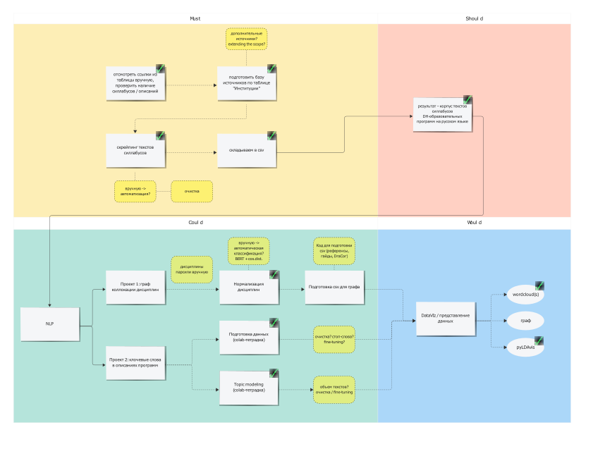
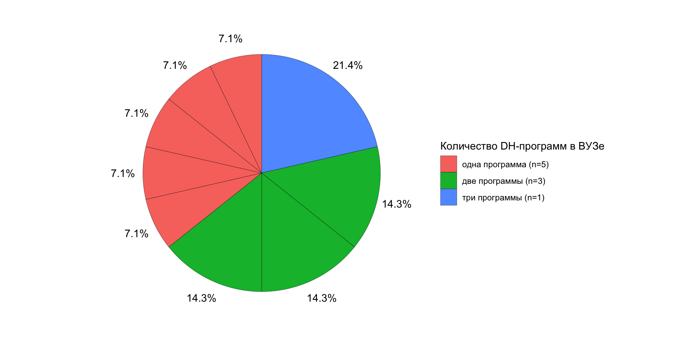
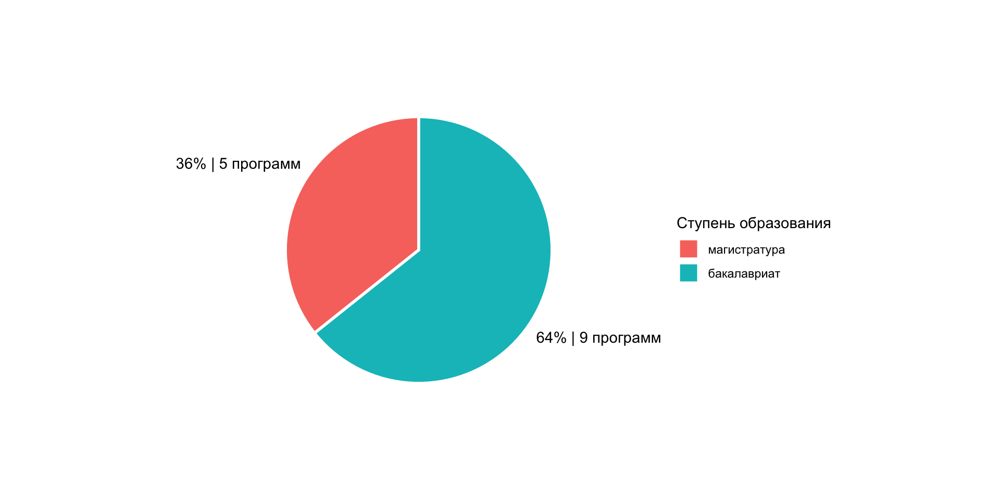
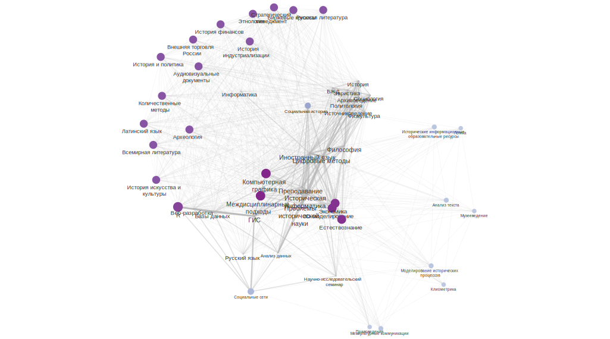
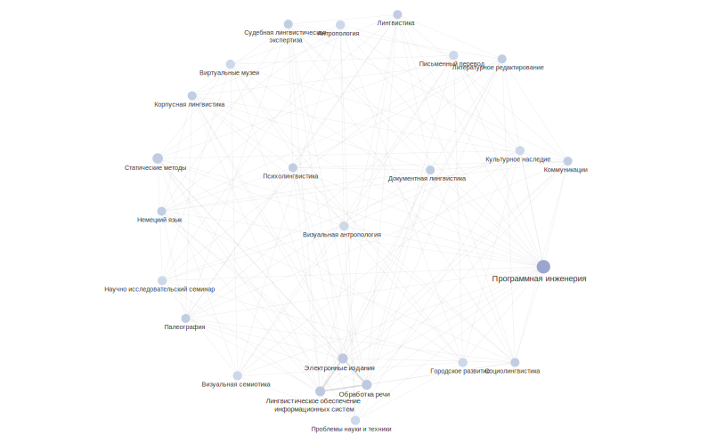
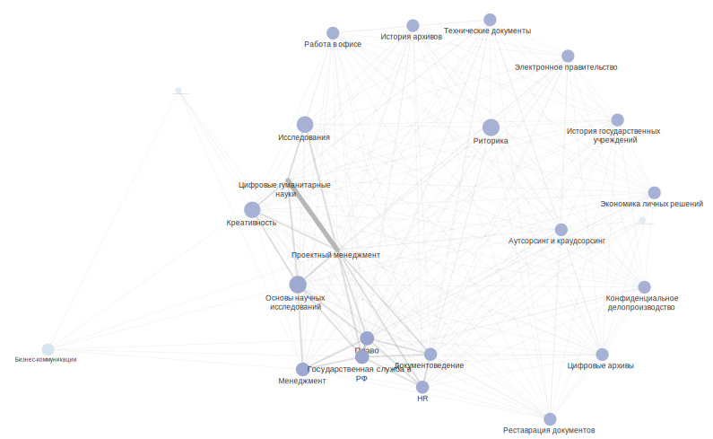
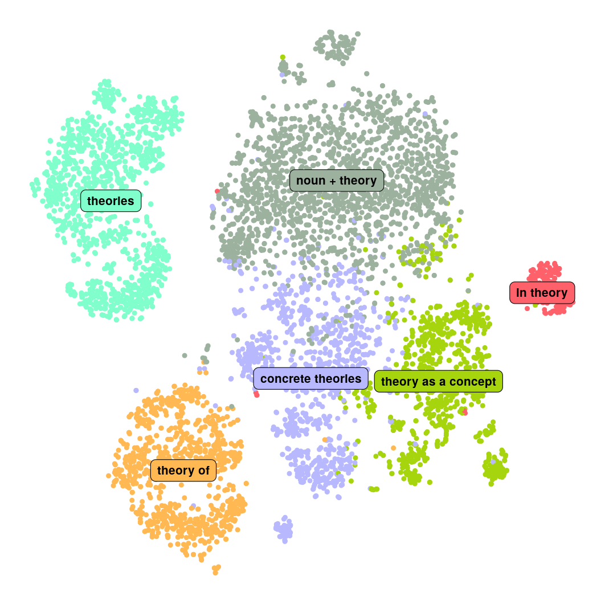

| institution | link | department | program_name | program_code | graduate_level | location | disciplines | competencies | employment | full_text |
|---|---|---|---|---|---|---|---|---|---|---|
| Московский государственный университет имени М.В. Ломоносова | http://www.hist.msu.ru/study/programs/bac/460301/program.php?ELEMENT_ID=55057 | Исторический факультет | Историческая информатика | 46.03.01 | Бакалавриат | Москва | Иностранный язык Русский язык и культура речи Философия Экономика Безопасность жизнедеятельности Физическая культура Информатика и математика Современное естествознание Основы археологии Основы этнологии История первобытного общества История древнего Востока История древней Греции История древнего Рима История средних веков История России до XIX века История России XIX – начала XX века Отечественная история XX века История современной России История стран Европы и Америки, 1640-1815 годов История стран Европы и Америки, 1815-1918 годов История стран Европы и Америки, 1918-1945 годов История стран Европы и Америки, 1945-до наших дней История южных и западных славян Общая история Церкви История стран Азии и Африки История стран Ближнего Зарубежья Теоретико-методологические проблемы исторической науки Источниковедение электронных документов Историография междисциплинарных исторических исследований Архивоведение и архивные информационные технологии для историков Историческая география и географические информационные системы Латинский язык История искусства Социология Основы политологии История средневековой культуры (IV-XIV веков) История средневековой культуры (XV-середина XVII веков) Всемирная литература Русская литература Стратегический менеджмент Язык истории и политики Количественные методы в исторических исследованиях Теория и практика преподавания истории в средней школе Интернет-эвристика для историков Компьютерные методы анализа нарративных источников Компьютерная графика для историков Введение в историческую информатику Спецсеминар по выпускной квалификационной работе бакалавра (по профилю) Методы визуализации и репрезентации данных разнородных исторических источников: введение в R Информационные системы и базы данных в исторических исследованиях Индустриализация и модернизационные процессы в Российской империи и СССР: электронные ресурсы, методы анализа Мировая история финансов, банков и денег от средних веков до XXI века: исследовательские подходы и методы Внешняя торговля России в XVIII-XX вв.: источники, электронные ресурсы и методы их анализа Биржевые кризисы и “аномалии”: исторический опыт и методы исследования Технологии оцифровки трёхмерных пространственных исторических данных: 3d моделирование, фотограмметрия, лазерное сканирование, цифровая аэрофотосъёмка Методы и технологии работы историка с аудиовизуальными документами Разработка исторических интернет-ресурсов | NA | NA | NA |
| Московский государственный университет имени М.В. Ломоносова | http://www.hist.msu.ru/study/programs/mag/460401/program.php?ELEMENT_ID=53150 | Исторический факультет | Историческая информатика | 46.04.01 | Магистратура | Москва | Иностранный язык Современное естествознание Наука о данных и искусственный интеллект Философия Экономика Правоведение Методологические проблемы исторических исследований Теоретико-методологические проблемы преподавания истории Музееведение Компьютерные методы анализа массовых источников Методы и технологии социальной истории Спецсеминар по научной проблематике исторической информатики Компьютерное моделирование исторических процессов Математическая логика для историков Компьютерные реконструкции объектов историко-культурного наследия Методы и технологии клиометрики | NA | NA | NA |
| Тамбовский государственный университет имени Г.Р. Державина | https://www.tsutmb.ru/abiturientu/magistratura/programs/istoriya-magisterskaya-programma-istoricheskaya-informatika/ | Факультет истории, мировой политики и социологии | Историческая информатика | 46.04.01 | Магистратура | Тамбов | Научно-исследовательский семинар Управление проектами: методы и технологии Межкультурные коммуникации Информационные технологии в профессиональной деятельности Иностранный язык в профессиональной сфере Актуальные проблемы исторических исследований Междисциплинарные подходы в современной исторической науке Педагогика и психология высшей школы Методологические проблемы исторической информатики Статистика и анализ данных Сохранение историко-культурного наследия методами исторической информатики Информационные ресурсы по социальной истории Введение в гуманитарную информатику Исторические информационные образовательные ресурсы Цифровые возможности презентации и сохранения исторических источников Цифровые методы анализа текста в исторических исследованиях Моделирование исторических процессов Компьютерная графика и интерактивная анимация Геоинформационные системы в исторических исследованиях Методы и технологии сетевого анализа Историография исторической информатики и Digital history | Цель - достижение выпускниками планируемых результатов: знаний, умений и способностей в области российской и всеобщей истории, использования методов исторической информатики в исторических исследованиях, а также в сфере преподавания истории в общеобразовательных учреждениях | Специалист по цифровизации историко-культурного контента Специалист в области архивного и музейного дела Историк | ЦЕЛЬ ПРОГРАММЫ достижение выпускниками планируемых результатов: знаний, умений и способностей в области российской и всеобщей истории, использования методов исторической информатики в исторических исследованиях, а также в сфере преподавания истории в общеобразовательных учреждениях. Актуальность программы обусловлена тем, что формирование цифровой экономики, проникновение информационных технологий во все сферы общественной жизни, создание на основе этих технологий новой социально-культурной инфраструктуры – все эти процессы определяют направление современного тренда развития информационного общества, что выражается, помимо прочего, в появлении социального заказа на соответствующие компетенции. Этот вызов требует появления образовательных программ, способных сформировать эти компетенции, востребованных на рынке труда. Таким образом, конкурентоспособность данной программы обусловлена её направленностью на формирование новых решений в сфере подготовки специалистов в системе исторического образования, инфраструктуры исследования и сохранения историко-культурного наследия Этапы обучения img / 01 Первый курс / 02 Второй курс Геоинформационные системы в исторических исследованиях, Методы и технологии сетевого анализа, Историография исторической информатики и Digital history Ключевые дисциплины Актуальные проблемы исторических исследований обучающиеся изучают проблематику демографической, геоэкологической, социокультурной истории, истории повседневности и т.д Введение в гуманитарную информатику обучающиеся имею возможность познакомиться с такими направлениями как использование информационных технологий в работе с текстами, количественными данными, графикой и анимацией Междисциплинарные подходы в современной исторической науке направлена на изучение методологических основ и принципов применения междисциплинарных подходов в исторических исследованиях Кем вы станете Вариантов профессий много, а конечный выбор зависит только от вас! Специалист по цифровизации историко-культурного контента Специалист в области архивного и музейного дела Историк |
| Ижевский государственный технический университет им. М.Т. Калашникова | https://istu.ru/department/kafedra-lingvistika#tab-science | Кафедра «Лингвистика» | Разработка интеллектуальных диалоговых систем | 09.03.03 | Бакалавриат | Ижевск | Интеллектуальные информационные системы и технологии Статистические методы в лингвистике / Информационный поиск Автоматизированная обработка естественного языка Языки и форматы разметки лингвистических данных Лингвистическое обеспечение информационных систем Электронные издания, библиотеки, корпуса Фонетика и основы обработки звучащей речи Управление проектной деятельностью | Способность разрабатывать и адаптировать прикладное программное обеспечение Способность принимать участие в управлении проектами создания информационных систем на стадиях жизненного цикла Способность использовать современные информационные технологии и программные средства при решении задач профессиональной деятельности Способность применять в профессиональной деятельности основные понятия и категории современной лингвистики | Выпускник может работать программистом, специалистом по информационным системам, руководителем проектов в области информационных технологий, системным аналитиком, специалистом по тестированию в области информационных технологий. | Кафедра «Лингвистика» образована 1 сентября 2005 года как учебно-научное подразделение факультета «Экономика, право и гуманитарные науки». Заведующим кафедрой назначен, а затем избран доктор филологических наук Баранов Виктор Аркадьевич. Целью создания кафедры явилась необходимость повышения уровня языковой подготовки студентов ИжГТУ. Кафедра осуществляет набор и подготовку бакалавров по направлению 45.03.03 Фундаментальная и прикладная лингвистика, профиль Теоретическая и компьютерная лингвистика. Кроме того, преподаватели кафедры ведут занятия по русскому языку, культуре речи, риторике, стилистике и древним языкам, а с 2018 года – немецкому и французскому языкам, а также по некоторым другим лингвистическим дисциплинам. Особой сферой деятельности сотрудников кафедры является развитие научных направлений на стыке лингвистики, с одной стороны, и математики, информатики, программирования – с другой. Описание образовательной программы Образовательная программа предусматривает изучение передовых технологий обработки текста с применением искусственного интеллекта, лингвистических моделей и математических алгоритмов, которые могут быть использованы для решения широкого ряда аналитических задач. Например, для оценки эффективности PR- или рекламной кампаний, действий в рамках этих кампаний, отслеживания отклика на проводимые мероприятия, для извлечения из анализируемого корпуса текстов фактов, событий, персон, объектов, организаций, предметов, географических названий и их связей между собой, контекстов упоминаний и для решения других задач, необходимых для исследования потребностей деятельности организаций с целью определения проблем бизнеса и формирования предложений их решения. Актуальность программы Программа подготовки включает в себя классические дисциплины программирования и алгоритмизации, моделирования и анализа данных и дисциплины предметной области - лингвистики, цель изучения которых - проведение количественного и качественного, в том числе с применением искусственного интеллекта, контент-анализа текстовых корпусов в соответствии с временными, гендерными и иными параметрами. Дисциплины Интеллектуальные информационные системы и технологии Статистические методы в лингвистике / Информационный поиск Автоматизированная обработка естественного языка Языки и форматы разметки лингвистических данных Лингвистическое обеспечение информационных систем Электронные издания, библиотеки, корпуса Фонетика и основы обработки звучащей речи Управление проектной деятельностью и др. Специальные дисциплины ведут преподаватели кафедр «Информационные системы» (зав. каф. д-р физ.-мат. наук, проф. М. М. Горохов) и «Лингвистика» (зав. каф. д-р филол. наук, проф. В. А. Баранов). Получаемые компетенции Способность разрабатывать и адаптировать прикладное программное обеспечение Способность принимать участие в управлении проектами создания информационных систем на стадиях жизненного цикла; Способность использовать современные информационные технологии и программные средства при решении задач профессиональной деятельности Способность применять в профессиональной деятельности основные понятия и категории современной лингвистики Трудоустройство Выпускник может работать программистом, специалистом по информационным системам, руководителем проектов в области информационных технологий, системным аналитиком, специалистом по тестированию в области информационных технологий. |
| Ижевский государственный технический университет им. М.Т. Калашникова | https://istu.ru/department/kafedra-lingvistika#tab-science | Кафедра «Лингвистика» | Теоретическая и компьютерная лингвистика | 45.03.03 | Бакалавриат | Ижевск | Введение в теорию коммуникации Основы судебной лингвистической экспертизы Литературное редактирование Документная лингвистика Риторика Основы психолингвистики Основы социолингвистики Языки мира и языковые ареалы История русского языка Палеография Английский язык Немецкий язык Информатика и основы программирования Технология проектирования программ Лингвистическое обеспечение информационных систем Электронные издания Технологии обработки текста и звучащей речи Технологии корпусной лингвистики | NA | Сфера деятельности выпускника: ИТ-компании: создание и продвижение сайтов, разработка прикладных программ в области анализа естественного языка, документооборота, автоматического перевода, создания словарей, текстовых корпусов, лингвистических ресурсов и др.; средства массовой информации (в том числе электронные); рекламные агентства: копирайтинг, спичрайтинг; издательства, типографии (редакторская подготовка изданий); лингвистическая экспертиза; перевод (английский, немецкий); работа с документами в любых областях, в том числе работа с электронными документами, электронными библиотечными и архивными системами, текстовыми базами данных. Выпускники направления «Фундаментальная и прикладная лингвистика» («Теоретическая и компьютерная лингвистика») работают программистами, тестировщиками программ, техническими писателями, преподавателями английского языка и русского как иностранного, переводчиками, документоведами, экспертами на ведущих предприятиях, в государственных структурах и крупных коммерческих организациях Удмуртии и других регионов (Экспертно-криминалистический центр МВД УР, АО «Ижевский мотозавод «Аксион-холдинг»», ПАО Сбербанк, НПО «Компьютер», НТВП «Кедр», компании ELMA, EPAM Systems, Codax, DIRECTUM, Binet.pro и др.). Некоторые выпускники продолжают учебу в других вузах, как российских, так и зарубежных. | Сфера деятельности выпускника: ИТ-компании: создание и продвижение сайтов, разработка прикладных программ в области анализа естественного языка, документооборота, автоматического перевода, создания словарей, текстовых корпусов, лингвистических ресурсов и др.; средства массовой информации (в том числе электронные); рекламные агентства: копирайтинг, спичрайтинг; издательства, типографии (редакторская подготовка изданий); лингвистическая экспертиза; перевод (английский, немецкий); работа с документами в любых областях, в том числе работа с электронными документами, электронными библиотечными и архивными системами, текстовыми базами данных. Выпускники Выпускники направления «Фундаментальная и прикладная лингвистика» («Теоретическая и компьютерная лингвистика») работают программистами, тестировщиками программ, техническими писателями, преподавателями английского языка и русского как иностранного, переводчиками, документоведами, экспертами на ведущих предприятиях, в государственных структурах и крупных коммерческих организациях Удмуртии и других регионов (Экспертно-криминалистический центр МВД УР, АО «Ижевский мотозавод «Аксион-холдинг»», ПАО Сбербанк, НПО «Компьютер», НТВП «Кедр», компании ELMA, EPAM Systems, Codax, DIRECTUM, Binet.pro и др.). Некоторые выпускники продолжают учебу в других вузах, как российских, так и зарубежных. Научная деятельность Результаты исследовательской работы сотрудников кафедры «Лингвистика» были представлены более чем в 150 научных статьях в российских и зарубежных журналах, а также на всероссийских и международных конференциях. С 2005 года более 25 проектов (как коллективных, так и индивидуальных) были поддержаны грантообразующими государственными фондами и Министерством образования и науки РФ. В 2006-2018 гг. кафедра «Лингвистика» совместно с коллективами других российских и зарубежных вузов подготовила и провела 8 международных конференций и школ «Письменное наследие и информационные технологии (El’Manuscript)» в городах Ижевск, Казань, Уфа, Петрозаводск, Новосибирск, Варна (Болгария), Вильнюс (Литва), Вена и Кремс (Австрия). Научные направления кафедры: Исторические, корпусные и лингвотекстологические исследования древних славянских рукописей и текстов Исследования в области диалектного словообразования Исследования и прикладные разработки в области современной и исторической лексикологии, семасиологии, лексикографии Преподаватели кафедры осуществляют прикладные работы в области компьютерной лингвистики. На кафедре созданы и развиваются: корпус средневековых славянских рукописей XI-XV вв. (http://manuscripts.ru), корпус языка М. В. Ломоносова (http://lomonosov.pro), лингвогеографическая информационная система «Диалект» (http://dialect.manuscripts.ru). Научные связи кафедры «Лингвистика» Казанский (Приволжский) федеральный университет (совместные прикладные разработки в области хранения, обработки и издания средневековых славянских рукописей). Новосибирский государственный университет (организация научных мероприятий). Петрозаводский государственный университет (организация научных мероприятий). Кирилло-Мефодиевский научный центр Болгарской Академии наук (совместные прикладные работы в области исследования и публикации средневековых славянских рукописных памятников). Институт славистики Венского университета (Австрия) (совместные прикладные разработки в области хранения, обработки и издания средневековых славянских рукописей). École Normale supérieure Lettres et Sciences humanes (Высшая гуманитарная школа), Lyon, France, группа Base de Franҫais Médiéval (координация работ в области разработки лингвистических и текстологических стандартов). Научные сообщества Научное сообщество «Письменное наследие» Ассоциация «История и компьютер» Российское научное сетевое сообщество цифровой гуманитаристики |
| УрФУ им. первого Президента России Б.Н. Ельцина | https://dh-urfu.skbkontur.ru/?utm_source=site&utm_medium=urfu&utm_campaign=urfu&utm_term=magistratura_tsifrovaya_gumanitaristika#tab-2s | Уральский гуманитарный институт | Интеллектуальные системы в гуманитарной среде | 45.04.04 | Магистратура | Екатеринбург | Работа в офисных пакетах Основы программирования Цифровые технологии в гуманитарной сфере (введение в специальность DH) Английский язык Теория и практика бизнес-коммуникаций Компьютерная лингвистика Качественные методы в социальных науках Основы проектной деятельности Основы SQL и работа с базами данных Прикладная статистика и анализ данных Работа с данными с помощью Python Технологии работы с визуальным контентом Системный анализ Основы публичных выступлений и презентаций Создание и запуск ИТ-продукта Работа в сервисах отчетности Профессиональные курсы Бизнес-анализ Академическое письмо Цифровые технологии в образовании Внутрикорпоративные коммуникации Исследования пользователей Прикладной маркетинг Развитие продукта Антропология социальных медиа Анализ больших данных Информационные технологии в музейной практике Психология человека в цифровом мире Теория медиа Цифровые методы в исторических исследованиях | 1. Проводить научные и бизнес-исследования, выдвигать гипотезы и проверять их на практике 2. Систематизировать данные, обрабатывать их, готовить количественную и качественную аналитику с помощью скриптов и программ 3. Узнаете о проектном подходе в запуске продукта и стратегическом планировании 4. Строить экономику бизнеса, презентовать и продвигать проект в разных каналах | Выпускники нашей магистратуры смогут развиваться и работать в любом направлении, смежном с компьютерными и гуманитарными науками. Продуктовый маркетолог «Продуктовый маркетолог помогает создавать нужные людям продукты и делать так, чтобы в каждой точке контакта у клиента был позитивный опыт. Благодаря этому клиенты покупают наши сервисы и рекомендуют их знакомым. Что мы для этого делаем: Проводим исследования. Изучаем клиентов, мотивацию, потребности. Анализируем то, что окружает клиента. Это помогает понять, чего хочет клиент и как наше решение поможет его бизнесу. Считаем, сколько будут стоить продукты и на каких условиях их продавать. Рассказываем клиентам о продукте: работаем со СМИ, придумываем рекламные кампании и запускаем мероприятия. Мы стараемся, чтобы наши коммуникации были экологичными, уместными и полезными. Помогаем отделу продаж: собираем базу релевантных клиентов, создаем методологию, чтобы менеджеру легко было рассказывать о продукте и доносить ценность. Анализируем эффективность проекта: сколько и как мы зарабатываем, какой канал коммуникации лучше работает, строим прогнозы. Здесь на помощь приходят бизнес-аналитики и дата-сайентисты, которые обрабатывают большие объемы данных. Маркетолог изучает эти данные и делает выводы. Продуктовый маркетолог внимателен к тому, что происходит у клиентов, у коллег и в целом в мире. Мы смотрим на ситуации глазами пользователя, разработки и бизнеса. Так мы помогаем принимать решения руководителям и понимаем, как продукт будет развиваться. Маркетолог как маяк, который освещает путь к цели.» Аналитик данных «Аналитики дают бизнесу информацию для принятия решений. Аналитик делает это с помощью данных. Например, маркетолог хочет узнать, в какой упаковке хлеб продается лучше всего. Аналитик собирает данные о продажах, а затем с помощью статистических критериев выбирает лучшую упаковку. Аналитик строит прогнозные модели. Например, магазин хочет узнать, как хорошо будет продаваться хлеб в следующем году. Аналитик собирает данные о продажах за прошлый год и строит математическую модель, которая предсказывает продажи. Аналитику данных нужно знать: Excel SQL Статистика и статистические пакеты/языки обработки данных R или Python Power BI или другие инструменты визуализации данных» Менеджер маркетинговых исследований «Исследователи и интервьюеры работают «в полях», где они получают данные, и в офисе, где они данные обрабатывают. Суть работы интервьюера, с одной стороны, проста: поднял трубку, задал вопросы по предложенной анкете, зафиксировал результат. С другой стороны, все люди разные, к каждому даже в коротком разговоре нужно найти свой подход, убедить человека уделить нам 5–10 минут. Результаты работы интервьюера обобщаются, мы передаем их аналитикам нашего отдела, которые, в свою очередь, делают на основании собранного массива данных выводы о состоянии дел на том или ином участке рынка, выясняют реальные потребности клиентов и т.д. Далее эти данные аналитики презентуют заказчикам — коллегам из команд продуктов. Маркетологи, разработчики, руководители проектов, используя эти данные, формулируют идеи продвижения продуктов, делают предложения клиентам по новым продуктам, получают более широкую картину. Интервьюер — это стартовая позиция, которая позволяет получить хороший опыт общения с людьми, умение находить разный подход к ним, развить речь и умение вести телефонные переговоры». Денис Ерышканов, руководитель колл-центра отдела маркетинговых исследований «Исследователь помогает услышать голос целевой аудитории продукта или услуги. Понять потребности аудитории, желания или проблемы. В результатах исследований кроются ответы или новые гипотезы о продукте, конкурентах и рынке в целом. Типичные задачи для исследователя: Узнать долю рынка, лояльность клиентов, причины непродления, уровень удовлетворенности и прочие вопросы, связанные с проверкой гипотез на большом числе респондентов. Это количественные исследования — телефонные, интернет-опросы и другие. Изучить бизнес-процессы целевой аудитории, погрузиться в пользовательский опыт, сценарии, мотивы и потребности клиентов, протестировать восприятие образа продукта и оценить рекламные материалы. Это качественные исследования: фокус-группы, глубинные и полуформализованные интервью, наблюдение и другие. Посчитать ёмкость рынка, определить демографию клиентов, сегментировать клиентов. Это кабинетные исследования: аналитика баз, сбор информации по рынку, отрасли, региону. Сравнить цены и функциональность продуктов конкурентов. Это конкурентная разведка». Менеджер по коммуникациям «Менеджер по коммуникациям может приложить свой талант в нескольких сферах: копирайтинг, контент-маркетинг, PR, SMM, контент-стратег и т.д. Если умеете в коммуникации, открываются многие двери. Коммуникатор помогает заказчику (бизнесу, руководству компании, органу власти) донести то, что нужно, до аудитории в целости и сохранности. Такой специалист думает: что, как и где нужно сказать, чтобы не проиграть по пути в «глухие телефончики». Такой специалист умеет писать хорошие, крепкие и полезные тексты, разбирается в визуальном повествовании, знает, как работают соцсети и что нужно делать, чтобы быть в них заметными. Это человек-оркестр в лучшем смысле: и написать, и снять, и сказать, и упаковать, и опубликовать, и продвинуть. | Цифровая гуманитаристика, или Digital Humanities, — это современное направление науки, связанное с применением компьютерных методов в социальных и гуманитарных исследованиях. В ходе освоения программы студент, с одной стороны, приобретает широкие знания в области теории и методологии гуманитарных дисциплин, а с другой — навыки компьютерного сопровождения таких исследований, которые могут применяться как в академической среде, так и за ее пределами при решении широкого круга аналитических задач. Студент учится формализовывать различные виды данных, анализировать их с использованием современных IT-инструментов, представляя результаты своего анализа в электронной форме. Программа реализуется совместно с компанией СКБ Контур, одним из национальных лидеров IT-отрасли. Сотрудники СКБ Контур преподают студентам дисциплины технического и управленческого циклов, руководят практикой студентов. Лучшие студенты привлекаются к работе над реальными IT-проектами компании. Программа вошла в Топ-10 наиболее перспективных специальностей по версии """"Российской газеты"""". Для кого предназначена эта программа? Программа предназначена для студентов, интересующихся возможностями применения современных компьютерных решений в гуманитарных и социальных исследованиях, как чисто академических, так и отраслевых, а также для ребят, стремящихся заниматься аналитической и управленческой работой на предприятиях IT-отрасли и в смежных сферах бизнеса. Преимущества программы Открытость для абитуриентов любого профиля подготовки: программа доступна для выпускников любых гуманитарных специальностей, желающих расширить свои знания в области гуманитаристики, научиться программировать и реализовывать научные, просветительские, культурные проекты, требующие компетенций в области информационных технологий. Сочетание фундаментальной гуманитарной подготовки с углубленным изучением IT: наряду с дисциплинами, направленными на знакомство студентов с современным состоянием самых разных гуманитарных наук и возможностями применения в них компьютерных технологий, студент изучает целый ряд прикладных математических и IT-дисциплин: программирование, базы данных, статистика, компьютерная графика, web-дизайн. Проектная деятельность как основа профессиональной самореализации: в течение всего срока обучения магистрант работает над конкретным научным или просветительским проектом, соответствующим его собственным профессиональным интересам, параллельно осваивая те информационные технологии, которые необходимы для реализации проектов именно такого типа. Магистерская программа поможет специалистам, которые уже работают, но чувствуют недостаток технических или менеджерских навыков. В учебе вам поможет Критическое и системное мышление Любовь к цифрам и поиску закономерностей Умение находить общий язык с людьми, выявлять их потребности и мотивировать на результат Знание иностранного языка Программа обучения Лекции читают ученые УрФУ и практикующие специалисты Контура, которые проверили на себе все инструменты и делятся ими с вами. Программа обучения состоит из общих курсов и двух траекторий на выбор. В траектории Контура развиваются профессиональные навыки, применимые к бизнес-задачам. Траектория УрФУ — академическая, она посвящена применению аналитических методов к гуманитарным наукам. Чему вы научитесь 1. Проводить научные и бизнес-исследования, выдвигать гипотезы и проверять их на практике 2. Систематизировать данные, обрабатывать их, готовить количественную и качественную аналитику с помощью скриптов и программ 3. Узнаете о проектном подходе в запуске продукта и стратегическом планировании 4. Строить экономику бизнеса, презентовать и продвигать проект в разных каналах Читайте истории наших студентов Павел Кузьмин 1 курс Я окончил бакалавриат по направлению «Востоковедение и африканистика», где учил один из самых сложных языков мира – японский. На четвёртом курсе мне захотелось сменить свою профессиональную деятельность. Привлекала IT-сфера, но самих технических навыков у меня не было. Поэтому я решил поступить на «Цифровую гуманитаристику». Обучение в магистратуре дает не только хард, но и софт скиллы. Например, работа в команде над проектом, когда необходимо быть коммуникабельным. Креативность и умение выступать перед публикой, когда, например, необходимо защитить свой стартап. Я советую поступать в магистратуру Контура всем своим друзьям, которые сейчас заканчивают бакалавриат. Это направление отличается от других малым количеством «классических» университетских дисциплин и интересным синтезом гуманитарной и технической сфер. Вера Сапожникова 1 курс Я уже полтора года работаю бизнес-аналитиком. Закончила ФИИТ, но поняла, что разработка мне неинтересна и поступила в магистратуру Контура «Цифровая гуманитаристика». Я изучила программу, посмотрела учебный план и поняла, что здесь концентрировано учат тем навыкам и скиллам, которые нужны в работе аналитика. Спойлер: это обучение помогло мне глубже заглянуть в профессию, предоставило теоретическую базу, открыло для меня новые направления и возможности. И это все только за 1 год обучения. Сегодня я работаю системным аналитиком в Контуре в Биллинге. Здесь круто настроена система обмена опытом, менторство и обучение. Андрей Спиридонов Выпускник 2022 года Я учился на специалитете в радиофаке на направлении «Радиоэлектронные системы и комплексы». Поступил, потому что понимал что свободное время еще есть и почему бы не занять его чем-то полезным. полученными знаниями и навыками. За время обучения в магистратуре мне были полезны и интересны такие предметы, как SQL, системный анализ, инициация и планирование ИТ-продукта. И другие предметы тоже, но они, как мне кажется, больше про расширение кругозора и погружение в сферу IT. Как максимум, я нашел комфортное место работы. Три месяца назад я попал в команду аналитиков данных Контура. Кем можно стать после магистратуры Выпускники нашей магистратуры смогут развиваться и работать в любом направлении, смежном с компьютерными и гуманитарными науками. Продуктовый маркетолог «Продуктовый маркетолог помогает создавать нужные людям продукты и делать так, чтобы в каждой точке контакта у клиента был позитивный опыт. Благодаря этому клиенты покупают наши сервисы и рекомендуют их знакомым. Что мы для этого делаем: Проводим исследования. Изучаем клиентов, мотивацию, потребности. Анализируем то, что окружает клиента. Это помогает понять, чего хочет клиент и как наше решение поможет его бизнесу. Считаем, сколько будут стоить продукты и на каких условиях их продавать. Рассказываем клиентам о продукте: работаем со СМИ, придумываем рекламные кампании и запускаем мероприятия. Мы стараемся, чтобы наши коммуникации были экологичными, уместными и полезными. Помогаем отделу продаж: собираем базу релевантных клиентов, создаем методологию, чтобы менеджеру легко было рассказывать о продукте и доносить ценность. Анализируем эффективность проекта: сколько и как мы зарабатываем, какой канал коммуникации лучше работает, строим прогнозы. Здесь на помощь приходят бизнес-аналитики и дата-сайентисты, которые обрабатывают большие объемы данных. Маркетолог изучает эти данные и делает выводы. Продуктовый маркетолог внимателен к тому, что происходит у клиентов, у коллег и в целом в мире. Мы смотрим на ситуации глазами пользователя, разработки и бизнеса. Так мы помогаем принимать решения руководителям и понимаем, как продукт будет развиваться. Маркетолог как маяк, который освещает путь к цели.» Анастасия Рысева, маркетолог Аналитик данных «Аналитики дают бизнесу информацию для принятия решений. Аналитик делает это с помощью данных. Например, маркетолог хочет узнать, в какой упаковке хлеб продается лучше всего. Аналитик собирает данные о продажах, а затем с помощью статистических критериев выбирает лучшую упаковку. Аналитик строит прогнозные модели. Например, магазин хочет узнать, как хорошо будет продаваться хлеб в следующем году. Аналитик собирает данные о продажах за прошлый год и строит математическую модель, которая предсказывает продажи. Аналитику данных нужно знать: Excel SQL Статистика и статистические пакеты/языки обработки данных R или Python Power BI или другие инструменты визуализации данных» Владимир Савельев, аналитик данных Менеджер маркетинговых исследований «Исследователи и интервьюеры работают «в полях», где они получают данные, и в офисе, где они данные обрабатывают. Суть работы интервьюера, с одной стороны, проста: поднял трубку, задал вопросы по предложенной анкете, зафиксировал результат. С другой стороны, все люди разные, к каждому даже в коротком разговоре нужно найти свой подход, убедить человека уделить нам 5–10 минут. Результаты работы интервьюера обобщаются, мы передаем их аналитикам нашего отдела, которые, в свою очередь, делают на основании собранного массива данных выводы о состоянии дел на том или ином участке рынка, выясняют реальные потребности клиентов и т.д. Далее эти данные аналитики презентуют заказчикам — коллегам из команд продуктов. Маркетологи, разработчики, руководители проектов, используя эти данные, формулируют идеи продвижения продуктов, делают предложения клиентам по новым продуктам, получают более широкую картину. Интервьюер — это стартовая позиция, которая позволяет получить хороший опыт общения с людьми, умение находить разный подход к ним, развить речь и умение вести телефонные переговоры». Денис Ерышканов, руководитель колл-центра отдела маркетинговых исследований «Исследователь помогает услышать голос целевой аудитории продукта или услуги. Понять потребности аудитории, желания или проблемы. В результатах исследований кроются ответы или новые гипотезы о продукте, конкурентах и рынке в целом. Типичные задачи для исследователя: Узнать долю рынка, лояльность клиентов, причины непродления, уровень удовлетворенности и прочие вопросы, связанные с проверкой гипотез на большом числе респондентов. Это количественные исследования — телефонные, интернет-опросы и другие. Изучить бизнес-процессы целевой аудитории, погрузиться в пользовательский опыт, сценарии, мотивы и потребности клиентов, протестировать восприятие образа продукта и оценить рекламные материалы. Это качественные исследования: фокус-группы, глубинные и полуформализованные интервью, наблюдение и другие. Посчитать ёмкость рынка, определить демографию клиентов, сегментировать клиентов. Это кабинетные исследования: аналитика баз, сбор информации по рынку, отрасли, региону. Сравнить цены и функциональность продуктов конкурентов. Это конкурентная разведка». Сергей Ловыгин, специалист по маркетинговым исследованиям Менеджер по коммуникациям «Менеджер по коммуникациям может приложить свой талант в нескольких сферах: копирайтинг, контент-маркетинг, PR, SMM, контент-стратег и т.д. Если умеете в коммуникации, открываются многие двери. Коммуникатор помогает заказчику (бизнесу, руководству компании, органу власти) донести то, что нужно, до аудитории в целости и сохранности. Такой специалист думает: что, как и где нужно сказать, чтобы не проиграть по пути в «глухие телефончики». Такой специалист умеет писать хорошие, крепкие и полезные тексты, разбирается в визуальном повествовании, знает, как работают соцсети и что нужно делать, чтобы быть в них заметными. Это человек-оркестр в лучшем смысле: и написать, и снять, и сказать, и упаковать, и опубликовать, и продвинуть. Юлия Позднякова, специалист по связям с общественностью Практика в Контуре Во время учебы в магистратуре вы можете пройти практику в Контуре: работать над задачами в существующем сервисе или развивать свой стартап. Весь 4 семестр посвящен практикам и написанию дипломной работы. «Половина курсов проходит в офисе Контура. Тут студенты учатся работать с данными, изучают системную аналитику и аналитику в бизнесе, осваивают навыки редактуры, копирайтинга. Запускают проекты и проводят исследования, получают компетенции, необходимые менеджерам проектов». Скользкова Светлана Федоровна руководитель образовательной программы и практики в Контуре |
| УрФУ им. первого Президента России Б.Н. Ельцина | https://programs.edu.urfu.ru/ru/10152/ | Уральский гуманитарный институт | Информационное и документационное обеспечение управления | 46.03.02 | Бакалавриат | Екатеринбург | История России и Всеобщая история Государственная служба в РФ: история, теория, практика Документационное обеспечение управления Теория и практика архивного дела Компьютерные технологии в архивном деле и ДОУ Информационное, архивное, трудовое, административное право Кадровое обеспечение управления Основы информационной безопасности Информационно-аналитическая деятельность Информационные системы в архивном деле и управлении Менеджмент: основы делового администрирования | Эффективно работать с документами и информацией (создавать, выявлять, критически анализировать и использовать информацию, как в процессе принятия управленческого решения, так и в научных исследованиях и проектах) | аналитик, сотрудник информационно-аналитической службы Аналитик – это специалист, способный решать задачи аналитики. Работа аналитика заключается в анализе разнообразных данных, текстовых и цифровых, на основании которых можно делать определённые выводы. Аналитики находят применение своей профессии в научных и исследовательских учреждениях, в государственных структурах, банках, медицине, страховом бизнесе, а также в экономической сфере деятельности. Аналитик должен собирать различные цифровые данные, анализировать и впоследствии уметь правильно трактовать их. Для анализа данных приходится использовать различные способы, которые зависят от его цели. историк-архивист Деятельность специалиста направлена на формирование и сохранение архивного фонда Российской Федерации как важнейшей части культурного наследия общества, его духовного опыта, истории российской государственности; организацию использования архивных документов в целях включения архивного наследия в систему информационных ресурсов общества, в целях углубления исторического, гуманитарного и естественнонаучного знания. менеджер по персоналу Менеджер по персоналу, это специалист, отвечающий за формирование кадровых ресурсов в организации. В его обязанности входит довольно широкий круг задач (задачи эти зависят от размера компании или фирмы): подбор кадров, оформления документации (ведение кадрового делопроизводства), аттестация и обучение персонала, организация мотивации сотрудников и даже формирование и развитие корпоративной культуры. референт - помощник руководителя Референт – помощник руководителя – это специалист с высшим образованием. Референт – помощник руководителя является ведущим специалистом службы документационного обеспечения управления организации. Неотъемлемой частью работы для референта – помощника руководителя является налаживание и поддержание контактов с сотрудниками, с партнерами, с конкурентами и с клиентами. Для этого ему потребуются знания ораторского искусства, международного протокола, профессионального этикета. Референт – помощник руководителя является имиджевой составляющей, как фирмы, так и самого руководителя. Для этого референт – помощник руководителя должен формировать позитивную оценку организации, поддерживать контакты со СМИ и партнерами, а также формировать внутри компании ее миссию, цели и помогать руководителю в создании его образа, как для общественности, так и для сотрудников. Таким образом, референт – помощник руководителя – это инициативный и здравомыслящий помощник руководителя, обладающий всеми профессиональными навыками, необходимыми для работы в офисе, принимающий решения в пределах своей компетентности и при необходимости берущий управление на себя. руководитель службы документационного обеспечения управления, документовед; Документовед, это специалист, который планирует, организует и совершенствует деятельность службы документационного обеспечения управления, осуществляет контроль за состоянием делопроизводства в организации. Документовед должен иметь знания, практический опыт и владеть методами анализа, проектирования и организации документационного обслуживания учреждения (или структурного подразделения) любого уровня управления, любой отрасли и любой формы собственности. Документовед подготовлен к профессиональной работе в государственных органах федерального уровня, субъектов Федерации, муниципального уровня, в государственных, общественных, кооперативных и коммерческих учреждениях, организациях, фирмах, предприятиях в службах документационного обеспечения управления на должностях, требующих высшего образования, в том числе руководителем службы делопроизводства специалист по управлению информационным ресурсами Специалист по информационным ресурсам занимается созданием, поддержкой и продвижением различных информационных ресурсов (интернет-проектов). Это хорошее применение сочетания гуманитарного образования и навыков цифровой эпохи. Должностные обязанности специалиста по информационным ресурсам зависят от уровня занимаемой должности, как и в любой другой профессии. Специалист, ведущий специалист, главный специалист выполняют разные функции в соответствии с разработанными для них профессиональными стандартами, но в целом они вместе ведут работу по разработке, поддержке и продвижению информационных ресурсов. Это техническая обработка информационных ресурсов и их размещение на сайте, создание и редактирование ресурсов (в том числе, электронного архива и электронной библиотеки), управление информационными ресурсами в целом. | Описание программы: Направление подготовки: 46.03.02 Документоведение и архивоведение Научная отрасль: Гуманитарные науки Институт: Уральский гуманитарный институт Уровень образования: Бакалавриат Год(ы) набора: 2020-2023 Форма и срок обучения: Очная: 4 года Заочная: 4,6 года Язык обучения: Русский В 2020 году направлению «Информационное и документационное обеспечение управления» исполнилось 50 лет. К востоку от Москвы УрФУ является единственной площадкой, которая ведет непрерывную подготовку специалистов в области документоведения и архивоведения. Кафедра поддерживает тесные связи с «лидерами отрасли»: Всероссийским научно-исследовательским институтом документоведения и архивного дела (ВНИИДАД, Москва), Российским государственным гуманитарным университетом (Москва), с зарубежными партнерами – Университетом им. Марии Кюри-Склодовской (Люблин, Польша). Более 90% наших выпускников успешно трудоустроены. Почему стоит выбрать программу «Информационное и документационное обеспечение управления»? Программа «Информационное и документационное обеспечение управления» - это современно ориентированное образование, которое кратко можно охарактеризовать так: гармоничное сочетание навыков цифровой эпохи с традициями гуманитарного классического университетского образования. Программа подготовки соответствует профессиональным стандартам; компетенции согласованы с ведущими работодателями и отвечают потребностям российского рынка труда. Каждый наш выпускник готов к практической деятельности в сфере информационного и документационного обеспечения управления, управления архивным наследием Российской Федерации. Работодатели оценивают подготовку наших выпускников очень высоко! Более того, обучение будущих специалистов осуществляется в тесной взаимосвязи с представителями рынка труда, в числе которых Управление архивами Свердловской области, Правительство Свердловской области, Государственный архив Свердловской области, ПАО «Газпром», Сбербанк России, СКБ-Контур, Администрация Полномочного представителя Президента РФ в Уральском Федеральном Округе, Администрация Екатеринбурга и пр. Чему я буду учиться? Учебный план направления позволяет получить фундаментальное гуманитарное образование и необходимый набор знаний и навыков для успешной деятельности в информационной сфере. Значительное внимание уделено обучению современным компьютерным технологиям, основами информационно-аналитической и экспертной деятельности в уникальном тесном сочетании со знаниями истории Отечества и современных основ государственного управления в России и за рубежом. Высокий профессиональный уровень выпускников обеспечивается овладением дисциплинами профессионального блока: «Технологии документационного обеспечения управления», «Менеджмент», «Маркетинг», «Защита информации», а также блоком правовых дисциплин, при освоении которых студенты изучают административное, гражданское, трудовое, информационное, архивное, муниципальное право. Кем работают выпускники? Наши выпускники успешно трудоустраиваются в учреждения органов власти всех уровней, могут быть заняты в информационно-аналитических службах, информационных сервисах, успешно осуществлять деятельность в сфере управления персоналом, в банковской сфере, в системе науки и образования, в государственных и ведомственных архивах, службах ДОУ. Вот лишь некоторые должности, которые занимают подготовленные нами специалисты: - аналитик, сотрудник информационно-аналитической службы; - руководитель службы ДОУ, документовед; - специалист по управлению информационными ресурсами; - историк-архивист, сотрудник архивной службы, хранитель коллекций и фондов; - менеджер по персоналу. Известные выпускники Ройзман Евгений Вадимович – российский политик, экс-мэр Екатеринбурга. Редин Дмитрий Алексеевич – профессор, заведующий лабораторией эдиционной археографии. Партнеры и работодатели - Управление архивами Свердловской области, - Правительство Свердловской области, - Государственный архив Свердловской области, - ПАО «Газпром», - Сбербанк России, - СКБ-Контур, - Администрация Полномочного представителя Президента РФ в Уральском Федеральном Округе, - Администрация Екатеринбурга. |
| УрФУ им. первого Президента России Б.Н. Ельцина | https://programs.edu.urfu.ru/ru/10176/ | Уральский гуманитарный институт | Государственная служба Российской Федерации | 46.04.02 | Магистратура | Екатеринбург | Регионально-корпоративные модели управления; Картографические документы в системе управления; Практико-ориентированные технологии в управлении; Эффективная организация управленческих мероприятий; Правовое и кадровой обеспечение государственной службы; Основы аналитической и экспертной деятельности в профессиональной области; Государственное управление в России: история и современность; Практика преподавания профильных дисциплин в высшей школе; Технологии научной и проектной деятельности. | Документационное и информационное обеспечение управления и управление архивным делом; Создание локальной нормативной базы документационного обеспечения управления и архивного дела; Организация хранения, учета, комплектования, экспертизы ценности, справочно-поисковых средств и использования документов; Организации информационно-аналитического профиля; Государственные и ведомственные архивы; Архивы банков, предприятий и организаций; Органы государственной власти и органы местного самоуправления; Научно-исследовательские организации в области документоведения и архивоведения. | Выпускник осуществляет профессиональную деятельность в области: - документационного обеспечения управления в органах государственного управления; - информационно-аналитической деятельности в органах государственного управления; - разработки и внедрения систем электронного документооборота; - кадрового менеджмента и др. | Программа готовит специалистов для профессиональной служебной деятельности по обеспечению исполнения полномочий Российской Федерации, федеральных органов государственной власти, субъектов Российской Федерации, государственных органов субъектов Российской Федерации, федеральных территорий, органов публичной власти федеральных территорий и т.д.; Магистерская программа сформирована под запросы госсектора и бизнеса, нацелена на эффективное решение задач. В основе – работа с массивами информации: поиск, систематизация, хранение. Специфику госслужбы раскрывают блоки дисциплин: управление и планирование, аналитика и коммуникация. Доступно разъясняет тонкости нормативно-правого законодательства и учит обращаться с информационными технологиями и системами документооборота. Позволяет настроить процессы в малых и крупных корпорациях с нуля, эффективно управлять и строить личную карьеру. Исследования в магистратуре носят и научный, и прикладной характер. Учит владеть информацией. Программа стартовая для поступления в аспирантуру. Дополнительные преимущества для студентов: - Готовая траектория развития на государственной службе или в сфере науки; - Участие в грантах и проектах, возможность получать повышенные стипендии за научную деятельность; - Возможность обучения и построения карьеры в городе-миллионнике, входящем в топ мировых городов удобных для бизнеса; - Высокий спрос на выпускников направления в профессиональной среде. Выпускник по магистерской программе «Государственная служба Российской Федерации» может работать в документационных, информационных, кадровых, аналитических, архивных службах государственных предприятий, органов государственной власти и управления, а также в органах госслужбы. Доступное и качественное образование по мировым стандартам подготовки высококвалифицированных кадров. |
| Алтайский государственный университет | https://abiturient.asu.ru/obrprog/iimo/ | Институт истории и международных отношений | Документационное обеспечение управления и архивы в условиях цифровой трансформации | 46.03.02 | Бакалавриат | Барнаул | История (история России, всеобщая история) Философия Человек в современном мире Практикум """"Человек в современном мире"""" (дисциплины по выбору) Экономика личных решений Политика и управление Культура и креативность Основы современной социологии Деловое общение: риторика и письмо Иностранный язык Цифровая культура Цифровая культура в профессиональной деятельности Правовая культура Проектный менеджмент Практикум """"Проектный менеджмент"""" (дисциплины по выбору) Методы организации и проведения исторического исследования Теория и практика исследовательской деятельности Презентация результатов научного исследования Безопасность жизнедеятельности Физическая культура и спорт Элективные дисциплины по физической культуре и спорту Историческая хронология Вспомогательные исторические дисциплины Источниковедение Документология История отечественной культуры Документоведение Организация и технология ДОУ Культура оформления документов Организация работы в офисе Организация государственных учреждений России Организация работы с обращениями граждан Технотронные документы и архивы Электронный документооборот Кадровое делопроизводство Электронное правительство Конфиденциальное делопроизводство Информационно-аналитическое обеспечение органов управления Всеобщая история архивов История государственных учреждений История архивов России Использование архивных документов Архивоведение Научно-технические документы и архивы Местное самоуправление и муниципальные архивы Обеспечение сохранности, консервация и реставрация документов Архивная эвристика Архивный аутсорсинг и краудсорсинг Цифровые технологии в архивном деле Научно-исследовательская и проектная деятельность Основы научных исследований Управление проектами в профессиональной деятельности Учебная практика: организационно-управленческая практика Учебная практика: научно-исследовательская работа (получение первичных навыков научно-исследовательской работы) Производственная практика: проектная практика Производственная практика: преддипломная практика Подготовка к сдаче и сдача государственного экзамена Подготовка к процедуре защиты и защита выпускной квалификационной работы Введение в профессию (адаптивная дисциплина для лиц с ограниченными возможностями здоровья) | Чему научат. Технологиям документационного обеспечения управления и управлению архивному делу; основам организации хранения, учета, комплектования, экспертизе ценности, справочно-поисковым средствам и использованию архивных документов; нормативной базе документационного обеспечения управления и архивного дела; основам научных исследований в области документоведения и архивоведения. | Выпускники имеют возможность работать преподавателями в образовательных организациях всех уровней (школы, СПО, вузы), работают сотрудниками музеев, архивов, профильных научно-исследовательских институтов; трудятся в качестве экспертов в общественных и государственных организациях; работают редакторами и корреспондентами в СМИ (включая электронные); принимают участие в работе органов государственного и местного самоуправления, а также трудятся в туристическо-экскурсионных организациях. | Программа нацелена на преподавании актуальных знаний о современном документообороте, сделан акцент на изучение электронного документооборота в организациях. Программа по документоведению и архивоведению относится к числу практикоориентированных. Навыки практической работы формируются в ведущих организациях (архивы, государственные организации и коммерческие структуры) и реализуется с привлечением ведущих специалистов отрасли региона: Правительства Алтайского края; Министерства культуры Алтайского края, Государственного архива Алтайского края. Чему научат Технологиям документационного обеспечения управления и управлению архивному делу; основам организации хранения, учета, комплектования, экспертизе ценности, справочно-поисковым средствам и использованию архивных документов; нормативной базе документационного обеспечения управления и архивного дела; основам научных исследований в области документоведения и архивоведения. Карьерная траектория Благодаря углубленной практической подготовке, в том числе в ключевых организациях и ведомствах отрасли, выпускники успешно трудоустраиваются в качестве служащих органов государственной власти; в архивы (государственные, муниципальные, ведомственные, негосударственные); трудятся специалистами по документообороту в информационных, аналитических и многофункциональных центрах; работают специалистами кадровых отделов учреждений и предприятий; устраиваются в качестве преподавателей в учреждения высшего и средне-специального образования. Контакты Руководитель программы – доктор исторических наук, профессор кафедры отечественной истории Неженцева Наталья Владимировна. |
| Алтайский государственный университет | https://abiturient.asu.ru/programmag/iimo/ | Институт истории и международных отношений | Анализ данных и разработка цифровых медиа | 09.04.03 | Магистратура | Барнаул | NA | Чему научат. Применению системного подхода к информатизации и автоматизации; решению прикладных задач; моделированию прикладных и информационных процессов, описанию и реализации информационного обеспечения прикладных задач; построению информационных систем в области цифровых медиа на основе современных информационно-коммуникационных технологий и математических методов; подготовке обзоров, аннотаций, рефератов, научных докладов, публикаций; научно-исследовательской работе в области прикладной информатики; организации и управлению информационными ресурсами и сервисами; организации информационно-телекоммуникационной инфраструктуры и управлении информационной безопасностью информационных систем. | Выпускники магистерской программы по прикладной информатике смогут найти себя в качестве руководителя и/или менеджера компании по разработке и продвижению интерактивных медиапродуктов: фильмов, игр, сайтов, миров дополненной и смешанной реальности, 3D-объектов, дизайнерских решений, мобильных приложений под iOS и Android и т.п.; в качестве руководителя и исполнителя проектов в области цифровых технологий в гуманитарной сфере, в области сохранения и репрезентации историко-культурного наследия; в качестве специалиста по виртуальным историческим реконструкциям; смогут осуществлять научно-исследовательскую работу в области исследования закономерностей̆ становления и развития информационного общества; смогут работать аналитиками данных, специалистами по обработке и визуализации данных, консультантами в области аналитики и визуализации данных с применением основных методов и подходов науки о данных (Data Science), IT-консультантами. | Уникальная междисциплинарная магистерская программа реализуется в сетевой форме при участии ведущих специалистов в области истории, исторической информатики и информационных технологий Алтайского государственного университета и Сибирского федерального университета. В рамках изучения программы магистранты знакомятся с основными положениями науки о данных, большими данными, искусственным интеллектом. Отдельный блок программы посвящен цифровым технологиям и их применениям в сфере гуманитарных наук и практик. Чему научат Применению системного подхода к информатизации и автоматизации; решению прикладных задач; моделированию прикладных и информационных процессов, описанию и реализации информационного обеспечения прикладных задач; построению информационных систем в области цифровых медиа на основе современных информационно-коммуникационных технологий и математических методов; подготовке обзоров, аннотаций, рефератов, научных докладов, публикаций; научно-исследовательской работе в области прикладной информатики; организации и управлению информационными ресурсами и сервисами; организации информационно-телекоммуникационной инфраструктуры и управлении информационной безопасностью информационных систем. Карьерная траектория Выпускники магистерской программы по прикладной информатике смогут найти себя в качестве руководителя и/или менеджера компании по разработке и продвижению интерактивных медиапродуктов: фильмов, игр, сайтов, миров дополненной и смешанной реальности, 3D-объектов, дизайнерских решений, мобильных приложений под iOS и Android и т.п.; в качестве руководителя и исполнителя проектов в области цифровых технологий в гуманитарной сфере, в области сохранения и репрезентации историко-культурного наследия; в качестве специалиста по виртуальным историческим реконструкциям; смогут осуществлять научно-исследовательскую работу в области исследования закономерностей̆ становления и развития информационного общества; смогут работать аналитиками данных, специалистами по обработке и визуализации данных, консультантами в области аналитики и визуализации данных с применением основных методов и подходов науки о данных (Data Science), IT-консультантами. Контакты Руководитель программы – доктор исторических наук, профессор кафедры отечественной истории Владимиров Владимир Николаевич. |
| Сибирский федеральный университет | http://edu.sfu-kras.ru/programs?level=04&keywords=09.04.03.03&institute=633&open=yes | Гуманитарный институт | Прикладная информатика в области искусств и гуманитарных наук | 09.04.03 | Магистратура | Красноярск | Антропология Визуальная антропология Визуальная семиотика и дизайн Виртуальные музеи Виртуальные музеи Городское и территориальное развитие Деловой иностранный язык Информационное общество и проблемы прикладной информатики Информационные технологии в искусстве и гуманитарных науках Креативные индустрии Методология и технология проектирования информационных систем Научно исследовательский семинар Основы научных исследований Практический курс письменного перевода Программная инженерия Статистические методы в гуманитарных исследованиях Теория и практика виртуальной реальности и искусственного интеллекта Теория и практика креативной деятельности Территориальное развитие: социокультурное измерение Технологии визуализации культурных объектов Технологии сохранения: актуализации и репрезентации культурного наследия Уникальные историко-культурные территории Управление информационными проектами в социально-культурной сфере Философские проблемы науки и техники | NA | NA | NA |
| Национальный исследовательский университет «Высшая школа экономики» | https://www.hse.ru/ma/dh/?ysclid=le1lnxjry6734204830 | Факультет гуманитарных наук | Цифровые методы в гуманитарных науках | 45.04.03 | Магистратура | Москва | Проектно-исследовательский семинар """"Цифровые проекты"""" Digital Humanities (семинар наставника) Курсовой проект Производственная практика Подготовка выпускной квалификационной работы Пространственный анализ и ГИС в гуманитарных областях Продуктовый дизайн цифровых ресурсов Социально-сетевой анализ гуманитарных данных Веб-девелопмент Машинное обучение Программирование на языке R VR/AR для культуры и искусства Новые медиа Программирование на языке Python Объектно-ориентированное программирование на языке Python SQL и noSQL базы данных Антропология цифрового и цифровые методы в гуманитарных науках (преподается на иностранном языке) Информационные системы и базы данных в гуманитарных областях Анализ данных Анализ текстов и дальнее чтение Цифровые методы в сохранении и презентации культурного наследия МагоЛего: Дисциплина по выбору из общеуниверситетского пула Защита выпускной квалификационной работы | В процессе обучения студенты: осваивают основы анализа данных и математической статистики, учатся программированию, слушают курс по эволюции гуманитарного знания, знакомятся с современными моделями формального описания языка, тренируются применять корпусные технологии, инструменты автоматической обработки текста, методы сетевого анализа, средства работы со структурированной разметкой текста и другие актуальные технологии современных гуманитарных исследований. Значительную часть обучения составляет работа над большим исследовательским проектом в команде из 2-4 человек. | Выпускники программы могут работать: в университетах (в качестве проводника между гуманитарными исследователями и технологиями); в культурных проектах в сфере edutainment и популяризации науки; в российских и международных IT-компаниях, которые занимаются оцифровкой и/или визуализацией данных; в аналитических и инфографических отделах СМИ (data journalism); в архивах в качестве научных работников; в библиотеках и музеях, осуществляющих проекты популяризации своих фондов, оцифровки коллекций. | В мире больших данных и тотальной цифровизации гуманитарные науки не могут оставаться такими, какими они были 100, 50 или даже 10 лет назад. В лингвистике, филологии, истории, искусствоведении сегодня происходит «цифровой поворот». Благодаря развитию технологий появляются новые объекты исследования: миллионные коллекции текстов, исторические базы данных, цифровые архивы, электронные музеи. Эти объекты содержат огромный массив информации о языке, культуре и обществе, однако их невозможно адекватно изучать традиционными методами гуманитарных наук. «Цифровой поворот» требует принципиально новых исследовательских компетенций. Программа «Цифровые методы в гуманитарных науках» готовит специалистов, владеющих современными инструментами работы с цифровыми данными, технологиями их применения в гуманитарных исследованиях, методами сохранения культурного наследия в цифровой форме. Кого и зачем здесь учат Мы готовим специалистов по сбору, обработке и количественному анализу данных в гуманитарных исследованиях. Выпускник программы «Цифровые методы в гуманитарных науках»: владеет навыками программирования и работы с большими текстовыми данными, а также инструментами визуализации, знаком с современными практиками работы со сложно организованными объектами гуманитарного знания и умеет реализовать эти знания в проектной работе. Освоение технологического инструментария дополняется изучением гуманитарной научной мысли, теоретических подходов к формализации гуманитарного знания, когнитивных процессов человеческого познания и способов структурирования информации с помощью языка. Такой двойственный набор компетенций делает наших выпускников востребованными как в академических исследовательских проектах (российских и зарубежных), так и в коммерческих структурах, работающих с медийным контентом, электронными библиотеками и другими составляющими современной цифровой среды. Преимущества магистратуры Программа принципиально междисциплинарна: поступать могут как представители гуманитарных дисциплин, так и обладатели инженерных/ естественно-научных/математических дипломов. Ориентация на проектную работу. Современные цифровые компетенции: программирование, анализ данных, автоматическая обработка текста. Преподаватели – практики цифровых гуманитарных исследований с опытом международных публикаций и конференций. Digital Humanities – главный тренд в гуманитарных науках за рубежом: в университетах Европы, США, Канады и Японии ежегодно открываются новые исследовательские центры, программы PhD и постдокторантуры. Во время обучения Программа нацелена на синтез гуманитарного знания с цифровыми методами и исследовательским инструментарием точных наук. В процессе обучения студенты: осваивают основы анализа данных и математической статистики, учатся программированию, слушают курс по эволюции гуманитарного знания, знакомятся с современными моделями формального описания языка, тренируются применять корпусные технологии, инструменты автоматической обработки текста, методы сетевого анализа, средства работы со структурированной разметкой текста и другие актуальные технологии современных гуманитарных исследований. Значительную часть обучения составляет работа над большим исследовательским проектом в команде из 2-4 человек. Ключевыми дисциплинами на программе являются: 1. Digital Humanities. Знакомит студентов с новыми исследовательскими подходами и задачами в литературоведении, лингвистике, истории, культурологии и философии, базирующимися на применении методов компьютерной обработки текста, анализа и визуализации данных в гуманитарных областях.Курс включает в себя теоретический и практический компоненты. 2. Введение в науку о данных. Освоение теоретических и практических компетенций в трех областях: знание математической статистики и методов количественного анализа данных; владение элементами компьютерных наук, связанными с манипуляцией большими объемами данных (сбор, очистка, подбор подходящей структуры для формального представления) и методами их визуализации; прикладные навыки в области машинного обучения. 3. Эволюция гуманитарного знания. Теоретическая база истории гуманитарного знания и научного поиска в гуманитарных областях от Античности до XXI века. 4. Программирование на Python. Курс знакомит с основами программирования, учит применять Python для обработки текстовых и числовых данных. Перспективы после обучения Синтез гуманитарных и технических компетенций делает выпускника редким и востребованным специалистом. Выпускники программы могут работать: в университетах (в качестве проводника между гуманитарными исследователями и технологиями); в культурных проектах в сфере edutainment и популяризации науки; в российских и международных IT-компаниях, которые занимаются оцифровкой и/или визуализацией данных; в аналитических и инфографических отделах СМИ (data journalism); в архивах в качестве научных работников; в библиотеках и музеях, осуществляющих проекты популяризации своих фондов, оцифровки коллекций. Что нужно знать для поступления Магистерская программа «Цифровые методы в гуманитарных науках» предлагает 20 бюджетных мест и 5 платных мест. Поступление на программу возможно: 1. По результатам Олимпиады для студентов и бакалавров «Высшая лига» 2. По результатам вступительных испытаний (конкурсный отбор по портфолио). Состав и критерии оценивания вступительных испытаний на программу «Цифровые методы в гуманитарных науках» Материалы для подготовки к вступительным испытаниям 3. По результатам отдельного конкурса для иностранных граждан Обучение для иностранных магистрантов, поступивших на магистерскую программу, бесплатно (финансируется программой правительства РФ). Подробнее узнать об условиях поступления и ознакомиться с документами можно на странице Приемной комиссии ВШЭ. Конкурентные преимущества программы Образовательная программа «Цифровые методы в гуманитарных науках» готовит специалистов, которые владеют современными технологиями (программирование, анализ и визуализация данных, автоматическая обработка естественного языка, веб-девелопмент), понимают специфику гуманитарного знания и гуманитарных объектов исследования, знакомы с лингвистической теорией и современными подходами к формальному описанию естественного языка. Это редкое сочетание делает выпускников программы востребованными в таких быстро растущих областях современной экономики знаний, как цифровые культурно-просветительские проекты, онлайн-образование и EdTech, электронные музеи и цифровое сохранение культурного наследия. Наряду с традиционным лекционно-семинарским форматом обучения на программе широко применяется проектный подход. В течение всего цикла студенты работают над групповыми проектами, одновременно приобретая как технические навыки, так и soft skills в области командной работы, проектного менеджмента, презентации и защиты результатов проекта. Характеристика профессиональной деятельности и перечень профессиональных компетенций выпускника Выпускники программы «Цифровые методы в гуманитарных науках» могут профессионально заниматься: научно-исследовательской работой в гуманитарных областях с применением информационных технологий; реализацией культурных, культурно-просветительских и образовательных цифровых проектов в государственных организациях, коммерческих компаниях, медиа и НКО; выстраиванием коммуникации и посредничеством между гуманитарными исследователями и технологическими командами (в вузах, исследовательских организациях, коммерческих компаниях, НКО) педагогической работой, в т.ч. связанной с повышением цифровой грамотности, преподаванием технологических компетенций людям, не имеющих инженерно-технического высшего образования. Профессиональные компетенции выпускника: программирование анализ данных, в т.ч. автоматическая обработка и анализ естественного языка работа с текстовыми корпусами базовые навыки визуализации данных базовые навыки оцифровки культурных объектов, создания для них цифровых репрезентаций навыки формального представления сложных гуманитарных объектов Характеристики образовательных модулей программы Программа «Цифровые методы в гуманитарных науках» состоит из четырех основных блоков: 1. Инженерно-математический блок Цель блока — вооружить студентов навыками программирования и работы с данными, а также привить основы математической культуры. В рамках этого блока изучается математика (с особым упором на разделы, релевантные для современного анализа данных), а также введение в науку о данных, программирование, веб-разработка и основы проектирования баз данных. 2. Гуманитарный блок Гуманитарный блок программы посвящен истории и современному состоянию гуманитарных наук, в частности, современным цифровым гуманитарным исследованиям. В исторической части (курс «Эволюция гуманитарного знания») основное внимание уделяется выработанным в гуманитарных науках принципам и практикам формализации сложно организованных культурных объектов. Курс «Цифровые методы в гуманитарных науках» знакомит студентов с новыми исследовательскими подходами и задачами в литературоведении, лингвистике, истории, культурологии и философии, базирующимися на применении методов компьютерной обработки текста, анализа и визуализации данных в гуманитарных областях. 3. Когнитивно-лингвистический блок Блок знакомит студентов с основными подходами к формализации языковых структур и научному осмыслению когнитивной деятельности человека. Блок включает курсы по формальному представлению естественного языка, а также по функциональным и когнитивным моделям естественного языка. 4. Проектный блок Целью проектного блока является подготовка магистров к самостоятельной научно- исследовательской, научно-педагогической и проектно-организационной работе. В рамках проектно-исследовательского семинара студенты выполняют групповую проектную работу (в группах по 3-4 человека). Студенты работают над проектом самостоятельно, постоянно консультируясь и отчитываясь перед кураторами (преподавателями программы или внешними приглашенными экспертами). |
| Национальный исследовательский университет «Высшая школа экономики» в Перми | https://perm.hse.ru/ma/digitalhum | Магистерская школа (Пермь) | Цифровые методы в гуманитарных науках | 46.04.01 | Магистратура | Пермь | Проектно-исследовательский семинар """"Цифровые проекты"""" Научно-исследовательский семинар """"Методология цифровых гуманитарных исследований"""" Digital Humanities (семинар наставника) Курсовой проект Исследовательская практика Подготовка выпускной квалификационной работы Анализ данных на Python Цифровые методы в сохранении и презентации культурного наследия Информационные системы и базы данных в гуманитарных областях Антропология цифрового и цифровые методы в гуманитарных науках (преподается на иностранном языке) Анализ текстов и дальнее чтение SQL и noSQL базы данных Программирование на языке R VR/AR для культуры и искусства Пространственный анализ и ГИС в гуманитарных областях Продуктовый дизайн цифровых ресурсов Машинное обучение Социально-сетевой анализ гуманитарных данных Веб-девелопмент Новые медиа МагоЛего: Дисциплина по выбору из общеуниверситетского пула Защита выпускной квалификационной работы | Cтуденты учатся оцифровке и анализу данных, поиску новых подходов к традиционным проблемам, созданию проектов в цифровой среде и продвижению результатов своих исследований. | Цифровой гуманитарий — междисциплинарный специалист, поэтому сможет найти себя в различных областях. Магистры смогут трудоустроиться: в университеты — научными сотрудниками, преподавателями; в российские и международные ИТ-компании, которые занимаются оцифровкой, визуализацией и обеспечением безопасности данных; в СМИ; в музеи и архивы — научными сотрудниками и сотрудниками, осуществляющими оцифровку фондов, создание виртуальных коллекций; в отделы информатизации различных организаций и др. | Специалист, соединяющий гуманитарные знания и цифровые методы —востребованная позиция на современном рынке труда. Цель программы «Цифровые методы в гуманитарных науках» — подготовка профессионалов, владеющих современными инструментами работы с цифровыми данными, применяющих их при исследованиях, получении новых результатов в областях гуманитарного знания и сохранении культурного наследия. Эта программа — уникальная возможность совместить любовь к гуманитарным наукам с возможностями IT-технологий и программирования. В рамках программы студенты учатся оцифровке и анализу данных, поиску новых подходов к традиционным проблемам, созданию проектов в цифровой среде. Что я буду изучать? Особенность программы - междисциплинарность и сочетание трех компонентов: академического, практико-ориентированного и проектного. Дисциплины: визуальные исследования; историческая текстология; концепции и подходы Digital Humanities; основы программирования на Python; цифровые методы в сохранении и презентации культурного наследия; информационные системы и базы данных в гуманитарных областях; социально-сетевой анализ в гуманитарных науках; пространственный анализ в гуманитарных науках; цифровые методы анализа текстов; новые медиа и др. Более подробный список дисциплин доступен в разделе «Учебные курсы» Преимущества программы Практико-ориентированные принципы обучения Благодаря сотрудничеству программы с ведущими культурными организациями города — студенты на всех этапах обучения вовлекаются в активные формы работы: решение реальных задач, анализ политической, культурной, социальной и других видов информации, проектирование и разработка цифровых ресурсов гуманитарной направленности, в том числе на основе баз данных, веб-технологий. Сильный преподавательский состав В подготовке магистров участвуют преподаватели НИУ ВШЭ. Все они имеют ученые степени. Результаты их исследований публикуются в ведущих российских журналах. На программе также преподают специалисты IT-области и представители крупных организаций города. Современная материально-техническая база В университете созданы отличные материально-технические условия для подготовки компетентных специалистов: просторные аудитории и компьютерные классы оснащены современным оборудованием с необходимым программным обеспечением. Диплом ведущего университета России Все выпускники Высшей школы экономики независимо от того, в каком кампусе они обучались, получают диплом НИУ ВШЭ единого образца. Кроме того, магистры получают Европейское приложение к диплому, содержащее информацию о полученном образовании, всех итоговых оценках по 10‑балльной шкале, перевод итоговых оценок в действующую в Европе шкалу ECTS. Документ составляется на двух языках — английском и русском — и позволяет продолжать образование или работать в странах — участницах Болонского процесса (48 стран) без юридического перевода диплома. Академическая мобильность Студенты из Перми имеют возможность бесплатно пройти обучение в других кампусах НИУ ВШЭ: в Москве, Санкт-Петербурге и Нижнем Новгороде. При этом студентам предоставляются места в общежитии на период проживания в другом городе. Во время обучения Cтуденты учатся оцифровке и анализу данных, поиску новых подходов к традиционным проблемам, созданию проектов в цифровой среде и продвижению результатов своих исследований. Проектная мастерская Проектная мастерская — неформальное название подхода, реализованного в организации проектной деятельности студентов магистерской программы «Цифровые методы в гуманитарных науках» НИУ ВШЭ – Пермь. В соответствии с учебным планом за эти процессы «отвечает» дисциплина «Проектный семинар», однако, подход, получивший название проектной мастерской, выводит проектные подходы, решения и даже мышление за рамки этой дисциплины. Базовая цель проектной мастерской состоит в том, чтобы дать знания об основах менеджмента и маркетинга проектов и фандрайзинга в области Digital Humanities. Магистранты участвуют как в реализации инициативных проектов, когда студенты сами предлагают проектную идею и способы ее реализации, так и вовлекаются в крупные исследовательские и прикладные проекты, где работают над отдельным блоком задач. Наши студенты являются победителями различных конкурсов проектов и проектных идей, среди которых конкурс инициативных коллективных исследовательских проектов студентов НИУ ВШЭ, конкурс лучших русскоязычных научных и научно-популярных работ работников НИУ ВШЭ, всероссийский конкурс интерактивных исторических реконструкций «Цифровая история», всероссийский конкурс молодежных авторских проектов и проектов в сфере образования, направленных на социально-экономическое развитие российских территорий «Моя страна – моя Россия» и др. Научные мероприятия и Homo Digitus Студенты магистерской программы «Цифровые методы в гуманитарных науках» принимают активное участие в научных школах, конференциях и семинарах по Digital Humanities. В 2021–2022 учебном году магистранты представили свои проекты и исследования в Пятой зимней школе по гуманитарной информатике БФУ им. И. Канта и во II международной летней школе «Историческая информатика – 2022» МГУ им. М.В. Ломоносова. Также магистранты участвуют в организации и проведении научных мероприятий и семинаров, в том числе одного из ключевых мероприятий в области Digital Humanities в Пермском кампусе – научного марафона Homo Digitus, проводят мастер-классы и выступают с научно-популярными лекциями. Где я буду работать? Цифровой гуманитарий — междисциплинарный специалист, поэтому сможет найти себя в различных областях. Магистры смогут трудоустроиться: в университеты — научными сотрудниками, преподавателями; в российские и международные ИТ-компании, которые занимаются оцифровкой, визуализацией и обеспечением безопасности данных; в СМИ; в музеи и архивы — научными сотрудниками и сотрудниками, осуществляющими оцифровку фондов, создание виртуальных коллекций; в отделы информатизации различных организаций и др. Что нужно знать для поступления? Образовательная программа магистратуры «Цифровые методы в гуманитарных науках» предлагает 10 бюджетных мест, 10 платных мест и 3 платных места для иностранцев. Поступить на программу можно по результатам: Конкурсного отбора (портфолио) Критерии и состав портфолио: средний балл по диплому; знание английского языка (наличие международного сертификата, подтверждающего знание английского языка, оценка за внешний независимый экзамен или документ об образовании с отличием по направлениям подготовки); наличие научных публикаций; призовые места в профессиональных и студенческих олимпиадах, конкурсах научных или прикладных проектных работ студентов; опыт проектной и практической деятельности по профилю магистратуры; наличие диплома о среднем профессиональном образовании, дополнительного документа об образовании и о квалификации, диплома о профессиональной переподготовке; эссе; мотивационное письмо. Эти составляющие не являются обязательными, но принесут вам баллы. Участия в Олимпиадах для студентов В соответствии с Правилами приема в НИУ ВШЭ победители и призеры олимпиад и иных конкурсов, направленных на выявление наиболее талантливых студентов, могут быть приравнены к лицам, получившим максимальные баллы по результатам вступительных испытаний. Ключевые образовательные результаты: КОР-1 Знает основные принципы работы с данными, владеет современными инструментами анализа данных на начальном уровне, в т.ч. навыками программирования, алгоритмизации и математическими методами при решении задач анализа данных КОР-2 Знает историю и состояние цифровых гуманитарных наук, существующие подходы, направления, понимает связи с другими гуманитарными и естественно-научными дисциплинами, понимает возможности и ограничения методов цифровых гуманитарных наук КОР-3 Умеет формулировать исследовательскую задачу в области цифровых гуманитарных наук, выбирает и применяет необходимые методы и инструменты ее решения КОР-4 Владеет навыками проектного менеджмента применительно к цифровым гуманитарным проектам, способен работать в междисциплинарной проектной команде и организовать ее работу КОР-5 Владеет методами и инструментами цифровых гуманитарных наук на уровне, достаточном для решения профессиональных задач Характеристика профессиональной деятельности: Выпускники программы работают: в университетах – научными сотрудниками, преподавателями и «проводниками» между гуманитарными исследователями и технологиями; в отделах информатизации различных организаций в проектах по разработке и внедрению концепций информатизации; в культурных проектах в сфере edutainment; в области оцифровки и долговременного хранения, визуализации исторической информации и ее представлении в Интернете, социальныеках, музеях и архивах в качестве научных сотрудников и сотрудников, осуществляющих проекты популяризации фондов, оцифровки коллекций и создания виртуальных объектов и коллекций; в российских и международных IT-компаниях, которые занимаются оцифровкой и/или визуализациейй данных; в СМИ, в том числе в аналитических и инфографических отделах (data journalism). Профессиональные компетенции (ПК): ПК-1 Способен проводить самостоятельные фундаментальные и прикладные исследования с использованием классической и современной методологии, включая анализ проблем, постановку целей и задач, выделение объекта и предмета исследования, выбор способа и методов исследования, а также оценку его качества; ПК-2 Способен анализировать и предлагать научно обоснованную интерпретацию исторических событий в их взаимосвязи в соответствии с требованиями современной исторической науки; ПК-3 Способен представлять результаты своего исследования, используя специальную терминологию; ПК-4 Способен осуществлять научную полемику в устном и письменном виде; ПК-5 Способен анализировать полученную информацию с использование современных программных средств; ПК-6 Способен осуществлять поиск и анализ исторических источников, написанных на одном из древних языков, на иностранном языке; ПК-7 Способен извлекать, отбирать и структурировать информацию из источников разных типов и видов в соответствии с поставленными профессиональных задачами; ПК-8 Способен мотивировать других на самостоятельную работу; ПК-9 Способен формировать у учащихся умения и навыки восприятия исторического текста; ПК-10 Способен осуществлять историко-культурную экспертизу и анализ; ПК-11 Способен разрабатывать стратегии, направленные на сохранение, признание предметов и объектов, как памятников культурноисторического наследия; ПК-12 Способен выступать с культурно-просветительскими лекциями, участвовать в культурно-просветительских мероприятиях, организованных СМИ; ПК-13 Способен готовить к публикации тексты на русском, иностранных и древних языках, в т.ч. с использованием электронных средств. Характеристика образовательных модулей: Программа включает: Исторические и общегуманитарные курсы, обеспечивающие теоретическую базу программы: «История исторической науки»; «Историческая текстология»; «Визуальные исследования»; Установочный курс «Digital Humanities»; Курс «Введение в науку о данных», задачей которого является обучение студентов современным практикам анализа данных, статистическим метрикам и процедурам, машинному обучению; Практические курсы по анализу гуманитарной информации, проектированию и разработке цифровых ресурсов: «Информационные системы и базы данных в гуманитарных областях», «Цифровые методы в сохранении и презентации историко-культурного наследия», «Цифровое образование», «Новые медиа», «Цифровые технологии работы с текстами», «Пространственный анализ в гуманитарных науках», «Социально-сетевой анализ в гуманитарных науках»; Курсы по выбору и факультативы по ИТ, праву, менеджменту, межкультурной коммуникации и др. Конкурентные преимущества программы Цель программы – подготовка специалистов, владеющих современными инструментами работы с цифровыми данными, применением цифровых технологий в исследовании гуманитарных объектов и сохранении культурного наследия. Магистратура ориентирована на студентов с различным бекграундом, получивших ранее как гуманитарное, так и техническое образование. Программа включает академический, практико-ориентированный и проектный компоненты, ориентирована на формирование исследовательских и инструментальных компетенций. Проектный компонент предполагает выполнение цифровых проектов в области культуры, медиа, репрезентации культурного наследия. Программа разработана в рамках направления 46.04.01 История, но ориентирована на широкую гуманитарную рамку. Характеристика профессиональной деятельности и перечень профессиональных компетенций выпускника Выпускники программы работают: в университетах – научными сотрудниками, преподавателями и «проводниками» между гуманитарными исследователями и технологиями; в отделах информатизации различных организаций в проектах по разработке и внедрению концепций информатизации; в культурных проектах в сфере edutainment; в области оцифровки и долговременного хранения, визуализации исторической информации и ее представлении в Интернете, социальныеках, музеях и архивах в качестве научных сотрудников и сотрудников, осуществляющих проекты популяризации фондов, оцифровки коллекций и создания виртуальных объектов и коллекций; в российских и международных IT-компаниях, которые занимаются оцифровкой и/или визуализациейй данных; в СМИ, в том числе в аналитических и инфографических отделах (data journalism). Профессиональные компетенции (ПК): ПК-1 Способен проводить самостоятельные фундаментальные и прикладные исследования с использованием классической и современной методологии, включая анализ проблем, постановку целей и задач, выделение объекта и предмета исследования, выбор способа и методов исследования, а также оценку его качества; ПК-2 Способен анализировать и предлагать научно обоснованную интерпретацию исторических событий в их взаимосвязи в соответствии с требованиями современной исторической науки; ПК-3 Способен представлять результаты своего исследования, используя специальную терминологию; ПК-4 Способен осуществлять научную полемику в устном и письменном виде; ПК-5 Способен анализировать полученную информацию с использование современных программных средств; ПК-6 Способен осуществлять поиск и анализ исторических источников, написанных на одном из древних языков, на иностранном языке; ПК-7 Способен извлекать, отбирать и структурировать информацию из источников разных типов и видов в соответствии с поставленными профессиональных задачами; ПК-8 Способен мотивировать других на самостоятельную работу; ПК-9 Способен формировать у учащихся умения и навыки восприятия исторического текста; ПК-10 Способен осуществлять историко-культурную экспертизу и анализ; ПК-11 Способен разрабатывать стратегии, направленные на сохранение, признание предметов и объектов, как памятников культурноисторического наследия; ПК-12 Способен выступать с культурно-просветительскими лекциями, участвовать в культурно-просветительских мероприятиях, организованных СМИ; ПК-13 Способен готовить к публикации тексты на русском, иностранных и древних языках, в т.ч. с использованием электронных средств. Характеристики образовательных модулей программы Программа включает: Исторические и общегуманитарные курсы, обеспечивающие теоретическую базу программы: «История исторической науки»; «Историческая текстология»; «Визуальные исследования»; Установочный курс «Digital Humanities»; Курс «Введение в науку о данных», задачей которого является обучение студентов современным практикам анализа данных, статистическим метрикам и процедурам, машинному обучению; Практические курсы по анализу гуманитарной информации, проектированию и разработке цифровых ресурсов: «Информационные системы и базы данных в гуманитарных областях», «Цифровые методы в сохранении и презентации историко-культурного наследия», «Цифровое образование», «Новые медиа», «Цифровые технологии работы с текстами», «Пространственный анализ в гуманитарных науках», «Социально-сетевой анализ в гуманитарных науках»; Курсы по выбору и факультативы по ИТ, праву, менеджменту, межкультурной коммуникации и др. |
| ИТМО | https://dh.itmo.ru/magistratura | Центр цифровых гуманитарных исследований | Цифровые методы в гуманитарных исследованиях | 27.04.05 45.04.04 | Магистратура | Санкт-Петербург | Введение в цифровые гуманитарные исследования Основы программирования Проектный семинар Основы веб-разработки Основы мобильной разработки Основы разработки интерфейсов с помощью low-code инструментов Основы геймификации Геймдизайн как способ работы с культурным наследием Исследование как проект (и призвание) Проектный менеджмент Визуализация данных Дата сторителлинг Продюсирование цифровых проектов UX-исследования Основы трансмедийного сторителлинга Управление контентом в культурных институциях Теории и методы интернет-исследований Социальная история интернета и исследования инфраструктур, материальных и цифровых Социальная жизнь алгоритмов и данных в интернете Антропология социальных медиа Общеуниверситетские модули | Ключевые навыки: исследования цифровой культуры креативное мышление продуктовый менеджмент базовые знания нарративного дизайна и цифрового сторителлинга прототипирование разработка интерфейсов | Выпускники DH-центра становятся нарративными дизайнерами, кураторами, продюсерами и менеджерами цифровых проектов. Прежде всего их ждут в музеях, библиотеках, научно-исследовательских подразделениях вузов и в IT-корпорациях. Наши выпускники также могут выбрать академическую карьеру или работать в компаниях, которые проектируют креативные пространства, — например, Asсreen или Pitch. | Цифровые методы в гуманитарных исследованиях (digital humanities, DH) — магистерская программа в ИТМО. Мы готовим исследователей и разработчиков цифровых инициатив в сфере культуры. Специалисты программы востребованы на рынке, так как растёт спрос на исследователей, культурных аналитиков, цифровых кураторов и других профессионалов в области прототипирования, создания и реализации цифровых проектов. У ИТМО налажено плотное сотрудничество с культурными институциями Санкт-Петербурга. Поэтому студенты учатся работать с культурными данными на практике. DH-навыки магистратуры позволяют работать со всеми этапами изучения и производства проектов: от исследования контекста и сбора данных до изучения и разработки способов хранения, визуализации и распространения. Чему научат? Магистратура идет два года. Первый семестр студенты изучают пул общих дисциплин, а потом выбирают одну из двух специализаций: трек """"Интернет-исследования"""" или трек """"Кураторство цифровых проектов"""". Ключевые навыки: исследования цифровой культуры, креативное мышление, продуктовый менеджмент, базовые знания нарративного дизайна и цифрового сторителлинга, прототипирование, разработка интерфейсов. Где и кем работать? Выпускники DH-центра становятся нарративными дизайнерами, кураторами, продюсерами и менеджерами цифровых проектов. Прежде всего их ждут в музеях, библиотеках, научно-исследовательских подразделениях вузов и в IT-корпорациях. Наши выпускники также могут выбрать академическую карьеру или работать в компаниях, которые проектируют креативные пространства, — например, Asсreen или Pitch. Трек магистратуры: Кураторство цифровых проектов Во втором семестре студенты нашей магистратуры разделятся на две группы. Одна будет проходить курсы направления «Кураторство цифровых проектов», вторая — «Интернет-исследования», в зависимости от того, какое направление выберет студентка или студент. Раньше исследователи располагали сотнями, в лучшем случае тысячами рукописей — сегодняшние учёные имеют доступ к как минимум 130 миллионов книг, и перед ними встают новые вопросы: как изучать миллионы источников и делать их понятнее и доступнее для публики? с помощью каких инструментов можно создавать цифровые коллекции архивных материалов и музейных предметов? с зачем объединять анализ данных и культурологию? Этими вопросами занимаются кураторы цифровых проектов в культуре — специалисты Digital Humanities ― направления, объединяющего гуманитарные и компьютерные науки. Исследователи в области гуманитарных наук заинтересованы в том, чтобы осваивать новые навыки и знания — автоматизированные сбор и интерпретацию данных, обработку текста, сетевой анализ, визуализацию данных и другие методы работы с оцифрованными источниками. С их помощью можно создавать различные интеллектуальные системы, интерактивные карты, интерфейсы или игры. Инновационные проекты в области анализа и репрезентации культурных данных крайне перспективны, а специалисты, умеющие не только анализировать и интерпретировать данные, но и грамотно их """"упаковывать"""", востребованы в научно-исследовательских подразделениях ВУЗов, культурных институциях, креативных индустриях и IT-корпорациях. В рамках сотрудничества Международного центра цифровых гуманитарных исследований (DH Center) и культурных институций Санкт-Петербурга студентам и студенткам будут предоставлены возможности по работе с цифровыми проектами в культуре. Участницы и участники трека научатся 1. Продюсировать цифровые проекты для культурных и креативных индустрий; 2. Применять информационные технологии (среди которых: работа с оцифрованными коллекциями, программирование, интеллектуальный анализ данных, машинное обучение) в гуманитарном контексте; 3. Выбирать и применять инструменты для сбора, хранения, обработки, анализа, визуализации, распространения и сохранения культурных данных в соответствии с их целями, задачами и целевой аудиторией; 4. Интерпретировать культурные данные и эффективно доносить их до широкой аудитории с помощью визуальных средств, приемов нарративного дизайна и цифрового сторителлинга. Трек магистратуры: Интернет-исследования Во втором семестре студенты нашей магистратуры разделятся на две группы. Одна будет проходить курсы направления «Кураторство цифровых проектов», вторая — «Интернет-исследования», в зависимости от того, какое направление выберет студентка или студент. Интернет-исследования (Internet Studies) ― международное направление, которое объединяет ученых из разных дисциплин: социологов, философов, историков и культурологов. В этом направлении исследований интернет ― это не только провода, код и экраны. Это ещё и: то, что и зачем люди пишут на форумах; почему кто-то обожает, а кто-то ненавидит селфи; почему в разных социальных сетях люди пишут разные посты; какие этические проблемы скрываются за большими данными; и другие темы. Интернет-исследованиям примерно столько же лет, сколько и интернету. За это время получилось создать особый язык, с помощью которого этот медиум (инструмент, пространство и способ жизни) осмысляется как часть истории и повседневности. Трек позволит участникам познакомиться с интернет-исследованиями: с основными теориями, принятыми в этой области, дискуссиями, способами постановки проблемы и качественными методами анализа материалов. Трек хорошо подойдет тем, кто хочет связать свою профессию с исследовательской деятельностью ― не только в академии, но и в коммерческих проектах или культурных организациях. А ещё эти знания пригодятся людям, которые работают с интернетом и хотят критически взглянуть на свои практики, или освоить новые способы понимать и описывать роль интернета в жизни людей. Трек организован клубом любителей интернета и общества. Это неформальное объединение исследователей, разработчиков, художников и преподавателей, чьи интересы связаны с интернетом. Участницы и участники трека научатся 1. Ориентироваться в сфере интернет-исследований: темах, дискуссиях, теориях и методах; 2. Проводить простые качественные исследования интернета (этнография, автоэтнография, анализ интерфейса и аффордансов, анализ веб-архивов); 3. Рефлексивно относиться к языку описания интернета, использовать актуальные теории и концепты; 4. Читать, понимать, интерпретировать и использовать исследовательские тексты; 5. Использовать исследовательские знания в практической деятельности ― в работе НКО, культурном менеджменте, журналистике; 6. Рассматривать технологические и социальные инновации в организациях как часть инфраструктурной системы и уметь анализировать их; 7. Понимать устройство общественных и этических дискуссий вокруг (больших) данных. |
DH-образование в России
Применение NLP-инструментов для анализа образовательных программ
Лев Шадрин
НИУ-ВШЭ
06.11.2024
Первый датасет
Практика
- исследовательская практика в ИТМО
- командная работа вместе с Мариной Настас и Марией Масловой
- консультации с Полиной Колозариди и исследовательницами Гильдии ИТМО ‘DH в России’
- несколько областей работы на выбор -> решили работать с силлабусами
Таймлайн спринта по сбору и анализу силлабусов
Треки анализа

- этапы:
- проверка списка DH-программ
- скрейпинг текстов с сайтов программ
- сбор данных в общую таблицу
- проверка данных
- анализ
- wordclouds
- topic modeling
- граф коллокации дисциплин
DH-программы


Общая таблица дисциплин
| institution | graduate_level | program_name | discipline_name | unified_name | code | расшифровка |
|---|---|---|---|---|---|---|
| Московский государственный университет имени М.В. Ломоносова | Бакалавриат | Историческая информатика | Иностранный язык | Иностранный язык | FL | foreign language |
| NA | NA | NA | Русский язык и культура речи | Русский язык | RU | russian language |
| NA | NA | NA | Философия | Философия | PH | philosophy |
| NA | NA | NA | Экономика | Экономика | EC | economics |
| NA | NA | NA | Безопасность жизнедеятельности | БЖД | BZHD | БЖД |
| NA | NA | NA | Физическая культура | Физкультура | PE | physical education |
| NA | NA | NA | Информатика и математика | Информатика | IT | IT |
| NA | NA | NA | Современное естествознание | Естествознание | NH | natural history |
| NA | NA | NA | Основы археологии | Археология | AR | archeology |
| NA | NA | NA | Основы этнологии | Этнология | ET | ethnology |
| NA | NA | NA | История первобытного общества | История | HS | history |
| NA | NA | NA | История древнего Востока | История | HS | history |
| NA | NA | NA | История древней Греции | История | HS | history |
| NA | NA | NA | История древнего Рима | История | HS | history |
| NA | NA | NA | История средних веков | История | HS | history |
| NA | NA | NA | История России до XIX века | История | HS | history |
| NA | NA | NA | История России XIX – начала XX века | История | HS | history |
| NA | NA | NA | Отечественная история XX века | История | HS | history |
| NA | NA | NA | История современной России | История | HS | history |
| NA | NA | NA | История стран Европы и Америки, 1640-1815 годов | История | HS | history |
| NA | NA | NA | История стран Европы и Америки, 1815-1918 годов | История | HS | history |
| NA | NA | NA | История стран Европы и Америки, 1918-1945 годов | История | HS | history |
| NA | NA | NA | История стран Европы и Америки, 1945-до наших дней | История | HS | history |
| NA | NA | NA | История южных и западных славян | История | HS | history |
| NA | NA | NA | Общая история Церкви | История | HS | history |
| NA | NA | NA | История стран Азии и Африки | История | HS | history |
| NA | NA | NA | История стран Ближнего Зарубежья | История | HS | history |
| NA | NA | NA | Теоретико-методологические проблемы исторической науки | Проблемы исторической науки | HP | history problems |
| NA | NA | NA | Источниковедение электронных документов | Источниковедение | SS | source studies |
| NA | NA | NA | Историография междисциплинарных исторических исследований | Междисциплинарные подходы | IDA | interdisciplinary approaches |
| NA | NA | NA | Архивоведение и архивные информационные технологии для историков | Архивоведение | AS | archive studies |
| NA | NA | NA | Историческая география и географические информационные системы | ГИС | GIS | GIS |
| NA | NA | NA | Латинский язык | Латинский язык | LT | latin language |
| NA | NA | NA | История искусства | История искусства и культуры | ACH | art and culture history |
| NA | NA | NA | Социология | Социология | SL | sociology |
| NA | NA | NA | Основы политологии | Политология | PT | politology |
| NA | NA | NA | История средневековой культуры (IV-XIV веков) | История искусства и культуры | ACH | art and culture history |
| NA | NA | NA | История средневековой культуры (XV-середина XVII веков) | История искусства и культуры | ACH | art and culture history |
| NA | NA | NA | Всемирная литература | Всемирная литература | WL | world literature |
| NA | NA | NA | Русская литература | Русская литература | RL | russian literature |
| NA | NA | NA | Стратегический менеджмент | Стратегический менеджмент | SM | strategic management |
| NA | NA | NA | Язык истории и политики | История и политика | HIP | history and politics |
| NA | NA | NA | Количественные методы в исторических исследованиях | Количественные методы | QM | quantitative methods |
| NA | NA | NA | Теория и практика преподавания истории в средней школе | Преподавание | TT | teaching |
| NA | NA | NA | Интернет-эвристика для историков | Эвристика | HU | heuristics |
| NA | NA | NA | Компьютерные методы анализа нарративных источников | Цифровые методы | DM | digital methods |
| NA | NA | NA | Компьютерная графика для историков | Компьютерная графика | CG | computer graphics |
| NA | NA | NA | Введение в историческую информатику | Историческая информатика | HCS | historical computer science |
| NA | NA | NA | Методы визуализации и репрезентации данных разнородных исторических источников: введение в R | R | R | R |
| NA | NA | NA | Информационные системы и базы данных в исторических исследованиях | Базы данных | DB | databases |
| NA | NA | NA | Индустриализация и модернизационные процессы в Российской империи и СССР: электронные ресурсы, методы анализа | История индустриализации | IH | industrialization history |
| NA | NA | NA | Мировая история финансов, банков и денег от средних веков до XXI века: исследовательские подходы и методы | История финансов | MH | money history |
| NA | NA | NA | Внешняя торговля России в XVIII-XX вв.: источники, электронные ресурсы и методы их анализа | Внешняя торговля России | RE | russian export |
| NA | NA | NA | Биржевые кризисы и “аномалии”: исторический опыт и методы исследования | Биржевые кризисы | SMC | stock market crises |
| NA | NA | NA | Технологии оцифровки трёхмерных пространственных исторических данных: 3d моделирование, фотограмметрия, лазерное сканирование, цифровая аэрофотосъёмка | 3D-моделирование | 3D | 3D modelling |
| NA | NA | NA | Методы и технологии работы историка с аудиовизуальными документами | Аудиовизуальные документы | AV | audiovisual |
| NA | NA | NA | Разработка исторических интернет-ресурсов | Веб-разработка | WD | web development |
| Московский государственный университет имени М.В. Ломоносова | Магистратура | Историческая информатика | Иностранный язык | Иностранный язык | FL | foreign language |
| NA | NA | NA | Современное естествознание | Естествознание | NH | natural history |
| NA | NA | NA | Наука о данных и искусственный интеллект | Анализ данных | DS | data science |
| NA | NA | NA | Философия | Философия | PH | philosophy |
| NA | NA | NA | Экономика | Экономика | EC | economics |
| NA | NA | NA | Правоведение | Правоведение | JS | jurisprudence |
| NA | NA | NA | Методологические проблемы исторических исследований | Проблемы исторической науки | HP | history problems |
| NA | NA | NA | Теоретико-методологические проблемы преподавания истории | Преподавание | TH | teaching |
| NA | NA | NA | Музееведение | Музееведение | MS | museum studies |
| NA | NA | NA | Компьютерные методы анализа массовых источников | Цифровые методы | DM | digital methods |
| NA | NA | NA | Методы и технологии социальной истории | Социальная история | SH | social history |
| NA | NA | NA | Спецсеминар по научной проблематике исторической информатики | Историческая информатика | HCS | history computer science |
| NA | NA | NA | Компьютерное моделирование исторических процессов | Цифровые методы | DM | digital methods |
| NA | NA | NA | Математическая логика для историков | Логика | LG | logics |
| NA | NA | NA | Компьютерные реконструкции объектов историко-культурного наследия | 3D-моделирование | 3D | 3D modelling |
| NA | NA | NA | Методы и технологии клиометрики | Клиометрика | CM | cliometrics |
| Тамбовский государственный университет имени Г.Р. Державина | Магистратура | Историческая информатика | Научно-исследовательский семинар | Научно-исследовательский семинар | RS | research seminar |
| NA | NA | NA | Управление проектами: методы и технологии | Проектный менеджмент | PM | project management |
| NA | NA | NA | Межкультурные коммуникации | Межкультурные коммуникации | IC | intercultural communications |
| NA | NA | NA | Информационные технологии в профессиональной деятельности | Цифровые гуманитарные науки | DH | digital humanities |
| NA | NA | NA | Иностранный язык в профессиональной сфере | Иностранный язык | FL | foreign language |
| NA | NA | NA | Актуальные проблемы исторических исследований | Проблемы исторической науки | HP | history problems |
| NA | NA | NA | Междисциплинарные подходы в современной исторической науке | Междисциплинарные подходы | IDA | interdisciplinary approaches |
| NA | NA | NA | Педагогика и психология высшей школы | Преподавание | TT | teaching |
| NA | NA | NA | Методологические проблемы исторической информатики | Историческая информатика | HCS | history computer science |
| NA | NA | NA | Статистика и анализ данных | Анализ данных | DS | data science |
| NA | NA | NA | Сохранение историко-культурного наследия методами исторической информатики | Историческая информатика | HCS | history computer science |
| NA | NA | NA | Информационные ресурсы по социальной истории | Социальная история | SH | social history |
| NA | NA | NA | Введение в гуманитарную информатику | Цифровые гуманитарные науки | DH | digital humanities |
| NA | NA | NA | Исторические информационные образовательные ресурсы | Исторические информационные образовательные ресурсы | HIS | historical info sources |
| NA | NA | NA | Цифровые возможности презентации и сохранения исторических источников | Цифровые методы | DM | digital methods |
| NA | NA | NA | Цифровые методы анализа текста в исторических исследованиях | Анализ текста | TA | text analysis |
| NA | NA | NA | Моделирование исторических процессов | Моделирование исторических процессов | MHS | modelling of historical processes |
| NA | NA | NA | Компьютерная графика и интерактивная анимация | Компьютерная графика | CG | computer graphics |
| NA | NA | NA | Геоинформационные системы в исторических исследованиях | ГИС | GIS | GIS |
| NA | NA | NA | Методы и технологии сетевого анализа | Социальные сети | SN | social networks |
| NA | NA | NA | Историография исторической информатики и Digital history | Историческая информатика | HCS | history computer science |
| Ижевский государственный технический университет им. М.Т. Калашникова | Бакалавриат | Прикладная информатика в лингвистике | Интеллектуальные информационные системы и технологии | Цифровые методы | DM | digital methods |
| NA | NA | NA | Статистические методы в лингвистике / Информационный поиск | Статические методы | SM | static methods |
| NA | NA | NA | Автоматизированная обработка естественного языка | Компьютерная лингвистика | COML | computational linguistics |
| NA | NA | NA | Языки и форматы разметки лингвистических данных | Компьютерная лингвистика | COML | computational linguistics |
| NA | NA | NA | Лингвистическое обеспечение информационных систем | Лингвистическое обеспечение информационных систем | LIT | ling IT |
| NA | NA | NA | Электронные издания, библиотеки, корпуса | Электронные издания | DI | digital issues |
| NA | NA | NA | Фонетика и основы обработки звучащей речи | Обработка речи | SR | speech recognition |
| NA | NA | NA | Управление проектной деятельностью | Проектный менеджмент | PM | project management |
| Ижевский государственный технический университет им. М.Т. Калашникова | Бакалавриат | Теоретическая и компьютерная лингвистика | Введение в теорию коммуникации | Коммуникации | CS | communications |
| NA | NA | NA | Основы судебной лингвистической экспертизы | Судебная лингвистическая экспертиза | FRL | forensic linguistics |
| NA | NA | NA | Литературное редактирование | Литературное редактирование | LE | literary editing |
| NA | NA | NA | Документная лингвистика | Документная лингвистика | DL | document linguistics |
| NA | NA | NA | Риторика | Риторика | RH | rhetorics |
| NA | NA | NA | Основы психолингвистики | Психолингвистика | PL | psycholinguistics |
| NA | NA | NA | Основы социолингвистики | Социолингвистика | SL | sociolinguistics |
| NA | NA | NA | Языки мира и языковые ареалы | Лингвистика | LG | linguistics |
| NA | NA | NA | История русского языка | Русский язык | RU | russian language |
| NA | NA | NA | Палеография | Палеография | PG | paleography |
| NA | NA | NA | Английский язык | Английский язык | EN | english language |
| NA | NA | NA | Немецкий язык | Немецкий язык | GE | german language |
| NA | NA | NA | Информатика и основы программирования | Основы программирования | PB | programming basics |
| NA | NA | NA | Технология проектирования программ | Программная инженерия | SE | software engineering |
| NA | NA | NA | Лингвистическое обеспечение информационных систем | Лингвистическое обеспечение информационных систем | LIT | ling IT |
| NA | NA | NA | Электронные издания | Электронные издания | DI | digital issues |
| NA | NA | NA | Технологии обработки текста и звучащей речи | Обработка речи | SR | speech recognition |
| NA | NA | NA | Технологии корпусной лингвистики | Корпусная лингвистика | CORL | corpus linguistics |
| УрФУ им. первого Президента России Б.Н. Ельцина | Магистратура | Интеллектуальные системы в гуманитарной среде | Работа в офисных пакетах | Работа в офисных пакетах | OP | office packages |
| NA | NA | NA | Основы программирования | Основы программирования | PB | programming basics |
| NA | NA | NA | Цифровые технологии в гуманитарной сфере (введение в специальность DH) | Цифровые гуманитарные науки | DH | digital humanities |
| NA | NA | NA | Английский язык | Английский язык | EN | english language |
| NA | NA | NA | Теория и практика бизнес-коммуникаций | Бизнес-коммуникации | BC | business communications |
| NA | NA | NA | Компьютерная лингвистика | Компьютерная лингвистика | COML | computational linguistics |
| NA | NA | NA | Качественные методы в социальных науках | Качественные методы | QLM | qualitative methods |
| NA | NA | NA | Основы проектной деятельности | Проектный менеджмент | PM | project management |
| NA | NA | NA | Основы SQL и работа с базами данных | Базы данных | DB | databases |
| NA | NA | NA | Прикладная статистика и анализ данных | Анализ данных | DS | data science |
| NA | NA | NA | Работа с данными с помощью Python | Python | PY | python |
| NA | NA | NA | Технологии работы с визуальным контентом | Визуальный контент | VC | visual content |
| NA | NA | NA | Системный анализ | Системный анализ | SA | system analysis |
| NA | NA | NA | Основы публичных выступлений и презентаций | Публичные выступления и презентации | PS | public speaking |
| NA | NA | NA | Создание и запуск ИТ-продукта | Продуктовый менеджмент | PRM | product management |
| NA | NA | NA | Работа в сервисах отчетности | CRM | CRM | CRM |
| NA | NA | NA | Бизнес-анализ | Бизнес-анализ | BA | business analysis |
| NA | NA | NA | Академическое письмо | Академическое письмо | AW | academic writing |
| NA | NA | NA | Цифровые технологии в образовании | Цифровые методы | DM | digital methods |
| NA | NA | NA | Внутрикорпоративные коммуникации | Бизнес-коммуникации | BC | business communications |
| NA | NA | NA | Исследования пользователей | UX-исследования | UX | UX |
| NA | NA | NA | Прикладной маркетинг | Маркетинг | MK | marketing |
| NA | NA | NA | Развитие продукта | Продуктовый менеджмент | PRM | product management |
| NA | NA | NA | Антропология социальных медиа | Цифровая антропология | DA | digital anthropology |
| NA | NA | NA | Анализ больших данных | Анализ больших данных | BD | big data |
| NA | NA | NA | Информационные технологии в музейной практике | Цифровые методы | DM | digital methods |
| NA | NA | NA | Психология человека в цифровом мире | Цифровая психология | DP | digital psychology |
| NA | NA | NA | Теория медиа | Теория медиа | MT | media theory |
| NA | NA | NA | Цифровые методы в исторических исследованиях | Цифровые гуманитарные науки | DH | digital humanities |
| УрФУ им. первого Президента России Б.Н. Ельцина | Бакалавриат | Информационное и документационное обеспечение управления | История России и Всеобщая история | История | HS | history |
| NA | NA | NA | Государственная служба в РФ: история, теория, практика | Государственная служба в РФ | GVN | government |
| NA | NA | NA | Документационное обеспечение управления | Документоведение | DMG | document management |
| NA | NA | NA | Теория и практика архивного дела | Архивоведение | AS | archive studies |
| NA | NA | NA | Компьютерные технологии в архивном деле и ДОУ | Цифровые методы | DM | digital methods |
| NA | NA | NA | Информационное, архивное, трудовое, административное право | Право | LAW | law |
| NA | NA | NA | Кадровое обеспечение управления | HR | HR | HR |
| NA | NA | NA | Основы информационной безопасности | Основы информационной безопасности | DSB | digital security basics |
| NA | NA | NA | Информационно-аналитическая деятельность | Цифровые методы | DM | digital methods |
| NA | NA | NA | Информационные системы в архивном деле и управлении | Цифровые методы | DM | digital methods |
| NA | NA | NA | Менеджмент: основы делового администрирования | Проектный менеджмент | PM | project management |
| УрФУ им. первого Президента России Б.Н. Ельцина | Магистратура | Государственная служба Российской Федерации | Регионально-корпоративные модели управления | Бизнес-коммуникации | BC | business communications |
| NA | NA | NA | Картографические документы в системе управления | ГИС | GIS | GIS |
| NA | NA | NA | Практико-ориентированные технологии в управлении | Менеджмент | MG | management |
| NA | NA | NA | Эффективная организация управленческих мероприятий | Менеджмент | MG | management |
| NA | NA | NA | Правовое и кадровой обеспечение государственной службы | Право | LAW | law |
| NA | NA | NA | Основы аналитической и экспертной деятельности в профессиональной области | Аналитическая и экспертная деятельность | EX | expert |
| NA | NA | NA | Государственное управление в России: история и современность | Государственная служба в РФ | GVN | government |
| NA | NA | NA | Практика преподавания профильных дисциплин в высшей школе | Преподавание | TT | teaching |
| NA | NA | NA | Технологии научной и проектной деятельности | Основы научных исследований | RB | research basics |
| Алтайский государственный университет | Бакалавриат | Документационное обеспечение управления и архивы в условиях цифровой трансформации | История (история России, всеобщая история) | История | HS | history |
| NA | NA | NA | Философия | Философия | PH | philosophy |
| NA | NA | NA | Человек в современном мире | Научно-исследовательский семинар | RS | research seminar |
| NA | NA | NA | Практикум "Человек в современном мире" (дисциплины по выбору) | Научно-исследовательский семинар | RS | research seminar |
| NA | NA | NA | Экономика личных решений | Экономика личных решений | PDE | personal decisions econ. |
| NA | NA | NA | Политика и управление | Политология | PT | politology |
| NA | NA | NA | Культура и креативность | Креативность | CR | creativity |
| NA | NA | NA | Основы современной социологии | Социология | SC | sociology |
| NA | NA | NA | Деловое общение: риторика и письмо | Риторика | RH | rhetorics |
| NA | NA | NA | Иностранный язык | Иностранный язык | FL | foreign language |
| NA | NA | NA | Цифровая культура | Цифровые методы | DM | digital methods |
| NA | NA | NA | Цифровая культура в профессиональной деятельности | Цифровые методы | DM | digital methods |
| NA | NA | NA | Правовая культура | Право | LAW | law |
| NA | NA | NA | Проектный менеджмент | Проектный менеджмент | PM | project management |
| NA | NA | NA | Практикум "Проектный менеджмент" | Проектный менеджмент | PM | project management |
| NA | NA | NA | Методы организации и проведения исторического исследования | Основы научных исследований | RB | research basics |
| NA | NA | NA | Теория и практика исследовательской деятельности | Исследования | RS | research |
| NA | NA | NA | Презентация результатов научного исследования | Основы научных исследований | RB | research basics |
| NA | NA | NA | Безопасность жизнедеятельности | БЖД | BZHD | БЖД |
| NA | NA | NA | Физическая культура и спорт | Физкультура | PE | physical education |
| NA | NA | NA | Элективные дисциплины по физической культуре и спорту | Физкультура | PE | physical education |
| NA | NA | NA | Историческая хронология | История | HS | history |
| NA | NA | NA | Источниковедение | Источниковедение | SS | source studies |
| NA | NA | NA | Документология | Документоведение | DMG | document management |
| NA | NA | NA | История отечественной культуры | История | HS | history |
| NA | NA | NA | Документоведение | Документоведение | DMG | document management |
| NA | NA | NA | Организация и технология ДОУ | Документоведение | DMG | document management |
| NA | NA | NA | Культура оформления документов | Документоведение | DMG | document management |
| NA | NA | NA | Организация работы в офисе | Работа в офисе | WO | working in the office |
| NA | NA | NA | Организация государственных учреждений России | Государственная служба в РФ | GVN | government |
| NA | NA | NA | Организация работы с обращениями граждан | Государственная служба в РФ | GVN | government |
| NA | NA | NA | Технотронные документы и архивы | Цифровые архивы | DAR | digital archives |
| NA | NA | NA | Электронный документооборот | Цифровые архивы | DAR | digital archives |
| NA | NA | NA | Кадровое делопроизводство | HR | HR | HR |
| NA | NA | NA | Электронное правительство | Электронное правительство | DG | digital government |
| NA | NA | NA | Конфиденциальное делопроизводство | Конфиденциальное делопроизводство | COW | confidential office work |
| NA | NA | NA | Информационно-аналитическое обеспечение органов управления | Менеджмент | MG | management |
| NA | NA | NA | Всеобщая история архивов | История архивов | AH | archive history |
| NA | NA | NA | История государственных учреждений | История государственных учреждений | HGA | history of government agencies |
| NA | NA | NA | История архивов России | История архивов | AH | archive history |
| NA | NA | NA | Использование архивных документов | Архивоведение | AS | archive studies |
| NA | NA | NA | Архивоведение | Архивоведение | AS | archive studies |
| NA | NA | NA | Научно-технические документы и архивы | Технические документы | TD | technical documents |
| NA | NA | NA | Местное самоуправление и муниципальные архивы | Государственная служба в РФ | GVN | government |
| NA | NA | NA | Обеспечение сохранности, консервация и реставрация документов | Реставрация документов | DR | document restoration |
| NA | NA | NA | Архивная эвристика | Эвристика | HEU | heuristics |
| NA | NA | NA | Архивный аутсорсинг и краудсорсинг | Аутсорсинг и краудсорсинг | OU | outsourcing |
| NA | NA | NA | Цифровые технологии в архивном деле | Цифровые гуманитарные науки | DH | digital humanities |
| NA | NA | NA | Научно-исследовательская и проектная деятельность | Исследования | RS | research |
| NA | NA | NA | Основы научных исследований | Основы научных исследований | RB | research basics |
| NA | NA | NA | Управление проектами в профессиональной деятельности | Проектный менеджмент | PM | project management |
| Алтайский государственный университет | Магистратура | Анализ данных и разработка цифровых медиа | NA | - | - | - |
| Сибирский федеральный университет | Магистратура | Прикладная информатика в области искусств и гуманитарных наук | Антропология | Антропология | AN | anthropology |
| NA | NA | NA | Визуальная антропология | Визуальная антропология | VAN | visual anthropology |
| NA | NA | NA | Визуальная семиотика и дизайн | Визуальная семиотика | VS | visual semiotics |
| NA | NA | NA | Виртуальные музеи | Виртуальные музеи | VM | virtual museums |
| NA | NA | NA | Городское и территориальное развитие | Городское развитие | UR | urban studies |
| NA | NA | NA | Деловой иностранный язык | Иностранный язык | FL | foreign language |
| NA | NA | NA | Информационное общество и проблемы прикладной информатики | Информатика | IT | IT |
| NA | NA | NA | Информационные технологии в искусстве и гуманитарных науках | Цифровые гуманитарные науки | DH | digital humanities |
| NA | NA | NA | Креативные индустрии | Креативность | CR | creativity |
| NA | NA | NA | Методология и технология проектирования информационных систем | Программная инженерия | SE | software engineering |
| NA | NA | NA | Научно исследовательский семинар | Научно исследовательский семинар | RS | research seminar |
| NA | NA | NA | Основы научных исследований | Основы научных исследований | RB | research basics |
| NA | NA | NA | Практический курс письменного перевода | Письменный перевод | TR | translation |
| NA | NA | NA | Программная инженерия | Программная инженерия | SE | software engineering |
| NA | NA | NA | Статистические методы в гуманитарных исследованиях | Статические методы | SM | static methods |
| NA | NA | NA | Теория и практика виртуальной реальности и искусственного интеллекта | VR/AR | VR | virtual reality |
| NA | NA | NA | Теория и практика креативной деятельности | Креативность | CR | creativity |
| NA | NA | NA | Территориальное развитие: социокультурное измерение | Культурное наследие | CUH | cultural heritage |
| NA | NA | NA | Технологии визуализации культурных объектов | Визуализация данных | DV | dataviz |
| NA | NA | NA | Технологии сохранения: актуализации и репрезентации культурного наследия | Культурное наследие | CUH | cultural heritage |
| NA | NA | NA | Уникальные историко-культурные территории | Культурное наследие | CUH | cultural heritage |
| NA | NA | NA | Управление информационными проектами в социально-культурной сфере | Проектный менеджмент | PM | project management |
| NA | NA | NA | Философские проблемы науки и техники | Проблемы науки и техники | SP | science problems |
| Национальный исследовательский университет «Высшая школа экономики» (Москва) | Магистратура | Цифровые методы в гуманитарных науках | Проектно-исследовательский семинар "Цифровые проекты" | Проектный семинар | PS | project seminar |
| NA | NA | NA | Digital Humanities (семинар наставника) | Цифровые гуманитарные науки | DH | digital humanities |
| NA | NA | NA | Пространственный анализ и ГИС в гуманитарных областях | ГИС | GIS | GIS |
| NA | NA | NA | Продуктовый дизайн цифровых ресурсов | Продуктовый дизайн | PD | product design |
| NA | NA | NA | Социально-сетевой анализ гуманитарных данных | Социальные сети | SN | social networks |
| NA | NA | NA | Веб-девелопмент | Веб-разработка | WD | web development |
| NA | NA | NA | Машинное обучение | Машинное обучение | ML | machine learning |
| NA | NA | NA | Программирование на языке R | R | R | R |
| NA | NA | NA | VR/AR для культуры и искусства | VR/AR | VR | virtual reality |
| NA | NA | NA | Новые медиа | Теория медиа | MT | media theory |
| NA | NA | NA | Программирование на языке Python | Python | PY | python |
| NA | NA | NA | Объектно-ориентированное программирование на языке Python | Python | PY | python |
| NA | NA | NA | SQL и noSQL базы данных | Базы данных | DB | databases |
| NA | NA | NA | Антропология цифрового и цифровые методы в гуманитарных науках | Цифровая антропология | DA | digital anthropology |
| NA | NA | NA | Информационные системы и базы данных в гуманитарных областях | Базы данных | DB | databases |
| NA | NA | NA | Анализ данных | Анализ данных | DS | data science |
| NA | NA | NA | Анализ текстов и дальнее чтение | Дальнее чтение | DR | distant reading |
| NA | NA | NA | Цифровые методы в сохранении и презентации культурного наследия | Цифровые гуманитарные науки | DH | digital humanities |
| Национальный исследовательский университет «Высшая школа экономики» (Пермь) | Магистратура | Цифровые методы в гуманитарных науках | Проектно-исследовательский семинар "Цифровые проекты" | Проектный семинар | PS | project seminar |
| NA | NA | NA | Научно-исследовательский семинар "Методология цифровых гуманитарных исследований" | Научно-исследовательский семинар | RS | research seminar |
| NA | NA | NA | Digital Humanities (семинар наставника) | Проектный семинар | PS | project seminar |
| NA | NA | NA | Анализ данных на Python | Python | PY | python |
| NA | NA | NA | Цифровые методы в сохранении и презентации культурного наследия | Цифровые гуманитарные науки | DH | digital humanities |
| NA | NA | NA | Информационные системы и базы данных в гуманитарных областях | Базы данных | DB | databases |
| NA | NA | NA | Антропология цифрового и цифровые методы в гуманитарных науках | Цифровая антропология | DA | digital anthropology |
| NA | NA | NA | Анализ текстов и дальнее чтение | Дальнее чтение | DR | distant reading |
| NA | NA | NA | SQL и noSQL базы данных | Базы данных | DB | databases |
| NA | NA | NA | Программирование на языке R | R | R | R |
| NA | NA | NA | VR/AR для культуры и искусства | VR/AR | VR | virtual reality |
| NA | NA | NA | Пространственный анализ и ГИС в гуманитарных областях | ГИС | GIS | GIS |
| NA | NA | NA | Продуктовый дизайн цифровых ресурсов | Продуктовый дизайн | PD | product design |
| NA | NA | NA | Машинное обучение | Машинное обучение | ML | machine learning |
| NA | NA | NA | Социально-сетевой анализ гуманитарных данных | Социальные сети | SN | social networks |
| NA | NA | NA | Веб-девелопмент | Веб-разработка | WD | web development |
| NA | NA | NA | Новые медиа | Теория медиа | MT | media theory |
| ИТМО | Магистратура | Цифровые методы в гуманитарных исследованиях | Введение в цифровые гуманитарные исследования | Цифровые гуманитарные науки | DH | digital humanities |
| NA | NA | NA | Основы программирования | Основы программирования | PB | programming basics |
| NA | NA | NA | Проектный семинар | Проектный семинар | PS | project seminar |
| NA | NA | NA | Основы веб-разработки | Веб-разработка | WD | web development |
| NA | NA | NA | Основы мобильной разработки | Мобильная разработка | MD | mobile development |
| NA | NA | NA | Основы разработки интерфейсов с помощью low-code инструментов | Low-code разработка | LC | low code |
| NA | NA | NA | Основы геймификации | Геймификация | GF | gamification |
| NA | NA | NA | Геймдизайн как способ работы с культурным наследием | Гейм дизайн | GD | game design |
| NA | NA | NA | Исследование как проект (и призвание) | Исследования | RS | research |
| NA | NA | NA | Проектный менеджмент | Проектный менеджмент | PM | project management |
| NA | NA | NA | Визуализация данных | Визуализация данных | DV | dataviz |
| NA | NA | NA | Дата сторителлинг | Дата сторителлинг | DST | data storytelling |
| NA | NA | NA | Продюсирование цифровых проектов | Продуктовый менеджмент | PRM | product management |
| NA | NA | NA | UX-исследования | UX-исследования | UX | UX |
| NA | NA | NA | Основы трансмедийного сторителлинга | Трансмедийный сторителлинг | TMS | trans media stortelling |
| NA | NA | NA | Управление контентом в культурных институциях | Управление контентом | COM | content management |
| NA | NA | NA | Теории и методы интернет-исследований | Интернет-исследования | IS | internet studies |
| NA | NA | NA | Социальная история интернета и исследования инфраструктур, материальных и цифровых | Интернет-исследования | IS | internet studies |
| NA | NA | NA | Социальная жизнь алгоритмов и данных в интернете | Интернет-исследования | IS | internet studies |
| NA | NA | NA | Антропология социальных медиа | Цифровая антропология | DA | digital anthropology |
Пример: “Историческая информатика” в МГУ
| discipline_name | unified_name |
|---|---|
| Иностранный язык | Иностранный язык |
| Русский язык и культура речи | Русский язык |
| Философия | Философия |
| Экономика | Экономика |
| Безопасность жизнедеятельности | БЖД |
| Физическая культура | Физкультура |
| Информатика и математика | Информатика |
| Современное естествознание | Естествознание |
| Основы археологии | Археология |
| Основы этнологии | Этнология |
| История первобытного общества | История |
| История древнего Востока | История |
| История древней Греции | История |
| История древнего Рима | История |
| История средних веков | История |
| История России до XIX века | История |
| История России XIX – начала XX века | История |
| Отечественная история XX века | История |
| История современной России | История |
| История стран Европы и Америки, 1640-1815 годов | История |
| История стран Европы и Америки, 1815-1918 годов | История |
| История стран Европы и Америки, 1918-1945 годов | История |
| История стран Европы и Америки, 1945-до наших дней | История |
| История южных и западных славян | История |
| Общая история Церкви | История |
| История стран Азии и Африки | История |
| История стран Ближнего Зарубежья | История |
| Теоретико-методологические проблемы исторической науки | Проблемы исторической науки |
| Источниковедение электронных документов | Источниковедение |
| Историография междисциплинарных исторических исследований | Междисциплинарные подходы |
| Архивоведение и архивные информационные технологии для историков | Архивоведение |
| Историческая география и географические информационные системы | ГИС |
| Латинский язык | Латинский язык |
| История искусства | История искусства и культуры |
| Социология | Социология |
| Основы политологии | Политология |
| История средневековой культуры (IV-XIV веков) | История искусства и культуры |
| История средневековой культуры (XV-середина XVII веков) | История искусства и культуры |
| Всемирная литература | Всемирная литература |
| Русская литература | Русская литература |
| Стратегический менеджмент | Стратегический менеджмент |
| Язык истории и политики | История и политика |
| Количественные методы в исторических исследованиях | Количественные методы |
| Теория и практика преподавания истории в средней школе | Преподавание |
| Интернет-эвристика для историков | Эвристика |
| Компьютерные методы анализа нарративных источников | Цифровые методы |
| Компьютерная графика для историков | Компьютерная графика |
| Введение в историческую информатику | Историческая информатика |
| Методы визуализации и репрезентации данных разнородных исторических источников: введение в R | R |
| Информационные системы и базы данных в исторических исследованиях | Базы данных |
| Индустриализация и модернизационные процессы в Российской империи и СССР: электронные ресурсы, методы анализа | История индустриализации |
| Мировая история финансов, банков и денег от средних веков до XXI века: исследовательские подходы и методы | История финансов |
| Внешняя торговля России в XVIII-XX вв.: источники, электронные ресурсы и методы их анализа | Внешняя торговля России |
| Биржевые кризисы и “аномалии”: исторический опыт и методы исследования | Биржевые кризисы |
| Технологии оцифровки трёхмерных пространственных исторических данных: 3d моделирование, фотограмметрия, лазерное сканирование, цифровая аэрофотосъёмка | 3D-моделирование |
| Методы и технологии работы историка с аудиовизуальными документами | Аудиовизуальные документы |
| Разработка исторических интернет-ресурсов | Веб-разработка |
| Иностранный язык | Иностранный язык |
| Современное естествознание | Естествознание |
| Наука о данных и искусственный интеллект | Анализ данных |
| Философия | Философия |
| Экономика | Экономика |
| Правоведение | Правоведение |
| Методологические проблемы исторических исследований | Проблемы исторической науки |
| Теоретико-методологические проблемы преподавания истории | Преподавание |
| Музееведение | Музееведение |
| Компьютерные методы анализа массовых источников | Цифровые методы |
| Методы и технологии социальной истории | Социальная история |
| Спецсеминар по научной проблематике исторической информатики | Историческая информатика |
| Компьютерное моделирование исторических процессов | Цифровые методы |
| Математическая логика для историков | Логика |
| Компьютерные реконструкции объектов историко-культурного наследия | 3D-моделирование |
| Методы и технологии клиометрики | Клиометрика |
| Научно-исследовательский семинар | Научно-исследовательский семинар |
| Управление проектами: методы и технологии | Проектный менеджмент |
| Межкультурные коммуникации | Межкультурные коммуникации |
| Информационные технологии в профессиональной деятельности | Цифровые гуманитарные науки |
| Иностранный язык в профессиональной сфере | Иностранный язык |
| Актуальные проблемы исторических исследований | Проблемы исторической науки |
| Междисциплинарные подходы в современной исторической науке | Междисциплинарные подходы |
| Педагогика и психология высшей школы | Преподавание |
| Методологические проблемы исторической информатики | Историческая информатика |
| Статистика и анализ данных | Анализ данных |
| Сохранение историко-культурного наследия методами исторической информатики | Историческая информатика |
| Информационные ресурсы по социальной истории | Социальная история |
| Введение в гуманитарную информатику | Цифровые гуманитарные науки |
| Исторические информационные образовательные ресурсы | Исторические информационные образовательные ресурсы |
| Цифровые возможности презентации и сохранения исторических источников | Цифровые методы |
| Цифровые методы анализа текста в исторических исследованиях | Анализ текста |
| Моделирование исторических процессов | Моделирование исторических процессов |
| Компьютерная графика и интерактивная анимация | Компьютерная графика |
| Геоинформационные системы в исторических исследованиях | ГИС |
| Методы и технологии сетевого анализа | Социальные сети |
| Историография исторической информатики и Digital history | Историческая информатика |
Графы дисциплин
https://marinanastas.github.io/DH-disciplines-graph/




Челленджи
- вопросы к данным:
- выборка? список DH-программ?
- что мы понимаем как “силлабус”?
- описания на сайтах - не силлабусы
- вопросы к методам:
- как мы применяем инструменты для анализа?
- коллокация дисциплин?
- вмешательство в данные?
- стоп-слова
- нормализация дисциплин
- как мы применяем инструменты для анализа?
Ощущался недостаток теоретической базы, фидбека, референсов
Второй датасет
Силлабус
(…) документ, содержащий основные характеристики изучаемого курса или краткое описание целого образовательного модуля.1
- применение в Российской образовательной сфере?
- РПД (рабочая программа дисциплины)
- минимальные формальные критерии:
- описание дисциплины
- состав курсов
- описание курсов
Датасет силлабусов
| University_code | University_name | Filename | Text |
|---|---|---|---|
| urfu_2_2023 | УрФУ - Информационное и документационное обеспечение управления | 00045328.pdf | Министерство науки и высшего образования Российской Федерации Федеральное государственное автономное образовательное учреждение высшего образования «Уральский федеральный университет имени первого Президента России Б.Н. Ельцина» УТВЕРЖДАЮ Директор по образовательной деятельности ___________________ С.Т. Князев «___» _________________ РАБОЧАЯ ПРОГРАММА МОДУЛЯ Код модуля Модуль 1159287 Организационно-правовые основы государственного управления в России Екатеринбург 1 Перечень сведений о рабочей программе модуля Учетные данные Образовательная программа Код ОП 1. Информационное и документационное 1. 46.03.02/33.01 обеспечение управления Направление подготовки Код направления и уровня подготовки 1. Документоведение и архивоведение 1. 46.03.02 Программа модуля составлена авторами: Ученая Фамилия Имя № п/п степень, ученое Должность Подразделение Отчество звание 1 Сафронова доктор Профессор документоведения, Алевтина исторических архивоведения и истории Михайловна наук, доцент государственного управления Согласовано: Управление образовательных программ Е.С. Комарова 1. ОБЩАЯ ХАРАКТЕРИСТИКА МОДУЛЯ Организационно-правовые основы государственного управления в России 1.1. Аннотация содержания модуля В результате освоения знаний и навыков, формирующихся в процессе освоения дисциплин модуля, студенты повышают свою правовую грамотность, у обучающихся создается целостное представление об истории и современном состоянии системы государственного управления в России. Студенты изучают особенности функционирования и неизбежного изменения всех структур власти в условиях обновления, модернизации российского исторического процесса. Основное внимание уделяется специфике российских модернизаций, их волнообразному, цикличному характеру, соотношению модернизации и имперского строительства, воздействию властных структур на хозяйственно-экономическую, социокультурную и иные сферы (в том числе, сквозь призму правового регулирования), роли внешнего фактора на время и темпы модернизации. Основное внимание уделяется этапам складывания российской государственности и процессу управления страной, а также развитию и облику высших и низших эшелонов власти. 1.2. Структура и объем модуля Таблица 1 Объем дисциплин модуля № и всего модуля в зачетных Перечень дисциплин модуля в последовательности их освоения п/п единицах 1 Правоведение 2 2 История и организация государственных учреждений России 6 3 История конституционного законодательства 2 ИТОГО по модулю: 10 1.3.Последовательность освоения модуля в образовательной программе Пререквизиты модуля Не предусмотрены Постреквизиты и кореквизиты Не предусмотрены модуля 1.4. Распределение компетенций по дисциплинам модуля, планируемые результаты обучения (индикаторы) по модулю Таблица 2 Перечень Код и наименование Планируемые результаты обучения дисциплин компетенции (индикаторы) модуля 3 1 2 3 История и УК-12 - Способен З-1 - Описывать основные права и организация формировать, развивать обязанности человека и гражданина и государственных и отстаивать способы воспитания нетерпимого учреждений гражданскую позицию, в отношения к коррупции в различных России том числе нетерпимое областях жизнедеятельности отношение к У-1 - Распознавать признаки коррупционному коррупционного поведения в различных поведению областях жизнедеятельности и определять свою жизненную позицию на основе гражданских ценностей, социальной ответственности и нетерпимости к коррупции У-2 - Оценивать политические и социально- экономические события и ситуации, выявлять действия, направленные на манипулирование людьми, и определять способы противостояния психологической манипуляции Д-1 - Демонстрировать осознанную гражданскую позицию и социальную ответственность ОПК-2 - Способен З-1 - Объяснять роль и значение базовых использовать в знаний в области теории, методологии и профессиональной истории профильной области знаний в деятельности базовые формулировании и решении задач знания в области теории, профессиональной деятельности методологии и истории У-1 - Обосновывать варианты решения области знаний (в задач профессиональной деятельности, соответствии с используя базовые знания в области теории, направленностью методологии и истории профильной области (профилем) знаний образовательной программы) П-1 - Предлагать варианты решения задач профессиональной деятельности, опираясь на базовые знания в области теории, методологии и истории профильной области знаний Д-1 - Демонстрировать стремление к поиску новых знаний и обучению История УК-12 - Способен З-1 - Описывать основные права и конституционно формировать, развивать обязанности человека и гражданина и го и отстаивать способы воспитания нетерпимого законодательств гражданскую позицию, в отношения к коррупции в различных а том числе нетерпимое областях жизнедеятельности отношение к 4 коррупционному З-2 - Характеризовать законодательные поведению нормы, направленные на борьбу с коррупционным поведением, манипулятивные технологии формирования ложных и антиправовых действий У-1 - Распознавать признаки коррупционного поведения в различных областях жизнедеятельности и определять свою жизненную позицию на основе гражданских ценностей, социальной ответственности и нетерпимости к коррупции Д-1 - Демонстрировать осознанную гражданскую позицию и социальную ответственность ОПК-2 - Способен З-1 - Объяснять роль и значение базовых использовать в знаний в области теории, методологии и профессиональной истории профильной области знаний в деятельности базовые формулировании и решении задач знания в области теории, профессиональной деятельности методологии и истории У-1 - Обосновывать варианты решения области знаний (в задач профессиональной деятельности, соответствии с используя базовые знания в области теории, направленностью методологии и истории профильной области (профилем) знаний образовательной программы) П-1 - Предлагать варианты решения задач профессиональной деятельности, опираясь на базовые знания в области теории, методологии и истории профильной области знаний Д-1 - Демонстрировать стремление к поиску новых знаний и обучению Правоведение УК-2 - Способен З-3 - Сделать обзор действующих правовых определять круг задач в норм и ограничений, оказывающих рамках поставленной регулирующее воздействие на цели и выбирать профессиональную деятельность оптимальные способы их У-2 - Выбирать оптимальные способы решения, исходя из решения профессиональных задач с учетом действующих правовых действующих правовых норм, имеющихся норм, имеющихся ресурсов и ограничений ресурсов и ограничений УК-12 - Способен З-1 - Описывать основные права и формировать, развивать обязанности человека и гражданина и и отстаивать способы воспитания нетерпимого гражданскую позицию, в 5 том числе нетерпимое отношения к коррупции в различных отношение к областях жизнедеятельности коррупционному З-2 - Характеризовать законодательные поведению нормы, направленные на борьбу с коррупционным поведением, манипулятивные технологии формирования ложных и антиправовых действий У-1 - Распознавать признаки коррупционного поведения в различных областях жизнедеятельности и определять свою жизненную позицию на основе гражданских ценностей, социальной ответственности и нетерпимости к коррупции У-2 - Оценивать политические и социально- экономические события и ситуации, выявлять действия, направленные на манипулирование людьми, и определять способы противостояния психологической манипуляции П-1 - Иметь опыт решения проблемных ситуаций, связанных с коррупционным поведением граждан, нарушением гражданских прав, применением манипулятивных технологий формирования ложных и антиправовых действий, опираясь на законодательные нормы и собственную позицию нетерпимого отношения к коррупции Д-1 - Демонстрировать осознанную гражданскую позицию и социальную ответственность ОПК-2 - Способен З-1 - Объяснять роль и значение базовых использовать в знаний в области теории, методологии и профессиональной истории профильной области знаний в деятельности базовые формулировании и решении задач знания в области теории, профессиональной деятельности методологии и истории У-1 - Обосновывать варианты решения области знаний (в задач профессиональной деятельности, соответствии с используя базовые знания в области теории, направленностью методологии и истории профильной области (профилем) знаний образовательной программы) П-1 - Предлагать варианты решения задач профессиональной деятельности, опираясь на базовые знания в области теории, 6 методологии и истории профильной области знаний Д-1 - Демонстрировать стремление к поиску новых знаний и обучению 1.5. Форма обучения Обучение по дисциплинам модуля может осуществляться в очной и заочной формах. 7 РАБОЧАЯ ПРОГРАММА ДИСЦИПЛИНЫ Правоведение Рабочая программа дисциплины составлена авторами: Ученая степень, Подразделение № п/п Фамилия Имя Отчество Должность ученое звание 1 Жевняк Оксана кандидат Доцент правового Викторовна юридических регулирования наук, доцент экономической деятельности Рекомендовано учебно-методическим советом института Уральский гуманитарный институт Протокол № _33.00-08/25_ от _14.05.2021_ г. 1. СОДЕРЖАНИЕ И ОСОБЕННОСТИ РЕАЛИЗАЦИИ ДИСЦИПЛИНЫ Авторы: Жевняк Оксана Викторовна, Доцент, правового регулирования экономической деятельности 1.1. Технологии реализации, используемые при изучении дисциплины модуля Традиционная (репродуктивная) технология Разноуровневое (дифференцированное) обучение o Базовый уровень *Базовый I уровень – сохраняет логику самой науки и позволяет получить упрощенное, но верное и полное представление о предмете дисциплины, требует знание системы понятий, умение решать проблемные ситуации. Освоение данного уровня результатов обучения должно обеспечить формирование запланированных компетенций и позволит обучающемуся на минимальном уровне самостоятельности и ответственности выполнять задания; Продвинутый II уровень – углубляет и обогащает базовый уровень как по содержанию, так и по глубине проработки материала дисциплины. Это происходит за счет включения дополнительной информации. Данный уровень требует умения решать проблемы в рамках курса и смежных курсов посредством самостоятельной постановки цели и выбора программы действий. Освоение данного уровня результатов обучения позволит обучающемуся повысить уровень самостоятельности и ответственности до творческого применения знаний и умений. 1.2. Содержание дисциплины Таблица 1.1 Код Раздел, тема раздела, дисциплины* Содержание темы Государство и право. Их роль в жизни общества. Происхождение государства и права. Закономерности и тенденции развития государства и права. Т1 Государство и право Значение законности и правопорядка в современном обществе. Правовое государство Понятие, признаки и сущность государства. Механизм государства (государственный аппарат): понятие и структура. Форма государства: понятие, структура, виды. Форма правления, форма государственного устройства, Понятие и сущность политический режим. Т2 государства Особенности устройства Российской Федерации. Особенности федеративного устройства России. Система органов государственной власти в Российской Федерации. Понятие, сущность и признаки права. Основные понятия права. Право и его роль в современном обществе. Функции права. Т3 Понятие права. Его система Система права. Право публичное и частное. Система российского права. Отрасли права. Материальные и процессуальные отрасли права. Характеристика и содержание отдельных отраслей права. Государственное (конституционного) право. Гражданское право. Трудовое право. Административное право. Уголовное право. Внутригосударственное и международное право Понятие правовой нормы, ее особенности и признаки. Т4 Норма права Структура правовой нормы. Виды правовых норм. Понятие формы (источника) права. Виды источников и их характеристика: правовой обычай, судебный прецедент, нормативный акт, нормативный договор. Источники российского права. Нормативно-правовые акты, локальное нормотворчество в России. Закон и подзаконные акты. Высшая юридическая сила закона, порядок его принятия. Конституция Российской Федерации – основной закон государства. Обычай. Значение судебной и арбитражной практики в процессе Т5 Формы (источники) права правотворческой деятельности. Действие нормативных актов во времени, пространстве и по кругу лиц. Система законодательства. Систематизация нормативно- правовых актов: инкорпорация, кодификация. Электронные справочные правовые системы: «Гарант», «Консультант», «Кодекс» и др. Правовые отношения как разновидность общественных отношений: понятие, основные черты. Элементы правоотношения. Содержание правоотношений. Субъекты правоотношений, их виды. Объекты правоотношений: виды, характеристика. Виды правоотношений. Юридические факты. Характеристика отдельных видов правоотношений. Понятие гражданского правоотношения. Субъекты гражданских правоотношений: физические и юридические лица. Т6 Правовые отношения Обязательства в гражданском праве. Договорные правоотношения Трудовые правоотношения. Работник и работодатель. Трудовой договор. Трудовая дисциплина и ответственность за ее нарушение. Административные правоотношения. Правонарушение и Правомерное поведение. Правонарушение. Виды Т7 юридическая правонарушений. Административные правонарушения. ответственность Понятие преступления, состав преступления. Юридическая ответственность как вид общественной ответственности. Основания и принципы юридической ответственности. Виды юридической ответственности и характеристика каждого вида (основание, меры ответственности, основной источник права). Административная ответственность. Уголовная ответственность за совершение преступлений. Гражданско- правовая ответственность. Материальная и дисциплинарная ответственность в трудовом праве. 1.3. Направление, виды воспитательной деятельности и используемые технологии Таблица 1.2 Направление Вид Технология воспитательной воспитательной Результаты воспитательной Компетенция деятельности деятельности обучения деятельности ОПК-2 - Способен З-1 - Объяснять использовать в роль и значение профессиональной базовых знаний в Технология деятельности области теории, формирования базовые знания в методологии и уверенности и области теории, истории профориентацио Профессиональн готовности к методологии и профильной нная ое воспитание самостоятельной истории области области знаний в деятельность успешной знаний (в формулировании профессиональн соответствии с и решении задач ой деятельности направленностью профессионально (профилем) й деятельности образовательной программы) 1.4. Программа дисциплины реализуется на государственном языке Российской Федерации . 2. УЧЕБНО-МЕТОДИЧЕСКОЕ И ИНФОРМАЦИОННОЕ ОБЕСПЕЧЕНИЕ ДИСЦИПЛИНЫ Правоведение Электронные ресурсы (издания) 1. ; Правоведение : учебное пособие.; ФЛИНТА, Москва; 2021; https://biblioclub.ru/index.php?page=book&id=83215 (Электронное издание) 2. Мухаев, Р. Т.; Правоведение : учебник.; Юнити, Москва; 2015; https://biblioclub.ru/index.php?page=book&id=119461 (Электронное издание) 3. Воронцов, Г. А.; Правоведение для бакалавриата неюридических специальностей вузов России : учебное пособие.; Феникс, Ростов-на-Дону; 2012; https://biblioclub.ru/index.php?page=book&id=256463 (Электронное издание) 4. Мархгейм, М. В., Смоленский, М. Б.; Правоведение : учебник.; Феникс, Ростов-на-Дону; 2013; https://biblioclub.ru/index.php?page=book&id=271501 (Электронное издание) 5. Караманукян, Д. Т.; Сравнительное правоведение в схемах, определениях, комментариях : учебное пособие.; Омская юридическая академия, Омск; 2014; https://biblioclub.ru/index.php?page=book&id=375158 (Электронное издание) 6. Чернова, И. Е.; Правоведение : учебное пособие.; Поволжский государственный технологический университет, Йошкар-Ола; 2015; https://biblioclub.ru/index.php?page=book&id=437058 (Электронное издание) 7. Астафьев, А. Ю.; Правоведение: учебно-методическое пособие для вузов : учебно-методическое пособие.; Издательский дом ВГУ, Воронеж; 2014; https://biblioclub.ru/index.php?page=book&id=441454 (Электронное издание) 8. Братановский, С. Н.; Правоведение : учебник.; Юнити, Москва; 2015; https://biblioclub.ru/index.php?page=book&id=446910 (Электронное издание) 9. Солопова, Н. С.; Правоведение : учебное пособие.; Архитектон, Екатеринбург; 2016; https://biblioclub.ru/index.php?page=book&id=455475 (Электронное издание) 10. Балаян, Э. Ю.; Правоведение : учебное пособие.; Кемеровский государственный университет, Кемерово; 2015; https://biblioclub.ru/index.php?page=book&id=481459 (Электронное издание) 11. Рузакова, О. А.; Правоведение : учебник.; Университет Синергия, Москва; 2018; https://biblioclub.ru/index.php?page=book&id=490826 (Электронное издание) 12. , Барабанова, С. В.; Правоведение : учебник.; Прометей, Москва; 2018; https://biblioclub.ru/index.php?page=book&id=495777 (Электронное издание) 13. ; Правоведение : учебное пособие.; Омский государственный университет им. Ф.М. Достоевского, Омск; 2018; https://biblioclub.ru/index.php?page=book&id=563045 (Электронное издание) 14. Рузакова, О. А.; Правоведение : учебник.; Университет Синергия, Москва; 2019; https://biblioclub.ru/index.php?page=book&id=571515 (Электронное издание) 15. Галиева, Г. М.; Правоведение : учебно-методическое пособие.; Казанский научно- исследовательский технологический университет (КНИТУ), Казань; 2018; https://biblioclub.ru/index.php?page=book&id=612249 (Электронное издание) 16. ; Правоведение : учебное пособие.; Директ-Медиа, Москва, Берлин; 2021; https://biblioclub.ru/index.php?page=book&id=614657 (Электронное издание) Печатные издания 1. Балашов, А. И.; Правоведение : [учебник по дисциплине "Правоведение" для студентов вузов, обучающихся по неюридическим специальностям].; Питер, Санкт-Петербург [и др.]; 2008 (10 экз.) 2. Мархгейм, М. В., Смоленский, М. Б.; Правоведение : [учебник для вузов по неюридическим специальностям].; Феникс, Ростов-на-Дону; 2011 (48 экз.) 3. Балашов, А. И.; Правоведение : [учебник по дисциплине "Правоведение" для студентов вузов, обучающихся по неюридическим специальностям].; Питер, Санкт-Петербург [и др.]; 2013 (30 экз.) 4. Балашов, А. И.; Правоведение : [учебник по дисциплине "Правоведение" для студентов вузов, обучающихся по неюридическим специальностям].; Питер, Санкт-Петербург [и др.]; 2010 (49 экз.) 5. , Малько, А. В.; Правоведение : учебник.; КНОРУС, Москва; 2015 (20 экз.) Профессиональные базы данных, информационно-справочные системы 1. eLibrary: http://elibrary.ru 2. ЭБС Университетская библиотека онлайн: http://www.biblioclub.ru/ 3. ЭБС Библиокомплектатор (IPRbooks). IPRbooks: http://www.iprbookshop.ru/; Библиокомплектатор: http://www.bibliocomplectator.ru/available 4. Руконтекст ООО «Национальный цифровой ресурс Руконт»: http://my.urfu.ru/ 5. Основы права: https://elearn.urfu.ru/course/view.php?id=4517 Материалы для лиц с ОВЗ Весь контент ЭБС представлен в виде файлов специального формата для воспроизведения синтезатором речи, а также в тестовом виде, пригодном для прочтения с использованием экранной лупы и настройкой контрастности. Базы данных, информационно-справочные и поисковые системы 1. Официальный интернет-портал правовой информации: http://pravo.gov.ru/. 2. Информационно-правовой портал «ГАРАНТ.РУ»: http://www.garant.ru/. 3. Правовой сайт «КонсультантПлюс»: http://www.consultant.ru/. 4. Официальный сайт Верховного Суда Российской Федерации: http://www.supcourt.ru/. 5. Банк решений Конституционного Суда Российской Федерации - http://www.ksrf.ru/ru/Decision/Pages/default.aspx 6. Банк решений арбитражных судов - https://ras.arbitr.ru/ 7. Государственная автоматизированная система Российской Федерации «Правосудие» - https://bsr.sudrf.ru/bigs/portal.html 3. МАТЕРИАЛЬНО-ТЕХНИЧЕСКОЕ ОБЕСПЕЧЕНИЕ ДИСЦИПЛИНЫ Правоведение Сведения об оснащенности дисциплины специализированным и лабораторным оборудованием и программным обеспечением Таблица 3.1 № Виды занятий Оснащенность специальных Перечень лицензионного п/п помещений и помещений для программного обеспечения самостоятельной работы 1 Лекции Мебель аудиторная с Office 365 EDUA5 ShrdSvr ALNG количеством рабочих мест в SubsVL MVL PerUsr B Faculty EES соответствии с количеством студентов Рабочее место преподавателя Доска аудиторная Подключение к сети Интернет 2 Практические занятия Мебель аудиторная с Office 365 EDUA5 ShrdSvr ALNG количеством рабочих мест в SubsVL MVL PerUsr B Faculty EES соответствии с количеством студентов Рабочее место преподавателя Доска аудиторная Подключение к сети Интернет 3 Консультации Мебель аудиторная с Office 365 EDUA5 ShrdSvr ALNG количеством рабочих мест в SubsVL MVL PerUsr B Faculty EES соответствии с количеством студентов Рабочее место преподавателя Доска аудиторная Подключение к сети Интернет 4 Текущий контроль и Мебель аудиторная с Office 365 EDUA5 ShrdSvr ALNG промежуточная количеством рабочих мест в SubsVL MVL PerUsr B Faculty EES аттестация соответствии с количеством студентов Рабочее место преподавателя Доска аудиторная Подключение к сети Интернет 5 Самостоятельная Мебель аудиторная с Office 365 EDUA5 ShrdSvr ALNG работа студентов количеством рабочих мест в SubsVL MVL PerUsr B Faculty EES соответствии с количеством студентов Подключение к сети Интернет РАБОЧАЯ ПРОГРАММА ДИСЦИПЛИНЫ История и организация государственных учреждений России Рабочая программа дисциплины составлена авторами: Ученая степень, Подразделение № п/п Фамилия Имя Отчество Должность ученое звание 1 Сафронова Алевтина доктор Профессор документоведения Михайловна исторических , архивоведения и наук, доцент истории государственного управления Рекомендовано учебно-методическим советом института Уральский гуманитарный институт Протокол № _33.00-08/25_ от _14.05.2021_ г. 1. СОДЕРЖАНИЕ И ОСОБЕННОСТИ РЕАЛИЗАЦИИ ДИСЦИПЛИНЫ Авторы: Сафронова Алевтина Михайловна, Профессор, документоведения, архивоведения и истории государственного управления 1.1. Технологии реализации, используемые при изучении дисциплины модуля Традиционная (репродуктивная) технология Разноуровневое (дифференцированное) обучение o Базовый уровень *Базовый I уровень – сохраняет логику самой науки и позволяет получить упрощенное, но верное и полное представление о предмете дисциплины, требует знание системы понятий, умение решать проблемные ситуации. Освоение данного уровня результатов обучения должно обеспечить формирование запланированных компетенций и позволит обучающемуся на минимальном уровне самостоятельности и ответственности выполнять задания; Продвинутый II уровень – углубляет и обогащает базовый уровень как по содержанию, так и по глубине проработки материала дисциплины. Это происходит за счет включения дополнительной информации. Данный уровень требует умения решать проблемы в рамках курса и смежных курсов посредством самостоятельной постановки цели и выбора программы действий. Освоение данного уровня результатов обучения позволит обучающемуся повысить уровень самостоятельности и ответственности до творческого применения знаний и умений. 1.2. Содержание дисциплины Таблица 1.1 Код Раздел, тема раздела, дисциплины* Содержание темы 1. Место курса в цикле исторических и архивоведческих дисциплин. Государство и его функции. Система высших, Р1 Вводная лекция центральных, местных органов власти и управления. Источники, литература, методические пособия по курсу. 1. Этапы становления государственной власти и управления в Киевской Руси. Особенности управления в юго-западной Руси; в Новгороде; северо-восточной Руси периода феодальной раздробленности. 2. Князь - Великий князь-царь. Дворцовое управление. Должностные лица. Дума-орган управления центральными и местными учреждениями. Земские соборы- причины появления, состав, функции, роль в укреплении самодержавия. Органы власти и управления Становление самодержавия с «боярской Думой и боярской Р2 в IX-XVII вв. аристократией». 3.Основные этапы образования и расширения сети Приказов. Классификация и управление Приказами. Причины реорганизации центрального управления на рубеже XVII-XVIII вв. 4. Изменения в местных органов власти в XIV-XVII вв. Наместники и волостели. Система кормлений. Губная реформа. Земское «самоуправление». Воеводы. 5. Взаимоотношения государства и церкви в X-XVII вв. Принятие христианства. Структура церковной власти. Монастыри. Учреждение патриаршества, зарождение патриарших приказов. Правительственный контроль за церковномонастырскими землями образование монастырского Приказа. Местное церковное управление. Нарастание противоречий между государством и церковными органами. итоги конфликта на рубеже XVII-XVIII вв. 1.Характер самодержавия первой половины XVIII вв. Законодательство о верховной власти Петра I. Император – глава государства, оформление Кабинета Петра I, его структурные изменения. Принятие Табели о рангах. Борьба за «конституцию» в 30-60 гг. Статс –секретари е.и.в. Закон о престолонаследии Павла I. 2. Учреждение Сената: должностные лица, компетенции.Взамоотношения с Верховным тайным Советом, кабинетом е.и.в., Конференцией при «высочайшем дворе», Императорским советом. 3. Необходимость реорганизации центрального управления. Появление и функционирование коллегий. генеральный регламент. Причины кризиса и управления коллегиальной Органы власти и управления системы управления. Р3 в XVIII веке 4. Административно-территориальное деление России в XVIII вв. Губернские реформы 1708-1710, 1719, 1775 гг. Губернские, городские, уездные административные и финансовые учреждения. Органы суда и прокуратуры. Сословные учреждения. 5. оформление постоянных органов политического сыска в XVI в., зарождение разбойного приказа, сыскные приказы, приказы тайных дел, учреждение Преображенского приказа. Новые органы политического розыска при Петре I. Канцелярия розыскных дел при Сенате. Тайная канцелярия. Тайная экспедиция Сената. Организация специальных полицейских органов на местах. Политические процессы XVIII — первой четверти XIX вв. 1. Проблемы конституции в России в первой половине XIX в. Структура, деятельность собственной е.и.в. канцелярии. Чрезвычайные органы по сохранению незыблемости самодержавия. Реформы и контрреформы местного аппарата Высшие органы управления. Создание высших государственных учреждений с государственной власти и Р4 “законодательными функциями”. «Основные законы управлении в – начале XX Российской империи” 23 апреля 1906 г. Закономерность вв. падения самодержавной власти в России. 2.Структура и роль Государственного совета в управлении страной. Госсовет по реформам 20 февраля и 24 апреля 1906 г. Компетенции Комитета Министров в XIX в. и его упразднение. Совет Министров: структура, функции, реформирования. Указы 1801–1802 гг. о правах и обязанностях Сената. Сенаторские ревизии. Учреждение Особых совещаний и их деятельность в годы I мировой войны. Манифест и положение о Государственной Думе 6 августа 1905 г. Компетенция и аппарат Думы по “учреждению” 20 февраля 1906 г. Место Думы I–IV созывов в системе аппарата царизма. 3. Государство и церковь в XVIII — начале XX вв. Образование Синода, структура, права, функции. Роль обер- прокурора. Местные учреждения Синода. Митрополиты, архиепископы, епископы, архиереи и их канцелярии, духовные правления, консистории, благочинные и их канцелярии. Учреждения культа, учебные заведения, печать, органы цензуры. Миссионерская деятельность. Деятельность Синода в революциях и мировой войне. 4. III-е отделение собственной е.и.в. канцелярии, отдельный корпус жандармов, их место в государственном аппарате. Губернские, уездные органы 3-го отделения, жандармские управления. Чрезвычайные органы 60–70-х гг. Верховная комиссия 1880 г. и ее роль в реорганизации политического сыска. Департамент полиции, особый отдел, штаб отдельного корпуса жандармов. Организация агентуры и методы деятельности, губернские, районные охранные и сыскные отделения. Упразднение департамента полиции, охранных, жандармских управлений. 1.Манифест от 8 сентября 1802 г. и “Общее учреждение министерств” от 25 июня 1811 г. Введение единообразия в структуре и централизации управления. 2. Министерство внутренних дел. Определение функций в манифесте 1802 г. Изменения структуры и задач. Главное тюремное управление. Генерал-губернаторы и их канцелярии. Полицейские учреждения в столицах, губернских и уездных городах. Органы земского и городского “самоуправления”. Реформы полиции второй половины XIX — начала XX вв. Департамент полиции и охранные отделения. Министерство Центральные органы юстиции: структура и функции по манифесту 1802 г. Местная Р5 управления и их институты судебная система. Разновидности судов. Взаимоотношения на местах XIX- начале XX вв. судов и прокуратуры. Судебные уставы 1864 г., реорганизация судебной системы в 70–80-е годы. “Щегловитовская” юстиция. 3. Образование министерства народного просвещения, структура по манифесту 1802 г. Реформы 1817–1824 гг. Попечители учебных округов. Высшие, средние, низшие учебные заведения по уставам 1828, 1863, 1864, 1871, 1884 гг. и функции местных органов министерства народного просвещения. Министерство иностранных дел по манифесту 1802 г. Изменения в структуре в 1823 и 1864 гг. Реорганизации департаментов во второй половине XIX — начале XX вв. 4. Структура министерства финансов по законам 1802, 1811 гг. Казенные палаты, их структура, состав, изменение компетенций. Государственный и коммерческие банки, местные кредитные учреждения. Создание Главного управления путей сообщения, его видоизменения. Учреждение министерства государственных имуществ, его палаты на местах. Структура министерства земледелия и государственных имуществ в 1894 г. Главное управление землеустройства и земледелия. Образование министерства торговли и промышленности, функции и структура. 5. Военное и Морское министерства по манифесту 1802 г. Создание штабов и их взаимоотношения с министерствами. Реформы 30-х годов и их последствия. Руководство военно- учебными заведениями. Реформы вооруженных сил в 60-х годах. Главное управление и департаменты министерств во второй половине XIX в. Учреждение военных округов. Главное управление Генерального штаба и образование Морского Генерального штаба. Военные реформы 1908–1911 гг. Военно-полевые суды. Функции министерств в годы I мировой войны. 1. Отречение императора от власти. Временный комитет Думы, образование Временного революционного правительства. Коалиционные правительства. Директория.. Аппарат для проведения выборов в Учредительное собрание. Упразднение, реорганизация высшего и центрального аппарата управления. Государственный аппарат и Предпарламент. Падение последнего правительства. Р6 управление в России в Петроградский Совет и его отделы. Решения I съезда Советов, феврале – октябре 1917 года ВЦИК I созыва. 2.Институты власти к октябрю 1917 года. Закономерности падения самодержавия и правительственных структур временного правительства. Тема 1. Общая характеристика советской государственности. Ленинская теория советского государства и ее современная оценка. Политическая система советского общества. Место и роль государства, общественных организация, политических партий в политической системе. Особенности взаимоотношений партии и государственной власти в СССР, Советское государство и его проявления руководящей роли КПСС в деятельности Р7 учреждения государственных органов. Складывание административно- командной системы, ее сущность, основные черты. Авторитаризм, тоталитаризм советского государства и их проявления. Тема 2. Формирование и развитие РСФСР и СССР как федеративных государств. Унитарное государство, федерация, конфедерация как основные формы государственного устройства. Формирование и развитие Российской Федерации, ее особенности. Конституции РСФСР 1918, 1937, 1978 гг. Выработка принципов создания союзного государства. Договор об образовании СССР. Развитие СССР как союзного государства. Конституции СССР 1924, 1936, 1977 гг. Тема 3. Развитие России как федеративного государства в 1990 – 2000-е гг. Изменения в федеративном устройстве России в 1991 – 1992 гг. «Федеративный договор» 1992 г. Конституция РФ 1993 г. о федеративном устройстве страны. Разграничение предметов ведения федеративной власти и субъектов РФ по Конституции 1993 г. Укрупнение субъектов Российской Федерации в 2000-е годы. Тема 1. Всероссийские съезды Советов и ВЦИК. Всесоюзные съезды Советов и ЦИК СССР. II Съезд Советов рабочих и солдатских депутатов. Приход большевиков к власти. Всероссийские съезды Советов, ВЦИК и его Президиум: порядок формирования, состав, полномочия. Съезды советов СССР и ЦИК. Особенности избирательной системы и законодательного механизма в советском государстве до середины 30-х гг. Тема 2. Верховный Совет СССР 1936–1989 гг. Перестройка высших органов власти по Конституции СССР 1936 г. Изменения в избирательной системе. Верховный Совет СССР: порядок формирования, состав, полномочия, формы деятельности. Компетенция палат, Президиума, комиссий Верховного Совета СССР, основные недостатки в его деятельности. Тема 3. Съезды народных депутатов СССР и Верховный Совет Высшие органы СССР. Законы СССР 1988 г. о реформе высших органов государственной власти и власти. Съезды народных депутатов СССР: особенности Р8 высшие органы управления формирования, состав, полномочия, основные решения. 1917 – 1991 гг. Изменения в порядке формирования, составе и деятельности Верховного Совета СССР в 1989–1991 гг. Попытка государственного переворота в августе 1991 г. и его последствия. Закон СССР от 5 сентября 1991 г. «Об органах государственной власти и управления СССР в переходный период». Новое в формировании и деятельности Верховного Совета СССР (октябрь–декабрь 1991 г.). Тема 4. Президент СССР как глава государства. Главы государства в 1917–1990 гг. Введение поста Президента СССР, выборы первого Президента, его полномочия. Президентский Совет. Тема 5. Совет народных комиссаров РСФСР как первое советское правительство. Особенности его формирования. Вопрос о создании коалиционного правительства. Изменения в персональном и партийном составе СНК РСФСР. Функции правительства. Совет рабочей и крестьянской обороны, СТО, Малый Совнарком, Управление делами. Тема 6. Правительство СССР 1923–1991 гг. Порядок формирования, состав, компетенция. Институт постоянных представительств союзных республик при правительстве СССР. СТО СССР, ЭКОСО, Бюро, Президиум СМ СССР. Изменения компетенции правительства в 1954–1957 гг. Правительство СССР в условиях «перестройки». Председатели правительства. Порядок их утверждения. Тема 1. Съезды народных депутатов и Верховный Совет России в 1990–1993 гг. Порядок формирования, состав, полномочия. Основные решения съездов. Президиум, комитеты Верховного Совета, комиссии палат. Особенности законодательного механизма. Роспуск этих органов (сентябрь– октябрь 1993 г.). Тема 2. Федеральное собрание как высший представительный и законодательный орган РФ по Конституции 1993 г. Порядок формирования Совета Федерации и Государственной Думы. Изменения в порядке формирования Совета Федерации, в формировании Госдумы. Полномочия палат, их комитеты. Порядок принятия и публикации законов. Условия роспуска Государственной Думы Президентом РФ. Тема 3. Президент РФ как глава государства. Введение поста Президента России, особенности выборов на эту должность. Полномочия Президента по Закону 1991 г., условия отрешения Высшие органы его от должности. Расширение полномочий Президента в 1991 Р9 государственной власти г. Президент как глава РФ по Конституции 1993 г. Полномочия России в 1990–2000-е гг. Президента, условия досрочного их прекращения, порядок отрешения Президента от должности. Органы при Президенте РФ. Полномочные представители Президента. Администрация Президента. Тема 4. Правительство Российской Федерации как высший орган исполнительной власти. в 1990–1993-е гг.: формирование, состав, полномочия. Главы Правительства, порядок их утверждения. Изменения в формировании правительства России с введением поста Президента в 1991 г. Правительство как высший орган исполнительной власти по Конституции РФ 1993 г. Порядок назначения Председателя Правительства. Роль Президента и Председателя Правительства в формировании состава Правительства. Полномочия Правительства, порядок его деятельности, структура. Вопрос об отставке Правительства. Главы Правительства России в 1990-2000-е гг. Тема 1. Административно-территориальное устройство Российской Федерации. Многообразие форм территориальных образований в первые месяцы советской власти. Реформа Местные органы административно-территориального устройства в 1923–1930-х Р 10 государственной власти гг. Разукрупнение краев, областей, районов с конца 30-х до середины 50-х гг. Сокращение числа районов и сельских единиц в 1956–1960 гг. Порядок решения вопросов административно-территориального устройства и его изменение в 1957 г. Высшее, среднее и низовое звено административно-территориальных единиц. Проблема административно-территориального устройства РФ в 1990-е гг., изменения в формах и названиях низовых единиц. Тема 2. Советы как органы местной государственной власти. Организационные формы местных Советов в 1917–1918 гг. Конституция РСФСР 1918 г. о Советах. Съезды Советов, Советы и исполкомы. Порядок их формирования, полномочия, структура. Перестройка местных органов власти на основе Конституции СССР 1936 г. и конституций республик 1937 г. Постоянные комиссии Советов. Советы в годы Великой Отечественной войны, в послевоенный период. Изменения в деятельности местных органов власти по Конституции СССР 1977 г., Конституции РСФСР 1978 г. Основные недостатки в деятельности Советов как органов госвласти. Кризис власти Советов. Советы в условиях «перестройки». Реформирование Советов на основе законов СССР 1988 г., Закона СССР 1990 г. “Об общих началах местного самоуправления и местного хозяйства в СССР”. Тема 3. Органы государственной власти в субъектах РФ в 1991–2000-е гг. Реорганизация местных органов госвласти в августе 1991 г. Упразднение исполкомов Советов, формирование администраций. Порядок назначения глав администраций. Закон РФ о краевом, областном Совете и краевой, областной администрации (март 1992 г.). Изменения в организации государственной власти в субъектах РФ по указу Президента и “Положению” от 22 октября 1993 г. Органы представительной (законодательной) и исполнительной власти в субъектах РФ по Конституции 1993 г. Порядок их формирования, полномочия. Новый порядок наделения полномочиями глав исполнительной власти субъектов Российской Федерации с 2004 г. Органы государственной власти Свердловской области. Тема 1. Советский суд 1917–1991. Суд Декрет о суде № 1. Народные суды и ревтрибуналы. Порядок их формирования. Система судебных органов по Декрету о суде № 2. Судебная реформа 1922–1923 гг. Верховный суд СССР. Специальные суды. Изменения в судебной системе по Конституции СССР 1936 г. НКЮ СССР, его функции. Новое в формировании судебных органов. Изменение функций Верховного суда Р 11 Суд и прокуратура СССР. Судебные органы в годы Великой Отечественной войны. Реорганизация судебных органов в 1953 г. Курс на проведение правовой реформы в СССР в условиях «перестройки». Закон «О статусе судей в СССР» (1989 г.). Госарбитраж, его задачи. Тема 2. Судебная реформа в РФ. Концепция судебной реформы в РФ 1991 г. Закон о статусе судей (1992 г.). Изменения в системе территориальных (общих) судов в 1993 г. Появление судов с участием присяжных. Конституция РФ 1993 г. о судебной системе РФ. Закон «О судебной системе в РФ» 1996 г. Понятие федеральных судов и судов субъектов РФ. Судебные приставы. Конституционный суд РФ: порядок формирования, компетенция. Верховный Суд РФ. Система арбитражных судов. Военные суды. Конституционные (уставные) суды субъектов РФ. Мировые судьи. Судебный департамент Верховного Суда РФ и др. органы судейского сообщества. Основные направления судебной реформы в России в начале XXI в. 1.3. Направление, виды воспитательной деятельности и используемые технологии Таблица 1.2 Направление Вид Технология воспитательной воспитательной Результаты воспитательной Компетенция деятельности деятельности обучения деятельности ОПК-2 - Способен З-1 - Объяснять использовать в роль и значение профессиональной базовых знаний в Технология деятельности области теории, формирования базовые знания в методологии и уверенности и области теории, истории профориентацио Профессиональн готовности к методологии и профильной нная ое воспитание самостоятельной истории области области знаний в деятельность успешной знаний (в формулировании профессиональн соответствии с и решении задач ой деятельности направленностью профессионально (профилем) й деятельности образовательной программы) 1.4. Программа дисциплины реализуется на государственном языке Российской Федерации . 2. УЧЕБНО-МЕТОДИЧЕСКОЕ И ИНФОРМАЦИОННОЕ ОБЕСПЕЧЕНИЕ ДИСЦИПЛИНЫ История и организация государственных учреждений России Электронные ресурсы (издания) 1. Зинякова, В. М.; История государственных учреждений России (IX в. - 1917 г.) : учебное пособие.; Кемеровский государственный университет, Кемерово; 2016; https://biblioclub.ru/index.php?page=book&id=481647 (Электронное издание) 2. Быстренко, , В. И.; История государственных учреждений России : учебное пособие.; Новосибирский государственный университет экономики и управления «НИНХ», Новосибирск; 2019; http://www.iprbookshop.ru/95201.html (Электронное издание) 3. Сафронова, , А. М., Черноухова, , А. В.; История государственных учреждений России: 1917–2000-е гг. : учебное пособие.; Издательство Уральского университета, Екатеринбург; 2017; http://www.iprbookshop.ru/107041.html (Электронное издание) 4. , Маркова, А. Н., Федулов, Ю. К.; История государственного управления в России : учебник.; Юнити, Москва; 2015; https://biblioclub.ru/index.php?page=book&id=115162 (Электронное издание) 5. Захарова, Л. Л.; История государственного управления в России : учебное пособие.; Эль Контент, Томск; 2012; https://biblioclub.ru/index.php?page=book&id=208702 (Электронное издание) 6. Байнова, М. С.; История государственного управления в России : учебное пособие.; Директ-Медиа, Москва, Берлин; 2016; https://biblioclub.ru/index.php?page=book&id=434843 (Электронное издание) 7. Мухаев, Р. Т.; История государственного управления в России : учебник.; Юнити, Москва; 2015; https://biblioclub.ru/index.php?page=book&id=436733 (Электронное издание) 8. Моисеев, В. В.; История государственного управления в России: учебник для вузов : учебник.; Директ-Медиа, Москва, Берлин; 2018; https://biblioclub.ru/index.php?page=book&id=480143 (Электронное издание) 9. Носова, Н. П.; История государственного управления : учебное пособие.; Тюменский государственный университет, Тюмень; 2016; https://biblioclub.ru/index.php?page=book&id=567499 (Электронное издание) Печатные издания 1. Ерошкин, Н. П.; История государственных учреждений дореволюционной России : учебник для студентов, обучающихся по специальности "Историко-архивоведение".; Высшая школа, Москва; 1983 (60 экз.) 2. Сафронова, А. М.; История государственных учреждений России. 1917-2000-е гг. : учеб. пособие по изучению курса и написанию контрольной работы.; [б. и.], Екатеринбург; 2006 (170 экз.) 3. Сафронова, А. М., Черноухов, А. В.; История государственных учреждений России. 1917-2000-е гг. : учебное пособие для студентов, обучающихся по программам бакалавриата и магистратуры по направлениям подготовки 46.03.02, 46.04.02 "Документоведение и архивоведение".; Издательство Уральского университета, Екатеринбург; 2017 (10 экз.) 4. ; История государственного управления России : [Учебник для вузов].; Феникс, Ростов-на-Дону; 1999 (31 экз.) 5. Щепетев, В. И.; История государственного управления в России : [Учебник для вузов по специальности 061000 "Государственное и муниципальное управление"].; ВЛАДОС, Москва; 2003 (8 экз.) 6. Коржихина, Т. П.; История государственных учреждений СССР : учебник для студентов вузов, обучающихся по специальности "История".; Высшая школа, Москва; 1986 (37 экз.) Профессиональные базы данных, информационно-справочные системы ЭБС «Лань» // http://e.lanbook.com/ eLibrary http://elibrary.ru Электронный архив УрФУ // http://elar.urfu.ru/ ЭБС Университетская библиотека онлайн http://www.biblioclub.ru/ East View https://dlib.eastview.com/ Материалы для лиц с ОВЗ Весь контент ЭБС представлен в виде файлов специального формата для воспроизведения синтезатором речи, а также в тестовом виде, пригодном для прочтения с использованием экранной лупы и настройкой контрастности. Базы данных, информационно-справочные и поисковые системы Гарант (справочно-правовая система) http://www.garant.ru/ КонсультантПлюс http://www.consultant.ru/ Российская газета https://rg.ru/ Официальный сайт Федерального архивного агентства (Росархива) https://archives.gov.ru/ Портал «Архивы России» https://rusarchives.ru/ 3. МАТЕРИАЛЬНО-ТЕХНИЧЕСКОЕ ОБЕСПЕЧЕНИЕ ДИСЦИПЛИНЫ История и организация государственных учреждений России Сведения об оснащенности дисциплины специализированным и лабораторным оборудованием и программным обеспечением Таблица 3.1 № Виды занятий Оснащенность специальных Перечень лицензионного п/п помещений и помещений для программного обеспечения самостоятельной работы 1 Лекции Мебель аудиторная с Office 365 EDUA3 ShrdSvr ALNG количеством рабочих мест в SubsVL MVL PerUsr B Faculty EES соответствии с количеством студентов Рабочее место преподавателя Доска аудиторная Подключение к сети Интернет 2 Практические занятия Мебель аудиторная с Office 365 EDUA3 ShrdSvr ALNG количеством рабочих мест в SubsVL MVL PerUsr B Faculty EES соответствии с количеством студентов Рабочее место преподавателя Доска аудиторная Подключение к сети Интернет 3 Консультации Мебель аудиторная с Office 365 EDUA3 ShrdSvr ALNG количеством рабочих мест в SubsVL MVL PerUsr B Faculty EES соответствии с количеством студентов Рабочее место преподавателя Доска аудиторная Подключение к сети Интернет 4 Текущий контроль и Мебель аудиторная с Office 365 EDUA3 ShrdSvr ALNG промежуточная количеством рабочих мест в SubsVL MVL PerUsr B Faculty EES аттестация соответствии с количеством студентов Рабочее место преподавателя Доска аудиторная Подключение к сети Интернет 5 Самостоятельная Мебель аудиторная с Office 365 EDUA3 ShrdSvr ALNG работа студентов количеством рабочих мест в SubsVL MVL PerUsr B Faculty EES соответствии с количеством студентов Подключение к сети Интернет РАБОЧАЯ ПРОГРАММА ДИСЦИПЛИНЫ История конституционного законодательства Рабочая программа дисциплины составлена авторами: Ученая степень, Подразделение № п/п Фамилия Имя Отчество Должность ученое звание 1 Черноухов Эдуард доктор Профессор документоведения Анатольевич исторических , архивоведения и наук, доцент истории государственного управления Рекомендовано учебно-методическим советом института Уральский гуманитарный институт Протокол № _33.00-08/25_ от _14.05.2021_ г. 1. СОДЕРЖАНИЕ И ОСОБЕННОСТИ РЕАЛИЗАЦИИ ДИСЦИПЛИНЫ Авторы: Черноухов Эдуард Анатольевич, Профессор, документоведения, архивоведения и истории государственного управления 1.1. Технологии реализации, используемые при изучении дисциплины модуля Традиционная (репродуктивная) технология Разноуровневое (дифференцированное) обучение o Базовый уровень *Базовый I уровень – сохраняет логику самой науки и позволяет получить упрощенное, но верное и полное представление о предмете дисциплины, требует знание системы понятий, умение решать проблемные ситуации. Освоение данного уровня результатов обучения должно обеспечить формирование запланированных компетенций и позволит обучающемуся на минимальном уровне самостоятельности и ответственности выполнять задания; Продвинутый II уровень – углубляет и обогащает базовый уровень как по содержанию, так и по глубине проработки материала дисциплины. Это происходит за счет включения дополнительной информации. Данный уровень требует умения решать проблемы в рамках курса и смежных курсов посредством самостоятельной постановки цели и выбора программы действий. Освоение данного уровня результатов обучения позволит обучающемуся повысить уровень самостоятельности и ответственности до творческого применения знаний и умений. 1.2. Содержание дисциплины Таблица 1.1 Код Раздел, тема раздела, дисциплины* Содержание темы Тема 1. Предмет и значение курса. Источники конституционного права. 1. Введение Тема 2. Основы конституционного строя Российской Федерации. Тема 3. Становление конституционализма в России и СССР. История отечественного 2. Тема 4. Принятие Конституции РФ 1993 г. конституционализма Тема 5. Понятие конституционного статуса человека и гражданина. Тема 6. Личные права и свободы. Конституционный статус 3. человека и гражданина в Тема 7. Политические права и свободы. Российской Федерации Тема 8. Социально-экономические права и свободы. Тема 9. Обязанности граждан. Федеративное устройство Тема 10. Федеративный договор 1992 г. Типология субъектов в 4. России Российской Федерации. Тема 11. Проблемы современного российского федерализма и основные направления их решения. Тема 12. Общие принципы организации государственной власти. Тема 13. Президент Российской Федерации. Тема 14. Законодательная власть в Российской Федерации. Организация 5. государственной власти в Тема 15. Исполнительная власть в Российской Федерации. Российской Федерации Тема 16. Судебная власть в Российской Федерации. Тема 17. Взаимодействие органов государственной власти и местного самоуправления в Российской Федерации. 1.3. Направление, виды воспитательной деятельности и используемые технологии Таблица 1.2 Направление Вид Технология воспитательной воспитательной Результаты воспитательной Компетенция деятельности деятельности обучения деятельности ОПК-2 - Способен З-1 - Объяснять использовать в роль и значение профессиональной базовых знаний в Технология деятельности области теории, формирования базовые знания в методологии и уверенности и области теории, истории профориентацио Профессиональн готовности к методологии и профильной нная ое воспитание самостоятельной истории области области знаний в деятельность успешной знаний (в формулировании профессиональн соответствии с и решении задач ой деятельности направленностью профессионально (профилем) й деятельности образовательной программы) 1.4. Программа дисциплины реализуется на государственном языке Российской Федерации . 2. УЧЕБНО-МЕТОДИЧЕСКОЕ И ИНФОРМАЦИОННОЕ ОБЕСПЕЧЕНИЕ ДИСЦИПЛИНЫ История конституционного законодательства Электронные ресурсы (издания) 1. Шувалов, Е. В.; Конституционное право Российской Федерации: учебно-практическое пособие : учебное пособие.; Московский государственный университет экономики, статистики и информатики, Москва; 2006; https://biblioclub.ru/index.php?page=book&id=90929 (Электронное издание) 2. Белоновский, В. Н.; Конституционное (государственное) право Российской Федерации: учебно- методическое пособие по изучению курса. Практикум. Тесты. Программа : учебно-методическое пособие.; Московский государственный университет экономики, статистики и информатики, Москва; 2004; https://biblioclub.ru/index.php?page=book&id=90936 (Электронное издание) 3. , Виноградов, В. А.; Конституционное право России : учебник.; Юнити, Москва; 2015; https://biblioclub.ru/index.php?page=book&id=115389 (Электронное издание) 4. , Прудников, А. С., Эбзеев, Б. С.; Конституционное право России : учебник.; Юнити, Москва; 2015; https://biblioclub.ru/index.php?page=book&id=115398 (Электронное издание) 5. Братановский, С. Н.; Конституционное право России: учебное пособие для вузов : учебное пособие.; Директ-Медиа, Москва; 2012; https://biblioclub.ru/index.php?page=book&id=131976 (Электронное издание) 6. Гришко, Н. Д.; Конституционное право РФ : монография.; Лаборатория книги, Москва; 2012; https://biblioclub.ru/index.php?page=book&id=141276 (Электронное издание) 7. Кашенов, А. Т.; Конституционное право Российской Федерации: курс лекций : курс лекций.; Эль Контент, Томск; 2012; https://biblioclub.ru/index.php?page=book&id=208649 (Электронное издание) 8. Комарова, В. В.; Конституционное право России: вопросы и ответы : учебное пособие.; Директ- Медиа, Москва; 2014; https://biblioclub.ru/index.php?page=book&id=239973 (Электронное издание) 9. Моисеенко, М. И.; Конституционное право Российской Федерации : учебно-методическое пособие.; Директ-Медиа, Москва, Берлин; 2015; https://biblioclub.ru/index.php?page=book&id=426418 (Электронное издание) 10. ; Конституционное право Российской Федерации : учебник.; Статут, Москва; 2014; https://biblioclub.ru/index.php?page=book&id=450258 (Электронное издание) 11. Безруков, А. В.; Конституционное право России : учебное пособие.; Юстицинформ, Москва; 2015; https://biblioclub.ru/index.php?page=book&id=460425 (Электронное издание) 12. Шахрай, С. М.; Конституционное право Российской Федерации: учебник для академического бакалавриата и магистратуры : учебник.; Статут, Москва; 2017; https://biblioclub.ru/index.php?page=book&id=486606 (Электронное издание) 13. Братановский, С. Н.; Конституционное право Российской Федерации : учебник.; Директ-Медиа, Москва, Берлин; 2019; https://biblioclub.ru/index.php?page=book&id=567503 (Электронное издание) 14. , Лучин, В. О., Эбзеев, Б. С.; Конституционное право России : учебник.; Юнити, Москва; 2020; https://biblioclub.ru/index.php?page=book&id=615694 (Электронное издание) Печатные издания 1. Баглай, М. В.; Конституционное право Российской Федерации : Учебник для вузов.; НОРМА, Москва; 2003 (34 экз.) 2. Добрынин, Н. М.; Конституционное (государственное) право Российской Федерации : учеб. пособие для студентов вузов, обучающихся по направлению "Юриспруденция" и специальности "Юриспруденция".; Наука, Новосибирск; 2007 (15 экз.) 3. Комкова, Г. Н., Колесников, Е. В., Кулушева, М. А.; Конституционное право Российской Федерации : учеб. для студентов вузов, обучающихся по направлению подгот. 030501 (021100) "Юриспруденция", по специальностям 030501 (021100), 030505 (023100), 030502 (250600), 050402 (032700), 030500 (521400).; Юрайт, Москва; 2010 (70 экз.) Профессиональные базы данных, информационно-справочные системы ЭБС «Лань» // http://e.lanbook.com/ eLibrary http://elibrary.ru Электронный архив УрФУ // http://elar.urfu.ru/ ЭБС Университетская библиотека онлайн http://www.biblioclub.ru/ East View https://dlib.eastview.com/ Материалы для лиц с ОВЗ Весь контент ЭБС представлен в виде файлов специального формата для воспроизведения синтезатором речи, а также в тестовом виде, пригодном для прочтения с использованием экранной лупы и настройкой контрастности. Базы данных, информационно-справочные и поисковые системы Гарант (справочно-правовая система) http://www.garant.ru/ КонсультантПлюс http://www.consultant.ru/ Российская газета https://rg.ru/ Официальный сайт Федерального архивного агентства (Росархива) https://archives.gov.ru/ Портал «Архивы России» https://rusarchives.ru/ 3. МАТЕРИАЛЬНО-ТЕХНИЧЕСКОЕ ОБЕСПЕЧЕНИЕ ДИСЦИПЛИНЫ История конституционного законодательства Сведения об оснащенности дисциплины специализированным и лабораторным оборудованием и программным обеспечением Таблица 3.1 № Виды занятий Оснащенность специальных Перечень лицензионного п/п помещений и помещений для программного обеспечения самостоятельной работы 1 Лекции Мебель аудиторная с Office 365 EDUA5 ShrdSvr ALNG количеством рабочих мест в SubsVL MVL PerUsr B Faculty EES соответствии с количеством студентов Рабочее место преподавателя Доска аудиторная Подключение к сети Интернет 2 Практические занятия Мебель аудиторная с Office 365 EDUA5 ShrdSvr ALNG количеством рабочих мест в SubsVL MVL PerUsr B Faculty EES соответствии с количеством студентов Рабочее место преподавателя Доска аудиторная Подключение к сети Интернет 3 Консультации Мебель аудиторная с Office 365 EDUA5 ShrdSvr ALNG количеством рабочих мест в SubsVL MVL PerUsr B Faculty EES соответствии с количеством студентов Рабочее место преподавателя Доска аудиторная Подключение к сети Интернет 4 Текущий контроль и Мебель аудиторная с Office 365 EDUA5 ShrdSvr ALNG промежуточная количеством рабочих мест в SubsVL MVL PerUsr B Faculty EES аттестация соответствии с количеством студентов Рабочее место преподавателя Доска аудиторная Подключение к сети Интернет 5 Самостоятельная Мебель аудиторная с Office 365 EDUA5 ShrdSvr ALNG работа студентов количеством рабочих мест в SubsVL MVL PerUsr B Faculty EES соответствии с количеством студентов Подключение к сети Интернет |
| urfu_3_2021 | УрФУ - Государственная служба Российской Федерации | 00039364.pdf | Министерство науки и высшего образования Российской Федерации Федеральное государственное автономное образовательное учреждение высшего образования «Уральский федеральный университет имени первого Президента России Б.Н. Ельцина» УТВЕРЖДАЮ Директор по образовательной деятельности ___________________ С.Т. Князев «___» _________________ РАБОЧАЯ ПРОГРАММА МОДУЛЯ Код модуля Модуль 1149076 Современные тенденции в документоведении и архивоведении Екатеринбург 1 Перечень сведений о рабочей программе модуля Учетные данные Образовательная программа Код ОП 1. Государственная служба Российской Федерации 1. 46.04.02/33.01 Направление подготовки Код направления и уровня подготовки 1. Документоведение и архивоведение 1. 46.04.02 Программа модуля составлена авторами: Ученая Фамилия Имя № п/п степень, ученое Должность Подразделение Отчество звание 1 Мазур Людмила доктор Заведующий документоведения, Николаевна исторических кафедрой архивоведения и истории наук, доцент государственного управления Согласовано: Управление образовательных программ Е.С. Комарова 1. ОБЩАЯ ХАРАКТЕРИСТИКА МОДУЛЯ Современные тенденции в документоведении и архивоведении 1.1. Аннотация содержания модуля Данный модуль ориентирован на подготовку магистрантов к профессиональной деятельности, связанной с практической реализацией прикладных задач документоведения и архивоведения, к деятельности в качестве организатора и руководителя документационной службы и архива в организациях различных форм собственности, в органах государственной власти и управления. Модуль предполагает и подготовку выпускников к исследовательской деятельности, связанной с изучением фундаментальных и прикладных проблем документоведения и архивоведения. Основные задачи дисциплин модуля - изучение теоретических проблем современного документоведения и архивоведения. Внимание студентов в ходе обучения обращается на овладение терминологией, законодательной и нормативно-методической базой предметной области, понимание проблем и сущности процессов, происходящих в области документоведения и архивоведения. Структура учебных дисциплин характеризуется комплексным подходом к формированию владения теоретическими проблемами документоведения и архивоведения и прагматической направленностью курса по подготовке учащихся к практической деятельности. 1.2. Структура и объем модуля Таблица 1 Объем дисциплин модуля № и всего модуля в зачетных Перечень дисциплин модуля в последовательности их освоения п/п единицах 1 Компьютерные технологии в документоведении и архивоведении 3 2 Теория современного документоведения и архивоведения 3 3 Особенности документационного обеспечения деятельности органов государственного управления Российской Федерации 2 4 Практика деятельности государственных архивов 2 ИТОГО по модулю: 10 1.3.Последовательность освоения модуля в образовательной программе Пререквизиты модуля Не предусмотрены Постреквизиты и кореквизиты Не предусмотрены модуля 1.4. Распределение компетенций по дисциплинам модуля, планируемые результаты обучения (индикаторы) по модулю 3 Таблица 2 Перечень Код и наименование Планируемые результаты обучения дисциплин компетенции (индикаторы) модуля 1 2 3 Компьютерные ОПК-1 - Способен З-1 - Дифференцировать методологические технологии в применять в подходы в области гуманитарных наук для документоведен профессиональной решения задач профессиональной ии и деятельности деятельности архивоведении фундаментальные знания З-2 - Объяснять возможности применения в области гуманитарных фундаментальных знаний в области наук (в соответствии с гуманитарных наук для решения задач направленностью профессиональной деятельности образовательной программы) У-1 - Выбирать оптимальный методологический подход к решению профессиональных задач У-2 - Оценивать возможности использования фундаментальных теоретических положений и принципов гуманитарных наук в профессиональной деятельности П-1 - Разрабатывать рекомендации для решения задач профессиональной деятельности на основе фундаментальных теоретических положений, принципов и методологии гуманитарных наук П-2 - Моделировать результаты профессиональной деятельности, применяя фундаментальные теоретические положения, принципы и методологию гуманитарных наук Д-1 - Демонстрировать эрудицию в области гуманитарных наук ОПК-3 - Способен З-1 - Классифицировать методы и формы использовать педагогической деятельности в педагогические навыки в образовательных организациях различного профессиональной уровня деятельности в З-2 - Характеризовать основные образовательных компоненты учебного процесса и условия организациях различного его функционирования в образовательных уровня организациях различного уровня 4 З-3 - Описывать требования к разработке учебно-методической документации для организации учебного процесса У-1 - Соотносить способы, средства и методы обучения с логикой и содержанием преподаваемой дисциплины У-2 - Выбирать оптимальные методы и формы обучения с учетом целевой группы, целей обучения и уровня образовательной организации У-3 - Оценивать учебно-методическую документацию по организации учебного процесса на соответствие требованиям, целям и методам обучения и определять необходимость в корректировке П-1 - Разрабатывать учебно-методическую документацию для организации учебного процесса по преподаваемой дисциплине и корректировать ее с учетом требований, целей и условий обучения П-2 - Планировать и осуществлять учебную деятельность в образовательных организациях различного уровня с учетом целевой группы Д-1 - Демонстрировать доброжелательность и толерантность по отношению к обучающимся и коллегам ПК-1 - Способен к З-3 - Характеризовать программное осуществлению обеспечение в области управления системой стратегического архивного хранения дел (документов) и планирования и системой корпоративного руководства документооборота построением единой У-3 - Выбирать программные продукт, системы управления используемые в управлении документацией, оперативной и и системы корпоративного электронного ретроспективной документооборота организации документацией организации П-3 - Предлагать выбор и внедрение современных средств и технологий обработки информации и документации в рамках реализации единой политики управления документацией организации Д-1 - Демонстрирует готовность к профессиональной ответственности, 5 способен организовать деятельность коллектива Особенности ОПК-1 - Способен З-1 - Дифференцировать методологические документационн применять в подходы в области гуманитарных наук для ого обеспечения профессиональной решения задач профессиональной деятельности деятельности деятельности органов фундаментальные знания З-2 - Объяснять возможности применения государственног в области гуманитарных фундаментальных знаний в области о управления наук (в соответствии с гуманитарных наук для решения задач Российской направленностью профессиональной деятельности Федерации образовательной программы) У-1 - Выбирать оптимальный методологический подход к решению профессиональных задач У-2 - Оценивать возможности использования фундаментальных теоретических положений и принципов гуманитарных наук в профессиональной деятельности П-1 - Разрабатывать рекомендации для решения задач профессиональной деятельности на основе фундаментальных теоретических положений, принципов и методологии гуманитарных наук П-2 - Моделировать результаты профессиональной деятельности, применяя фундаментальные теоретические положения, принципы и методологию гуманитарных наук Д-1 - Демонстрировать эрудицию в области гуманитарных наук ОПК-3 - Способен З-1 - Классифицировать методы и формы использовать педагогической деятельности в педагогические навыки в образовательных организациях различного профессиональной уровня деятельности в З-2 - Характеризовать основные образовательных компоненты учебного процесса и условия организациях различного его функционирования в образовательных уровня организациях различного уровня З-3 - Описывать требования к разработке учебно-методической документации для организации учебного процесса 6 У-1 - Соотносить способы, средства и методы обучения с логикой и содержанием преподаваемой дисциплины У-2 - Выбирать оптимальные методы и формы обучения с учетом целевой группы, целей обучения и уровня образовательной организации У-3 - Оценивать учебно-методическую документацию по организации учебного процесса на соответствие требованиям, целям и методам обучения и определять необходимость в корректировке П-1 - Разрабатывать учебно-методическую документацию для организации учебного процесса по преподаваемой дисциплине и корректировать ее с учетом требований, целей и условий обучения П-2 - Планировать и осуществлять учебную деятельность в образовательных организациях различного уровня с учетом целевой группы Д-1 - Демонстрировать доброжелательность и толерантность по отношению к обучающимся и коллегам ПК-1 - Способен к З-1 - Характеризовать современное осуществлению состояние отрасли, основное содержание стратегического отечественного и зарубежного опыта в планирования и области эффективного управления руководства документами в организации построением единой З-2 - Объяснять основные принципы, системы управления методы и технологии организации оперативной и современных служб управления ретроспективной документами и архивных служб документацией организации У-1 - Определять приоритетные направления развития систем управления документацией организации У-2 - Проектировать структуру и функции службы ДОУ и архивной службы П-1 - Формулировать предложения по устранению проблем в сфере управления оперативными и ретроспективными документами организации 7 П-2 - Организовывать и совершенствовать работу службы ДОУ и архивной службы Д-1 - Демонстрирует готовность к профессиональной ответственности, способен организовать деятельность коллектива ПК-2 - Способен З-1 - Объяснять применение обеспечить локальную законодательной и нормативно- организационно- методической базы в работе с документом правовую и нормативно- на разных стадиях его бытования и как методическую части документального наследия поддержку системы З-2 - Характеризовать требования к управления структуре и содержанию всех видов документацией нормативных актов, используемых в организации организации З-3 - Описывать основные информационные технологии, используемые при построении информационно-справочной системы (базы данных) организации, содержащей ее локальные нормативные акты У-1 - Анализировать содержание нормативных и методических документов, регулирующих сферу ДОУ и архивного дела в организации У-2 - Выбирать направления проектирования/актуализации локальных нормативных актов организации, используемых в управлении документацией П-1 - Интерпретировать положения нормативных правовых актов и использовать их для организации и совершенствования управления документами П-2 - Разрабатывать методические документы по внедрению и исполнению локальных нормативных актов организации по управлению документацией Д-1 - Демонстрирует готовность аргументировать свою позицию, убедительно защищать свою точку зрения Практика ОПК-1 - Способен З-1 - Дифференцировать методологические деятельности применять в подходы в области гуманитарных наук для государственных профессиональной решения задач профессиональной архивов деятельности деятельности 8 фундаментальные знания З-2 - Объяснять возможности применения в области гуманитарных фундаментальных знаний в области наук (в соответствии с гуманитарных наук для решения задач направленностью профессиональной деятельности образовательной У-1 - Выбирать оптимальный программы) методологический подход к решению профессиональных задач У-2 - Оценивать возможности использования фундаментальных теоретических положений и принципов гуманитарных наук в профессиональной деятельности П-1 - Разрабатывать рекомендации для решения задач профессиональной деятельности на основе фундаментальных теоретических положений, принципов и методологии гуманитарных наук П-2 - Моделировать результаты профессиональной деятельности, применяя фундаментальные теоретические положения, принципы и методологию гуманитарных наук Д-1 - Демонстрировать эрудицию в области гуманитарных наук ОПК-3 - Способен З-1 - Классифицировать методы и формы использовать педагогической деятельности в педагогические навыки в образовательных организациях различного профессиональной уровня деятельности в З-2 - Характеризовать основные образовательных компоненты учебного процесса и условия организациях различного его функционирования в образовательных уровня организациях различного уровня З-3 - Описывать требования к разработке учебно-методической документации для организации учебного процесса У-1 - Соотносить способы, средства и методы обучения с логикой и содержанием преподаваемой дисциплины У-2 - Выбирать оптимальные методы и формы обучения с учетом целевой группы, целей обучения и уровня образовательной организации У-3 - Оценивать учебно-методическую документацию по организации учебного 9 процесса на соответствие требованиям, целям и методам обучения и определять необходимость в корректировке П-1 - Разрабатывать учебно-методическую документацию для организации учебного процесса по преподаваемой дисциплине и корректировать ее с учетом требований, целей и условий обучения П-2 - Планировать и осуществлять учебную деятельность в образовательных организациях различного уровня с учетом целевой группы Д-1 - Демонстрировать доброжелательность и толерантность по отношению к обучающимся и коллегам ПК-1 - Способен к З-1 - Характеризовать современное осуществлению состояние отрасли, основное содержание стратегического отечественного и зарубежного опыта в планирования и области эффективного управления руководства документами в организации построением единой З-2 - Объяснять основные принципы, системы управления методы и технологии организации оперативной и современных служб управления ретроспективной документами и архивных служб документацией организации У-1 - Определять приоритетные направления развития систем управления документацией организации У-2 - Проектировать структуру и функции службы ДОУ и архивной службы П-1 - Формулировать предложения по устранению проблем в сфере управления оперативными и ретроспективными документами организации П-2 - Организовывать и совершенствовать работу службы ДОУ и архивной службы Д-1 - Демонстрирует готовность к профессиональной ответственности, способен организовать деятельность коллектива ПК-2 - Способен З-1 - Объяснять применение обеспечить локальную законодательной и нормативно- организационно- методической базы в работе с документом правовую и нормативно- методическую 10 поддержку системы на разных стадиях его бытования и как управления части документального наследия документацией З-2 - Характеризовать требования к организации структуре и содержанию всех видов нормативных актов, используемых в организации З-3 - Описывать основные информационные технологии, используемые при построении информационно-справочной системы (базы данных) организации, содержащей ее локальные нормативные акты У-1 - Анализировать содержание нормативных и методических документов, регулирующих сферу ДОУ и архивного дела в организации У-2 - Выбирать направления проектирования/актуализации локальных нормативных актов организации, используемых в управлении документацией У-3 - Обосновывать выбор информационных технологий, используемых при построении информационно-правовой базы данных организации П-1 - Интерпретировать положения нормативных правовых актов и использовать их для организации и совершенствования управления документами П-2 - Разрабатывать методические документы по внедрению и исполнению локальных нормативных актов организации по управлению документацией П-3 - Предлагать модель построения информационно-правовой базы данных организации Д-1 - Демонстрирует готовность аргументировать свою позицию, убедительно защищать свою точку зрения Теория ОПК-1 - Способен З-1 - Дифференцировать методологические современного применять в подходы в области гуманитарных наук для документоведен профессиональной решения задач профессиональной ия и деятельности деятельности архивоведения фундаментальные знания 11 в области гуманитарных З-2 - Объяснять возможности применения наук (в соответствии с фундаментальных знаний в области направленностью гуманитарных наук для решения задач образовательной профессиональной деятельности программы) У-1 - Выбирать оптимальный методологический подход к решению профессиональных задач У-2 - Оценивать возможности использования фундаментальных теоретических положений и принципов гуманитарных наук в профессиональной деятельности П-1 - Разрабатывать рекомендации для решения задач профессиональной деятельности на основе фундаментальных теоретических положений, принципов и методологии гуманитарных наук П-2 - Моделировать результаты профессиональной деятельности, применяя фундаментальные теоретические положения, принципы и методологию гуманитарных наук Д-1 - Демонстрировать эрудицию в области гуманитарных наук ОПК-3 - Способен З-1 - Классифицировать методы и формы использовать педагогической деятельности в педагогические навыки в образовательных организациях различного профессиональной уровня деятельности в З-2 - Характеризовать основные образовательных компоненты учебного процесса и условия организациях различного его функционирования в образовательных уровня организациях различного уровня З-3 - Описывать требования к разработке учебно-методической документации для организации учебного процесса У-1 - Соотносить способы, средства и методы обучения с логикой и содержанием преподаваемой дисциплины У-2 - Выбирать оптимальные методы и формы обучения с учетом целевой группы, целей обучения и уровня образовательной организации У-3 - Оценивать учебно-методическую документацию по организации учебного 12 процесса на соответствие требованиям, целям и методам обучения и определять необходимость в корректировке П-1 - Разрабатывать учебно-методическую документацию для организации учебного процесса по преподаваемой дисциплине и корректировать ее с учетом требований, целей и условий обучения П-2 - Планировать и осуществлять учебную деятельность в образовательных организациях различного уровня с учетом целевой группы Д-1 - Демонстрировать доброжелательность и толерантность по отношению к обучающимся и коллегам ПК-1 - Способен к З-1 - Характеризовать современное осуществлению состояние отрасли, основное содержание стратегического отечественного и зарубежного опыта в планирования и области эффективного управления руководства документами в организации построением единой З-2 - Объяснять основные принципы, системы управления методы и технологии организации оперативной и современных служб управления ретроспективной документами и архивных служб документацией организации У-1 - Определять приоритетные направления развития систем управления документацией организации П-1 - Формулировать предложения по устранению проблем в сфере управления оперативными и ретроспективными документами организации Д-1 - Демонстрирует готовность к профессиональной ответственности, способен организовать деятельность коллектива 1.5. Форма обучения Обучение по дисциплинам модуля может осуществляться в очной и заочной формах. 13 РАБОЧАЯ ПРОГРАММА ДИСЦИПЛИНЫ Компьютерные технологии в документоведении и архивоведении Рабочая программа дисциплины составлена авторами: Ученая степень, Подразделение № п/п Фамилия Имя Отчество Должность ученое звание 1 Бондарь Валерий кандидат Старший документоведения Александрович исторических преподавате , архивоведения и наук, без ученого ль истории звания государственного управления Рекомендовано учебно-методическим советом института Уральский гуманитарный институт Протокол № _33.00-08/25_ от _14.05.2021_ г. 1. СОДЕРЖАНИЕ И ОСОБЕННОСТИ РЕАЛИЗАЦИИ ДИСЦИПЛИНЫ Авторы: Бондарь Валерий Александрович, Старший преподаватель, документоведения, архивоведения и истории государственного управления 1.1. Технологии реализации, используемые при изучении дисциплины модуля Традиционная (репродуктивная) технология Разноуровневое (дифференцированное) обучение o Базовый уровень *Базовый I уровень – сохраняет логику самой науки и позволяет получить упрощенное, но верное и полное представление о предмете дисциплины, требует знание системы понятий, умение решать проблемные ситуации. Освоение данного уровня результатов обучения должно обеспечить формирование запланированных компетенций и позволит обучающемуся на минимальном уровне самостоятельности и ответственности выполнять задания; Продвинутый II уровень – углубляет и обогащает базовый уровень как по содержанию, так и по глубине проработки материала дисциплины. Это происходит за счет включения дополнительной информации. Данный уровень требует умения решать проблемы в рамках курса и смежных курсов посредством самостоятельной постановки цели и выбора программы действий. Освоение данного уровня результатов обучения позволит обучающемуся повысить уровень самостоятельности и ответственности до творческого применения знаний и умений. 1.2. Содержание дисциплины Таблица 1.1 Код Раздел, тема раздела, дисциплины* Содержание темы Теоретические основы Теоретические вопросы использования компьютерных использования технологий в архивоведении и документоведении 1 компьютерных технологий в документоведении и архивоведении История развития информационных технологий в История развития 2 документационном обеспечении управления. История развития информационных технологий информационных технологий в архивном деле Современное состояние Информационные системы: трактовка и особенности. компьютерных технологий в Современные информационные технологии в 3 документоведении и документационном обеспечении управления. Современные архивоведении информационные технологии в архивном деле 1.3. Направление, виды воспитательной деятельности и используемые технологии Направления воспитательной деятельности сопрягаются со всеми результатами обучения компетенций по образовательной программе, их освоение обеспечивается содержанием всех дисциплин модулей. 1.4. Программа дисциплины реализуется на государственном языке Российской Федерации . 2. УЧЕБНО-МЕТОДИЧЕСКОЕ И ИНФОРМАЦИОННОЕ ОБЕСПЕЧЕНИЕ ДИСЦИПЛИНЫ Компьютерные технологии в документоведении и архивоведении Электронные ресурсы (издания) 1. Макарова, Т. В.; Компьютерные технологии в сфере визуальных коммуникаций: работа с растровой графикой в Adobe Photoshop : учебное пособие.; Издательство ОмГТУ, Омск; 2015; http://biblioclub.ru/index.phppage=book&id=443143 (Электронное издание) 2. , Левчук, Е. А.; Современные компьютерные офисные технологии : пособие.; РИПО, Минск; 2014; http://biblioclub.ru/index.phppage=book&id=463687 (Электронное издание) 3. Левкина, А. О.; Компьютерные технологии в научно-исследовательской деятельности: учебное пособие для студентов и аспирантов социально-гуманитарного профиля : учебное пособие.; Директ- Медиа, Москва|Берлин; 2018; http://biblioclub.ru/index.phppage=book&id=496112 (Электронное издание) 4. Кравченко, Ю. А.; Тенденции развития компьютерных технологий : учебное пособие.; Издательство Южного федерального университета, Таганрог; 2017; http://biblioclub.ru/index.phppage=book&id=493214 (Электронное издание) 5. Шандриков, А. С.; Информационные технологии : учебное пособие.; РИПО, Минск; 2015; http://biblioclub.ru/index.phppage=book&id=463339 (Электронное издание) 6. Кузнецов, И. Н.; Делопроизводство : учебное пособие.; Дашков и К°, Москва; 2020; http://biblioclub.ru/index.phppage=book&id=572967 (Электронное издание) 7. Гринберг, А. С.; Документационное обеспечение управления : учебник.; Юнити, Москва; 2015; http://biblioclub.ru/index.phppage=book&id=115031 (Электронное издание) 8. Юмашева, Ю. Ю.; Информатизация архивного дела в Российской Федерации (1991–2015 гг.): научные исследования в области применения информационных технологий : монография.; Директ- Медиа, Москва|Берлин; 2016; http://biblioclub.ru/index.phppage=book&id=438643 (Электронное издание) Печатные издания 1. Афанасьева, Л. П.; Автоматизированные архивные технологии : учеб.-метод. модуль.; Изд-во Ипполитова, Москва; 2005 (1 экз.) 2. Ларьков, Н. С.; Документоведение : учеб. пособие.; АСТ, Москва; 2006 (25 экз.) 3. Бурова, Е. М., Бурова, Е. М.; Архивоведение (теория и методика) : учебник для вузов [для студентов вузов, обучающихся по направлению 034700 "Документоведение и архивоведение"].; Издательский дом МЭИ, Москва; 2012 (15 экз.) 4. Быкова, Т. А., Кузнецова, Т. В.; Документационное обеспечение управления (делопроизводство) : учеб. пособие.; ИНФРА-М, Москва; 2013 (10 экз.) Профессиональные базы данных, информационно-справочные системы ЭБС «Лань» // http://e.lanbook.com/ eLibrary http://elibrary.ru Электронный архив УрФУ // http://elar.urfu.ru/ Интегрум http://aclient.integrum.ru/login.aspxsi=2R ЭБС Университетская библиотека онлайн http://www.biblioclub.ru/ East View https://dlib.eastview.com/ Материалы для лиц с ОВЗ Весь контент ЭБС представлен в виде файлов специального формата для воспроизведения синтезатором речи, а также в тестовом виде, пригодном для прочтения с использованием экранной лупы и настройкой контрастности. Базы данных, информационно-справочные и поисковые системы Гарант (справочно-правовая система) http://www.garant.ru/ КонсультантПлюс http://www.consultant.ru/ Российская газета https://rg.ru/ Официальный сайт Федерального архивного агентства (Росархива) https://archives.gov.ru/ Портал «Архивы России» https://rusarchives.ru/ 3. МАТЕРИАЛЬНО-ТЕХНИЧЕСКОЕ ОБЕСПЕЧЕНИЕ ДИСЦИПЛИНЫ Компьютерные технологии в документоведении и архивоведении Сведения об оснащенности дисциплины специализированным и лабораторным оборудованием и программным обеспечением Таблица 3.1 № Виды занятий Оснащенность специальных Перечень лицензионного п/п помещений и помещений для программного обеспечения самостоятельной работы 1 Лекции Мебель аудиторная с Office 365 EDUA5 ShrdSvr ALNG количеством рабочих мест в SubsVL MVL PerUsr B Faculty EES соответствии с количеством студентов Рабочее место преподавателя Доска аудиторная Персональные компьютеры по количеству обучающихся Подключение к сети Интернет 2 Практические занятия Мебель аудиторная с Office 365 EDUA5 ShrdSvr ALNG количеством рабочих мест в SubsVL MVL PerUsr B Faculty EES соответствии с количеством студентов Рабочее место преподавателя Доска аудиторная Персональные компьютеры по количеству обучающихся Подключение к сети Интернет 3 Консультации Мебель аудиторная с Office 365 EDUA5 ShrdSvr ALNG количеством рабочих мест в SubsVL MVL PerUsr B Faculty EES соответствии с количеством студентов Рабочее место преподавателя Доска аудиторная Подключение к сети Интернет 4 Текущий контроль и Мебель аудиторная с Office 365 EDUA5 ShrdSvr ALNG промежуточная количеством рабочих мест в SubsVL MVL PerUsr B Faculty EES аттестация соответствии с количеством студентов Рабочее место преподавателя Доска аудиторная Подключение к сети Интернет 5 Самостоятельная Мебель аудиторная с Office 365 EDUA5 ShrdSvr ALNG работа студентов количеством рабочих мест в SubsVL MVL PerUsr B Faculty EES соответствии с количеством студентов Подключение к сети Интернет РАБОЧАЯ ПРОГРАММА ДИСЦИПЛИНЫ Теория современного документоведения и архивоведения Рабочая программа дисциплины составлена авторами: Ученая степень, Подразделение № п/п Фамилия Имя Отчество Должность ученое звание 1 Селезнева Татьяна без ученой Старший документоведения Александровна степени, без преподавате , архивоведения и ученого звания ль истории государственного управления 2 Суровцева Инна без ученой Старший документоведения Анатольевна степени, без преподавате , архивоведения и ученого звания ль истории государственного управления Рекомендовано учебно-методическим советом института Уральский гуманитарный институт Протокол № _33.00-08/25_ от _14.05.2021_ г. 1. СОДЕРЖАНИЕ И ОСОБЕННОСТИ РЕАЛИЗАЦИИ ДИСЦИПЛИНЫ Авторы: Селезнева Татьяна Александровна, Старший преподаватель, документоведения, архивоведения и истории государственного управления Суровцева Инна Анатольевна, Старший преподаватель, документоведения, архивоведения и истории государственного управления 1.1. Технологии реализации, используемые при изучении дисциплины модуля Традиционная (репродуктивная) технология Разноуровневое (дифференцированное) обучение o Базовый уровень *Базовый I уровень – сохраняет логику самой науки и позволяет получить упрощенное, но верное и полное представление о предмете дисциплины, требует знание системы понятий, умение решать проблемные ситуации. Освоение данного уровня результатов обучения должно обеспечить формирование запланированных компетенций и позволит обучающемуся на минимальном уровне самостоятельности и ответственности выполнять задания; Продвинутый II уровень – углубляет и обогащает базовый уровень как по содержанию, так и по глубине проработки материала дисциплины. Это происходит за счет включения дополнительной информации. Данный уровень требует умения решать проблемы в рамках курса и смежных курсов посредством самостоятельной постановки цели и выбора программы действий. Освоение данного уровня результатов обучения позволит обучающемуся повысить уровень самостоятельности и ответственности до творческого применения знаний и умений. 1.2. Содержание дисциплины Таблица 1.1 Код Раздел, тема раздела, дисциплины* Содержание темы 1. Документоведение как научная дисциплина: объект, предмет, задачи, категории, важнейшие дискуссии. Роль документоведения в управленческой деятельности и исторической науке. 2. Основные этапы развития документоведения в России. Документоведение как 3. Документоведение и документационное обеспечение 1 научная дисциплина управления. Современное состояние документационного обеспечения управленческой деятельности. 4. Нормативное правовое регулирование документационного обеспечения управления: современное состояние и основные проблемы. 1. Основные группы терминов. Термины, определяющие отрасль деятельности, соотношение понятий Формирование и «делопроизводство», «документационное обеспечение современное состояние 2 управления», «управление документами». терминологии документоведения 2. Документ как центральный объект документоведения. Трансформация понятия «документ». Правовой, управленческий и исторический аспекты в определении документа. Функции документа, его полифункциональность. Свойства и признаки документа. 3. Формирование понятия «электронный документ». Термины, связанные с использованием современных компьютерных технологий. 4. Соотношение понятий «юридическая сила» и «юридическая значимость документа». 5. Термины, относящиеся к форме управленческого документа. 6. Термины, отражающие этапы работы с документом. 1. Классификации документов как одна из важнейших проблем документоведения. Принципы классификации документов. 2. Признаки и основания классификации систем документации. 3. Функциональный, отраслевой, ведомственный принципы Системы документации: построения систем документации. 3 принципы построения и 4. Общероссийские системы документации. классификация 5.Унифицированные системы управленческой документации. 6.Унифицированные системы отраслевой документации. 1. Цель архивоведческой теории. Научная основа архивоведения (принципы, методы, критерии, признаки, характеристики). Роль В.Н. Автократова в развитии отечественной теории архивоведения. Историографический анализ работ, посвящённых теоретическим вопросам архивоведения. Взаимосвязь теории и методологии архивоведения. Преемственность теории советского и современного архивоведения. Изменение теории Развитие теории архивоведения в 1990-е гг. в связи с изменением в отечественного политической, экономической, социальной жизни государства. архивоведения. Современная 4 трактовка основополагающих 2. Современная трактовка основополагающих терминов терминов архивоведения архивоведения: архивный документ, архивный фонд, архивная коллекция, Государственный архивный фонд РФ, архив, государственный архив, муниципальный архив, депозитарное хранение документов АФ РФ, учёт документов АФ РФ, единица хранения, единица учёта, централизованный государственный учёт документов АФ РФ, источник комплектования государственного, муниципального архива и др. Их закрепление в законодательных актах, правилах, стандартах; использование в методических документах РФ. Принципы современного 1. Изменение принципов архивоведения в 1990-е гг. отечественного 5 2. Современные принципы отечественного архивоведения, их применение при реализации архивоведения: социально-политической основных направлений деятельности архивов (1990-е нейтральности, историзма, целостности и системности, - 2000-е гг.) централизации, публичности, актуализации информации, принцип неделимости архивного фонда, динамичности. Их применение при выполнении основных направлений деятельности архивов. Общенаучные методы в архивоведении: Универсальные (всеобщий диалектический); Общелогические (анализа и Методы отечественного синтеза, аналогии, моделирования, восхождения от архивоведения, их абстрактного к конкретному, аксиоматический и др.); применение при реализации междисциплинарные (источниковедческий, функциональный, 6 основных направлений прогнозирования, ретроспективный, системный, деятельности архивов (1990-е информационный, структурный, классификации, выборочный, - 2000-е гг.) семиотический, дискурсивный, математический анализ, контент-анализ, и др.). Собственно архивоведческие методы (экспертных оценок, номинальный, архивной реконструкции и др.). 1.3. Направление, виды воспитательной деятельности и используемые технологии Направления воспитательной деятельности сопрягаются со всеми результатами обучения компетенций по образовательной программе, их освоение обеспечивается содержанием всех дисциплин модулей. 1.4. Программа дисциплины реализуется на государственном языке Российской Федерации . 2. УЧЕБНО-МЕТОДИЧЕСКОЕ И ИНФОРМАЦИОННОЕ ОБЕСПЕЧЕНИЕ ДИСЦИПЛИНЫ Теория современного документоведения и архивоведения Электронные ресурсы (издания) 1. Ларьков, Н. С.; Документоведение : учебник.; Проспект, Москва; 2016; http://biblioclub.ru/index.phppage=book&id=443794 (Электронное издание) 2. Дигина, О. Л.; Документоведение и архивоведение : словарь-справочник.; ЧГАКИ, Челябинск; 2015; http://biblioclub.ru/index.phppage=book&id=491902 (Электронное издание) 3. Шульгина, М. В.; Архивоведение : учебное пособие.; ИД САФУ, Архангельск; 2014; http://biblioclub.ru/index.phppage=book&id=312311 (Электронное издание) 4. Тельчаров, А. Д.; Архивоведение : учебное пособие.; Дашков и К°, Москва; 2017; http://biblioclub.ru/index.phppage=book&id=450785 (Электронное издание) Печатные издания 1. Кушнаренко, Н. Н.; Документоведение : Учебник.; Знання, Киев; 2000 (45 экз.) 2. Алексеева, Е. В., Козлов, В. П.; Архивоведение : учебник.; Academia, Москва; 2004 (58 экз.) 3. Бурова, Е. М., Бурова, Е. М.; Архивоведение (теория и методика) : учебник для вузов [для студентов вузов, обучающихся по направлению 034700 "Документоведение и архивоведение"].; Издательский дом МЭИ, Москва; 2012 (15 экз.) Профессиональные базы данных, информационно-справочные системы ЭБС «Лань» // http://e.lanbook.com/ eLibrary http://elibrary.ru Электронный архив УрФУ // http://elar.urfu.ru/ Интегрум http://aclient.integrum.ru/login.aspxsi=2R ЭБС Университетская библиотека онлайн http://www.biblioclub.ru/ East View https://dlib.eastview.com/ Материалы для лиц с ОВЗ Весь контент ЭБС представлен в виде файлов специального формата для воспроизведения синтезатором речи, а также в тестовом виде, пригодном для прочтения с использованием экранной лупы и настройкой контрастности. Базы данных, информационно-справочные и поисковые системы Гарант (справочно-правовая система) http://www.garant.ru/ КонсультантПлюс http://www.consultant.ru/ Российская газета https://rg.ru/ Официальный сайт Федерального архивного агентства (Росархива) https://archives.gov.ru/ Портал «Архивы России» https://rusarchives.ru/ 3. МАТЕРИАЛЬНО-ТЕХНИЧЕСКОЕ ОБЕСПЕЧЕНИЕ ДИСЦИПЛИНЫ Теория современного документоведения и архивоведения Сведения об оснащенности дисциплины специализированным и лабораторным оборудованием и программным обеспечением Таблица 3.1 № Виды занятий Оснащенность специальных Перечень лицензионного п/п помещений и помещений для программного обеспечения самостоятельной работы 1 Лекции Мебель аудиторная с Office 365 EDUA3 ShrdSvr ALNG количеством рабочих мест в SubsVL MVL PerUsr B Faculty EES соответствии с количеством студентов Рабочее место преподавателя Доска аудиторная Подключение к сети Интернет 2 Практические занятия Мебель аудиторная с Office 365 EDUA3 ShrdSvr ALNG количеством рабочих мест в SubsVL MVL PerUsr B Faculty EES соответствии с количеством студентов Рабочее место преподавателя Доска аудиторная Подключение к сети Интернет 3 Консультации Мебель аудиторная с Office 365 EDUA3 ShrdSvr ALNG количеством рабочих мест в SubsVL MVL PerUsr B Faculty EES соответствии с количеством студентов Рабочее место преподавателя Доска аудиторная Подключение к сети Интернет 4 Текущий контроль и Мебель аудиторная с Office 365 EDUA3 ShrdSvr ALNG промежуточная количеством рабочих мест в SubsVL MVL PerUsr B Faculty EES аттестация соответствии с количеством студентов Рабочее место преподавателя Доска аудиторная Подключение к сети Интернет 5 Самостоятельная Мебель аудиторная с Office 365 EDUA3 ShrdSvr ALNG работа студентов количеством рабочих мест в SubsVL MVL PerUsr B Faculty EES соответствии с количеством студентов Подключение к сети Интернет РАБОЧАЯ ПРОГРАММА ДИСЦИПЛИНЫ Особенности документационного обеспечения деятельности органов государственного управления Российской Федерации Рабочая программа дисциплины составлена авторами: Ученая степень, Подразделение № п/п Фамилия Имя Отчество Должность ученое звание 1 Селезнева Татьяна без ученой Старший документоведения Александровна степени, без преподавате , архивоведения и ученого звания ль истории государственного управления Рекомендовано учебно-методическим советом института Уральский гуманитарный институт Протокол № _33.00-08/25_ от _14.05.2021_ г. 1. СОДЕРЖАНИЕ И ОСОБЕННОСТИ РЕАЛИЗАЦИИ ДИСЦИПЛИНЫ Авторы: Селезнева Татьяна Александровна, Старший преподаватель, документоведения, архивоведения и истории государственного управления 1.1. Технологии реализации, используемые при изучении дисциплины модуля Традиционная (репродуктивная) технология Разноуровневое (дифференцированное) обучение o Базовый уровень *Базовый I уровень – сохраняет логику самой науки и позволяет получить упрощенное, но верное и полное представление о предмете дисциплины, требует знание системы понятий, умение решать проблемные ситуации. Освоение данного уровня результатов обучения должно обеспечить формирование запланированных компетенций и позволит обучающемуся на минимальном уровне самостоятельности и ответственности выполнять задания; Продвинутый II уровень – углубляет и обогащает базовый уровень как по содержанию, так и по глубине проработки материала дисциплины. Это происходит за счет включения дополнительной информации. Данный уровень требует умения решать проблемы в рамках курса и смежных курсов посредством самостоятельной постановки цели и выбора программы действий. Освоение данного уровня результатов обучения позволит обучающемуся повысить уровень самостоятельности и ответственности до творческого применения знаний и умений. 1.2. Содержание дисциплины Таблица 1.1 Код Раздел, тема раздела, дисциплины* Содержание темы 1. Административно-правовая интерпретация основных понятий. Нормативные правовые акты и нормативно- методические документы, регулирующие сферу делопроизводства. Юридическая ответственность Основные категории, государственных служащих и иных работников, занятых в нормативное правовое и сфере делопроизводства в органах государственного методическое обеспечение управления и местного самоуправления. 1 делопроизводства в 2. Делопроизводственная служба, цели, задачи, функции, место государственных органах в структуре органов государственного управления и местного Российской Федерации самоуправления. Локальные организационно-правовые документы, регламентирующие ДОУ органов власти и управления 1. Правила документирования и обеспечение юридической силы и юридической значимости документов. Акты, Документирование образующиеся в государственном управлении: понятия, 2 деятельности органов функции, классификация. государственного управления 2. Правила и особенности оформления реквизитов документов, использования бланков и печатей в органах государственного управления и местного самоуправления. 3. Системы документации, особенности группировки документов сферы государственного управления. 4. Распорядительные документы органов государственного управления и местного самоуправления: виды, разновидности, порядок составления и оформления. Акты (в том числе нормативные, правовые), которые вводятся в действие грифом утверждения. 5. Информационно-справочные и информационно- аналитические документы органов государственного управления: виды, разновидности, порядок составления и оформления. 6. Управленческие документы вспомогательного характера. Деловая переписка в системе документирования деятельности органов государственного управления. 1. Принципы организации документооборота, выбор оптимального принципа организации документооборота органов государственного и муниципального управления. Порядок движения и обработки поступающих, отправляемых и внутренних документов. Предварительное рассмотрение документов, значение, содержание. Организация 2. Регистрация документов органов государственного 3 документооборота органов управления и местного самоуправления: значение, содержание, государственного управления формы, преимущества электронной формы регистрации. 3. Контроль исполнения документов: значение, содержание, преимущества электронной системы контроля. 4. Работа с обращениями граждан, значение, особенности. 1. Традиционные методы совершенствования делопроизводственного обслуживания. Совершенствование локальной нормативной базы. Упорядочение процессов документирования и организации документооборота. Совершенствование 2. Значение и особенности использования современных документационного информационных технологий в деятельности органов обеспечения органов 4 государственного управления и местного самоуправления. государственного управления Системы автоматизации документационного обеспечения государственного управления. Проблемы формирования и ведения единой системы электронного документооборота федеральных органов власти, органов власти субъектов Российской Федерации 1.3. Направление, виды воспитательной деятельности и используемые технологии Направления воспитательной деятельности сопрягаются со всеми результатами обучения компетенций по образовательной программе, их освоение обеспечивается содержанием всех дисциплин модулей. 1.4. Программа дисциплины реализуется на государственном языке Российской Федерации . 2. УЧЕБНО-МЕТОДИЧЕСКОЕ И ИНФОРМАЦИОННОЕ ОБЕСПЕЧЕНИЕ ДИСЦИПЛИНЫ Особенности документационного обеспечения деятельности органов государственного управления Российской Федерации Электронные ресурсы (издания) 1. Гринберг, А. С.; Документационное обеспечение управления : учебник.; Юнити, Москва; 2015; http://biblioclub.ru/index.phppage=book&id=115031 (Электронное издание) 2. Гранкина, А. Б., Багмет, А. М.; Документационное обеспечение управления в органах Следственного комитета Российской Федерации : учебное пособие.; Юнити, Москва; 2015; http://biblioclub.ru/index.phppage=book&id=426576 (Электронное издание) 3. , Мишенин, С. Е.; Организация и технология документационного обеспечения управления : электронное учебное пособие.; Кемеровский государственный университет, Кемерово; 2017; http://biblioclub.ru/index.phppage=book&id=481592 (Электронное издание) 4. Лузина, Т. В.; Основы документооборота в таможенных органах : учебное пособие.; Тюменский государственный университет, Тюмень; 2016; http://biblioclub.ru/index.phppage=book&id=567333 (Электронное издание) 5. Арасланова, В. А.; Документационное обеспечение управления : учебно-практическое пособие.; Директ-Медиа, Москва; 2013; http://biblioclub.ru/index.phppage=book&id=137706 (Электронное издание) Печатные издания 1. Борискин, В. В.; Государственное управление, государственная служба и их документационное обеспечение : учеб. пособие.; Проспект, Москва; 2006 (2 экз.) 2. Демин, А. А.; Государственная служба в РФ : учебник для магистров.; Юрайт, Москва; 2012 (13 экз.) 3. Ларьков, Н. С.; Документоведение : учеб. пособие.; АСТ, Москва; 2006 (25 экз.) 4. Быкова, Т. А., Кузнецова, Т. В.; Документационное обеспечение управления (делопроизводство) : учеб. пособие.; ИНФРА-М, Москва; 2013 (10 экз.) Профессиональные базы данных, информационно-справочные системы ЭБС «Лань» // http://e.lanbook.com/ eLibrary http://elibrary.ru Электронный архив УрФУ // http://elar.urfu.ru/ Интегрум http://aclient.integrum.ru/login.aspxsi=2R ЭБС Университетская библиотека онлайн http://www.biblioclub.ru/ East View https://dlib.eastview.com/ Материалы для лиц с ОВЗ Весь контент ЭБС представлен в виде файлов специального формата для воспроизведения синтезатором речи, а также в тестовом виде, пригодном для прочтения с использованием экранной лупы и настройкой контрастности. Базы данных, информационно-справочные и поисковые системы Гарант (справочно-правовая система) http://www.garant.ru/ КонсультантПлюс http://www.consultant.ru/ Российская газета https://rg.ru/ Официальный сайт Федерального архивного агентства (Росархива) https://archives.gov.ru/ Портал «Архивы России» https://rusarchives.ru/ 3. МАТЕРИАЛЬНО-ТЕХНИЧЕСКОЕ ОБЕСПЕЧЕНИЕ ДИСЦИПЛИНЫ Особенности документационного обеспечения деятельности органов государственного управления Российской Федерации Сведения об оснащенности дисциплины специализированным и лабораторным оборудованием и программным обеспечением Таблица 3.1 № Виды занятий Оснащенность специальных Перечень лицензионного п/п помещений и помещений для программного обеспечения самостоятельной работы 1 Лекции Мебель аудиторная с Office 365 EDUA5 ShrdSvr ALNG количеством рабочих мест в SubsVL MVL PerUsr B Faculty EES соответствии с количеством студентов Рабочее место преподавателя Доска аудиторная Подключение к сети Интернет 2 Практические занятия Мебель аудиторная с Office 365 EDUA5 ShrdSvr ALNG количеством рабочих мест в SubsVL MVL PerUsr B Faculty EES соответствии с количеством студентов Рабочее место преподавателя Доска аудиторная Подключение к сети Интернет 3 Консультации Мебель аудиторная с Office 365 EDUA5 ShrdSvr ALNG количеством рабочих мест в SubsVL MVL PerUsr B Faculty EES соответствии с количеством студентов Рабочее место преподавателя Доска аудиторная Подключение к сети Интернет 4 Текущий контроль и Мебель аудиторная с Office 365 EDUA5 ShrdSvr ALNG промежуточная количеством рабочих мест в SubsVL MVL PerUsr B Faculty EES аттестация соответствии с количеством студентов Рабочее место преподавателя Доска аудиторная Подключение к сети Интернет 5 Самостоятельная Мебель аудиторная с Office 365 EDUA5 ShrdSvr ALNG работа студентов количеством рабочих мест в SubsVL MVL PerUsr B Faculty EES соответствии с количеством студентов Подключение к сети Интернет РАБОЧАЯ ПРОГРАММА ДИСЦИПЛИНЫ Практика деятельности государственных архивов Рабочая программа дисциплины составлена авторами: Ученая степень, Подразделение № п/п Фамилия Имя Отчество Должность ученое звание 1 Бакшаев Александр кандидат Доцент документоведения Алексеевич исторических , архивоведения и наук, доцент истории государственного управления Рекомендовано учебно-методическим советом института Уральский гуманитарный институт Протокол № _33.00-08/25_ от _14.05.2021_ г. 1. СОДЕРЖАНИЕ И ОСОБЕННОСТИ РЕАЛИЗАЦИИ ДИСЦИПЛИНЫ Авторы: Бакшаев Александр Алексеевич, Доцент, документоведения, архивоведения и истории государственного управления 1.1. Технологии реализации, используемые при изучении дисциплины модуля Традиционная (репродуктивная) технология Разноуровневое (дифференцированное) обучение o Базовый уровень *Базовый I уровень – сохраняет логику самой науки и позволяет получить упрощенное, но верное и полное представление о предмете дисциплины, требует знание системы понятий, умение решать проблемные ситуации. Освоение данного уровня результатов обучения должно обеспечить формирование запланированных компетенций и позволит обучающемуся на минимальном уровне самостоятельности и ответственности выполнять задания; Продвинутый II уровень – углубляет и обогащает базовый уровень как по содержанию, так и по глубине проработки материала дисциплины. Это происходит за счет включения дополнительной информации. Данный уровень требует умения решать проблемы в рамках курса и смежных курсов посредством самостоятельной постановки цели и выбора программы действий. Освоение данного уровня результатов обучения позволит обучающемуся повысить уровень самостоятельности и ответственности до творческого применения знаний и умений. 1.2. Содержание дисциплины Таблица 1.1 Код Раздел, тема раздела, дисциплины* Содержание темы Разработка и принятие декрета СНК РСФСР «О реорганизации и централизации архивного дела в РСФСР». Сеть государственных архивов СССР по Положениям 1941, 1958, История создания 1961 гг. Сеть государственных архивов СССР в 1980-е годы. 1 современных Постановление правительства РФ от 15 марта 1999 г. «О государственных архивов. федеральных государственных архивах». Федеральный закон «Об архивном деле в Российской Федерации» 2004 г. о муниципальных архивах. Государственные архивы в ведении органов НКВД (МВД). Архивы в период Великой Отечественной войны. Проблема доступа в государственные архивы в советский период. Указы Президента РСФСР «Об архивах КГБ СССР» и «О партийных архивах». Основные функции государственных архивов. Федеральные Проблемы рассекречивания документов в государственных и 2 государственные архивы. ведомственных архивах. Характеристика состава и содержания фондов РГАДА, РГИА, РГИАДВ и ГАРФ. Характеристика состава и содержания фондов РГАЭ, РГАНТД, ЦХСФ, РГАСП, РГАНИ. Характеристика состава и содержания фондов РГАЛИ, РГАКФД, РГАФД. Характеристика состава и содержания фондов РГАВМФ, РГВИА, РГВА. Государственные архивы Место и роль федеральных архивов в архивной системе 3 субъектов Российской Российской Федерации. Государственные архивы субъектов Федерации. РФ в структуре архивной службы России Государственные архивы в ведении органов НКВД (МВД). Архивы в период Великой Отечественной войны. Проблема Проблемы современных доступа в государственные архивы в советский период. Указы государственных архивов и 4 Президента РСФСР «Об архивах КГБ СССР» и «О партийных меры по совершенствованию архивах». Основные функции государственных архивов. их деятельности. Проблемы рассекречивания документов в государственных и ведомственных архивах. 1.3. Направление, виды воспитательной деятельности и используемые технологии Направления воспитательной деятельности сопрягаются со всеми результатами обучения компетенций по образовательной программе, их освоение обеспечивается содержанием всех дисциплин модулей. 1.4. Программа дисциплины реализуется на государственном языке Российской Федерации . 2. УЧЕБНО-МЕТОДИЧЕСКОЕ И ИНФОРМАЦИОННОЕ ОБЕСПЕЧЕНИЕ ДИСЦИПЛИНЫ Практика деятельности государственных архивов Электронные ресурсы (издания) 1. Тельчаров, А. Д.; Архивоведение : учебное пособие.; Дашков и К°, Москва; 2017; http://biblioclub.ru/index.phppage=book&id=450785 (Электронное издание) 2. Шульгина, М. В.; Архивоведение : учебное пособие.; Северный (Арктический) федеральный университет (САФУ), Архангельск; 2014; https://biblioclub.ru/index.php?page=book&id=312311 (Электронное издание) 3. Юмашева, Ю. Ю.; Цифровая трансформация аудиовизуальных архивов. Аудиовизуальные архивы онлайн : монография.; Директ-Медиа, Москва, Берлин; 2020; https://biblioclub.ru/index.php?page=book&id=597422 (Электронное издание) Печатные издания 1. Хорхордина, Т. И.; История и архивы; РГГУ, Москва; 1994 (7 экз.) 2. Привалов, В. Ф.; Обеспечение сохранности архивных документов на бумажной основе : метод. пособие.; [б. и.], Москва; 2003 (38 экз.) 3. Преображенская, Г. С.; Обеспечение сохранности документов Архивного фонда Российской Федерации : учеб. пособие.; [б. и.], Екатеринбург; 2006 (75 экз.) 4. , Долгих, Ф. И., Рудельсон, К. И.; Теория и практика архивного дела в СССР : Учебник для студентов вузов, обучающихся по специальности "Историко-архивоведение".; Высшая школа, Москва; 1980 (17 экз.) 5. Хорхордина, Т. И.; История Отечества и архивы: 1917-1980-е гг.; Рос. гос. гуманитар. ун-т, Москва; 1994 (7 экз.) 6. , Жукова, М. П., Крюкова, Л. Н., Моисеев, А. Е.; Отбор на постоянное хранение аудиовизуальных документов : метод. рекомендации.; [ВНИИДАД], Москва; 2004 (8 экз.) 7. Максаков, В. В., Кононов, Ю. Ф.; История и организация архивного дела в СССР (1917-1945 гг.); Наука, Москва; 1969 (8 экз.) 8. Автократов, В. Н., Хорхордина, Т. И.; Теоретические проблемы отечественного архивоведения; РГГУ, Москва; 2001 (22 экз.) Профессиональные базы данных, информационно-справочные системы ЭБС «Лань» // http://e.lanbook.com/ eLibrary http://elibrary.ru Электронный архив УрФУ // http://elar.urfu.ru/ Интегрум http://aclient.integrum.ru/login.aspxsi=2R ЭБС Университетская библиотека онлайн http://www.biblioclub.ru/ East View https://dlib.eastview.com/ Материалы для лиц с ОВЗ Весь контент ЭБС представлен в виде файлов специального формата для воспроизведения синтезатором речи, а также в тестовом виде, пригодном для прочтения с использованием экранной лупы и настройкой контрастности. Базы данных, информационно-справочные и поисковые системы Гарант (справочно-правовая система) http://www.garant.ru/ КонсультантПлюс http://www.consultant.ru/ Российская газета https://rg.ru/ Официальный сайт Федерального архивного агентства (Росархива) https://archives.gov.ru/ Портал «Архивы России» https://rusarchives.ru/ 3. МАТЕРИАЛЬНО-ТЕХНИЧЕСКОЕ ОБЕСПЕЧЕНИЕ ДИСЦИПЛИНЫ Практика деятельности государственных архивов Сведения об оснащенности дисциплины специализированным и лабораторным оборудованием и программным обеспечением Таблица 3.1 № Виды занятий Оснащенность специальных Перечень лицензионного п/п помещений и помещений для программного обеспечения самостоятельной работы 1 Лекции Мебель аудиторная с Office 365 ProPlusEdu ShrdSvr количеством рабочих мест в ALNG SubsVL MVL PerUsr соответствии с количеством STUUseBnft Student EES студентов Рабочее место преподавателя Доска аудиторная Подключение к сети Интернет 2 Практические занятия Мебель аудиторная с Office 365 ProPlusEdu ShrdSvr количеством рабочих мест в ALNG SubsVL MVL PerUsr соответствии с количеством STUUseBnft Student EES студентов Рабочее место преподавателя Доска аудиторная Подключение к сети Интернет 3 Консультации Мебель аудиторная с Office 365 ProPlusEdu ShrdSvr количеством рабочих мест в ALNG SubsVL MVL PerUsr соответствии с количеством STUUseBnft Student EES студентов Рабочее место преподавателя Доска аудиторная Подключение к сети Интернет 4 Текущий контроль и Мебель аудиторная с Office 365 ProPlusEdu ShrdSvr промежуточная количеством рабочих мест в ALNG SubsVL MVL PerUsr аттестация соответствии с количеством STUUseBnft Student EES студентов Рабочее место преподавателя Доска аудиторная Подключение к сети Интернет 5 Самостоятельная Мебель аудиторная с Office 365 ProPlusEdu ShrdSvr работа студентов количеством рабочих мест в ALNG SubsVL MVL PerUsr соответствии с количеством STUUseBnft Student EES студентов Подключение к сети Интернет |
| igtu_1_2022 | ИГТУ - Прикладная информатика в лингвистике | rpd_ab4a62a3722c44ca2099808ced295fc9.pdf | МИНОБРНАУКИ РОССИИ Федеральное государственное бюджетное образовательное учреждение высшего образования «Ижевский государственный технический университет имени М.Т. Калашникова» РАБОЧАЯ ПРОГРАММА ДИСЦИПЛИНЫ Компьютерная лексикография наименование – полностью направление (специальность) 09.03.03 Прикладная информатика код, наименование – полностью направленность (профиль/ программа/специализация) Прикладная информатика в лингвистике наименование – полностью уровень образования: бакалавриат форма обучения: очная очная/очно-заочная/заочная общая трудоемкость дисциплины составляет: 3 зачетных единиц(ы) ДОКУМЕНТ ПОДПИСАН ЭЛЕКТРОННОЙ ПОДПИСЬЮ Сертификат: 00AB3CC2C665C355458D2B6A6A16CF6804 Владелец: Губерт Александр Викторович Действителен: с 15.09.2022 до 09.12.2023 Кафедра «Лингвистика» полное наименование кафедры, представляющей рабочую программу Составитель Зливко Светлана Дмитриевна, канд. филол. наук Ф.И.О.(полностью), степень, звание Рабочая программа составлена в соответствии с требованиями федерального государственного образовательного стандарта высшего образования и рассмотрена на заседании кафедры 2 Аннотация к дисциплине Название дисциплины Компьютерная лексикография Направление подготовки Прикладная информатика (специальность) Направленность 09.03.03 «Прикладная информатика в (профиль/программа/специализация) лингвистике» Место дисциплины Дисциплина относится к дисциплинам части, формируемой участниками образовательных отношений, Блока 1 «Дисциплины (модули)» ООП Трудоемкость (з.е. / часы) 3 з.е. / 108 ч. Цель изучения дисциплины Цель - формирование основ информационной и библиографической культуры с опорой на электронные лингвистические ресурсы. Компетенции, формируемые в ПК-6 результате освоения дисциплины Содержание дисциплины (основные Основные направления развития разделы и темы) современной лексикографии. Лингвистическая типология словарей. Компьютерная лексикография; компьютерные (электронные) словари (методы, технологии, приемы создания; модели экспериментальных электронных словарей). Корпусная лексикография; корпусные методы создания электронных словарей. Металингвистические, информационно-справочные фонды; электронные лексикографические системы. Интернет-лингвография. Форма промежуточной аттестации Зачет 3 1. Цели и задачи дисциплины: Цель - формирование основ информационной и библиографической культуры с опорой на электронные лингвистические ресурсы. Задачи: - формирование представления о лексикографии как отрасли научного знания; - углубление представлений о функциональной и иерархической сторонах языковой системы; - формирование теоретических знаний о методах и приемах подготовки электронных словарей и баз данных к ним. 2. Планируемые результаты обучения В результате освоения дисциплины у студента должны быть сформированы Знания, приобретаемые в ходе освоения дисциплины №п/п Знания 1 знание авторитетных исследования в области общей и компьютерной лексикографии; 2 знание функциональной организации лексики, фразеологии, идиоматики современного русского языка в синхронии и диахронии; 3 принципы создания электронных языковых ресурсов (словарей, тезаурусов, онтологий); 4 принципы формирования баз данных, каталогов электронных библиотек и др.; 5 методы корпусной лингвистики при осуществлении лексикографических проектов; Умения, приобретаемые в ходе освоения дисциплины №п/п Умения 1 использовать ресурсы представительных корпусов текстов, корпусов звучащей речи, мультимедийных корпусов, электронных словарей различных типов; 2 систематизировать вербальный материал с целью формирования лингвистических баз данных; Навыки, приобретаемые в ходе освоения дисциплины №п/п Навыки 1 владение терминологией изучаемой дисциплины; 2 владение приемами использования информационных ресурсов (баз данных, коллекций, текстовых корпусов) для анализа языковых единиц. Компетенции, приобретаемые в ходе освоения дисциплины Интегральные Индикаторы компетенций Знания Умения Навыки компетенции ПК-6 Способен ПК 6.1 Знать: методы анализа и 3,5 2 2 оценивать требования тестирования требований; исходной документации ПК 6.2 Уметь: анализировать 1,4,5 2 1-2 взаимосвязи, выявлять пропущенную информацию; ПК 6.3 Владеть: навыками 2,3,5 1 1-2 тестирования исходной документации 4 3. Место дисциплины в структуре ООП Дисциплина относится к Дисциплина относится к дисциплинам части, формируемой участниками образовательных отношений, Блока 1 «Дисциплины (модули). Дисциплина изучается на 3 курсе в 5 семестре. Изучение дисциплины базируется на знаниях, умениях и навыках, полученных при освоении дисциплин (модулей): Теоретические и прикладные вопросы современной русской лексикологии и лексикографии. Перечень последующих дисциплин (модулей), для которых необходимы знания, умения и навыки, формируемые данной учебной дисциплиной (модулем): -. 4. Структура и содержание дисциплины 4.1 Структура дисциплин Распределение трудоемкости Всего часов на раздела (в часах) по видам Семестр Раздел дисциплины. Форма учебной работы Содержание №п/п промежуточной аттестации самостоятельной работы раздел (по семестрам) контактная СРС лек пр лаб КЧА 1 2 3 4 5 6 7 8 9 10 Подготовка к Основные направления развития лабораторным работам № практической лексикографии. 1 18 5 8 - 2 14 1, № 2 , к контрольным Типология лингвистических работам № 1, № 2, словарей. разделы [1-4]. Подготовка к Корпусная лексикография. лабораторным работам № Корпусные методы в 2 18 5 8 - 2 14 1, № 2 , к контрольным лексикографии. Модели работам № 1, № 2, корпусов. разделы [1-4]. Подготовка к Компьютерная лексикография. лабораторным работам № Методы лингвистического 3 18 5 8 - 2 14 1, № 2 , к контрольным обеспечения; методы работам № 1, № 2, программного обеспечения. разделы [1-4]. Подготовка к Интернет-лингвография. лабораторным работам № Металингвистические, 4 18 5 8 - 2 14 1, № 2 , к контрольным информационно-справочные работам № 1, № 2, фонды. разделы [1-4]. Зачет выставляется по совокупности результатов 5 Зачет 2 5 0,3 1,7 текущего контроля успеваемости 6 Итого: 108 5 32 8 0,3 58 В том числе часы практической 7 8 8 подготовки 4.2 Содержание разделов курса и формируемых в них компетенций Коды № Раздел Форма компетенции и Знания Умения Навыки п/п дисциплины контроля индикаторов 1 Основные направления развития ПК-6.1 1-5 1,2 1,2 Лабораторная практической лексикографии. ПК-6.2 работа № 1, Типология лингвистических ПК-6.3 № 2; словарей. контрольная 5 работа № 1, №2 2 ПК-6.1 1-5 1,2 1,2 Лабораторная ПК-6.2 работа № 1, Корпусная лексикография. ПК-6.3 № 2; Корпусные методы в контрольная лексикографии. Модели корпусов. работа № 1, №2 3 ПК-6.1 1-5 1,2 1,2 Лабораторная Компьютерная лексикография. ПК-6.2 работа № 1, Методы лингвистического ПК-6.3 № 2; обеспечения; методы программного контрольная обеспечения. работа № 1, №2 4 ПК-6.1 1-5 1,2 1,2 Лабораторная ПК-6.2 работа № 1, Интернет-лингвография. ПК-6.3 № 2; Металингвистические, контрольная информационно-справочные фонды работа № 1, №2 4.3 Наименование тем лекций, их содержание и объем в часах № № раздела Трудоем- Наименование лекций п/п дисциплины кость (час) Основные направления развития практической лексикографии. Типология 1 1 8 лингвистических словарей. 2 2 Корпусная лексикография 8 3 3 Компьютерная лексикография. 8 4 4 Интернет-лингвография. (кибернетическая лексикография). 8 Всего 32 4.4 Наименование тем практических занятий, их содержание и объем в часах Практические занятия учебным планом не предусмотрены. 4.5 Наименование тем лабораторных работ, их содержание и объем в часах № № раздела Наименование лабораторных работ Трудоем- п/п дисциплины кость (час) 1. 1 Информационно-поисковые словари-тезаурусы. 1 2. 1 Теоретические и практические вопросы общей лексикографии: параметры 1 систематизации языкового материала (объем, структура словарей) 3. 2 Модели электронных словарей различного назначения. 1 4. 2 Терминография; терминологические стандарты. 1 5. 3 Корпусные методы в лексикографии. 1 6. 3 Неология, неография. 7. 4 Компьютерное обеспечение словарей (базы данных, компьютерные картотеки, 1 программы обработки текста и др.) 8. 4 Металингвистические, информационно-справочные фонды; электронные 1 лексикографические системы. 9 Всего 8 В том числе 8 часы практической подготовки 5. Оценочные материалы для текущего контроля успеваемости и промежуточной аттестации по дисциплине Для контроля результатов освоения дисциплины проводятся (формы текущего контроля приводятся согласно таблице 4.2.): 6 – лабораторные работы: 1) информационно-поисковые тезаурусы; 2) теоретические и практические вопросы общей лексикографии; 3) . – контрольные работы: 1. основные направления развития практической лексикографии; 2. типология словарей. – зачет. Примечание: оценочные материалы (типовые варианты тестов, контрольных работ и др.) приведены в приложении к рабочей программе дисциплины. Промежуточная аттестация по итогам освоения дисциплины – зачет. 6. Учебно-методическое и информационное обеспечение дисциплины: а) основная литература: 1. Гукасова, Э. М. Лексикография [Электронный ресурс]: учебное пособие / Э. М. Гукасова. — Электрон. текстовые данные. — Краснодар: Южный институт менеджмента, 2012. — 63 c. — 2227-8397. — Режим доступа: http://www.iprbookshop.ru/9602.html 2. Козырев, В. А. Лексикография русского языка. Век нынешний и век минувший [Электронный ресурс]: монография / В. А. Козырев, В. Д. Черняк. — Электрон. текстовые данные. — СПб: Российский государственный педагогический университет им. А. И. Герцена, 2015. — 632 c. — 978-5-8064-2129-7. — Режим доступа: http://www.iprbookshop.ru/38417.html б) дополнительная литература: 3. Апресян, Ю.Д. Избранные труды. Том II. Интегральное описание языка и системная лексикография [Электронный ресурс] / Ю. Д. Апресян. — Электрон. текстовые данные. — М.: Языки русской культуры, 1995. — 767 c. — 5-88766-045-7. — Режим доступа: http://www.iprbookshop.ru/14988.html 4. Герд, А. С. Предмет и основные направления прикладной лингвистки [Электронный ресурс] / А. С. Герд. – Электронные текстовые данные. – СПб.: Изд-во СПбу, 2005 – 268 с. – Режим доступа: http://project.phil.spbu.ru/lib/data/ru/heard/prikling.html 5. Леонтьева Н. Н. Автоматическое понимание текстов: системы, модели, ресурсы: учеб. пособие для студентов лингвистических факультетов вузов. М.: Издательский центр "Академия", 2006. 304 с. 6. Марчук, Ю. Н. Компьютерная лингвистика: учеб. пособие для студ. вузов, специализирующихся по направлению и спец. «Филология» / Ю. Н. Марчук. – М.: АСТ: Восток- Запад, 2007. – (Языкознание). – 317 с. 7. Шестакова, Л. Л. Русская авторская лексикография [Электронный ресурс]: теория, история, современность / Л. Л. Шестакова. — Электрон. текстовые данные. — М.: Языки славянских культур, 2011. — 464 c. — 978-5-9551-0456-0. — Режим доступа: http://www.iprbookshop.ru/14975.html в) методические указания: 8. Самостоятельная работа бакалавра-лингвиста: метод. указания по выполнению самостоятельных работ / сост. Баранов В. А., Жданова Е. А., Верняева Р. А., Зливко С. Д. — Ижевск, 2019. — 18 с. г) перечень ресурсов информационно-коммуникационной сети Интернет: 1. Электронно-библиотечная система IPRbooks http://istu.ru/material/elektronno- bibliotechnaya-sistema-iprbooks. 2. Электронный каталог научной библиотеки ИжГТУ имени М.Т. Калашникова Web ИРБИС http://94.181.117.43/cgi- bin/irbis64r_12/cgiirbis_64.exe?LNG=&C21COM=F&I21DBN=IBIS&P21DBN=IBIS. 3. Национальная электронная библиотека – http://нэб.рф. 4. Мировая цифровая библиотека – http://www.wdl.org/ru/. 5. Международный индекс научного цитирования Web of Science – http://webofscience.com. 7 6. Научная электронная библиотека eLIBRARY.RU – https://elibrary.ru/defaultx.asp. 7. Справочно-правовая система КонсультантПлюс http://www.consultant.ru/. д) лицензионное и свободно распространяемое программное обеспечение: 1. Microsoft Office (лицензионное ПО) 2. LibreOffice (свободно распространяемое ПО) 3. Doctor Web (лицензионное ПО) 7. Материально-техническое обеспечение дисциплины: 1. Лекционные занятия, лабораторные работы Учебные аудитории для лекционных занятий укомплектованы мебелью и техническими средствами обучения, служащими для представления учебной информации большой аудитории (наборы демонстрационного оборудования (проектор, экран, компьютер/ноутбук). 2. Самостоятельная работа. Помещения для самостоятельной работы оснащены компьютерной техникой с возможностью подключения к сети «Интернет» и доступом к электронной информационно- образовательной среде ИжГТУ имени М.Т. Калашникова: - научная библиотека ИжГТУ имени М.Т. Калашникова (ауд. 201 корпус № 1, адрес: 426069, Удмуртская Республика, г.Ижевск, ул. Студенческая, д.7); - помещения для самостоятельной работы обучающихся (ауд. 317, корпус № 7, адрес: 426069, Удмуртская Республика, г. Ижевск, ул. Студенческая, д.48а). При необходимости рабочая программа дисциплины (модуля) может быть адаптирована для обеспечения образовательного процесса инвалидов и лиц с ограниченными возможностями здоровья, в том числе для обучения с применением дистанционных образовательных технологий. Для этого требуется заявление студента (его законного представителя) и заключение психолого- медико-педагогической комиссии (ПМПК). 8 МИНОБРНАУКИ РОССИИ Федеральное государственное бюджетное образовательное учреждение высшего образования «Ижевский государственный технический университет имени М.Т. Калашникова» Оценочные средства по дисциплине Компьютерная лексикография наименование – полностью направление (специальность) 09.03.03 «Прикладная информатика» код, наименование – полностью направленность (профиль / программа / специализация): Прикладная информатика в лингвистике наименование – полностью уровень образования: бакалавриат форма обучения:_______очная_______ очная/очно-заочная/заочная общая трудоемкость дисциплины составляет:3 зачетных единицы 9 1. Оценочные средства Оценивание формирования компетенций производится на основе результатов обучения, приведенных в п. 2 рабочей программы и ФОС. Связь разделов компетенций, индикаторов и форм контроля (текущего и промежуточного) указаны в таблице 4.2 рабочей программы дисциплины. Оценочные средства соотнесены с результатами обучения по дисциплине и индикаторами достижения компетенций, представлены ниже. № Коды компетенции и Результат обучения Формы текущего и п/п индикаторов (знания, умения и навыки) промежуточного контроля 1. ПК 6.1 Знать: методы З3 принципы создания электронных языковых Лабораторные работы № 1, № анализа и ресурсов (словарей, тезаурусов, онтологий); 2; контрольные работы № 1, № З5 методы корпусной лингвистики при 2; зачет (вопросы 1-22). тестирования осуществлении лексикографических проектов; требований У2 систематизировать вербальный материал с целью формирования лингвистических баз данных; Н2. владение приемами использования информационных ресурсов (баз данных, коллекций, текстовых корпусов) для анализа языковых единиц. 2. ПК 6.2 Уметь: З1. знание авторитетных исследования в области Лабораторные работы № 1, № анализировать общей и компьютерной лексикографии; 2; контрольные работы № 1, № взаимосвязи, выявлять З4. принципы формирования баз данных, 2; зачет (вопросы 1-22). пропущенную каталогов электронных библиотек и др.; З5. методы корпусной лингвистики при информацию осуществлении лексикографических проектов; У1. использовать ресурсы представительных корпусов текстов, корпусов звучащей речи, мультимедийных корпусов, электронных словарей различных типов; У2. систематизировать вербальный материал с целью формирования лингвистических баз данных; Н1. владение терминологией изучаемой дисциплины; Н2. владение приемами использования информационных ресурсов (баз данных, коллекций, текстовых корпусов) для анализа языковых единиц. 3. ПК-6.3 Владеть: З2. знание функциональной организации лексики, Лабораторные работы № 1, № навыками фразеологии, идиоматики современного русского 2; контрольные работы № 1, № языка в синхронии и диахронии; 2; зачет(вопросы 1-22). тестирования З3. принципы создания электронных языковых исходной ресурсов (словарей, тезаурусов, онтологий); документации З4. принципы формирования баз данных, каталогов электронных библиотек и др.; З5. методы корпусной лингвистики при осуществлении лексикографических проектов; У1. использовать ресурсы представительных корпусов текстов, корпусов звучащей речи, мультимедийных корпусов, электронных словарей различных типов; Н1. владение терминологией изучаемой дисциплины; Н2. владение приемами использования информационных ресурсов (баз данных, коллекций, текстовых корпусов) для анализа языковых единиц. Основные формы текущего контроля: лабораторная работа; контрольная работа; 10 зачет. Типовые задания для оценивания формирования компетенций Наименование: зачет Представление в ФОС: Перечень вопросов для проведения зачета: 1. Основные задачи компьютерной лексикографии (создание лексических БД, лексический анализ и автоматическое извлечение информации из словаря на естественном языке, преобразование и др.). 2. Основные средства разработки электронных словарей (онлайн-сортировка, использование языкового корпуса и др.). 3. Основные этапы / периоды развития практической лексикографии. 4. Особенности построения словарных статей (структурные компоненты) в различных типах словарей; основные типы дефиниций. 5. Типологии словарей (различные подходы к классификации словарей, в том числе электронных – Л.В. Щерба, В. М. Лейчик, Е. Ю. Чумарина и др.). 6. Теоретические вопросы русской лексикографии (вопросы о семантических границах слова и принципах выделения омонимов; принципы разграничения многозначности и синонимии). 7. Семантические словари: специфика описания лексико-семантической системы; аспекты систематизации. 8. Идеографические словари: устройство словарной статьи; способы группировки лексики и др. 9. Словари типа «thesaurus»: из истории создания словарей-тезаурусов. «Понятийное древо» и его соотносительные элементы. 10. Комбинаторные словари: основные / «простые» лексические функции. Структура словарной статьи комбинаторного словаря. 11. Комплексные словари русского языка; принцип «частичного гнездования» слов. 12. Электронные и онлайн-словари. 13. Инверсионные словари. 14. Словарь-гизаурус: теоретические основания, моделирование. 15. Корпусная лингвистика как исследовательский метод и отрасль языкознания. Языковые корпуса. 16. Информационно-поисковые тезаурусы и их задачи (установление родовидовых, ассоциативных связей; автоматизированный поиск документов; индексирование документов). Критерии оценки: Приведены в разделе 2 Наименование: лабораторная работа Представление в ФОС: примерные варианты заданий Лабораторная работа 1. Когда впервые был издан словарь-тезаурус? Когда создавался наиболее известный из лексических ресурсов англоязычный WorldNet? 2. Расскажите об устройстве словаря-тезауруса (принцип бинарного членения; «узел»; понятийное древо; терминальные элементы). 3. Какие виды семантических отношений между словами регистрирует словарь-тезаурус. 4. Основные модификации ворднетов (в том числе русскоязычный) 5. Как организованы данные в WorldNet (основные отношения, базовая единица)? Лабораторная работа 1. Пройдите по ссылке http://feb-web.ru/feb/lomonconc/abc/descript.htm?cmd=2&istext=0 11 2. Расскажите о программно-информационной среде этого проекта. 3. Как Вы понимаете термин «конкорданс»? Приведите 1-2 определения (на материале лингвистических терминологических словарей). 4. Опишите словарную статью конкорданса к текстам М. В. Ломоносова. 5. Выпишите из предисловия характеристики принципов, методов построения конкорданса к текстам М. В. Ломоносова (авторы А. Е. Поляков, И. А. Пильщиков. М. Б. Бергельсон). Лабораторная работа 1. В газетно-журнальном корпусе НКРЯ произведите поиск словосочетаний по семантическим признакам лексем (наречие + глагол речевой сферы (говорить, высказаться, оттараторить и др.)). 2. Опишите полученный материал (прямой, инверсированный порядок). 3. Составьте комментарий к примерам с опорой на синтагматические словари. 4. Каковы стилевые отличия в употреблении глаголов речевой сферы. 5. Иллюстративный материал представить в таблице. Критерии оценки: Приведены в разделе 2 Наименование: контрольная работа Представление в ФОС: примерные варианты заданий Контрольная работа 1) Национальный корпус русского языка: основные возможности. 2) Какие экспериментальные словари были созданы на основе НКРЯ? 3) О способах формирования подкорпуса на сайте НКРЯ. 4) В каких форматах можно представить результаты поиска? Контрольная работа 1) Современные электронные словари. 2) Расскажите о средствах разработки электронных словарей (Lingvo System Dictionary, онлайн-сортировка и др). 3) Развитие онлайн-версий электронных словарей (Мультитран, Lingvo, Кембриджский словарь и др). 4) Какие актуальные теоретические и практические вопросы решает электронный словарь? 2. Критерии и шкалы оценивания Для контрольных мероприятий (текущего контроля) устанавливается минимальное и максимальное количество баллов в соответствии с таблицей. Контрольное мероприятие считается пройденным успешно при условии набора количества баллов не ниже минимального. Результат обучения по дисциплине считается достигнутым при успешном прохождении обучающимся всех контрольных мероприятий, относящихся к данному результату обучения. Разделы Количество баллов Форма контроля дисциплины min max 1-4 Лабораторные работы 25 30 1-4 Контрольные работы 25 30 50 60 При оценивании результатов обучения по дисциплине в ходе текущего контроля успеваемости используются следующие критерии. Минимальное количество баллов выставляется обучающемуся при выполнении всех показателей, допускаются несущественные неточности в изложении и оформлении материала. 12 Наименование, Показатели выставления минимального количества баллов обозначение Лабораторная работа выполнена в полном объеме; Представлен отчет, содержащий необходимые расчеты, выводы, оформленный Лабораторная в соответствии с установленными требованиями; работа Продемонстрирован удовлетворительный уровень владения материалом при защите лабораторной работы, даны правильные ответы не менее чем на 50% заданных вопросов. Контрольная Продемонстрирован удовлетворительный уровень владения материалом. работа Правильно решено не менее 50% заданий Промежуточная аттестация по дисциплине проводится в форме зачета. Итоговая оценка по дисциплине может быть выставлена на основе результатов текущего контроля с использованием следующей шкалы: Оценка Набрано баллов «зачтено» 60-100 «не зачтено» >50-60 Если сумма набранных баллов менее 50 – обучающийся не допускается до промежуточной аттестации. Если сумма баллов составляет от 50 и более баллов – обучающийся допускается до зачета. Билет к зачету включает 1 (один) теоретический вопрос. Промежуточная аттестация проводится в письменной форме. Время на подготовку: 25 минут. При оценивании результатов обучения по дисциплине в ходе промежуточной аттестации используются следующие критерии и шкала оценки: Оценка Критерии оценки Обучающийся демонстрирует знание основного учебно-программного материала в объеме, необходимом для дальнейшей учебы, умеет «зачтено» применять его при выполнении конкретных заданий, предусмотренных программой дисциплины Обучающийся демонстрирует значительные пробелы в знаниях основного учебно-программного материала, допустил принципиальные «не зачтено» ошибки в выполнении предусмотренных программой заданий и не способен продолжить обучение 13 |
| urfu_2_2022 | УрФУ - Информационное и документационное обеспечение управления | 00039796.pdf | Министерство науки и высшего образования Российской Федерации Федеральное государственное автономное образовательное учреждение высшего образования «Уральский федеральный университет имени первого Президента России Б.Н. Ельцина» УТВЕРЖДАЮ Директор по образовательной деятельности ___________________ С.Т. Князев «___» _________________ РАБОЧАЯ ПРОГРАММА МОДУЛЯ Код модуля Модуль 1149698 Документоведение и документационное обеспечение управления Екатеринбург 1 Перечень сведений о рабочей программе модуля Учетные данные Образовательная программа Код ОП 1. Информационное и документационное 1. 46.03.02/33.01 обеспечение управления Направление подготовки Код направления и уровня подготовки 1. Документоведение и архивоведение 1. 46.03.02 Программа модуля составлена авторами: Ученая Фамилия Имя № п/п степень, ученое Должность Подразделение Отчество звание 1 Шибаев Виктор кандидат Доцент документоведения, Владимирович исторических архивоведения и истории наук, без государственного ученого звания управления Согласовано: Управление образовательных программ Е.С. Комарова 1. ОБЩАЯ ХАРАКТЕРИСТИКА МОДУЛЯ Документоведение и документационное обеспечение управления 1.1. Аннотация содержания модуля Данный модуль выступает одним из важнейших в профессиональной подготовке будущего специалиста. В процессе освоения дисциплин модуля («Документоведение» и «Организация и технология документационного обеспечения управления») студенты осваивают базовую терминологию в области документоведения, узнают об основных направлениях организации работы с документами в учреждениях и на предприятиях различных форм собственности и сфер деятельности. На практических занятиях у студентов формируются навыки работы с документами в условиях традиционных и автоматизированных технологий их обработки. Особое внимание уделяется организации документооборота, контролю использования документов, критериям формирования дел, организации оперативного и ведомственного хранения документов в делопроизводстве предприятий и организаций. Кроме этого, студенты обучаются основными методиками создания локальной нормативной базы предприятия в сфере документационному обеспечению управления. 1.2. Структура и объем модуля Таблица 1 Объем дисциплин модуля № и всего модуля в зачетных Перечень дисциплин модуля в последовательности их освоения п/п единицах 1 Проект по модулю «Документоведение и документационное обеспечение управления» 1 2 Документоведение 3 3 Организация и технологии документационного обеспечения управления 4 ИТОГО по модулю: 8 1.3.Последовательность освоения модуля в образовательной программе Пререквизиты модуля Не предусмотрены Постреквизиты и кореквизиты Не предусмотрены модуля 1.4. Распределение компетенций по дисциплинам модуля, планируемые результаты обучения (индикаторы) по модулю Таблица 2 3 Перечень Код и наименование Планируемые результаты обучения дисциплин компетенции (индикаторы) модуля 1 2 3 Документоведен ОПК-2 - Способен З-1 - Объяснять роль и значение базовых ие использовать в знаний в области теории, методологии и профессиональной истории профильной области знаний в деятельности базовые формулировании и решении задач знания в области теории, профессиональной деятельности методологии и истории У-1 - Обосновывать варианты решения области знаний (в задач профессиональной деятельности, соответствии с используя базовые знания в области теории, направленностью методологии и истории профильной области (профилем) знаний образовательной программы) П-1 - Предлагать варианты решения задач профессиональной деятельности, опираясь на базовые знания в области теории, методологии и истории профильной области знаний Д-1 - Демонстрировать стремление к поиску новых знаний и обучению ОПК-3 - Способен З-1 - Определять основные принципы и проводить исследования методологию проведения исследований, при решении методы оценки и интерпретации прикладных и/или результатов при решении прикладных и/или фундаментальных задач фундаментальных задач в области в области профессиональной деятельности профессиональной У-1 - Критически оценивать существующие деятельности, включая методологические подходы и определять критическую оценку и адекватную задачам методологию интерпретацию проведения исследования результатов ПК-1 - Способен З-1 - Объяснять основные положения осуществлять нормативно-методической базы отрасли документационное З-2 - Характеризовать организацию обеспечение управления документирования управленческой организации деятельности в организации З-3 - Представлять процесс организации документооборота в организации Организация и ОПК-2 - Способен З-1 - Объяснять роль и значение базовых технологии использовать в знаний в области теории, методологии и документационн профессиональной истории профильной области знаний в ого обеспечения деятельности базовые знания в области теории, 4 управления методологии и истории формулировании и решении задач области знаний (в профессиональной деятельности соответствии с У-1 - Обосновывать варианты решения направленностью задач профессиональной деятельности, (профилем) используя базовые знания в области теории, образовательной методологии и истории профильной области программы) знаний П-1 - Предлагать варианты решения задач профессиональной деятельности, опираясь на базовые знания в области теории, методологии и истории профильной области знаний Д-1 - Демонстрировать стремление к поиску новых знаний и обучению ОПК-3 - Способен У-2 - Выбирать оптимальные методы проводить исследования оценки и интерпретации полученных при решении результатов исследования для эффективного прикладных и/или решения прикладных и/или фундаментальных задач фундаментальных задач в области в области профессиональной деятельности профессиональной П-1 - Планировать и осуществлять деятельности, включая исследование для решения прикладных критическую оценку и и/или фундаментальных задач в области интерпретацию профессиональной деятельности, включая результатов обоснование методологии, методов оценки и интерпретации результатов Д-1 - Демонстрировать навыки критического и логического мышления в научной деятельности ПК-1 - Способен З-1 - Объяснять основные положения осуществлять нормативно-методической базы отрасли документационное З-2 - Характеризовать организацию обеспечение управления документирования управленческой организации деятельности в организации З-3 - Представлять процесс организации документооборота в организации У-2 - Определять оптимальные методы организации документирования и документооборота в организации П-2 - Унифицировать формы документов, используемых в документационном обеспечении управления организации 5 Проект по ОПК-2 - Способен З-1 - Объяснять роль и значение базовых модулю использовать в знаний в области теории, методологии и «Документоведе профессиональной истории профильной области знаний в ние и деятельности базовые формулировании и решении задач документационн знания в области теории, профессиональной деятельности ое обеспечение методологии и истории У-1 - Обосновывать варианты решения управления» области знаний (в задач профессиональной деятельности, соответствии с используя базовые знания в области теории, направленностью методологии и истории профильной области (профилем) знаний образовательной программы) П-1 - Предлагать варианты решения задач профессиональной деятельности, опираясь на базовые знания в области теории, методологии и истории профильной области знаний Д-1 - Демонстрировать стремление к поиску новых знаний и обучению ПК-1 - Способен П-1 - Принимать участие в разработке осуществлять локальной нормативно-методической базы в документационное сфере документационного обеспечения обеспечение управления управления организации П-2 - Унифицировать формы документов, используемых в документационном обеспечении управления организации П-3 - Разрабатывать технологии работы с документами и информацией в организации Д-1 - Демонстрирует способности к организационной деятельности, системному критическому мышлению 1.5. Форма обучения Обучение по дисциплинам модуля может осуществляться в очной и заочной формах. 6 РАБОЧАЯ ПРОГРАММА ДИСЦИПЛИНЫ Документоведение Рабочая программа дисциплины составлена авторами: Ученая степень, Подразделение № п/п Фамилия Имя Отчество Должность ученое звание 1 Шибаев Виктор кандидат Доцент документоведения Владимирович исторических , архивоведения и наук, без ученого истории звания государственного управления Рекомендовано учебно-методическим советом института Уральский гуманитарный институт Протокол № _33.00-08/25_ от _14.05.2021_ г. 1. СОДЕРЖАНИЕ И ОСОБЕННОСТИ РЕАЛИЗАЦИИ ДИСЦИПЛИНЫ Авторы: Шибаев Виктор Владимирович, Доцент, документоведения, архивоведения и истории государственного управления 1.1. Технологии реализации, используемые при изучении дисциплины модуля Традиционная (репродуктивная) технология Разноуровневое (дифференцированное) обучение o Базовый уровень *Базовый I уровень – сохраняет логику самой науки и позволяет получить упрощенное, но верное и полное представление о предмете дисциплины, требует знание системы понятий, умение решать проблемные ситуации. Освоение данного уровня результатов обучения должно обеспечить формирование запланированных компетенций и позволит обучающемуся на минимальном уровне самостоятельности и ответственности выполнять задания; Продвинутый II уровень – углубляет и обогащает базовый уровень как по содержанию, так и по глубине проработки материала дисциплины. Это происходит за счет включения дополнительной информации. Данный уровень требует умения решать проблемы в рамках курса и смежных курсов посредством самостоятельной постановки цели и выбора программы действий. Освоение данного уровня результатов обучения позволит обучающемуся повысить уровень самостоятельности и ответственности до творческого применения знаний и умений. 1.2. Содержание дисциплины Таблица 1.1 Код Раздел, тема раздела, дисциплины* Содержание темы Тема 1. Документоведение как наука Тема 2. Функции документа Тема 3. Способы документирования Документоведение как Р1 Тема 4. Системы документации: унификация и стандартизация научная дисциплина Тема 5. Классификация документов и документной информации Тема 6. Место ДОУ в системе государственного управления Современная организация Тема 7. Современное государственное регулирование Р2 делопроизводства в России делопроизводства в России Тема 8. Требования к оформлению документов ГОСТ Р 7.0.97-2016 Состав и оформление Р3 Тема 9. Составление и оформление организационно- управленческих документов распорядительной документации 1.3. Направление, виды воспитательной деятельности и используемые технологии Таблица 1.2 Направление Вид Технология воспитательной воспитательной Результаты воспитательной Компетенция деятельности деятельности обучения деятельности ПК-1 - Способен З-1 - Объяснять осуществлять основные документационное положения обеспечение нормативно- управления методической организации базы отрасли Технология З-2 - формирования Характеризовать уверенности и профориентацио организацию Профессиональн готовности к нная документировани ое воспитание самостоятельной деятельность я управленческой успешной деятельности в профессиональн организации ой деятельности З-3 - Представлять процесс организации документооборота в организации 1.4. Программа дисциплины реализуется на государственном языке Российской Федерации . 2. УЧЕБНО-МЕТОДИЧЕСКОЕ И ИНФОРМАЦИОННОЕ ОБЕСПЕЧЕНИЕ ДИСЦИПЛИНЫ Документоведение Электронные ресурсы (издания) 1. Куняев, Н. Н.; Документоведение : учебник.; Логос, Москва; 2011; http://biblioclub.ru/index.phppage=book&id=84880 (Электронное издание) 2. , Бухтина, Т.; Документоведение : студенческая научная работа. 2. Сборник студенческих работ; Студенческая наука, Москва; 2012; http://biblioclub.ru/index.phppage=book&id=227622 (Электронное издание) 3. Мартынова, Е. В.; Документоведение : учебное пособие. 2. Основы текстологии.; Кемеровский государственный университет культуры и искусств (КемГУКИ), Кемерово; 2009; http://biblioclub.ru/index.phppage=book&id=227741 (Электронное издание) 4. Ларьков, Н. С.; Документоведение : учебник.; Проспект, Москва; 2016; http://biblioclub.ru/index.phppage=book&id=443794 (Электронное издание) 5. Дигина, О. Л.; Документоведение и архивоведение : словарь-справочник.; ЧГАКИ, Челябинск; 2015; http://biblioclub.ru/index.phppage=book&id=491902 (Электронное издание) Печатные издания 1. Пензин, Э. А.; Документоведение. Документ и системы документации : Учебное пособие.; Б. и., Екатеринбург; 2003 (86 экз.) 2. Кушнаренко, Н. Н.; Документоведение : Учебник.; Знання, Киев; 2000 (45 экз.) 3. Ларьков, Н. С.; Документоведение : учеб. пособие.; АСТ, Москва; 2006 (25 экз.) Профессиональные базы данных, информационно-справочные системы ЭБС «Лань» // http://e.lanbook.com/ eLibrary http://elibrary.ru Электронный архив УрФУ // http://elar.urfu.ru/ ЭБС Университетская библиотека онлайн http://www.biblioclub.ru/ East View https://dlib.eastview.com/ Материалы для лиц с ОВЗ Весь контент ЭБС представлен в виде файлов специального формата для воспроизведения синтезатором речи, а также в тестовом виде, пригодном для прочтения с использованием экранной лупы и настройкой контрастности. Базы данных, информационно-справочные и поисковые системы Гарант (справочно-правовая система) http://www.garant.ru/ КонсультантПлюс http://www.consultant.ru/ Российская газета https://rg.ru/ Официальный сайт Федерального архивного агентства (Росархива) https://archives.gov.ru/ Портал «Архивы России» https://rusarchives.ru/ 3. МАТЕРИАЛЬНО-ТЕХНИЧЕСКОЕ ОБЕСПЕЧЕНИЕ ДИСЦИПЛИНЫ Документоведение Сведения об оснащенности дисциплины специализированным и лабораторным оборудованием и программным обеспечением Таблица 3.1 № Виды занятий Оснащенность специальных Перечень лицензионного п/п помещений и помещений для программного обеспечения самостоятельной работы 1 Лекции Мебель аудиторная с Office 365 EDUA3 ShrdSvr ALNG количеством рабочих мест в SubsVL MVL PerUsr B Faculty EES соответствии с количеством студентов Рабочее место преподавателя Доска аудиторная Подключение к сети Интернет 2 Практические занятия Мебель аудиторная с Office 365 EDUA3 ShrdSvr ALNG количеством рабочих мест в SubsVL MVL PerUsr B Faculty EES соответствии с количеством студентов Рабочее место преподавателя Доска аудиторная Подключение к сети Интернет 3 Консультации Мебель аудиторная с Office 365 EDUA3 ShrdSvr ALNG количеством рабочих мест в SubsVL MVL PerUsr B Faculty EES соответствии с количеством студентов Рабочее место преподавателя Доска аудиторная Подключение к сети Интернет 4 Текущий контроль и Мебель аудиторная с Office 365 EDUA3 ShrdSvr ALNG промежуточная количеством рабочих мест в SubsVL MVL PerUsr B Faculty EES аттестация соответствии с количеством студентов Рабочее место преподавателя Доска аудиторная Подключение к сети Интернет 5 Самостоятельная Мебель аудиторная с Office 365 EDUA3 ShrdSvr ALNG работа студентов количеством рабочих мест в SubsVL MVL PerUsr B Faculty EES соответствии с количеством студентов Подключение к сети Интернет РАБОЧАЯ ПРОГРАММА ДИСЦИПЛИНЫ Организация и технологии документационного обеспечения управления Рабочая программа дисциплины составлена авторами: Ученая степень, Подразделение № п/п Фамилия Имя Отчество Должность ученое звание 1 Суровцева Инна без ученой Старший документоведения Анатольевна степени, без преподавате , архивоведения и ученого звания ль истории государственного управления 2 Уланов Кирилл без ученой Ассистент документоведения Андреевич степени, без , архивоведения и ученого звания истории государственного управления Рекомендовано учебно-методическим советом института Уральский гуманитарный институт Протокол № _33.00-08/25_ от _14.05.2021_ г. 1. СОДЕРЖАНИЕ И ОСОБЕННОСТИ РЕАЛИЗАЦИИ ДИСЦИПЛИНЫ Авторы: Суровцева Инна Анатольевна, Старший преподаватель, документоведения, архивоведения и истории государственного управления Уланов Кирилл Андреевич, Ассистент, документоведения, архивоведения и истории государственного управления 1.1. Технологии реализации, используемые при изучении дисциплины модуля Традиционная (репродуктивная) технология Разноуровневое (дифференцированное) обучение o Базовый уровень *Базовый I уровень – сохраняет логику самой науки и позволяет получить упрощенное, но верное и полное представление о предмете дисциплины, требует знание системы понятий, умение решать проблемные ситуации. Освоение данного уровня результатов обучения должно обеспечить формирование запланированных компетенций и позволит обучающемуся на минимальном уровне самостоятельности и ответственности выполнять задания; Продвинутый II уровень – углубляет и обогащает базовый уровень как по содержанию, так и по глубине проработки материала дисциплины. Это происходит за счет включения дополнительной информации. Данный уровень требует умения решать проблемы в рамках курса и смежных курсов посредством самостоятельной постановки цели и выбора программы действий. Освоение данного уровня результатов обучения позволит обучающемуся повысить уровень самостоятельности и ответственности до творческого применения знаний и умений. 1.2. Содержание дисциплины Таблица 1.1 Код Раздел, тема раздела, дисциплины* Содержание темы Основные понятия: «делопроизводство», «документационное обеспечение управления», «управление документацией», «документ», «официальный документ». ГОСТ Р 7.0.8. - 2013 «Делопроизводство и архивное дело. Термины и определения». Роль документационного обеспечения в оптимизации Роль документационного обеспечения в оптимизации управленческой деятельности управленческой деятельности организации. Взаимосвязь и Р1 организации. взаимозависимость управления и документационного Государственное обеспечения. Новые тенденции в организации и технологии регулирование сферы ДОУ. документационного обеспечения управления в 1990-е - 2000-е гг. Современное государственное регулирование ДОУ в России. Служба ДОУ организации: организационные формы, задачи, функции, подчинённость, регламентация деятельности. Формы Служба ДОУ организации и организации работы с документами. Должностной и Р2 регламентация её численный состав службы ДОУ. Значение расчёта штатной деятельности численности делопроизводственного персонала для эффективной организации управленческой деятельности. Организация Понятие «Документооборот». Документопотоки организации. Р3 Качественные и количественные характеристики документооборота документооборота. Этапы движения и обработки документов в организации. Технология обработки входящих, исходящих и внутренних документов. Схемы движения документов. Регламентация и особенности работы с электронными документами в организации. Учёт объёма документооборота в организации; причины роста; пути сокращения. Регистрация документов в организации. Понятие, значение и сроки регистрации. Регистрационный индекс документа (регистрационный номер документа). Структура индексов входящих, исходящих и внутренних документов. Регистрационные формы, технология их заполнения. Реквизиты традиционной РКФ. Перечень обязательных Регистрация документов в сведений о документах, используемых в целях учёта и поиска Р4 организации документов в системах электронного документооборота федеральных органов исполнительной власти. Преимущество автоматизированной регистрации. Системы регистрации (централизованная, децентрализованная, смешанная). Цель контроля исполнения документов. Нормативное регулирование контроля исполнения в организации. Взаимосвязь регистрации и контроля исполнения. Контроль исполнения Специалисты и службы, осуществляющие сроковый контроль. Р5 документов Типовые и индивидуальные сроки исполнения документов. Направления контроля. Этапы и технология контроля исполнения. Преимущество автоматизированного контроля. Анализ исполнительной дисциплины. Номенклатура дел. Виды номенклатур, функции. Номенклатура дел организации: структура, построение, требования к заголовкам, оформление. Определение сроков хранения. Перечни документов, технология работы с ними. Порядок составления, подписания, согласования, утверждения номенклатуры. Отражение в номенклатуре электронных дел. Систематизация и Р6 оперативное хранение Формирование дел и оперативное хранение документов и дел. документов Технология формирования традиционных и электронных документов в дела. Требования к формированию. Признаки группировки документов в дела. Особенности систематизации документов в деле. Хранение документов и дел в структурных подразделениях. Экспертиза ценности документов: понятие, задачи, этапы проведения. Организация экспертизы. Функции, состав, регламентация деятельности ЭК, её роль в проведении экспертизы. Оформление результатов экспертизы. Требования Подготовка документов и к составлению и оформлению описей и акта о выделении Р7 дел к передаче на хранение в документов к уничтожению, порядок их подписания, архив организации согласования, утверждения. Специфика оформления описей электронных документов. Требования к оформлению дел постоянного и долговременного хранения. Сроки передачи дел в архив организации. 1.3. Направление, виды воспитательной деятельности и используемые технологии Таблица 1.2 Направление Вид Технология воспитательной воспитательной Результаты воспитательной Компетенция деятельности деятельности обучения деятельности ПК-1 - Способен З-2 - осуществлять Характеризовать документационное организацию обеспечение документировани управления я управленческой организации деятельности в организации У-2 - Определять Технология оптимальные формирования методы уверенности и организации профориентацио Профессиональн готовности к документировани нная ое воспитание самостоятельной яи деятельность успешной документооборота профессиональн в организации ой деятельности П-2 - Унифицировать формы документов, используемых в документационно м обеспечении управления организации 1.4. Программа дисциплины реализуется на государственном языке Российской Федерации . 2. УЧЕБНО-МЕТОДИЧЕСКОЕ И ИНФОРМАЦИОННОЕ ОБЕСПЕЧЕНИЕ ДИСЦИПЛИНЫ Организация и технологии документационного обеспечения управления Электронные ресурсы (издания) 1. Захарова, Т. И.; Документационное обеспечение управления : учебно-практическое пособие.; Евразийский открытый институт, Москва; 2010; http://biblioclub.ru/index.phppage=book&id=90346 (Электронное издание) 2. Гринберг, А. С.; Документационное обеспечение управления : учебник.; Юнити, Москва; 2015; http://biblioclub.ru/index.phppage=book&id=115031 (Электронное издание) 3. Арасланова, В. А.; Документационное обеспечение управления : учебно-практическое пособие.; Директ-Медиа, Москва; 2013; http://biblioclub.ru/index.phppage=book&id=137706 (Электронное издание) 4. Рогожин, М. Ю.; Документационное обеспечение управления : учебно-практическое пособие.; Директ-Медиа, Москва|Берлин; 2014; http://biblioclub.ru/index.phppage=book&id=253704 (Электронное издание) 5. Басаков, М. И.; Документационное обеспечение управления: (Делопроизводство) : учебник.; Феникс, Ростов-на-Дону; 2013; http://biblioclub.ru/index.phppage=book&id=271490 (Электронное издание) 6. , Чернова, С. Г.; Документационное обеспечение управления : учебное пособие.; ИЦ «Золотой колос», Новосибирск; 2014; http://biblioclub.ru/index.phppage=book&id=278155 (Электронное издание) 7. Кабашов, С. Ю.; Делопроизводство и архивное дело в терминах и определениях : учебное пособие.; Флинта, Москва; 2018; http://biblioclub.ru/index.phppage=book&id=69168 (Электронное издание) 8. Гваева, И. В.; Делопроизводство : справочник.; Тетралит, Минск; 2014; http://biblioclub.ru/index.phppage=book&id=78519 (Электронное издание) 9. Барихин, А. Б.; Делопроизводство и документооборот : практическое пособие.; Книжный мир, Москва; 2008; http://biblioclub.ru/index.phppage=book&id=89671 (Электронное издание) 10. Демин, Ю. М.; Делопроизводство. Документационный менеджмент : учебное пособие.; Директ- Медиа, Москва|Берлин; 2014; http://biblioclub.ru/index.phppage=book&id=253657 (Электронное издание) 11. Рогожин, М. Ю.; Делопроизводство: курс лекций : учебное пособие.; Директ-Медиа, Москва|Берлин; 2014; http://biblioclub.ru/index.phppage=book&id=253702 (Электронное издание) 12. Грозова, О. С., Журавлева, Л. С.; Делопроизводство : учебное пособие.; ПГТУ, Йошкар-Ола; 2015; http://biblioclub.ru/index.phppage=book&id=439196 (Электронное издание) 13. Кузнецов, И. Н.; Делопроизводство : учебно-справочное пособие.; Дашков и К°, Москва; 2014; http://biblioclub.ru/index.phppage=book&id=452846 (Электронное издание) 14. Рогожин, М. Ю.; Настольная книга ответственного за делопроизводство : практическое пособие.; Проспект, Москва; 2019; http://biblioclub.ru/index.phppage=book&id=569909 (Электронное издание) 15. Кузнецов, И. Н.; Делопроизводство : учебное пособие.; Дашков и К°, Москва; 2020; http://biblioclub.ru/index.phppage=book&id=572967 (Электронное издание) Печатные издания 1. Кузнецов, И. Н.; Документационное обеспечение управления и делопроизводство : учебник для бакалавров.; Юрайт, М; 2012 (71 экз.) 2. Быкова, Т. А., Кузнецова, Т. В.; Документационное обеспечение управления (делопроизводство) : учеб. пособие.; ИНФРА-М, Москва; 2013 (10 экз.) 3. ; Делопроизводство: Организация и технологии документационного обеспечения управления : Учебник для вузов.; ЮНИТИ-ДАНА, Москва; 2000 (10 экз.) 4. Быкова, Т. А., Кузнецова, Т. В.; Делопроизводство : учебник.; ИНФРА-М, Москва; 2012 (10 экз.) Профессиональные базы данных, информационно-справочные системы ЭБС «Лань» // http://e.lanbook.com/ eLibrary http://elibrary.ru Электронный архив УрФУ // http://elar.urfu.ru/ ЭБС Университетская библиотека онлайн http://www.biblioclub.ru/ East View https://dlib.eastview.com/ Материалы для лиц с ОВЗ Весь контент ЭБС представлен в виде файлов специального формата для воспроизведения синтезатором речи, а также в тестовом виде, пригодном для прочтения с использованием экранной лупы и настройкой контрастности. Базы данных, информационно-справочные и поисковые системы Гарант (справочно-правовая система) http://www.garant.ru/ КонсультантПлюс http://www.consultant.ru/ Российская газета https://rg.ru/ Официальный сайт Федерального архивного агентства (Росархива) https://archives.gov.ru/ Портал «Архивы России» https://rusarchives.ru/ 3. МАТЕРИАЛЬНО-ТЕХНИЧЕСКОЕ ОБЕСПЕЧЕНИЕ ДИСЦИПЛИНЫ Организация и технологии документационного обеспечения управления Сведения об оснащенности дисциплины специализированным и лабораторным оборудованием и программным обеспечением Таблица 3.1 № Виды занятий Оснащенность специальных Перечень лицензионного п/п помещений и помещений для программного обеспечения самостоятельной работы 1 Лекции Мебель аудиторная с Office 365 EDUA5 ShrdSvr ALNG количеством рабочих мест в SubsVL MVL PerUsr B Faculty EES соответствии с количеством студентов Рабочее место преподавателя Доска аудиторная Подключение к сети Интернет 2 Практические занятия Мебель аудиторная с Office 365 EDUA5 ShrdSvr ALNG количеством рабочих мест в SubsVL MVL PerUsr B Faculty EES соответствии с количеством студентов Рабочее место преподавателя Доска аудиторная Персональные компьютеры по количеству обучающихся Подключение к сети Интернет 3 Консультации Мебель аудиторная с Office 365 EDUA5 ShrdSvr ALNG количеством рабочих мест в SubsVL MVL PerUsr B Faculty EES соответствии с количеством студентов Рабочее место преподавателя Доска аудиторная Подключение к сети Интернет 4 Текущий контроль и Мебель аудиторная с Office 365 EDUA5 ShrdSvr ALNG промежуточная количеством рабочих мест в SubsVL MVL PerUsr B Faculty EES аттестация соответствии с количеством студентов Рабочее место преподавателя Доска аудиторная Подключение к сети Интернет 5 Самостоятельная Мебель аудиторная с Office 365 EDUA5 ShrdSvr ALNG работа студентов количеством рабочих мест в SubsVL MVL PerUsr B Faculty EES соответствии с количеством студентов Подключение к сети Интернет |
| urfu_2_2021 | УрФУ - Информационное и документационное обеспечение управления | 00039821.pdf | Министерство науки и высшего образования Российской Федерации Федеральное государственное автономное образовательное учреждение высшего образования «Уральский федеральный университет имени первого Президента России Б.Н. Ельцина» УТВЕРЖДАЮ Директор по образовательной деятельности ___________________ С.Т. Князев «___» _________________ РАБОЧАЯ ПРОГРАММА МОДУЛЯ Код модуля Модуль 1149743 Теория и практика управления персоналом Екатеринбург 1 Перечень сведений о рабочей программе модуля Учетные данные Образовательная программа Код ОП 1. Информационное и документационное 1. 46.03.02/33.01 обеспечение управления Направление подготовки Код направления и уровня подготовки 1. Документоведение и архивоведение 1. 46.03.02 Программа модуля составлена авторами: Ученая Фамилия Имя № п/п степень, ученое Должность Подразделение Отчество звание 1 Плетнева Марина кандидат Доцент документоведения, Валерьевна исторических архивоведения и истории наук, без государственного ученого звания управления Согласовано: Управление образовательных программ Е.С. Комарова 1. ОБЩАЯ ХАРАКТЕРИСТИКА МОДУЛЯ Теория и практика управления персоналом 1.1. Аннотация содержания модуля Дисциплины модуля направлены на формирование и совершенствование у студентов системы знаний, навыков и умений в области кадрового менеджмента, включая его относительно самостоятельные сферы, такие, как кадровая политика, стратегия, тактика и технология управления персоналом, производственная и внепроизводственная мотивация, профилактика и разрешение (оптимизация) конфликтов в организации, оценка результатов труда и эффективности системы управления персоналом. Студенты также обучаются практическим навыкам работы с персоналом по основным направлениям системы управления персоналом в организации, компании на предприятии. Большое внимание уделяется истории менеджмента, национальных моделей управления, специфики управленческого мышления в России; изучение организации как объекта управления в различные исторические периоды: организационных структур, этапов развития организаций, методов совершенствования; получение знаний об основных функциях управления: методах планирования, контроля, мотивации, координации; анализ содержания современных концепций управления; изучение процессного и системного подходов к управлению организацией; освоение методик эффективной коммуникации в организации. 1.2. Структура и объем модуля Таблица 1 Объем дисциплин модуля № и всего модуля в зачетных Перечень дисциплин модуля в последовательности их освоения п/п единицах 1 Менеджмент 2 2 Управление персоналом 3 ИТОГО по модулю: 5 1.3.Последовательность освоения модуля в образовательной программе Пререквизиты модуля Не предусмотрены Постреквизиты и кореквизиты Не предусмотрены модуля 1.4. Распределение компетенций по дисциплинам модуля, планируемые результаты обучения (индикаторы) по модулю Таблица 2 Перечень Код и наименование Планируемые результаты обучения дисциплин компетенции (индикаторы) модуля 1 2 3 3 Менеджмент ПК-4 - Способен З-1 - Объяснять процесс принятия находить управленческого решения организационно- З-2 - Характеризовать методы и управленческие решения организацию разработки управленческих в сфере своей решений, методы контроля реализации профессиональной управленческих решений в деятельности профессиональной деятельности У-1 - Выбирать оптимальные методы принятия решений в управлении деятельностью организаций У-2 - Участвовать в управлении программой внедрения инноваций, программой организационных изменений П-1 - Анализировать данные для принятия управленческих решений П-2 - Оценивать эффективность управленческих решений в сфере профессиональной деятельности Д-1 - Способен проявлять лидерские качества, демонстрирует готовность к ответственности, к организации деятельности коллектива ПК-5 - Способен З-3 - Объяснять основы психологии и осуществлять социологии, организации труда и деятельность по управления информационному и Д-1 - Внимателен, адаптивен, документационному стрессоустойчив, способен занимать обеспечению управления активную жизненную позицию персоналом организации Управление ПК-4 - Способен У-1 - Выбирать оптимальные методы персоналом находить принятия решений в управлении организационно- деятельностью организаций управленческие решения У-2 - Участвовать в управлении программой в сфере своей внедрения инноваций, программой профессиональной организационных изменений деятельности П-1 - Анализировать данные для принятия управленческих решений Д-1 - Способен проявлять лидерские качества, демонстрирует готовность к ответственности, к организации деятельности коллектива 4 ПК-5 - Способен З-3 - Объяснять основы психологии и осуществлять социологии, организации труда и деятельность по управления информационному и У-3 - Работать с информационными документационному системами и базами данных по вопросам обеспечению управления обеспечения персоналом персоналом организации П-3 - Анализировать рынок труда и потребность организации в персонале Д-1 - Внимателен, адаптивен, стрессоустойчив, способен занимать активную жизненную позицию 1.5. Форма обучения Обучение по дисциплинам модуля может осуществляться в очной и заочной формах. 5 РАБОЧАЯ ПРОГРАММА ДИСЦИПЛИНЫ Менеджмент Рабочая программа дисциплины составлена авторами: Ученая степень, Подразделение № п/п Фамилия Имя Отчество Должность ученое звание 1 Плетнева Марина кандидат Доцент документоведения Валерьевна исторических , архивоведения и наук, без ученого истории звания государственного управления Рекомендовано учебно-методическим советом института Уральский гуманитарный институт Протокол № _33.00-08/25_ от _14.05.2021_ г. 1. СОДЕРЖАНИЕ И ОСОБЕННОСТИ РЕАЛИЗАЦИИ ДИСЦИПЛИНЫ Авторы: Плетнева Марина Валерьевна, Доцент, документоведения, архивоведения и истории государственного управления 1.1. Технологии реализации, используемые при изучении дисциплины модуля Традиционная (репродуктивная) технология Разноуровневое (дифференцированное) обучение o Базовый уровень *Базовый I уровень – сохраняет логику самой науки и позволяет получить упрощенное, но верное и полное представление о предмете дисциплины, требует знание системы понятий, умение решать проблемные ситуации. Освоение данного уровня результатов обучения должно обеспечить формирование запланированных компетенций и позволит обучающемуся на минимальном уровне самостоятельности и ответственности выполнять задания; Продвинутый II уровень – углубляет и обогащает базовый уровень как по содержанию, так и по глубине проработки материала дисциплины. Это происходит за счет включения дополнительной информации. Данный уровень требует умения решать проблемы в рамках курса и смежных курсов посредством самостоятельной постановки цели и выбора программы действий. Освоение данного уровня результатов обучения позволит обучающемуся повысить уровень самостоятельности и ответственности до творческого применения знаний и умений. 1.2. Содержание дисциплины Таблица 1.1 Код Раздел, тема раздела, дисциплины* Содержание темы Понятие менеджмента. Основные функции менеджмента. Методы менеджмента. Общие принципы менеджмента. Классификация видов и форм менеджмента. Модели менеджмента. Сравнительная таблица моделей менеджмента. Понятие и история развития Р1 Американская и английская системы. Принципы современного менеджмента менеджмента. Школы менеджмента. Сводная таблица школ менеджмента. Подходы к менеджменту. Развитие менеджмента в нашей стране. Особенности российского менеджмента. Кто такой менеджер Планирование. Виды внутрифирменного планирования. Стратегическое планирование. Формирование миссии фирмы. Цели фирмы. Стратегический анализ в планировании. Инструменты стратегического анализа. Анализ стратегических альтернатив. Типология стратегий. Стратегия обеспечения конкурентных Р2 Функции менеджмента преимуществ. Стратегии обеспечения роста фирмы. Стратегии позиционирования фирмы относительно конкурента. Реализация стратегии. Планирование рабочего времени. Издержки плохого планирования времени. Правила планирования. Поглотители времени. Самоконтроль. Полезные советы о планировании. Виды управленческих полномочий. Делегирование полномочий. Централизованная или децентрализованная организация Принципы организационного проектирования. Классификация и характеристика организационных структур. Этапы организационного проектирования. Формальные и неформальные группы в организации. Понятие мотивации. Первоначальные теории мотивации. Современные теории мотивации. Практические рекомендации по мотивации. Формы поощрения работников Понятие контроль. Почему необходим контроль Виды контроля. Процесс контроля. Характеристики эффективного контроля. Рекомендации по проведению контроля. Связующие процессы в менеджменте. Коммуникации. Принятие управленческих решений. Управленческие решения и решения в частной жизни. Классификация управленческих решений. Требования, предъявляемые к решениям. Условия качественного решения. Факторы, влияющие на процесс принятия решения. Этапы разработки управленческого решения. Оптимизация управленческих решений Понятие стратегического управления. Иерархическая структура менеджмента. Элементы оперативного управления. Проблемы для стратегического решения. Особенности стратегических решений. Факторы возрастания роли стратегического управления. Принципы стратегического управления. Функции стратегического управления. Этапы стратегического управления. Объекты стратегического управления. Виды стратегического управления. Формы отсутствия стратегического подхода. Концепции стратегического управления. Этапы развития корпоративного управления. Коммуникация: цели, каналы, шумы. Особенности современной деловой коммуникации. Цифровая этика и этикет. Поддерживающие процессы Р3 Стратегии ведения переговоров. Процесс принятия в организации управленческих решений. Методы принятия групповых решений. 1.3. Направление, виды воспитательной деятельности и используемые технологии Таблица 1.2 Направление Вид Технология воспитательной воспитательной Результаты воспитательной Компетенция деятельности деятельности обучения деятельности Профессиональн профориентацио Технология ПК-4 - Способен З-2 - ое воспитание нная формирования находить Характеризовать деятельность уверенности и организационно- методы и готовности к управленческие организацию самостоятельной решения в сфере разработки успешной своей управленческих профессиональн профессиональной решений, методы ой деятельности деятельности контроля реализации управленческих решений в профессионально й деятельности У-1 - Выбирать оптимальные методы принятия решений в управлении деятельностью организаций П-2 - Оценивать эффективность управленческих решений в сфере профессионально й деятельности 1.4. Программа дисциплины реализуется на государственном языке Российской Федерации . 2. УЧЕБНО-МЕТОДИЧЕСКОЕ И ИНФОРМАЦИОННОЕ ОБЕСПЕЧЕНИЕ ДИСЦИПЛИНЫ Менеджмент Электронные ресурсы (издания) 1. Гавриленко, В. М.; Менеджмент. Конспект лекций в схемах : учебное пособие.; А-Приор, Москва; 2010; http://biblioclub.ru/index.phppage=book&id=56333 (Электронное издание) 2. Набиев, Р. А.; Менеджмент. Практикум : учебное пособие.; Финансы и статистика, Москва; 2014; http://biblioclub.ru/index.phppage=book&id=63571 (Электронное издание) 3. Маслов, В. И.; Менеджмент : учебно-методическое пособие.; Директ-Медиа, Москва|Берлин; 2019; http://biblioclub.ru/index.phppage=book&id=103839 (Электронное издание) 4. Герчикова, И. Н.; Менеджмент : учебник.; Юнити, Москва; 2015; http://biblioclub.ru/index.phppage=book&id=114981 (Электронное издание) 5. , Максимцов, М. М., Комаров, М. А.; Менеджмент : учебник.; Юнити, Москва; 2015; http://biblioclub.ru/index.phppage=book&id=115008 (Электронное издание) 6. Ефимов, А. Н.; Менеджмент: практикум : учебное пособие.; Юнити, Москва; 2015; http://biblioclub.ru/index.phppage=book&id=115011 (Электронное издание) 7. Герчикова, И. Н.; Менеджмент: практикум : учебное пособие.; Юнити, Москва; 2015; http://biblioclub.ru/index.phppage=book&id=115014 (Электронное издание) 8. Веснин, В. Р.; Менеджмент в вопросах и ответах : учебное пособие.; Проспект, Москва; 2015; http://biblioclub.ru/index.phppage=book&id=251691 (Электронное издание) 9. Веснин, В. Р.; Менеджмент в схемах и определениях : учебное пособие.; Проспект, Москва; 2015; http://biblioclub.ru/index.phppage=book&id=251692 (Электронное издание) 10. Веснин, В. Р.; Менеджмент : учебник.; Проспект, Москва; 2015; http://biblioclub.ru/index.phppage=book&id=251693 (Электронное издание) 11. Гладков, И. С.; Менеджмент : учебное пособие.; Проспект, Москва; 2016; http://biblioclub.ru/index.phppage=book&id=443760 (Электронное издание) 12. Маслова, Е. Л.; Менеджмент : учебник.; Дашков и К°, Москва; 2016; http://biblioclub.ru/index.phppage=book&id=452863 (Электронное издание) 13. Юкаева, В. С.; Менеджмент: краткий курс : учебное пособие.; Дашков и К°, Москва; 2016; http://biblioclub.ru/index.phppage=book&id=453524 (Электронное издание) 14. Акмаева, Р. И.; Менеджмент : учебник.; Директ-Медиа, Москва|Берлин; 2018; http://biblioclub.ru/index.phppage=book&id=491959 (Электронное издание) 15. ; Менеджмент : учебник.; СФУ, Красноярск; 2016; http://biblioclub.ru/index.phppage=book&id=497293 (Электронное издание) 16. Барнагян, В. С.; Менеджмент : учебное пособие.; Издательско-полиграфический комплекс РГЭУ (РИНХ), Ростов-на-Дону; 2018; http://biblioclub.ru/index.phppage=book&id=567184 (Электронное издание) 17. Маслова, Е. Л.; Менеджмент : учебник.; Дашков и К°, Москва; 2020; http://biblioclub.ru/index.phppage=book&id=573337 (Электронное издание) Печатные издания 1. Котлер, Ф., Раевская, Д.; Маркетинг менеджмент : экспресс-курс.; Питер, Санкт-Петербург [и др.]; 2006 (15 экз.) 2. Виханский, О. С.; Менеджмент : учебник.; Экономистъ, Москва; 2006 (6 экз.) 3. Дафт, Р. Л., Ричард Л.; Менеджмент : [для слушателей программ МВА.; Питер, Санкт-Петербург [и др.]; 2008 (3 экз.) 4. Глухов, В. В.; Менеджмент : [учебник для экон. специальностей вузов].; Питер, Санкт-Петербург [и др.]; 2009 (6 экз.) Профессиональные базы данных, информационно-справочные системы ЭБС «Лань» // http://e.lanbook.com/ eLibrary http://elibrary.ru Электронный архив УрФУ // http://elar.urfu.ru/ Интегрум http://aclient.integrum.ru/login.aspx?si=2R ЭБС Университетская библиотека онлайн http://www.biblioclub.ru/ East View https://dlib.eastview.com/ Материалы для лиц с ОВЗ Весь контент ЭБС представлен в виде файлов специального формата для воспроизведения синтезатором речи, а также в тестовом виде, пригодном для прочтения с использованием экранной лупы и настройкой контрастности. Базы данных, информационно-справочные и поисковые системы Гарант (справочно-правовая система) http://www.garant.ru/ КонсультантПлюс http://www.consultant.ru/ Российская газета https://rg.ru/ Официальный сайт Федерального архивного агентства (Росархива) https://archives.gov.ru/ Портал «Архивы России» https://rusarchives.ru/ 3. МАТЕРИАЛЬНО-ТЕХНИЧЕСКОЕ ОБЕСПЕЧЕНИЕ ДИСЦИПЛИНЫ Менеджмент Сведения об оснащенности дисциплины специализированным и лабораторным оборудованием и программным обеспечением Таблица 3.1 № Виды занятий Оснащенность специальных Перечень лицензионного п/п помещений и помещений для программного обеспечения самостоятельной работы 1 Лекции Мебель аудиторная с Office 365 EDUA3 ShrdSvr ALNG количеством рабочих мест в SubsVL MVL PerUsr B Faculty EES соответствии с количеством студентов Рабочее место преподавателя Доска аудиторная Подключение к сети Интернет 2 Практические занятия Мебель аудиторная с Office 365 EDUA3 ShrdSvr ALNG количеством рабочих мест в SubsVL MVL PerUsr B Faculty EES соответствии с количеством студентов Рабочее место преподавателя Доска аудиторная Подключение к сети Интернет 3 Консультации Мебель аудиторная с Office 365 EDUA3 ShrdSvr ALNG количеством рабочих мест в SubsVL MVL PerUsr B Faculty EES соответствии с количеством студентов Рабочее место преподавателя Доска аудиторная Подключение к сети Интернет 4 Текущий контроль и Мебель аудиторная с Office 365 EDUA3 ShrdSvr ALNG промежуточная количеством рабочих мест в SubsVL MVL PerUsr B Faculty EES аттестация соответствии с количеством студентов Рабочее место преподавателя Доска аудиторная Подключение к сети Интернет 5 Самостоятельная Мебель аудиторная с Office 365 EDUA3 ShrdSvr ALNG работа студентов количеством рабочих мест в SubsVL MVL PerUsr B Faculty EES соответствии с количеством студентов Подключение к сети Интернет РАБОЧАЯ ПРОГРАММА ДИСЦИПЛИНЫ Управление персоналом Рабочая программа дисциплины составлена авторами: Ученая степень, Подразделение № п/п Фамилия Имя Отчество Должность ученое звание 1 Плетнева Марина кандидат Доцент документоведения Валерьевна исторических , архивоведения и наук, без ученого истории звания государственного управления Рекомендовано учебно-методическим советом института Уральский гуманитарный институт Протокол № _33.00-08/25_ от _14.05.2021_ г. 1. СОДЕРЖАНИЕ И ОСОБЕННОСТИ РЕАЛИЗАЦИИ ДИСЦИПЛИНЫ Авторы: Плетнева Марина Валерьевна, Доцент, документоведения, архивоведения и истории государственного управления 1.1. Технологии реализации, используемые при изучении дисциплины модуля Традиционная (репродуктивная) технология Разноуровневое (дифференцированное) обучение o Базовый уровень *Базовый I уровень – сохраняет логику самой науки и позволяет получить упрощенное, но верное и полное представление о предмете дисциплины, требует знание системы понятий, умение решать проблемные ситуации. Освоение данного уровня результатов обучения должно обеспечить формирование запланированных компетенций и позволит обучающемуся на минимальном уровне самостоятельности и ответственности выполнять задания; Продвинутый II уровень – углубляет и обогащает базовый уровень как по содержанию, так и по глубине проработки материала дисциплины. Это происходит за счет включения дополнительной информации. Данный уровень требует умения решать проблемы в рамках курса и смежных курсов посредством самостоятельной постановки цели и выбора программы действий. Освоение данного уровня результатов обучения позволит обучающемуся повысить уровень самостоятельности и ответственности до творческого применения знаний и умений. 1.2. Содержание дисциплины Таблица 1.1 Код Раздел, тема раздела, дисциплины* Содержание темы Тема 1. Теоретические и философские основы управления персоналом. Тема 2. Формирование системы управления персоналом в Организация управления современной организации. Р1 персоналом Тема 3. Кадровое планирование: кадровая политика и стратегия управления персоналом. Тема 1. Подбор персонала Тема 2. Адаптация персонала Технология управления Тема 3. Оценка и отбор персонала Р2 наймом и оценкой персонала Тема 4. Подбор и расстановка персонала Тема 5. Аттестация персонала Тема 1. Управление деловой карьерой. Технология управления Р3 развитием и поведением Тема 2. Управление кадровым резервом. персонала Тема 3. Организация обучения персонала. Тема 4. Управление мотивацией и стимулирование трудового поведения. 1.3. Направление, виды воспитательной деятельности и используемые технологии Таблица 1.2 Направление Вид Технология воспитательной воспитательной Результаты воспитательной Компетенция деятельности деятельности обучения деятельности ПК-5 - Способен З-3 - Объяснять осуществлять основы деятельность по психологии и информационному социологии, и организации документационном труда и у обеспечению управления Технология управления формирования У-3 - Работать с персоналом уверенности и информационным профориентацио организации Профессиональн готовности к и системами и нная ое воспитание самостоятельной базами данных по деятельность успешной вопросам профессиональн обеспечения ой деятельности персоналом П-3 - Анализировать рынок труда и потребность организации в персонале 1.4. Программа дисциплины реализуется на государственном языке Российской Федерации . 2. УЧЕБНО-МЕТОДИЧЕСКОЕ И ИНФОРМАЦИОННОЕ ОБЕСПЕЧЕНИЕ ДИСЦИПЛИНЫ Управление персоналом Электронные ресурсы (издания) 1. Бычкова, А. В.; Управление персоналом : учебное пособие.; Пензенский государственный университет, Пенза; 2005; http://biblioclub.ru/index.phppage=book&id=39432 (Электронное издание) 2. Авдеев, В. В.; Управление персоналом. Оптимизация командной работы: реинжиниринговая технология : учебное пособие.; Финансы и статистика, Москва; 2014; http://biblioclub.ru/index.phppage=book&id=68925 (Электронное издание) 3. Незоренко, Т. К.; Управление персоналом : монография.; Лаборатория книги, Москва; 2010; http://biblioclub.ru/index.phppage=book&id=88748 (Электронное издание) 4. Корсакова, А. А.; Управление персоналом : учебно-методический комплекс.; Евразийский открытый институт, Москва; 2009; http://biblioclub.ru/index.phppage=book&id=90751 (Электронное издание) 5. Федосеев, Г. А.; Управление персоналом предприятия : практическое пособие.; Лаборатория книги, Москва; 2009; http://biblioclub.ru/index.phppage=book&id=97929 (Электронное издание) 6. Маслов, В. И.; Стратегическое управление персоналом : учебное пособие.; Московский международный институт эконометрики, информатики, финансов и права, Москва; 2003; http://biblioclub.ru/index.phppage=book&id=103844 (Электронное издание) 7. Бабосов, Е. М.; Управление персоналом : учебное пособие для вузов.; ТетраСистемс, Минск; 2012; http://biblioclub.ru/index.phppage=book&id=111916 (Электронное издание) 8. Арсеньев, Ю. Н.; Управление персоналом: Технологии : учебное пособие.; Юнити, Москва; 2015; http://biblioclub.ru/index.phppage=book&id=114558 (Электронное издание) 9. , Базаров, Т. Ю., Еремин, Б. Л.; Управление персоналом : учебник для вузов.; Юнити, Москва; 2015; http://biblioclub.ru/index.phppage=book&id=118464 (Электронное издание) 10. , Шлендер, П. Э.; Управление персоналом : учебное пособие.; Юнити, Москва; 2012; http://biblioclub.ru/index.phppage=book&id=118747 (Электронное издание) 11. Плеханов, А. Г.; Управление персоналом : учебное пособие.; Самарский государственный архитектурно-строительный университет, Самара; 2011; http://biblioclub.ru/index.phppage=book&id=144364 (Электронное издание) 12. Авдеев, В. В.; Управление персоналом: технология формирования команды : учебное пособие.; Финансы и статистика, Москва; 2014; http://biblioclub.ru/index.phppage=book&id=215313 (Электронное издание) 13. Веснин, В. Р.; Управление персоналом в схемах : учебное пособие.; Проспект, Москва; 2015; http://biblioclub.ru/index.phppage=book&id=252087 (Электронное издание) 14. Коновалова, В. Г., Кибанов, А. Я.; Управление персоналом: теория и практика. Управление организационной культурой : учебно-практическое пособие.; Проспект, Москва; 2015; http://biblioclub.ru/index.phppage=book&id=252111 (Электронное издание) 15. Митрофанова, Е. А., Кибанов, А. Я.; Управление персоналом: теория и практика. Аудит, контроллинг и оценка расходов на персонал : учебно-практическое пособие.; Проспект, Москва; 2013; http://biblioclub.ru/index.phppage=book&id=252112 (Электронное издание) 16. Ловчева, М. В., Кибанов, А. Я.; Управление персоналом: теория и практика. Делопроизводство в кадровой службе : учебно-практическое пособие.; Проспект, Москва; 2014; http://biblioclub.ru/index.phppage=book&id=252113 (Электронное издание) 17. Ивановская, Л. В., Кибанов, А. Я.; Управление персоналом: теория и практика. Организация, нормирование и регламентация труда персонала : учебно-практическое пособие.; Проспект, Москва; 2013; http://biblioclub.ru/index.phppage=book&id=252117 (Электронное издание) 18. Баткаева, И. А., Кибанов, А. Я.; Управление персоналом: теория и практика. Организация оплаты труда персонала : учебно-практическое пособие.; Проспект, Москва; 2015; http://biblioclub.ru/index.phppage=book&id=252122 (Электронное издание) 19. Кибанов, А. Я., Кибанов, А. Я.; Управление персоналом: теория и практика. Оценка экономической и социальной эффективности управления персоналом организации : учебно-практическое пособие.; Проспект, Москва; 2015; http://biblioclub.ru/index.phppage=book&id=252124 (Электронное издание) Печатные издания 1. Мордовин, С. К.; Управление персоналом: современная российская практика : [учеб. пособие для вузов по направлению "Менеджмент"].; Питер, Санкт-Петербург [и др.]; 2005 (11 экз.) 2. Анисимов, В. М.; Кадровая служба и управление персоналом организации : практическое пособие кадровика.; Экономика, Москва; 2003 (4 экз.) 3. Коул, Д., Ярных, В. И., Старовик, А. Г., Владимиров, Н. Г.; Управление персоналом в современных организациях; Вершина, Москва; 2004 (3 экз.) 4. Нагимова, З. А.; Управление персоналом на предприятиях гостиничного бизнеса; Питер, Санкт- Петербург [и др.]; 2004 (3 экз.) 5. Маренков, Н. Л.; Управление персоналом организаций : учеб. пособие : [для студ. экономических и финансовых специальностей].; Академический Проект, Москва; 2005 (5 экз.) 6. , Кибанов, А. Я.; Управление персоналом организации : Практикум: Учеб. пособие для вузов по направлению и специальности "Менеджмент".; ИНФРА-М, Москва; 2003 (3 экз.) 7. , Кибанов, А. Я.; Управление персоналом организации : учебник : [для вузов по специальностям "Менеджмент организации", "Управление персоналом", "Экономика труда"].; ИНФРА-М, Москва; 2005 (3 экз.) 8. , Кибанов, А. Я.; Управление персоналом организации : практикум : [учеб. пособие для вузов по специальностям "Менеджмент организации", "Управление персоналом"].; ИНФРА-М, Москва; 2004 (4 экз.) 9. Шапиро, С. А.; Управление персоналом как вид предпринимательской деятельности; Альфа-Пресс, Москва; 2006 (4 экз.) 10. , Базаров, Т. Ю., Еремин, Б. Л.; Управление персоналом : учебник для вузов.; ЮНИТИ, Москва; 2007 (30 экз.) 11. Базаров, Т. Ю.; Управление персоналом : [учебник для сред. и проф. образования].; Академия, Москва; 2008 (20 экз.) 12. , Литвинюк, А. А.; Управление персоналом : учебник для бакалавров.; Юрайт, Москва; 2012 (27 экз.) 13. Моргунов, Е. Б.; Управление персоналом: исследование, оценка, обучение : учебник для бакалавров.; Юрайт, Москва; 2011 (11 экз.) 14. ; Управление персоналом : [учебное пособие для студентов высших учебных заведений, обучающихся по направлениям подготовки "Менеджмент", "Государственное и муниципальное управление", "Управление персоналом" - квалификация (степень) "бакалавр".; ИНФРА-М, Москва; 2013 (5 экз.) Профессиональные базы данных, информационно-справочные системы ЭБС «Лань» // http://e.lanbook.com/ eLibrary http://elibrary.ru Электронный архив УрФУ // http://elar.urfu.ru/ Интегрум http://aclient.integrum.ru/login.aspx?si=2R ЭБС Университетская библиотека онлайн http://www.biblioclub.ru/ East View https://dlib.eastview.com/ Материалы для лиц с ОВЗ Весь контент ЭБС представлен в виде файлов специального формата для воспроизведения синтезатором речи, а также в тестовом виде, пригодном для прочтения с использованием экранной лупы и настройкой контрастности. Базы данных, информационно-справочные и поисковые системы Гарант (справочно-правовая система) http://www.garant.ru/ КонсультантПлюс http://www.consultant.ru/ Российская газета https://rg.ru/ Официальный сайт Федерального архивного агентства (Росархива) https://archives.gov.ru/ Портал «Архивы России» https://rusarchives.ru/ 3. МАТЕРИАЛЬНО-ТЕХНИЧЕСКОЕ ОБЕСПЕЧЕНИЕ ДИСЦИПЛИНЫ Управление персоналом Сведения об оснащенности дисциплины специализированным и лабораторным оборудованием и программным обеспечением Таблица 3.1 № Виды занятий Оснащенность специальных Перечень лицензионного п/п помещений и помещений для программного обеспечения самостоятельной работы 1 Лекции Мебель аудиторная с Office 365 EDUA5 ShrdSvr ALNG количеством рабочих мест в SubsVL MVL PerUsr B Faculty EES соответствии с количеством студентов Рабочее место преподавателя Доска аудиторная Подключение к сети Интернет 2 Практические занятия Мебель аудиторная с Office 365 EDUA5 ShrdSvr ALNG количеством рабочих мест в SubsVL MVL PerUsr B Faculty EES соответствии с количеством студентов Рабочее место преподавателя Доска аудиторная Подключение к сети Интернет 3 Консультации Мебель аудиторная с Office 365 EDUA5 ShrdSvr ALNG количеством рабочих мест в SubsVL MVL PerUsr B Faculty EES соответствии с количеством студентов Рабочее место преподавателя Доска аудиторная Подключение к сети Интернет 4 Текущий контроль и Мебель аудиторная с Office 365 EDUA5 ShrdSvr ALNG промежуточная количеством рабочих мест в SubsVL MVL PerUsr B Faculty EES аттестация соответствии с количеством студентов Рабочее место преподавателя Доска аудиторная Подключение к сети Интернет 5 Самостоятельная Мебель аудиторная с Office 365 EDUA5 ShrdSvr ALNG работа студентов количеством рабочих мест в SubsVL MVL PerUsr B Faculty EES соответствии с количеством студентов Подключение к сети Интернет |
| urfu_3_2022 | УрФУ - Государственная служба Российской Федерации | 00039369.pdf | Министерство науки и высшего образования Российской Федерации Федеральное государственное автономное образовательное учреждение высшего образования «Уральский федеральный университет имени первого Президента России Б.Н. Ельцина» УТВЕРЖДАЮ Директор по образовательной деятельности ___________________ С.Т. Князев «___» _________________ РАБОЧАЯ ПРОГРАММА МОДУЛЯ Код модуля Модуль 1149082 Правовое и кадровой обеспечение государственной службы Екатеринбург 1 Перечень сведений о рабочей программе модуля Учетные данные Образовательная программа Код ОП 1. Государственная служба Российской Федерации 1. 46.04.02/33.01 Направление подготовки Код направления и уровня подготовки 1. Документоведение и архивоведение 1. 46.04.02 Программа модуля составлена авторами: Ученая Фамилия Имя № п/п степень, ученое Должность Подразделение Отчество звание 1 Мазур Людмила доктор Заведующий документоведения, Николаевна исторических кафедрой архивоведения и истории наук, доцент государственного управления Согласовано: Управление образовательных программ Е.С. Комарова 1. ОБЩАЯ ХАРАКТЕРИСТИКА МОДУЛЯ Правовое и кадровой обеспечение государственной службы 1.1. Аннотация содержания модуля Дисциплины данного модуля направлены на формирование системы знаний в сфере государственного устройства Российской Федерации, развитии и функционировании трех ветвей власти, изучают порядок формирования, полномочия, структуру органов государственной власти. Специальное внимание уделяется главе государства, высшим органам законодательной и исполнительной власти; госвласти субъектов Российской Федерации. Раскрывается современная научная трактовка основных терминов и понятий теории и истории государства; рассматриваются организационные формы, взаимосвязи и место в государственном аппарате важнейших учреждений; механизм принятия решений и процессуальный порядок их оформления. Кроме того, магистранты знакомятся со спецификой кадрового обеспечения государственной службы. В рамках курса изучаются теоретические основы кадровой политики государства, рассматриваются цели и задачи кадровой политики, анализируются специфические черты документального оформления государственной службы. Основные обучающие технологии — работа с законодательными и нормативными актами, регламентирующими организацию и деятельность органов государственной власти в Российской Федерации; официальными сайтами государственных учреждений; изучение научной литературы, посвященной истории и современному состоянию госаппарата РФ; подготовка рефератов и докладов. 1.2. Структура и объем модуля Таблица 1 Объем дисциплин модуля № и всего модуля в зачетных Перечень дисциплин модуля в последовательности их освоения п/п единицах 1 Кадровое обеспечение государственной службы 2 2 Организационно-правовые основы государственной службы 2 ИТОГО по модулю: 4 1.3.Последовательность освоения модуля в образовательной программе Пререквизиты модуля Не предусмотрены Постреквизиты и кореквизиты Не предусмотрены модуля 1.4. Распределение компетенций по дисциплинам модуля, планируемые результаты обучения (индикаторы) по модулю Таблица 2 3 Перечень Код и наименование Планируемые результаты обучения дисциплин компетенции (индикаторы) модуля 1 2 3 Кадровое ПК-1 - Способен к З-2 - Объяснять основные принципы, обеспечение осуществлению методы и технологии организации государственной стратегического современных служб управления службы планирования и документами и архивных служб руководства У-1 - Определять приоритетные построением единой направления развития систем управления системы управления документацией организации оперативной и ретроспективной У-3 - Выбирать программные продукт, документацией используемые в управлении документацией, организации и системы корпоративного электронного документооборота организации Д-1 - Демонстрирует готовность к профессиональной ответственности, способен организовать деятельность коллектива ПК-3 - Способен З-1 - Объяснять особенности использовать на государственной гражданской службы, в практике знания том числе содержание основных этапов основных принципов прохождения государственной службы, деятельности и принципы построения и функционирования организационно- системы государственной службы правовых основ З-2 - Излагать основное содержание современной нормативно-правовых актов, регулирующих государственной службы государственную гражданскую службу Российской Федерации У-1 - Проектировать свою служебную карьеру в системе государственной гражданской службы У-2 - Располагать приемами работы с нормативно-методическим документами сферы государственной гражданской службы Д-1 - Демонстрирует способности к самоорганизации и самодисциплине, готов придерживаться требований профессиональной этики Организационно ПК-1 - Способен к З-1 - Характеризовать современное -правовые осуществлению состояние отрасли, основное содержание основы стратегического отечественного и зарубежного опыта в государственной планирования и 4 службы руководства области эффективного управления построением единой документами в организации системы управления Д-1 - Демонстрирует готовность к оперативной и профессиональной ответственности, ретроспективной способен организовать деятельность документацией коллектива организации ПК-3 - Способен З-1 - Объяснять особенности использовать на государственной гражданской службы, в практике знания том числе содержание основных этапов основных принципов прохождения государственной службы, деятельности и принципы построения и функционирования организационно- системы государственной службы правовых основ З-2 - Излагать основное содержание современной нормативно-правовых актов, регулирующих государственной службы государственную гражданскую службу Российской Федерации З-3 - Характеризовать приоритеты профессиональной деятельности и методы исполнения управленческих решений У-1 - Проектировать свою служебную карьеру в системе государственной гражданской службы У-2 - Располагать приемами работы с нормативно-методическим документами сферы государственной гражданской службы У-3 - Обосновать необходимость разработки и реализации проекта в области государственного и муниципального управления П-1 - Анализировать современные тенденции в сфере организации государственной службы П-2 - Применять полученные знания для проектирования нормативных документов, определяющих процедуры, иерархию, субординацию и взаимодействие в государственном органе П-3 - Осуществлять ведение документации, в том числе и мониторинг ответов на обращения граждан по вопросам, касающимся осуществления государственной политики 5 Д-1 - Демонстрирует способности к самоорганизации и самодисциплине, готов придерживаться требований профессиональной этики 1.5. Форма обучения Обучение по дисциплинам модуля может осуществляться в очной и заочной формах. 6 РАБОЧАЯ ПРОГРАММА ДИСЦИПЛИНЫ Кадровое обеспечение государственной службы Рабочая программа дисциплины составлена авторами: Ученая степень, Подразделение № п/п Фамилия Имя Отчество Должность ученое звание 1 Сафронова Алевтина доктор Профессор документоведения Михайловна исторических , архивоведения и наук, доцент истории государственного управления Рекомендовано учебно-методическим советом института Уральский гуманитарный институт Протокол № _33.00-08/25_ от _14.05.2021_ г. 1. СОДЕРЖАНИЕ И ОСОБЕННОСТИ РЕАЛИЗАЦИИ ДИСЦИПЛИНЫ Авторы: Сафронова Алевтина Михайловна, Профессор, документоведения, архивоведения и истории государственного управления 1.1. Технологии реализации, используемые при изучении дисциплины модуля Традиционная (репродуктивная) технология Разноуровневое (дифференцированное) обучение o Базовый уровень *Базовый I уровень – сохраняет логику самой науки и позволяет получить упрощенное, но верное и полное представление о предмете дисциплины, требует знание системы понятий, умение решать проблемные ситуации. Освоение данного уровня результатов обучения должно обеспечить формирование запланированных компетенций и позволит обучающемуся на минимальном уровне самостоятельности и ответственности выполнять задания; Продвинутый II уровень – углубляет и обогащает базовый уровень как по содержанию, так и по глубине проработки материала дисциплины. Это происходит за счет включения дополнительной информации. Данный уровень требует умения решать проблемы в рамках курса и смежных курсов посредством самостоятельной постановки цели и выбора программы действий. Освоение данного уровня результатов обучения позволит обучающемуся повысить уровень самостоятельности и ответственности до творческого применения знаний и умений. 1.2. Содержание дисциплины Таблица 1.1 Код Раздел, тема раздела, дисциплины* Содержание темы Стратегия и тактика кадровой политики. Модернизация методов и технологий управления персоналом. Инструменты проверки знаний и умений претендентов на вакантные должности. Поступление на гражданскую службу. Замещение должности гражданской службы по конкурсу. Случаи, когда конкурс не проводится. Конкурсная комиссия, ее состав. Служебный контракт гражданского служащего: стороны, содержание, форма, срок действия, порядок заключения. Методы и технологии отбора Испытание на гражданской службе. Предельный возраст кадров на гражданскую 1 пребывания на гражданской службе. Перевод на иную службу. Служебный должность или перемещение. Изменение служебного контракт. контракта. Временное замещение иной должности. Отношения при сокращении должностей или упразднении госоргана. Отстранение от замещаемой должности гражданской службы. Основания и последствия прекращения служебного контракта. Расторжение контракта по соглашению сторон, по инициативе гражданского служащего или представителя нанимателя; по обстоятельствам, независящим от воли сторон и другим причинам. Должностной регламент. Аттестация гражданских служащих: Прохождение гражданской 2 цели, сроки, порядок проведения, результаты. службы Квалификационный экзамен. Государственные гарантии на гражданской службе: основные и дополнительные. Стаж гражданской службы. Денежное содержание гражданского служащего: месячные оклады и дополнительные выплаты. Фонд оплаты труда гражданских служащих и работников государственного органа. Служебное время и время отдыха. Отпуска на гражданской службе. Поощрения и награждения за госу-дарственную гражданскую службу. Понятие служебная дисциплина. Виды дисциплинарных взысканий. Порядок их применения и снятия. Служебная проверка. Взыскания за несоблюдение ограничений и запретов, не устранение или не предотвращение конфликта интересов, за неисполнение обязанностей, установ-ленных в целях предотвращения коррупции. Увольнение в связи с утратой доверия. Порядок применения взысканий за коррупционные правонарушения. Персональные данные гражданского служащего. Ведение его личного дела. Реестры гражданских служащих. Основные направления кадровой работы в государственном органе. Государственные информационные системы, используемые на гражданской службе. Принципы и приоритетные направления формирования кадрового состава гражданской службы. Ротация гражданских служащих. Кадровая служба гос- 3 Подготовка кадров для гражданской службы. ударственного органа Профессиональное развитие гражданского служащего. Государственный заказ на мероприятия по профессиональному развитию. Кадровый резерв на гражданской службе. Индивидуальные служебные споры. Органы по их рассмотрению. Комиссия госоргана по служебным спорам, порядок ее формирования, сроки рассмотрения служебного спора. Порядок рассмотрения служебного спора в суде. 1.3. Направление, виды воспитательной деятельности и используемые технологии Направления воспитательной деятельности сопрягаются со всеми результатами обучения компетенций по образовательной программе, их освоение обеспечивается содержанием всех дисциплин модулей. 1.4. Программа дисциплины реализуется на государственном языке Российской Федерации . 2. УЧЕБНО-МЕТОДИЧЕСКОЕ И ИНФОРМАЦИОННОЕ ОБЕСПЕЧЕНИЕ ДИСЦИПЛИНЫ Кадровое обеспечение государственной службы Электронные ресурсы (издания) 1. Братановский, С. Н.; Административно-правовые основы государственной службы в России : учебное пособие.; Директ-Медиа, Москва|Берлин; 2014; http://biblioclub.ru/index.phppage=book&id=256703 (Электронное издание) 2. Коновалова, М. К.; Государственная служба в РФ : монография.; Лаборатория книги, Москва; 2010; http://biblioclub.ru/index.phppage=book&id=86582 (Электронное издание) 3. Кабашов, С. Ю.; Государственная служба Российской Федерации : учебное пособие.; Флинта, Москва; 2017; http://biblioclub.ru/index.phppage=book&id=54556 (Электронное издание) 4. Захарова, Т. И.; Государственная служба и кадровая политика : учебное пособие.; Евразийский открытый институт, Москва; 2011; http://biblioclub.ru/index.phppage=book&id=90960 (Электронное издание) 5. Волкова, В. В.; Государственная служба : учебное пособие.; Юнити, Москва; 2015; http://biblioclub.ru/index.phppage=book&id=114695 (Электронное издание) Печатные издания 1. Демин, А. А.; Государственная служба в РФ : учебник для магистров.; Юрайт, Москва; 2012 (13 экз.) 2. Волгин, Н. А.; Оплата труда: производство, социальная сфера, государственная служба : Анализ, проблемы, решения.; Экзамен, Москва; 2004 (1 экз.) 3. Мельников, В. П.; Государственная служба в России: отечественный опыт организации и современность : [учеб. пособие].; Изд-во РАГС, Москва; 2004 (2 экз.) 4. Борискин, В. В.; Государственное управление, государственная служба и их документационное обеспечение : учеб. пособие.; Проспект, Москва; 2006 (2 экз.) 5. Халипов, В. Ф.; Власть. Политика. Государство и государственная служба : аналитический словарь- справочник.; Академический проект, Москва; 2006 (5 экз.) Профессиональные базы данных, информационно-справочные системы ЭБС «Лань» // http://e.lanbook.com/ eLibrary http://elibrary.ru Электронный архив УрФУ // http://elar.urfu.ru/ Интегрум http://aclient.integrum.ru/login.aspxsi=2R ЭБС Университетская библиотека онлайн http://www.biblioclub.ru/ East View https://dlib.eastview.com/ Материалы для лиц с ОВЗ Весь контент ЭБС представлен в виде файлов специального формата для воспроизведения синтезатором речи, а также в тестовом виде, пригодном для прочтения с использованием экранной лупы и настройкой контрастности. Базы данных, информационно-справочные и поисковые системы Гарант (справочно-правовая система) http://www.garant.ru/ КонсультантПлюс http://www.consultant.ru/ Российская газета https://rg.ru/ Официальный сайт Федерального архивного агентства (Росархива) https://archives.gov.ru/ Портал «Архивы России» https://rusarchives.ru/ 3. МАТЕРИАЛЬНО-ТЕХНИЧЕСКОЕ ОБЕСПЕЧЕНИЕ ДИСЦИПЛИНЫ Кадровое обеспечение государственной службы Сведения об оснащенности дисциплины специализированным и лабораторным оборудованием и программным обеспечением Таблица 3.1 № Виды занятий Оснащенность специальных Перечень лицензионного п/п помещений и помещений для программного обеспечения самостоятельной работы 1 Лекции Мебель аудиторная с Office 365 EDUA3 ShrdSvr ALNG количеством рабочих мест в SubsVL MVL PerUsr B Faculty EES соответствии с количеством студентов Рабочее место преподавателя Доска аудиторная Подключение к сети Интернет 2 Практические занятия Мебель аудиторная с Office 365 EDUA3 ShrdSvr ALNG количеством рабочих мест в SubsVL MVL PerUsr B Faculty EES соответствии с количеством студентов Рабочее место преподавателя Доска аудиторная Подключение к сети Интернет 3 Консультации Мебель аудиторная с Office 365 EDUA3 ShrdSvr ALNG количеством рабочих мест в SubsVL MVL PerUsr B Faculty EES соответствии с количеством студентов Рабочее место преподавателя Доска аудиторная Подключение к сети Интернет 4 Текущий контроль и Мебель аудиторная с Office 365 EDUA3 ShrdSvr ALNG промежуточная количеством рабочих мест в SubsVL MVL PerUsr B Faculty EES аттестация соответствии с количеством студентов Рабочее место преподавателя Доска аудиторная Подключение к сети Интернет 5 Самостоятельная Мебель аудиторная с Office 365 EDUA3 ShrdSvr ALNG работа студентов количеством рабочих мест в SubsVL MVL PerUsr B Faculty EES соответствии с количеством студентов Подключение к сети Интернет РАБОЧАЯ ПРОГРАММА ДИСЦИПЛИНЫ Организационно-правовые основы государственной службы Рабочая программа дисциплины составлена авторами: Ученая степень, Подразделение № п/п Фамилия Имя Отчество Должность ученое звание 1 Сафронова Алевтина доктор Профессор документоведения Михайловна исторических , архивоведения и наук, доцент истории государственного управления Рекомендовано учебно-методическим советом института Уральский гуманитарный институт Протокол № _33.00-08/25_ от _14.05.2021_ г. 1. СОДЕРЖАНИЕ И ОСОБЕННОСТИ РЕАЛИЗАЦИИ ДИСЦИПЛИНЫ Авторы: Сафронова Алевтина Михайловна, Профессор, документоведения, архивоведения и истории государственного управления 1.1. Технологии реализации, используемые при изучении дисциплины модуля Традиционная (репродуктивная) технология Разноуровневое (дифференцированное) обучение o Базовый уровень *Базовый I уровень – сохраняет логику самой науки и позволяет получить упрощенное, но верное и полное представление о предмете дисциплины, требует знание системы понятий, умение решать проблемные ситуации. Освоение данного уровня результатов обучения должно обеспечить формирование запланированных компетенций и позволит обучающемуся на минимальном уровне самостоятельности и ответственности выполнять задания; Продвинутый II уровень – углубляет и обогащает базовый уровень как по содержанию, так и по глубине проработки материала дисциплины. Это происходит за счет включения дополнительной информации. Данный уровень требует умения решать проблемы в рамках курса и смежных курсов посредством самостоятельной постановки цели и выбора программы действий. Освоение данного уровня результатов обучения позволит обучающемуся повысить уровень самостоятельности и ответственности до творческого применения знаний и умений. 1.2. Содержание дисциплины Таблица 1.1 Код Раздел, тема раздела, дисциплины* Содержание темы Основные концепции бюрократии. Появление «нового государственного менеджмента» как противовеса модели «рациональной» бюрократии. Основные направления пересмотра принципов государственной службы на современном этапе. Принципы дихотомии государственной власти. Понятие государственная гражданская служба и ее особенности: сервисность, безличность, стабильность. Модели управления Теоретические основы гражданской службой. государственной службы и Государственная служба в России до 1917 г. 1 основные этапы ее реформирования в России Советское чиновничество. Принципы отбора и назначения работников номенклатуры. Привилегии. Начало реформирования государственной службы в Российской Федерации. Федеральный закон «Об основах государственной службы РФ» 1995 г. Введение категорий, групп, разрядов госслужащих. Разработка концепций и федеральных программ развития государственной службы в 2000-е гг. Понятия государственная служба, система государственной службы. Виды и подразделения государственной службы. Основные принципы построения и функционирования системы государственной службы. Федеральный закон «О системе государственной Федеральный государственный служащий. Государственный 2 службы Российской гражданский служащий субъекта РФ. Лицо, замещающее Федерации» от 27 мая 2003 г. государственную должность. Классные чины, дипломатические ранги, воинские и специальные звания: общие условия их присвоения, сохранения и лишения. Принципы государственной гражданской службы. Взаимосвязь государственной гражданской службы с госслужбой иных видов, с муниципальной службой. Должности государственной гражданской службы, их классификация, реестры должностей. Классные чины Должности государственной гражданской службы. Квалификационные требования для гражданской службы по ФЗ замещения должностей. «О государственной Гражданский служащий. Основные права и обязанности 3 гражданской службе РФ» от гражданского служащего. Ограничения и запреты, связанные с 27 июля 2004 г. Правовое гражданской службой. Требования к служебному поведению положение гражданского служащего. служащего Понятие «конфликт интересов» на государственной гражданской службе и пути их урегулирования. Представление сведений о доходах, об имуществе и обязательствах имущественного характера. Представление сведений о расходах, о размещении информации в информационно- телекоммуникационной сети «Интернет». 1.3. Направление, виды воспитательной деятельности и используемые технологии Направления воспитательной деятельности сопрягаются со всеми результатами обучения компетенций по образовательной программе, их освоение обеспечивается содержанием всех дисциплин модулей. 1.4. Программа дисциплины реализуется на государственном языке Российской Федерации . 2. УЧЕБНО-МЕТОДИЧЕСКОЕ И ИНФОРМАЦИОННОЕ ОБЕСПЕЧЕНИЕ ДИСЦИПЛИНЫ Организационно-правовые основы государственной службы Электронные ресурсы (издания) 1. Черепанов, В. В.; Основы государственной службы и кадровой политики : учебник.; Юнити, Москва; 2015; http://biblioclub.ru/index.phppage=book&id=116626 (Электронное издание) 2. Кабашов, С. Ю.; Государственная служба Российской Федерации : учебное пособие.; Флинта, Москва; 2017; http://biblioclub.ru/index.phppage=book&id=54556 (Электронное издание) 3. ; Система органов государственной власти России : учебное пособие.; Юнити, Москва; 2015; http://biblioclub.ru/index.phppage=book&id=446570 (Электронное издание) 4. Коновалова, М. К.; Государственная служба в РФ : монография.; Лаборатория книги, Москва; 2010; http://biblioclub.ru/index.phppage=book&id=86582 (Электронное издание) 5. ; Основы органов государственной власти России : учебное пособие.; Юнити, Москва; 2015; http://biblioclub.ru/index.phppage=book&id=116628 (Электронное издание) 6. Мухаев, Р. Т.; История государственного управления в России : учебник.; Юнити, Москва; 2015; http://biblioclub.ru/index.phppage=book&id=436733 (Электронное издание) 7. Мухаев, Р. Т.; Система государственного и муниципального управления : учебник.; Юнити, Москва; 2015; http://biblioclub.ru/index.phppage=book&id=117906 (Электронное издание) Печатные издания 1. Демин, А. А.; Государственная служба в РФ : учебник для магистров.; Юрайт, Москва; 2012 (13 экз.) 2. , Оболонский, А. В.; Государственная служба : [Учеб. пособие для вузов по гос. упр., политологии, праву, экономике, социологии, истории].; Дело, Москва; 2000 (4 экз.) 3. , Игнатов, В. Г.; Государственная служба : учебник.; МарТ, Москва; 2004 (3 экз.) 4. Овсянко, Д. М.; Государственная служба Российской Федерации : Учебное пособие для студ. юридических фак. и ин-тов.; Юристъ, Москва; 1996 (3 экз.) 5. , Охотский, Е. В., Игнатов, В. Г.; Государственная служба: теория и организация : Курс лекций.; Феникс, Ростов-на-Дону; 1998 (3 экз.) 6. Халипов, В. Ф.; Власть. Политика. Государство и государственная служба : аналитический словарь- справочник.; Академический проект, Москва; 2006 (5 экз.) 7. Граждан, В. Д.; Государственная гражданская служба : учебник.; Юрайт, Москва; 2011 (7 экз.) Профессиональные базы данных, информационно-справочные системы ЭБС «Лань» // http://e.lanbook.com/ eLibrary http://elibrary.ru Электронный архив УрФУ // http://elar.urfu.ru/ Интегрум http://aclient.integrum.ru/login.aspxsi=2R ЭБС Университетская библиотека онлайн http://www.biblioclub.ru/ East View https://dlib.eastview.com/ Материалы для лиц с ОВЗ Весь контент ЭБС представлен в виде файлов специального формата для воспроизведения синтезатором речи, а также в тестовом виде, пригодном для прочтения с использованием экранной лупы и настройкой контрастности. Базы данных, информационно-справочные и поисковые системы Гарант (справочно-правовая система) http://www.garant.ru/ КонсультантПлюс http://www.consultant.ru/ Российская газета https://rg.ru/ Официальный сайт Федерального архивного агентства (Росархива) https://archives.gov.ru/ Портал «Архивы России» https://rusarchives.ru/ 3. МАТЕРИАЛЬНО-ТЕХНИЧЕСКОЕ ОБЕСПЕЧЕНИЕ ДИСЦИПЛИНЫ Организационно-правовые основы государственной службы Сведения об оснащенности дисциплины специализированным и лабораторным оборудованием и программным обеспечением Таблица 3.1 № Виды занятий Оснащенность специальных Перечень лицензионного п/п помещений и помещений для программного обеспечения самостоятельной работы 1 Лекции Мебель аудиторная с Office 365 ProPlusEdu ShrdSvr количеством рабочих мест в ALNG SubsVL MVL PerUsr соответствии с количеством STUUseBnft Student EES студентов Рабочее место преподавателя Доска аудиторная Подключение к сети Интернет 2 Практические занятия Мебель аудиторная с Office 365 ProPlusEdu ShrdSvr количеством рабочих мест в ALNG SubsVL MVL PerUsr соответствии с количеством STUUseBnft Student EES студентов Рабочее место преподавателя Доска аудиторная Подключение к сети Интернет 3 Консультации Мебель аудиторная с Office 365 EDUA3 ShrdSvr ALNG количеством рабочих мест в SubsVL MVL PerUsr B Faculty EES соответствии с количеством студентов Рабочее место преподавателя Доска аудиторная Подключение к сети Интернет 4 Текущий контроль и Мебель аудиторная с Office 365 ProPlusEdu ShrdSvr промежуточная количеством рабочих мест в ALNG SubsVL MVL PerUsr аттестация соответствии с количеством STUUseBnft Student EES студентов Рабочее место преподавателя Доска аудиторная Подключение к сети Интернет 5 Самостоятельная Мебель аудиторная с Office 365 ProPlusEdu ShrdSvr работа студентов количеством рабочих мест в ALNG SubsVL MVL PerUsr соответствии с количеством STUUseBnft Student EES студентов Подключение к сети Интернет |
| igtu_1_2021 | ИГТУ - Прикладная информатика в лингвистике | rpd_a30003bc427f94fb70e376911ff870f7.pdf | МИНОБРНАУКИ РОССИИ Федеральное государственное бюджетное образовательное учреждение высшего образования «Ижевский государственный технический университет имени М.Т. Калашникова» РАБОЧАЯ ПРОГРАММА ДИСЦИПЛИНЫ Основы экономики для направления: 09.03.03 «Прикладная информатика» направленность (профиль/программа/специализация) «Прикладная информатика в лингвистике» уровень образования: бакалавриат форма обучения: очная общая трудоемкость дисциплины составляет: 2 зачетные единицы ДОКУМЕНТ ПОДПИСАН ЭЛЕКТРОННОЙ ПОДПИСЬЮ Сертификат: 57E4F9DB78F43A718B1A5045BF72ED6CD2B37253 Владелец: Губерт Александр Викторович Действителен: с 18.06.2021 до 18.09.2022 Кафедра «Экономика и финансы» Составители: Шереметов Денис Анатольевич, старший преподаватель Рабочая программа составлена на основании федерального государственного образовательного стандарта высшего образования и утверждена на заседании кафедры Протокол от 15 июня 2021 г. № 13 Заведующий кафедрой С.Н. Фирсова «15» июня 2021 г. СОГЛАСОВАНО Количество часов рабочей программы и формируемые компетенции соответствуют учебному пла- ну 09.03.03 «Прикладная информатика», профиль «Прикладная информатика в лингвистике» Протокол заседания учебно-методической комиссии по УГСН 09.00.00 «Информатика и вычисли- тельная техника» от 15.06.2021 г., № 8 Председатель учебно-методической комиссии по УГСН 09.00.00 «Информатика и вычислительная техника» _____________________ И.О. Архипов 15.06.2021 г. Руководитель образовательной программы «Прикладная информатика в лингвистике» В. А. Баранов 15.06.2021 г. 1. Цели и задачи дисциплины: Целями освоения дисциплины являются: формирование экономического мышления, усвоение норм цивилизованного экономического поведения, выработка навыков экономической деятельно- сти. Задачами освоения дисциплины являются: - понимание экономических законов и принципов взаимодействия субъектов экономической системы; - понимание поведения отдельных экономических субъектов на товарных и ресурсных рынках; - применение основ экономических знаний при оценке эффективности результатов деятельно- сти экономических субъектов. В результате изучения дисциплины студент должен знать: - виды ресурсов и ограничений для решения профессиональных задач; - основные методы оценки разных способов решения задач. уметь: - проводить анализ поставленной цели и формулировать задачи, которые необходимо решить для ее достижения; - анализировать альтернативные варианты для достижения намеченных результатов. владеть: - методиками разработки цели и задач проекта; - методами оценки потребности в ресурсах, продолжительности и стоимости проекта. 2. Место дисциплины в структуре ООП: Дисциплина относится к обязательной части Блока 1 «Дисциплины (модули)» ООП. Для изучения дисциплины студент должен знать: - основные понятия, изученные в учебном курсе: «История»; - основные приемы математического анализа, изученные в курсе «Математический анализ». уметь: - применять понятия и закономерности, изученные в учебном курсе «История» для критическо- го анализа экономических явлений и процессов; - применять основные приемы математического анализа для решения задач. владеть: - навыками исторического метода, приобретенными в процессе изучения учебного курса «Ис- тория»; - основными приемами математического анализа. Изучение дисциплины базируется на знаниях, полученных при изучении дисциплин: «Исто- рия», «Математический анализ». 3. Требования к результатам освоения дисциплины: 3.1. Знания, приобретаемые в ходе изучения дисциплины № п/п З Знания 1. - виды ресурсов и ограничений для решения профессиональных задач; 2. - основные методы оценки разных способов решения задач. 3.2. Умения, приобретаемые в ходе изучения дисциплины № п/п Умения У 1. - проводить анализ поставленной цели и формулировать задачи, которые необходимо решить для ее достижения; 2. - анализировать альтернативные варианты для достижения намеченных результатов. 3.3. Навыки, приобретаемые в ходе изучения дисциплины № п/п Навыки Н 1. - методиками разработки цели и задач проекта; 2. - методами оценки потребности в ресурсах, продолжительности и стоимости проекта. 3.4. Компетенции, приобретаемые в ходе изучения дисциплины Интегральные компе- Индикаторы Знания Умения Навыки тенции (№№ из 3.1) (№№ из 3.2) (№№ из 3.3) УК-2. Способен опреде- УК-2.1. - виды ресурсов и 1,2 лять круг задач в рамках ограничений для решения поставленной цели и профессиональных задач; выбирать оптимальные - основные методы оценки разных способов решения способы их решения, действующее законода- исходя из действующих тельство и правовые нор- правовых норм, имею- мы, щихся ресурсов и огра- УК-2.2. - проводить анализ 1,2 ничений поставленной цели и фор- мулировать задачи, кото- рые необходимо решить для ее достижения; - анализировать альтерна- тивные варианты для дос- тижения использовать нормативно- правовую документацию в сфере профессиональной деятельности. УК-2.3. - методиками раз- 1,2 работки цели и задач про- екта; - методами оценки по- требности в ресурсах, про- должительности и стоимо- сти проекта; - навыками работы с нор- мативно-правовой доку- ментацией. 4. Структура и содержание дисциплины 4.1. Разделы дисциплин и виды занятий Виды контактной Формы текущего контро- Неделя семе- Раздел работы, самостоя- ля успеваемости (по неде- Семестр № дисциплины тельная работа сту- лям семестра) п/п дентов и трудоем- Форма промежуточной ат- стра кость (в часах) тестации (по семестрам) лек прак лаб СРС 1. Общая характеристика 6 1 2 2 4 работа на практических за- экономической науки и 2 нятиях: текущий контроль проблемы координации в выполнения заданий, подго- различных экономических товка к зачету системах 2. Механизм рыночного регу- 6 3 6 6 8 работа на практических за- лирования 4 нятиях: текущий контроль 5 выполнения заданий, подго- 6 товка к зачету 7 8 3. Издержки и прибыль фир- 6 9 2 2 10 работа на практических за- мы 10 нятиях: текущий контроль выполнения заданий, подго- товка к зачету 4. Типы рыночных структур 6 11 4 4 10 работа на практических за- 12 нятиях: текущий контроль 13 выполнения заданий, подго- 14 товка к зачету 5. Граница производственных 6 15 2 2 6 работа на практических за- возможностей и эффектив- 16 нятиях: текущий контроль ность распределения и ис- выполнения заданий, подго- пользования экономиче- товка к зачету ских ресурсов Разделы 1-5 6 16 2 Зачет Всего 72 16 16 - 40 В том числе контроль са- 2 мостоятельной работы 4.2. Содержание разделов курса № Раздел Знания (но- Умения Навыки п/п дисциплины мер из 3.1) (номер из (номер из 3.2) 3.3) 1. Общая характеристика экономической нау- 1 1 1 ки и проблемы координации в различных экономических системах Подходы к определению понятия «экономика». Основные субъекты экономических отношений Потребности и блага в экономике. Микро- и макроэкономика. Ресурсы и факторы производ- ства. Предмет и метод экономической науки. Главные вопросы экономики. Типы экономиче- ских систем. Альтернативные издержки в эко- номике. 2. Механизм рыночного регулирования 1 1 1 Спрос и закон спроса. Предложение и закон предложения. Рыночное равновесие. Неравно- весные ситуации на рынке. Эластичность спро- са и предложения. Государственное регулиро- вание рынка. Методы прямого регулирования рынка. Методы косвенного регулирования рынка. 3. Издержки и прибыль фирмы 1 1 1 Виды издержек производства: постоянные и переменны, валовые, предельные. Издержки производства и эффективность использования ресурсов. Виды прибыли фирмы. 4. Типы рыночных структур 1 1 1 Конкуренция в экономике и основные типы рыночных структур. Фирма в условиях совер- шенной конкуренции и решение задачи по вы- бору оптимального объема выпуска. Фирма в условиях несовершенной конкуренции и опре- деление эффективного объема выпуска. Эффек- тивность распределения и использования эко- номических ресурсов в условиях монополисти- ческой конкуренции. Особенности конкурен- ции на олигополистическом рынке и принятие решения о выборе эффективного объема вы- пуска. 5. Граница производственных возможностей и 1 1 1 эффективность распределения и использо- вания экономических ресурсов Кривая производственных возможностей. Эф- фективность распределения экономических ре- сурсов. Эффективность использования эконо- мических ресурсов. 4.3. Наименование тем практических занятий, их содержание и объем в часах № № раздела Наименование практических работ Трудоемкость п/п дисциплины (час) 1. 1 Общая характеристика экономической науки и проблемы 2 координации в различных экономических системах 2. 2 Спрос, предложение и рыночное равновесие 2 Эластичность спроса и предложения 2 Государственное регулирование рынка 2 3. 3 Виды издержек производства и виды прибыли фирмы 2 4. 4 Совершенная конкуренция на товарных рынках 2 Несовершенная конкуренция на товарных рынках 2 5. 5 Граница производственных возможностей и эффективность 2 распределения и использования экономических ресурсов Всего 16 4.4. Наименование тем лабораторных работ, их содержание и объем в часах Лабораторные работы учебным планом не предусмотрены. 5. Содержание самостоятельной работы студентов. Оценочные средства для текущего кон- троля успеваемости, промежуточной аттестации по итогам освоения дисциплины 5.1. Содержание самостоятельной работы № № раздела Наименование практических работ Трудоемкость п/п дисциплины (час) 1. 1 Общая характеристика экономической науки и проблемы 4 координации в различных экономических системах 2. 2 Спрос, предложение и рыночное равновесие 4 Эластичность спроса и предложения 2 Государственное регулирование рынка 2 3. 3 Виды издержек производства и виды прибыли фирмы 10 4. 4 Совершенная конкуренция на товарных рынках 5 Несовершенная конкуренция на товарных рынках 5 5. 5 Граница производственных возможностей и эффективность 6 распределения и использования экономических ресурсов 1-5 Зачет 2 Всего 40 5.2. Оценочные средства, используемые для текущего контроля успеваемости и промежуточной аттестации обучающихся по итогам освоения дисциплины, их виды и формы, требования к ним и шкалы оценивания приведены в приложении к рабочей программе дисциплины «Фонд оце- ночных средств по дисциплине «Основы экономики», которое оформляется в виде отдельного документа. 6. Учебно-методическое и информационное обеспечение дисциплины: а) Основная литература № Наименование книги Год изда- п/п ния 1 Ковнир В.Н. Экономика в терминах, понятиях и представлениях [Электронный ресурс]: учебное 2016 пособие/ В.Н. Ковнир, И.В. Чурзина— Электрон. текстовые данные.— М.: Университетская книга, 2016.— 148 c.— Режим доступа: http://www.iprbookshop.ru/66335.html.— ЭБС «IPRbooks» 2 Кациель С.А. Экономика [Электронный ресурс]: учебное пособие/ Кациель С.А.— Электрон. тек- 2015 стовые данные.— Омск: Омский государственный институт сервиса, Омский государственный технический университет, 2015.— 163 c.— Режим доступа: http://www.iprbookshop.ru/32801.html.— ЭБС «IPRbooks» б) Дополнительная литература № Наименование книги Год из- п/п дания 1 Лихачев М.О. Введение в экономическую теорию. Микроэкономика [Электронный ресурс]: учебно- 2017 методическое пособие/ Лихачев М.О.— Электрон. текстовые данные.— М.: Московский педагогиче- ский государственный университет, 2017.— 112 c.— Режим доступа: http://www.iprbookshop.ru/72484.html.— ЭБС «IPRbooks» 2 Киселева Л.Г. Микроэкономика [Электронный ресурс]: опорный конспект лекций по дисциплине/ 2017 Киселева Л.Г. - Электрон. текстовые данные. - Саратов: Вузовское образование, 2017. - 31 c. - Режим доступа: http://www.iprbookshop.ru/68928.html. - ЭБС «IPRbooks» 3 Микроэкономика [Электронный ресурс]: учебное пособие/ Г.Г. Балабанова [и др.].— Электрон. тек- 2017 стовые данные.— Белгород: Белгородский государственный технологический университет им. В.Г. Шухова, ЭБС АСВ, 2017.— 279 c.— Режим доступа: http://www.iprbookshop.ru/80513.html.— ЭБС «IPRbooks» в) перечень ресурсов информационно-коммуникационной сети Интернет 1. Электронно-библиотечная система IPRbooks http://istu.ru/material/elektronno-bibliotechnaya-sistema-iprbooks 2. Электронный каталог научной библиотеки ИжГТУ имени М.Т. КалашниковаWeb ИРБИС http://94.181.117.43/cgi- bin/irbis64r_12/cgiirbis_64.exe?LNG=&C21COM=F&I21DBN=IBIS&P21DBN=IBIS 3. Национальная электронная библиотека - http://нэб.рф. 4. Мировая цифровая библиотека - http://www.wdl.org/ru/ 5. Международный индекс научного цитирования Web of Science – http://webofscience.com. 6. Научная электронная библиотека eLIBRARY.RU – https://elibrary.ru/defaultx.asp г) программное обеспечение: 1. Doctor Web Enterprise Suite д) методические указания Шереметов Д. А. Методическое пособие для проведения практических и самостоятельных занятий по курсу «Экономика» для студентов бакалавриата по неэкономическим направлениям. 7. Материально-техническое обеспечение дисциплины: 1. Специальные помещения - учебные аудитории для проведения занятий лекционного ти- па, оборудованные доской, столами, стульями. 2. Специальные помещения - учебные аудитории для проведения: занятий семинарского типа, групповых и индивидуальных консультаций, оборудованные доской, столами, стулья- ми. 3. Специальные помещения - учебные аудитории для проведения текущего контроля успе- ваемости и промежуточной аттестации обучающихся, оборудованные доской, экраном, про- ектором, компьютерами с возможностью подключения к сети «Интернет», столами, стулья- ми. 4. Специальные помещения - учебные аудитории для организации и проведения самостоя- тельной работы студентов, оборудованные доской, компьютерами с возможностью подклю- чения к сети «Интернет», столами, стульями. Лист утверждения рабочей программы дисциплины (модуля) на учебный год Рабочая программа дисциплины (модуля) утверждена на ведение учебного процесса в учебном году: «Согласовано»: Учебный заведующий кафедрой, год ответственной за РПД (подпись и дата) 2019- 2020 2020- 2021 2021 – 2022 2022 - 2023 2023 - 2024 2024- 2025 МИНОБРНАУКИ РОССИИ «Ижевский государственный технический университет имени М.Т. Калашникова» Кафедра «Экономическая теория» УТВЕРЖДЕН на заседании кафедры «ИС» «15» мая 2019 г., протокол № 6 Заведующий кафедрой М.М. Горохов _______________________ (подпись) ФОНД ОЦЕНОЧНЫХ СРЕДСТВ ПО ДИСЦИПЛИНЕ «Основы экономики» (наименование дисциплины) 09.03.02 «Информационные системы и технологии» (шифр и наименование направления/специальности) «Информационные системы и технологии» (наименование профиля/специализации/магистерской программы) бакалавр Квалификация (степень) выпускника Паспорт фонда оценочных средств по дисциплине «Основы экономики» (наименование дисциплины) № Раздел Код п/п Дисциплины контролируемой Наименование оценочного компетенции (или ее средства части) 1 Общая характеристика экономиче- УК-2 Работа на практических за- ской науки и проблемы координа- нятиях: текущий контроль ции в различных экономических выполнения заданий, зачет. системах 2 Механизм рыночного регулирова- УК-2 Работа на практических за- ния нятиях: текущий контроль выполнения заданий, зачет. 3 Издержки и прибыль фирмы УК-2 Работа на практических за- нятиях: текущий контроль выполнения заданий, зачет. 4 Типы рыночных структур УК-2 Работа на практических за- нятиях: текущий контроль выполнения заданий, зачет. 5 Граница производственных воз- УК-2 Работа на практических за- можностей и эффективность рас- нятиях: текущий контроль пределения и использования эко- выполнения заданий, зачет. номических ресурсов Описания элементов ФОС Наименование: работа на практических занятиях: текущий контроль выполнения заданий. Представление в ФОС: перечень заданий Варианты заданий: перечень заданий приведен в методических указаниях Критерии оценки: Приведены в разделе 2 Наименование: зачет Представление в ФОС: перечень вопросов, вариант зачетного задания Перечень вопросов для подготовки к зачету : 1. Общая характеристика экономической науки. 2. Проблемы координации в различных экономических системах. 3. Экономический выбор и альтернативная стоимость товаров. 4. Рынок и его функции. 5. Закон спроса. Факторы спроса. 6. Эластичность спроса. 7. Закон предложения. Факторы предложения. 8. Эластичность предложения. 9. Рыночное равновесие. Равновесная цена. 10. Методы прямого государственного регулирования цен. 11. Методы косвенного государственного регулирования цен. 12. Виды издержек производства. 13. Издержки производства и эффективность использования ресурсов. 14. Виды прибыли фирмы. 15. Конкуренция в экономике и основные типы рыночных структур. 16. Фирма в условиях совершенной конкуренции и решение задачи по выбору оптимального объ- ема выпуска. 17. Фирма в условиях несовершенной конкуренции и определение эффективного объема выпуска. 18. Эффективность распределения и использования экономических ресурсов в условиях монопо- листической конкуренции. 19. Особенности конкуренции на олигополистическом рынке и принятие решения о выборе эф- фективного объема выпуска. 20. Граница производственных возможностей и эффективность распределения и использования экономических ресурсов. Вариант зачетного задания 1. По окончании школы Яна, отказавшись от работы продавца овощей с заработной платой 160 тыс. руб. в год или от работы секретаря с заработной платой 172 тыс. руб. в год, посту- пила в Ижевский государственный технический университет с годовой платой за обучение в размере 60 тыс. руб. Совмещать учёбу и работу Яне не хватает времени. Определите: 1) Каковы альтернативные издержки решения Яны на первом году обучения, если по программе поддержки одаренных студентов благотворительный фонд «Интеллект» компенсирует ей 20 тыс. руб. в первый год обучения? 2) Каковы альтернативные издержки решения, закончив учебу сразу после окончания школы на- чать работать? Нужна ли Вам дополнительная информация, чтобы осуществить выбор луч- шей альтернативы в этом случае? 2. Кривая спроса на товар задается формулой Qd=50-2Р, а предложение функция предложе- ния имеет вид: Qs=-10+2Р. При установлении государством фиксированный цены в 20 ден. ед. определите, что произойдет на рынке. Представьте графический вариант решения. 3. Зависимость общих издержек предприятия от объема производства в день представлена таблицей 1: Таблица 1 Q, шт. 0 10 20 30 40 50 ТС, руб. 50 75 95 140 200 280 Чему равны предельные, средние, средние переменные и средние постоянные издержки произ- водства? Представьте решение в виде таблицы. 4. Фирма в условиях совершенной конкуренции, Р, имеющая издержки, описываемые кривыми, изо- MC АТС С браженными на рисунке 1. Определите, каково эко- 6 MR номическое положение фирмы при производстве: 4 а) 10 единиц продукции; 3,5 б) 15 единиц продукции; 3 в) 20 единиц продукции; г) 25 единиц продукции. 10 15 20 25 Q Ответ обоснуйте. Рис. 1. 5. Кривая производственных возможностей АВСD 13 А (рисунок 2) характеризует максимально воз- В 11 можные объемы производства мяса и рыбы при полном и эффективном распределении и ис- C Рыба 8 Е пользовании всех имеющихся ресурсов. а) Какие ограниченные ресурсы используются при F производстве мяса и рыбы? б) Какое максимальное количество мяса можно произвести в данных условиях? D д) Что можно сказать об эффективности использо- вания экономических ресурсов, если объемы произ- 5 8 13 Мясо водства мяса и рыбы соответствуют точке F? точке Рис. 2. Е? Дайте аргументированные ответы. Критерии оценки: Приведены в разделе 2 Наименование: контрольная работа Представление в ФОС: вариант задания для контрольной работы Вариант задания для контрольной работы Вариант задания для контрольной работы №1 1. Производственные альтернативы X и Y представлены в таблице 1. На основе нижеприведенных данных о производственных альтернативах определите: а) альтернативные издержки производства каждой дополнительной единицы товара Y; б) альтернативные издержки производства 40-а единиц товара Х; в) альтернативные издержки производства 40-а единиц товара Y. Таблица 1 Альтернативы А В С Д Е X 100 90 70 40 0 Y 0 10 20 30 40 2. Рассчитайте значение коэффициента эластичности спроса по цене (используя точечный способ расчета) на продукцию фирмы исходя из следующих данных об объемах продаж при разных це- нах: Таблица 2 Объем продаж, тыс. шт. 0 100 200 300 400 500 600 700 800 Цена, тыс. руб. 80 70 60 50 40 30 20 10 0 Какой объем продаж приносит выгоду фирме? Насколько целесообразно расширение объема продаж? Проиллюстрируйте свои рассуждения графиками. 3. Функция спроса населения на данный товар: Qd=10-Р. Функция предложения Qs= -5+2Р. Пред- положим, что на данный товар введен налог, уплачиваемый продавцом в размере 1,5 руб. за штуку. Определите: а) равновесную цену и равновесный объем продаж до и после введения налога; б) доли продавца и покупателя в налоге; в) суммарный налог (получаемый государством). Представьте результаты аналитически и графически. 4. На рисунке 1 изображена линейная функция спроса. Определите Р значения коэффициента эластичности спроса по цене в точках А, В, С и F. 320 D A B C F Q Рисунок 1 0 10 20 30 40 5. Функция спроса на товар задана уравнением Qd=100-5Р+0,2I. Доход I=1000 у.е., цена товара P=10 у.е. Оцените значение эластичности спроса на товар по доходу. Как можно охарактеризо- вать данный товар (низший, нормальный: предмет роскоши или первой необходимости)? Вариант задания для контрольной работы №2 1. Суммарный доход фирмы от продаж за месяц составил 150 тыс. р., затраты на приобретение сы- рья – 15 тыс. р., на оплату электроэнергии – 10 тыс. р. Стоимость оборудования, принадлежаще- го фирме, составляет 70 тыс. р. Норма амортизации равна 20%. Рабочим выплачена заработная плата в сумме 35 тыс. р., управленческому персоналу – 25 тыс. р. Фирма выплатила процент за заемные средства, равный 5 тыс. р. Риск предпринимателя оценивается в 14 тыс. р. Определите постоянные и переменные издержки фирмы, а также бухгалтерскую и экономическую прибыль до уплаты налогов. 2. Предположим, предприятие находится в условиях совершенной конкуренции. На рынке устано- вилась цена на уровне 52 ден. ед. Сколько продукции должно производить предприятие, чтобы достичь максимума прибыли, если зависимость общих затрат предприятия от объема производ- ства представлена в таблице 1? Ниже какого уровня должна снизиться цена, чтобы предприятие прекратило производство данного товара? Таблица 1 Q, шт. 0 1 2 3 4 5 6 ТС, ден. ед. 60 100 130 170 222 281 351 Представьте результаты аналитически и графически. Определите, предприятие минимизирует издержки или максимизирует прибыль, выделив графически площадь прямоугольника, вы- ражающую прибыль или убытки. 3. Информация о функции спроса на продукцию монополиста и его общих затратах представлена в таблице 2. Таблица 2 Выпуск в ед. времени, шт. 1 2 3 4 5 Цена, руб. 4 3 2,5 2 1,5 Общие затраты, руб. 6 6,5 8 10 13 При каком выпуске фирма достигнет максимума прибыли? Представьте результаты аналитиче- ски и графически. Определите, предприятие минимизирует издержки или максимизирует прибыль, выделив графически площадь прямоугольника, выражающую прибыль или убытки. 4. Определить выпуск, максимизирующий прибыль монополиста, цену и размер прибыли, если функция спроса на продукцию монополиста Qd=12-Р, а функция общих затрат ТС=2+6Q+Q2. 5. Возможности производства танков и комбайнов в течение года в некоторой стране при полном использовании ограниченных ресурсов приведены в таблице 1. Начертите кривую производст- венных возможностей. Отыщите на графике точки К (3 тыс. танков и 14 тыс. комбайнов), N (4 тыс. танков и 4 тыс. комбайнов) и M (0 тыс. танков и 20 тыс. комбайнов). Проанализируйте эф- фективность использования ресурсов в данных точках. Таблица 1 Варианты выбора Танки (тыс. шт.) Комбайны (тыс. шт.) А 0 8 В 2 7 С 3 5,8 D 4 4 E 5 0 Критерии оценки: Приведены в разделе 2 2 Критерии оценки: Уровень освоения компетенции № Компетенции Дескрипторы Вид, форма оценочного Компетенция освоена* мероприятия зачтено не зачтено 1 З1: виды ресурсов и огра- Зачет Обучающийся обна- Обучающийся обна- ничений для решения ружил знание основ- ружил значительные профессиональных задач; ного учебно- пробелы в знаниях З2: основные методы программного мате- основного учебно- оценки разных способов риала в объеме, необ- программного мате- решения задач. ходимом для даль- риала, допустил У1: проводить анализ по- нейшей учебы и принципиальные ставленной цели и форму- предстоящей работы ошибки в выполне- лировать задачи, которые по специальности, нии предусмотрен- необходимо решить для ее справился с выполне- ных программой за- достижения; нием заданий, преду- даний и не способен УК-2. Способен У2: анализировать альтер- смотренных про- продолжить обучение нативные варианты для граммой дисциплины. или приступить по определять круг достижения намеченных окончании универси- задач в рамках результатов. тета к профессио- поставленной Н1: методиками разработ- нальной деятельно- цели и выбирать ки цели и задач проекта; сти без дополнитель- оптимальные Н2: методами оценки по- ных занятий по соот- требности в ресурсах, про- ветствующей дисци- способы их ре- должительности и стоимо- плине шения, исходя сти проекта. Вид, форма оценочного отлично хорошо удовлетворительно неудовлетворитель- из действующих мероприятия но 2 правовых норм, З1: виды ресурсов и огра- работа на практических Правильно выполне- Правильно выполнена Задания выполнены Задания выполнены имеющихся ре- ничений для решения занятиях: текущий кон- ны все задания. Про- большая часть зада- более чем наполо- менее чем наполови- профессиональных задач; троль выполнения заданий демонстрирован вы- ний. Присутствуют вину. Присутствуют ну. Продемонстриро- сурсов и огра- З2: основные методы сокий уровень владе- незначительные серьёзные ошибки. ван неудовлетвори- ничений оценки разных способов ния материалом. Про- ошибки. Продемон- Продемонстрирован тельный уровень вла- решения задач. явлены превосходные стрирован хороший удовлетворитель- дения материалом. У1: проводить анализ по- способности приме- уровень владения ный уровень владе- Проявлены недоста- ставленной цели и форму- нять знания и умения материалом. Прояв- ния материалом. точные способности лировать задачи, которые к выполнению кон- лены средние способ- Проявлены низкие применять знания и необходимо решить для ее кретных заданий. ности применять зна- способности приме- умения к выполне- достижения; ния и умения к вы- нять знания и уме- нию У2: анализировать альтер- полнению конкрет- ния к выполнению нативные варианты для ных заданий конкретных зада- достижения намеченных ний. результатов. Н1: методиками разработ- ки цели и задач проекта; Н2: методами оценки по- требности в ресурсах, про- должительности и стоимо- сти проекта. |
| urfu_2_2020 | УрФУ - Информационное и документационное обеспечение управления | 00039653.pdf | Министерство науки и высшего образования Российской Федерации Федеральное государственное автономное образовательное учреждение высшего образования «Уральский федеральный университет имени первого Президента России Б.Н. Ельцина» УТВЕРЖДАЮ Директор по образовательной деятельности ___________________ С.Т. Князев «___» _________________ РАБОЧАЯ ПРОГРАММА МОДУЛЯ Код модуля Модуль 1149471 Основы философских знаний Екатеринбург 1 Перечень сведений о рабочей программе модуля Учетные данные Образовательная программа Код ОП 1. Информационное и документационное 1. 46.03.02/33.01 обеспечение управления Направление подготовки Код направления и уровня подготовки 1. Документоведение и архивоведение 1. 46.03.02 Программа модуля составлена авторами: Ученая Фамилия Имя № п/п степень, ученое Должность Подразделение Отчество звание 1 Цеменкова кандидат Доцент документоведения, Светлана исторических архивоведения и истории Ивановна наук, без государственного ученого звания управления Согласовано: Управление образовательных программ Е.С. Комарова 1. ОБЩАЯ ХАРАКТЕРИСТИКА МОДУЛЯ Основы философских знаний 1.1. Аннотация содержания модуля Данный модуль дает возможность расширить и систематизировать на новом, более высоком, уровне знания в сфере общефилософских вопросов, позволяет ввести студента в проблемное поле современных наук гуманитарного профиля. Студенты знакомятся с основными философскими и историческими школами; лекции призваны формировать у обучающихся дух толерантности, способность ценить духовные и нравственные ценности предыдущих поколений. Знание основ философии способствует овладению методами анализа причинно-следственных связей в научном процессе и способами выработки и формулирования ценностного отношения к прошлому и настоящему. 1.2. Структура и объем модуля Таблица 1 Объем дисциплин модуля № и всего модуля в зачетных Перечень дисциплин модуля в последовательности их освоения п/п единицах 1 Философия 3 ИТОГО по модулю: 3 1.3.Последовательность освоения модуля в образовательной программе Пререквизиты модуля 1. Научная картина мира Постреквизиты и кореквизиты Не предусмотрены модуля 1.4. Распределение компетенций по дисциплинам модуля, планируемые результаты обучения (индикаторы) по модулю Таблица 2 Перечень Код и наименование Планируемые результаты обучения дисциплин компетенции (индикаторы) модуля 1 2 3 Философия УК-1 - Способен З-2 - Излагать принципы системного осуществлять поиск, исследования объектов мира и процессов критический анализ и познания, закономерностей развития синтез информации, природы и общества и его роль в развитии применять системный научного, технического и практически- подход для решения ориентированного знания поставленных задач, в 3 том числе в цифровой З-3 - Объяснять основные принципы среде критического мышления, методы анализа и оценки достижений современной цивилизации, включая достижения глобальной цифровизации З-4 - Излагать принципы системного подхода к исследованию закономерностей и этапов общественного развития и его роль в развитии исторического знания З-5 - Характеризовать основные методы критического анализа и оценки ключевых современных политических и исторических процессов, событий и явлений в истории российского государства и общества в сравнении с аналогичными процессами и явлениями в мировой истории З-8 - Сделать обзор основных видов логики, законов логики, правил и методов анализа З-10 - Демонстрировать понимание научной, в том числе физической, картины мира, с позиций системного подхода к познанию важнейших принципов и общих законов, лежащих в основе окружающего мира У-6 - Выявлять проблемы современного общества, осмыслять место человека в нём, определять познавательные возможности человека при решении поставленных задач, используя методологию системного подхода У-7 - Оценивать достижения современной цивилизации, основные тенденции общественного и научно-технического развития и глобальной цифровизации, используя методы критического анализа У-12 - Распознавать и описывать природные объекты, выявлять основные признаки материальных и нематериальных систем и причинно-следственные связи в процессах и явлениях природы и окружающей среды, используя методы критического и системного анализа П-1 - Выявлять и анализировать проблемную ситуацию, выделяя ее структурные составляющие и связи между ними 4 П-3 - Демонстрировать опыт ведения дискуссии, аргументируя свою точку зрения и адекватно оценивая аргументы участников коммуникации П-4 - Предлагать пути решения поставленных задач, опираясь на философский анализ закономерностей и тенденций развития природы, общества, в том числе глобальной цифровизации, и познания П-5 - Предлагать пути решения актуальных проблем с опорой на собственную нравственную и гражданскую позицию, критический анализ и оценку ключевых современных политических и исторических процессов, событий и явлений П-6 - Работая в команде или самостоятельно решать поставленные задачи проектной деятельности на основе системного анализа и с использованием цифровых инструментов П-7 - Иметь опыт разработки вариантов решения поставленных задач, совершая мыслительные процедуры и операции в соответствии с законами логики и правилами мышления Д-1 - Проявлять способность к логическому и критическому мышлению Д-2 - Демонстрировать умение нестандартно мыслить, в том числе в новой цифровой парадигме Д-3 - Демонстрировать аналитические умения и критическое мышление, любознательность Д-4 - Демонстрировать осознанную мировоззренческую позицию Д-5 - Демонстрировать осознанную гражданскую позицию и социальную ответственность УК-5 - Способен З-1 - Объяснять социально-исторические, воспринимать этические и философские аспекты разных межкультурное культур разнообразие общества в социально- 5 историческом, этическом З-2 - Описывать различные подходы к и философском оценке общественно-значимых событий на контекстах основе философских знаний У-1 - Адекватно оценивать общественно значимые события и проблемы мировоззренческого и личностного характера в контексте основных философских, религиозных и этических учений с учетом социокультурного многообразия различных сообществ У-2 - Формулировать аргументы для защиты своей позиции по актуальным социокультурным проблемам на основе анализа и оценки различных подходов и точек зрения П-1 - Иметь опыт аргументированного обсуждения и обоснования решения проблем мировоззренческого, общественного и личностного характера на основе оценки социокультурного многообразия различных сообществ Д-1 - Демонстрировать социальную ответственность и толерантное мышление 1.5. Форма обучения Обучение по дисциплинам модуля может осуществляться в очной и заочной формах. 6 РАБОЧАЯ ПРОГРАММА ДИСЦИПЛИНЫ Философия Рабочая программа дисциплины составлена авторами: Ученая степень, Подразделение № п/п Фамилия Имя Отчество Должность ученое звание 1 Олимпиева Елена кандидат Доцент документоведения Вячеславовна философских , архивоведения и наук, без ученого истории звания государственного управления 2 Цеменкова Светлана кандидат Доцент документоведения Ивановна исторических , архивоведения и наук, без ученого истории звания государственного управления Рекомендовано учебно-методическим советом института Уральский гуманитарный институт Протокол № _33.00-08/25_ от _14.05.2021_ г. 1. СОДЕРЖАНИЕ И ОСОБЕННОСТИ РЕАЛИЗАЦИИ ДИСЦИПЛИНЫ Авторы: Олимпиева Елена Вячеславовна, Доцент, документоведения, архивоведения и истории государственного управления Цеменкова Светлана Ивановна, Доцент, документоведения, архивоведения и истории государственного управления 1.1. Технологии реализации, используемые при изучении дисциплины модуля Традиционная (репродуктивная) технология Разноуровневое (дифференцированное) обучение o Базовый уровень *Базовый I уровень – сохраняет логику самой науки и позволяет получить упрощенное, но верное и полное представление о предмете дисциплины, требует знание системы понятий, умение решать проблемные ситуации. Освоение данного уровня результатов обучения должно обеспечить формирование запланированных компетенций и позволит обучающемуся на минимальном уровне самостоятельности и ответственности выполнять задания; Продвинутый II уровень – углубляет и обогащает базовый уровень как по содержанию, так и по глубине проработки материала дисциплины. Это происходит за счет включения дополнительной информации. Данный уровень требует умения решать проблемы в рамках курса и смежных курсов посредством самостоятельной постановки цели и выбора программы действий. Освоение данного уровня результатов обучения позволит обучающемуся повысить уровень самостоятельности и ответственности до творческого применения знаний и умений. 1.2. Содержание дисциплины Таблица 1.1 Код Раздел, тема раздела, дисциплины* Содержание темы Понятие философии: этимология, значение, интерпретации. Понимание философии: динамика концепций: от любви к мудрости к концепту. Происхождение и становление философии как области знания, ее соотношение с мифологией, религией, наукой и искусством. Основной вопрос философии. Понятие и предмет фило- Р1Т1 софии. Основные фило- Предмет философии. Соотношение филосо-фии и частных софские проблемы наук. Природа и специфика философ-ских проблем. Вечные проблемы философии и их источники: экзистенциальные, социальные, этиче-ские, эстетические, научные. Характерные черты и особенности философского ис- следования. Формы знания и их выделение из социальной практики. Философия как информация о мире в целом и философия как Структура философского комплекс принципов познания. Р1Т2 знания Структура философского знания: основные принципы и концепции онтологии, гносеологии, аксиологии, эпистемологии, праксиологии. Формирование философских дисциплин. Логика, этика, эстетика. Философия истории, философия культуры, философия политики, социальная философия, философская антропология. Границы языка и границы культуры. История становления философских понятий (Х.-Г. Гадамер). Теории языка. Философия языка. Единство и много-образие языков. Метаязык. Формализованный язык. Машинные языки. Знаковая форма языка. Сознание, язык, общение. Язык – этнос Язык философии и сред-ства – общество. Четыре ак-сиомы языка (К. Бюлер). Концепция Р1Т3 познания в философии трех функций языка (Я. Бюлер). «Схема четырех полей» языка. Творческий потенциал естественного и искусствен-ного языков. Язык философии: жанры и стили философствования. Проблема определения онтологии: концепция Х. Вольфа. Древние онтологические теории: Парменид, Платон, Аристотель, Плотин, Августин, Фома Аквинский, Декарт, Спиноза, Лейбниц и др. Учение о бытии: монисти- Проблемное поле онтологии. Основные принципы построения Р2Т1 ческие и плюралистиче-ские онтологии. Плюралистические и монистические концепции концепции понимания бытия. Самоорганизация бытия. Понятие материального и идеального. Онтология в структуре философского знания. Бытие: Абсолют и относительное; время и вечное; реальность и Ничто. Вещь: единое, многое, единство, отношение, связь, свойство. Граница: пространство и виртуальность; внешнее и внутреннее. Противоречие: тождество и различие; каче-ство и количество. Видимость: сущность и явление; необходи-мость и Основные категории он- случайность; возможность и действитель-ность. Р2Т2 тологии Понятие развития. Детерминация: причина и следствие; закон и функция; детерминация и инде-терминация. Принцип детерминизма и его основные трактовки. Детерминизм и индетерминизм. Н. Гартман, М. Хайдеггер и «онтологический поворот» ХХ века. Нелинейная онтология. Бытие как метакатегория. Бытие как всеобщая категория. Научные, философские и религиозные карти-ны мира. Понятие Картина мира как струк- Р2Т3 мировоззрения. Структура миро-воззрения. Исторические типы турное ядро мировоззре-ния мировоззрений. Ти-пология мировоззрений. Структуры реальности. Реальность объектив-ная и субъективная. Мир вещей и мир идей. Пробле-ма осмысления реальности. Устойчивость и измен-чивость вещей. Движение: становление, изменение, развитие. Мир как целое. Пространство и время: объективные и субъек-тивные концепции, субстанциональные и реляцион-ные теории. Проблема времени. Принципы овладе-ния временем. Типология описания времени. Беско-нечность временная и пространственная. Математи-ческое и философское понимание бесконечности. Особенность возникновения и изучения гно-сеологических проблем в философии. Проблема ис-тины и ее критериев. Концепции истины. Истин-ность научного познания. Понятие понимания. Уровни понимания. По-нимание, смысл, значение. Понимание и объяснение. Теории интерпретации. Доказательство и опровер-жение. Сущность и основные формы мышления. Проблема определения Действительность, мышление, логика и язык. гносеологии. Истина как Р3Т1 основная категория теории Понятие интуиции. Роль интуиции в филосо-фии, в науке, в познания повседневной жизни. Знание и многообразие его основных форм. Новое, чудо, открытие и изобретение. Виды познания. Рациональное и иррацио-нальное в познавательной деятельности. Вера и знание. Проблема морали в научном познании. Природа сознания. Подходы к изучению со-знания. Сознание, самосознание, рефлексия. Созна-ние и бессознательное. Сознание и самопознание. Личность и ее основные характеристики. Философ-ские концепции личности. Основные философские концепции сознания. Проблема определения со- Р3Т2 знания Интенциональные характеристики сознания: целенаправленность, намеренность, осмысленность. Воображение и интуиция. Интуиция и фанта-зия. Концепция интуитивизма. Понятие познавательных способностей чело-века. Характеристики познавательных способностей. Познавательные способно- Основные принципы познания. Способность и творчество. Р3Т3 сти человека. Познание и Способность и талант. Понятие гени-альности. Способность и творчество отклонение от нормы. Спо-собность и мера. Теория и практика усвоения, реализации и рефлексии. Методы экстраполяции. Гносеологическая сущность экстраполяции. Экстраполяция и эмпири-ческие методы познания. Экстраполяция и теорети-ческие методы познания. Поливариантность экстра-поляции и проблема выбора ее результатов. Методы идеализации в философии. Идея, иде-ал, идеализация. Основные механизмы идеализации в философии. Мысленный эксперимент: понятие, принци-пы, роль и значение в философских концепциях Проблема познаваемости мира в философии и науке. Структура и динамика научного знания. Клас-сификация наук. Научная картина мира и ее эволю-ция. Формирование отечественной научной школы. Структура научного познания, его методы и формы. Метод и методология: понятие, сущность, принципы. Методологические проблемы науки. Ме-тодология в философии. Методы научного познания: эмпирические и теоретические. Методологические принципы научного познания: проверяемость, опро-вергаемость. Принцип Структура и принципы простоты. Принцип наблюда-емости. Принцип соответствия. Р3Т4 научного познания. Критерии Системность. Инва-риантность. научности Новые направления в философии науки. Эв-ристические модели в философии науки. Функции научного исследования. Критерии научности. Научное и вненаучное знание. Рост научного знания. Научные революции и смены типов рациональности. Характеристика и условия возникновения научных революций. Пара-дигмы и научные сообщества. Методология исследовательских программ. Природа научных открытий. Понятие социального института. Наука как социальный институт: основные характеристики, принципы. Виды и формы научных объединений. Институализация науки в современном мире: есте-ственнонаучные и гуманитарные концепции. Институализация науки. Наука и идеология. Наука и общество. Пре-вращение науки в Р3Т5 профессиональную сферу деятель-ности. Социальная Наука и техника ответственность ученого. Наука и общественные отношения. Научные технологии. Понятие научно-техниче¬ского про-гресса. Духовное и телесное бытие человека в мире. Понятие духа и Человек и его бытие в ми-ре. души. Духовность и душевность че-ловека. Понятие тела. Р4Т1 Проблема смысла жиз-ни Антропологические концеп-ции телесности. Телесность как человека философская катего-рия. Человек и природа. Смысл жизни как философская проблема: ос-новные направления исследования. Модель эволю-ции индивидуального смысла жизни (концепция Д.В. Пивоварова). Смысл жизни и его социальные теории. Смысл жизни и его философские концепции (философия жизни, экзистенциализм, философия аб-сурда). Религиозная картина мира и смысл жизни че-ловека. Смысл жизни человека как целостность его души. Понятие свободы. Смыслы свободы человека. Свобода и необходимость. Свобода и ответственность. Насилие и ненасилие. Право и ответственность. Мораль и справедливость как сферы проблематизации свободы человека. Свобода Проблема свободы челове-ка. совести и свобода выбора. Р4Т2 Право и ответствен-ность. Понятие и сущность права. Права человека как предмет Мораль и справед-ливость. философского анализа. Критерии оценки прав и достоинств личности. Условия обеспечения прав личности. Нарушение прав личности как социально-философская проблема. Аксиология как теория ценностей. Понятие ценностей. Мир человеческих ценностей. Представления о совершенном человеке в различных культурах. Трехмерный человек. Много-мерный человек. Ценностный мир человека. Гармоничный человек. Проблема нравственных, Р4Т3 Понятие, сущность и виды нравственных ценностей. эстетических и религиоз-ных ценностей Эстетические ценности и их роль в человече-ской жизни. Религиозные нормы и религиозные ценности. Сво-бода совести. Общее понятие о человеке. Человек как духовно-душевно- телесное существо. Идея личностной уникальности. Проблема индивидуального и коллективного. Понятие семьи и нации. Основные типы семей. Проблема национальной идентичности. Человек в системе социальных связей. Социальные отношения и общение. Понятие гендера. Теории гендера и проблема гендерной идентичности. Понятие коммуникации. Виды Р5Т1 Человек, общество, куль-тура коммуникативных моделей. Эволюция средств коммуникации: устное, письменное, печатное и машинно-компьютерное слово. Понятия общества. Понятие природы. Принципы взаимосвязи. Типы устройства взаимоотношений. Философия экологических проблем. Проблемы экологии как основной источник современных интерпретаций понимания взаимоотношения общества и человека. Социальное пространство и время как формы социального бытия. Субстанциальная и реляционная концепция социального пространства-времени. Понятие интерсубъективности, интенциональности и инструментальности в социальной философии. Идентификация и самоидентификация. Общество и его структурные элементы. Об-щество как едино- цельная система определенно множества народов. Основные концепции общественного разви-тия. Формационная и цивилизованная концепции общественного развития. Р5Т2 Общество и его структура Понятие «гражданское общество». Граждан-ское общество и государство. Принципы устройства гражданского общества. Перспективы и основные тенденции развития гражданского общества в Рос-сии и в Европе. Понятие массы. Масса и толпа. Теория массо-вого сознания. Человек массы и человек толпы. Роль масс в историческом процессе. Персонализм и его значение в философии. Персоналистская концепция и значение личности в истории. Теория масс и роль лично-сти Характерные черты личности. Личности де-структивного Р5Т3 в истории характера. Личности конструктивного характера. Личность и толпа. Понятие харизмы. Ха-ризматические личности. Человек и исторический процесс. Личность и ее роль в историческом процессе. Понятие исторической личности. Лидер. Вождь. Выдающийся деятель. Понятие цивилизации. Альтернативная история (Г.В. Носовский, А.Т. Фоменко). Архитектура цивилизации (Э. Тоффлер). Мир цивилизаций. Межцивилизационные вопросы. (С. Хантингтон). Западное и советское общество как порождение двух разных типов цивилизаций (С. Кара-Мурза). Столкновение цивилизаций: религиозный аспект (Тарик Али). Основные проблемы со- Р5Т4 Идейная экспансия Востока. Принцип воцерковления. временной цивилизации Типология цивилизаций. Основные черты современной цивилизации. Проблемы бытия цивилизации. Проблемы познания цивилизации. Проблемы интерпретации цивилизационных процессов в различных странах. Понятие геополитики и его значение для современной философии. Геополитика и хронополитика. Основные геополитические теории. Проблематизация бытия современной цивилизации. Черты кризиса и военной конфронтации. Гуманистические аспекты современного общества. Гуманизм и цивилизация. Будущее человечества. Глобальные проблемы современности. Итоги века и прогнозы (А. Панарин). Взаимодействие цивилизаций и сценарии будущего. 1.3. Направление, виды воспитательной деятельности и используемые технологии Таблица 1.2 Направление Вид Технология воспитательной воспитательной Результаты воспитательной Компетенция деятельности деятельности обучения деятельности УК-5 - Способен У-2 - воспринимать Формулировать межкультурное аргументы для разнообразие защиты своей общества в позиции по Технология социально- актуальным формирования историческом, социокультурным Формирование уверенности и этическом и проблемам на культурно- философском основе анализа и социально- готовности к просветительска контекстах оценки различных значимых самостоятельной я деятельность подходов и точек ценностей успешной профессиональн зрения ой деятельности Д-1 - Демонстрировать социальную ответственность и толерантное мышление 1.4. Программа дисциплины реализуется на государственном языке Российской Федерации . 2. УЧЕБНО-МЕТОДИЧЕСКОЕ И ИНФОРМАЦИОННОЕ ОБЕСПЕЧЕНИЕ ДИСЦИПЛИНЫ Философия Электронные ресурсы (издания) 1. Балашов, Л. Е.; Философия : учебник.; Дашков и К°, Москва; 2018; http://biblioclub.ru/index.phppage=book&id=573117 (Электронное издание) 2. Лавриненко, В. Н., Лавриненко, В. Н.; Философия: В вопросах и ответах : учебное пособие.; Юнити, Москва; 2015; http://biblioclub.ru/index.phppage=book&id=117916 (Электронное издание) 3. Понуждаев, Э. А.; Философия: учебное пособие (курс лекций, практикум, консультационный курс, тесты) : учебное пособие.; Директ-Медиа, Москва|Берлин; 2019; http://biblioclub.ru/index.phppage=book&id=560699 (Электронное издание) Печатные издания 1. , Алексеев, П. В.; Хрестоматия по философии : учеб. пособие.; Проспект, Москва; 2009 (51 экз.) Профессиональные базы данных, информационно-справочные системы http://e.lanbook.com/ http://www.tandfonline.com/ http://www.oxfordjournals.org/en/ http://search.proquest.com/ http://onlinelibrary.wiley.com/ https://www.jstor.org/ https://www.cambridge.org/core/ http://elibrary.ru http://www.biblioclub.ru/ Материалы для лиц с ОВЗ Весь контент ЭБС представлен в виде файлов специального формата для воспроизведения синтезатором речи, а также в тестовом виде, пригодном для прочтения с использованием экранной лупы и настройкой контрастности. Базы данных, информационно-справочные и поисковые системы 1. Сводный электронный каталог библиотек Екатеринбурга и Свердловской области: http://opac.urfu.ru/consensus/ 2. Электронный каталог зональной научной библиотеки УрФУ: http://opac.urfu.ru/usu/ 3. Труды преподавателей и сотрудников УрГУ, УрФУ (поиск): http://lib2.urfu.ru/rus/our_resources/trudu_urgu_urfu/trudu/ 4. Единый электронный каталог Российской государственной библиотеки (часть дореволюционных изданий оцифрована и доступна для загрузки): http://www.rsl.ru/ru/s97/s339/ 5. Google Books (проект для поиска по печатным изданиям; большинство изданий не защищенных авторским правом оцифрованы и доступны для загрузки): https://books.google.ru/ 6. Human Relations Area Files: World Cultures (eHRAF World Cultures) // URL: http://ehrafworldcultures.yale.edu 7. Historische Zeitschrift // URL: http://www.oldenbourg-link.com/loi/hzhz 8. JSTOR (доступная из Зональной библиотека система доступа к научным статьям, опубликованным в зарубежных журналах): http://www.jstor.org/ 9. Университетская информационная система РОССИЯ (агрегирует ссылки на университетские информационные ресурсы, электронные каталоги и т.п.): http://uisrussia.msu.ru/ 10. Project Gutenberg (оцифрованные издания): http://www.gutenberg.net/ 11. ЭБС «Университетская библиотека on-line» // http://biblioclub.ru/ 12. ЭБС «Лань» // http://e.lanbook.com/ 3. МАТЕРИАЛЬНО-ТЕХНИЧЕСКОЕ ОБЕСПЕЧЕНИЕ ДИСЦИПЛИНЫ Философия Сведения об оснащенности дисциплины специализированным и лабораторным оборудованием и программным обеспечением Таблица 3.1 № Виды занятий Оснащенность специальных Перечень лицензионного п/п помещений и помещений для программного обеспечения самостоятельной работы 1 Лекции Мебель аудиторная с Office 365 EDUA3 ShrdSvr ALNG количеством рабочих мест в SubsVL MVL PerUsr B Faculty EES соответствии с количеством студентов Рабочее место преподавателя Доска аудиторная Подключение к сети Интернет 2 Практические занятия Мебель аудиторная с Office 365 EDUA3 ShrdSvr ALNG количеством рабочих мест в SubsVL MVL PerUsr B Faculty EES соответствии с количеством студентов Рабочее место преподавателя Доска аудиторная Подключение к сети Интернет 3 Консультации Мебель аудиторная с Office 365 EDUA3 ShrdSvr ALNG количеством рабочих мест в SubsVL MVL PerUsr B Faculty EES соответствии с количеством студентов Рабочее место преподавателя Доска аудиторная Подключение к сети Интернет 4 Текущий контроль и Мебель аудиторная с Office 365 EDUA3 ShrdSvr ALNG промежуточная количеством рабочих мест в SubsVL MVL PerUsr B Faculty EES аттестация соответствии с количеством студентов Рабочее место преподавателя Доска аудиторная Подключение к сети Интернет 5 Самостоятельная Мебель аудиторная с Office 365 EDUA3 ShrdSvr ALNG работа студентов количеством рабочих мест в SubsVL MVL PerUsr B Faculty EES соответствии с количеством студентов Подключение к сети Интернет |
| igtu_1_2022 | ИГТУ - Прикладная информатика в лингвистике | rpd_cfa927b223aa74b1e9e0eb634436b6f8.pdf | МИНОБРНАУКИ РОССИИ Федеральное государственное бюджетное образовательное учреждение высшего образования «Ижевский государственный технический университет имени М.Т. Калашникова» РАБОЧАЯ ПРОГРАММА ДИСЦИПЛИНЫ Разработка и стандартизация программных средств и информационных технологий для направления: 09.03.03 «Прикладная информатика» направленность (профиль/программа/специализация) «Прикладная информатика в лингвистике» уровень образования: бакалавриат форма обучения: очная общая трудоемкость дисциплины составляет: 6 зачетных единиц ДОКУМЕНТ ПОДПИСАН ЭЛЕКТРОННОЙ ПОДПИСЬЮ Сертификат: 00AB3CC2C665C355458D2B6A6A16CF6804 Владелец: Губерт Александр Викторович Действителен: с 15.09.2022 до 09.12.2023 Кафедра «Информационные системы» Составители: Горохов Максим Михайлович, д-р физ.-мат. наук, профессор Рабочая программа составлена в соответствии с требованиями федерального государственного образовательного стандарта высшего образования и рассмотрена на заседании кафедры «Информационные системы» Протокол от 31.03.2022 г., № 4 Заведующий кафедрой «Информационные системы» М.М. Горохов 31.03.2022 г. 1. Цели и задачи дисциплины Целью дисциплины является формирование у студентов теоретических знаний и практических навыков в области технологии разработки и использования программных средств, оценки качества и повышения надёжности программного обеспечения. Задачи дисциплины формирование у студентов умений и навыков включающих: – разработка процессов жизненного цикла программного обеспечения по принципу структурной стандартизации ЖЦ в соответствии со стандартом ГОСТ Р ИСО/МЭК 12207:1999 спецификация требований к программному обеспечению; – разработка программной документации программных средств в соответствии со стандартом ГОСТ Р ИСО/МЭК 12119:2000; – использование современных методологий разработки для обеспечения качества и надежности сложных программных средств. В результате изучения дисциплины студент должен: Знать основные среды для разработки программного обеспечения. Знать: основные методы проектирования ИС, профили открытых ИС, функциональные и технологические стандарты разработки ИС, виды проектных решений и объекты. Знать: технико-экономическое обоснование проекта, бизнес-план, оценка затрат проекта и экономической эффективности ИС. Уметь внедрять и адаптировать прикладное программное обеспечение. Уметь: уметь проектировать объекты профессиональной деятельности с применением основных базовых и информационных технологий. Уметь: анализировать, производить расчет, оценивать экономическую целесообразность осуществления проекта, производить сопоставительную оценку затрат и результатов, устанавливать эффективность использования, срок окупаемости вложений, оценить конкурентоспособность проекта. Владеть современными языками программирования и методиками разработки и внедрения прикладного программного обеспечения. Владеть: навыками применения проектных решений ИС. Владеть: методиками расчета затрат на разработку и эксплуатацию проекта, показателя экономического эффекта. 2. Место дисциплины в структуре ООП Дисциплина относится к базовой части Блока 1 «Дисциплины (модули)» ООП. Для изучения дисциплины студент должен: – знать: основы информатики и программирования; – уметь: использовать интегрированные среды для разработки программного обеспечения Lazarus/ Visual C++; – владеть: языком программирования Object_Pascal/C++. Для изучения дисциплины необходимы знания следующих модулей: «Базы данных», «Вычислительные системы, сети и телекоммуникации», «Информатика и программирование», «Математика», «Операционные системы», «Программная инженерия», «Проектирование информационных систем». 3. Требования к результатам освоения дисциплины 3.1. Знания, приобретаемые в ходе изучения дисциплины № п/п З. Знания 1. Знать возможности типовой ИС; архитектура, устройство и функционирование вычислительных систем Знать: дисциплины управления проектами; возможности ИС; предметную 2. область 3. Знать: управление качеством в проектах 3.2. Умения, приобретаемые в ходе изучения дисциплины № п/п У. Умения 1. Уметь анализировать исходную документацию 2. Уметь: разрабатывать документы Уметь: работать с записями по качеству (в том числе с корректирующими 3. действиями, предупреждающими действиями, запросами на исправление несоответствий) 3.3. Навыки, приобретаемые в ходе изучения дисциплины № п/п Н. Навыки 1. Владеть анализом функциональных и не функциональных требований к ИС Владеть: разработка иерархической структуры работ (ИСР) проекта в 2. соответствии с полученным заданием 3. Владеть: проведение аудита качества 3.4. Компетенции, приобретаемые в ходе изучения дисциплины Знания Умения Навыки Компетенции № из 3.1 № из 3.2 № из 3.3 ПК-2. Способность разрабатывать и адаптировать прикладное 1 1 1 программное обеспечение ПК-3. Планирование проекта в соответствии с полученным 2 2 2 заданием ПК-4. Обеспечение качества в проектах в области ИТ в 3 3 3 соответствии с установленными регламентами 4. Структура и содержание дисциплины (модуля) 4.1. Разделы дисциплин и виды занятий Виды учебной работы, Формы текущего включая Неделя семестра контроля самостоятельную успеваемости Семестр работу студентов и № Раздел (по неделям семестра) трудоемкость(в часах) п/п дисциплины Форма промежуточной Лекции Практ. Лаб. СРС* аттестации (по семестрам) Прикладные программы Защита лабораторных с высокой степенью работ; текущий 1. 6 1,2 4 2 2 10 автоматизации контроль выполнения управления. заданий Организация Защита лабораторных проектирования работ; текущий 2. 6 3,4 4 2 2 10 программного контроль выполнения обеспечения (ПО). заданий Защита лабораторных Основные направления работ; текущий 3 6 5,6 4 2 2 10 интеллектуализации ПО. контроль выполнения заданий Стандартизация и Защита лабораторных метрология в разработке работ; текущий 4. 6 7,8 4 2 2 10 программного контроль выполнения обеспечения. заданий Защита лабораторных Стандартизация 9, работ; текущий 5. информационных 6 4 2 2 10 10 контроль выполнения технологий. заданий Оценка качественных и Защита лабораторных количественных 11, работ; текущий 6. характеристик 6 4 2 2 10 12 контроль выполнения программного заданий обеспечения. Защита лабораторных Сертификация 13, работ; текущий 7. программного 6 4 2 2 10 14 контроль выполнения обеспечения. заданий Защита лабораторных Документирование в 15, работ; текущий 8 процессах жизненного 6 4 2 2 10 16 контроль выполнения цикла ПО. заданий 9. Экзамен 6 17 – – – 36 вопросы к зачету защита курсовой 10. Курсовая работа 6 18 36 работы Всего 32 16 16 152 – 4.2. Содержание разделов курса Знания Умения Навыки № Раздел (номер из (номер из (номер из п/п дисциплины 3.1) 3.2) 3.3) Адаптируемость пакетов программ. Проектирования программ сложной 1. структуры. Типовые приемы 1, 2, 3 1, 2, 3 – конструирования пакетов программ сложной структуры. Основные процессы жизненного цикла ПО. Вспомогательные процессы жизненного цикла ПО. 2. Организационные процессы жизненного 1, 2, 3 1, 2, 3 – цикла ПС. Базовый стандарт ГОСТ Р ИСО/МЭК 12207-99. Модели жизненного цикла ПО. Способы формального представления знаний, основы устройства и 3. использование экспертных систем в 1, 2, 3 1, 2, 3 – разработке адаптируемого программного обеспечения. Виды нормативных документов. Основные принципы стандартизации. Международная стандартизация. Классификация стандартов. Действующие стандарты и проблемы программных интерфейсов. 4 1, 2, 3 1, 2, 3 – Нормативные документы по стандартизации и виды стандартов. Стандарты в области программного обеспечения. ИСО/МЭК. Государственный комитет РФ по стандартизации. Понятие качественного ПС и связанные с ним характеристики. Стандартизация 5. – 1, 2, 3 1, 2, 3 показателей качества ПС. Характеристики качества базового международного стандарта ISO 9126:1991. Математические модели оценки характеристик качества и надежности 6. программного и информационного – 1, 2, 3 1, 2, 3 обеспечения. Оценка эффективности программных средств. Понятие рынка программных средств. Назначение и цель сертификации. 7. 1, 2, 3 1, 2, 3 – Система сертификации. Организация сертификации ПО. Документация и ее роль в обеспечении качества ПО. Определение типов и 8. содержания документов. Требования 1, 2, 3 1, 2, 3 – стандартов к программной документации. 4.3.1. Наименование тем практических занятий, их содержание и объем в часах № № Трудоемк Наименование тем практических занятий п/п раздела ость (час) Типовые приемы конструирования пакетов программ 1. 1. 4 сложной структуры. 2. 2. Основные процессы жизненного цикла ПО. 4 Способы формального представления знаний, основы 3. 3. устройства и использование экспертных систем в 4 разработке адаптируемого программного обеспечения. Основные принципы стандартизации. Международная 4. 4. 4 стандартизация. Классификация стандартов. Понятие качественного ПС и связанные с ним 5. 5. 4 характеристики 6. 6. Оценка эффективности программных средств 4 7. 7. Сертификация ПО. 4 8. 8. Требования стандартов к программной документации 4 Всего 16 Практических занятий нет. 4.3.2. Наименование тем лабораторных работ, их содержание и объем в часах № № Трудоемк Наименование тем лабораторных работ п/п раздела ость (час) 1. 1. Проектирование программ сложной структуры. 4 Конструирование этапов процесса проектирования 2. 2. 4 программного обеспечения. Использование экспертных систем в разработке 3. 3. 4 адаптируемого программного обеспечения. Методы и средства проектирования пользовательского и 4. 4. 4 программного интерфейсов. 5. 5. Стандартизация информационных технологий. 4 6. 6. Управление приложением пользователя. 4 7. 7. Обеспечение качества и надежности ПО. 4 8. 8. Документирование приложения. 4 Всего 16 5. Содержание самостоятельной работы студентов. Оценочные средства для текущего контроля успеваемости, промежуточной аттестации по итогам освоения дисциплины. 5.1. Содержание самостоятельной работы студентов. № № Трудоемк Наименование тем самостоятельной работы п/п раздела ость (час) Адаптируемость пакетов программ. Проектирования 1. 1. программ сложной структуры. Типовые приемы 10 конструирования пакетов программ сложной структуры. Основные процессы жизненного цикла ПО. Вспомогательные процессы жизненного цикла ПО. 2. 2. Организационные процессы жизненного цикла ПС. 10 Базовый стандарт ГОСТ Р ИСО/МЭК 12207-99. Модели жизненного цикла ПО. Способы формального представления знаний, основы 3. 3. устройства и использование экспертных систем в 10 разработке адаптируемого программного обеспечения. Виды нормативных документов. Основные принципы стандартизации. Международная стандартизация. Классификация стандартов. Действующие стандарты и проблемы программных 4. 4. 10 интерфейсов. Нормативные документы по стандартизации и виды стандартов. Стандарты в области программного обеспечения. ИСО/МЭК. Государственный комитет РФ по стандартизации. Понятие качественного ПС и связанные с ним характеристики. Стандартизация показателей качества 5. 5. 10 ПС. Характеристики качества базового международного стандарта ISO 9126:1991. Математические модели оценки характеристик качества и надежности программного и информационного 6. 6. 10 обеспечения. Оценка эффективности программных средств. Понятие рынка программных средств. Назначение и цель 7. 7. сертификации. Система сертификации. Организация 10 сертификации ПО. Документация и ее роль в обеспечении качества ПО. 8. 8. Определение типов и содержания документов. 10 Требования стандартов к программной документации. 9. 1-8 Экзамен 36 10. 1-8 Курсовая работа 36 Всего 152 5.2. Оценочные средства, используемые для текущего контроля успеваемости и промежуточной аттестации обучающихся по итогам освоения дисциплины, их виды и формы, требования к ним и шкалы оценивания приведены в приложении к рабочей программе дисциплины «Фонд оценочных средств» по одноименной дисциплине, которое оформляется в виде отдельного документа. 6. Учебно-методическое и информационное обеспечение дисциплины: а) основная литература Год Кол-во Номер Наименование книги издани экземпляров я 1 ГОСТ Р ИСО/МЭК 12207-2010. «Информационная 2010 – технология. Системная и программная инженерия. Процессы жизненного цикла программных средств» ‒ Режим доступа http://docs.cntd.ru/document/gost-r-iso-mek- 12207-2010 Липаев, В. В. Сертификация программных средств [Электронный ресурс] : учебник / В. В. Липаев. ‒ 2 Электрон. текстовые данные. — М. : СИНТЕГ, 2010. ‒ 338 2010 – c. ‒ 978-5-89638-114-3. ‒ Режим доступа: http://www.iprbookshop.ru/27299.html б) дополнительная литература Год Ко-во Номер Наименование книги издани экземпляров я Головицына, М. В. Информационные технологии в экономике [Электронный ресурс] / М. В. Головицына. — Электрон. текстовые данные. — М. : Интернет- 1 2016 – Университет Информационных Технологий (ИНТУИТ), 2016. — 589 c. — 2227-8397. — Режим доступа: http://www.iprbookshop.ru/52152.html в) перечень ресурсов информационно-коммуникационной сети Интернет 1. Электронно-библиотечная система IPRbooks –http://istu.ru/material/elektronno- bibliotechnaya-sistema-iprbooks. 2. Электронный каталог научной библиотеки ИжГТУ имени М.Т. Калашникова Web ИРБИС http://94.181.117.43/cgi- bin/irbis64r_12/cgiirbis_64.exe?LNG=&C21COM=F&I21DBN=IBIS&P21DBN=IBIS. 3. Национальная электронная библиотека – http://нэб.рф. 4. Мировая цифровая библиотека – http://www.wdl.org/ru. 5. Международный индекс научного цитирования Web of Science –http://webofscience.com. 6. Научная электронная библиотека eLIBRARY.ru –https://elibrary.ru/defaultx.asp. г) программное обеспечение: 1. Microsoft Visual Studio – академическая подписка. 2. Lazarus – открытая среда разработки программного обеспечения на языке Object Pascal для компилятора Free Pascal. https://www.lazarus-ide.org. д) методические указания 1. Горохов М.М. Методические указания для выполнения лабораторных работ по курсу «Разработка и стандартизация программных средств и информационных технологий» для направления подготовки 09.03.03 «Прикладная информатика», профиль «Прикладная информатика в экономике». 2. Горохов М.М. Методические указания для выполнения курсовой работы по курсу «Разработка и стандартизация программных средств и информационных технологий» для направления подготовки 09.03.03 «Прикладная информатика», профиль «прикладная информатика в экономике». 3. Горохов М.М. Методические указания по организации самостоятельной работы студентов для направления подготовки 09.03.03 «Прикладная информатика», профиль «Прикладная информатика в экономике». Материально-техническое обеспечение дисциплины: 1. Специальные помещения – учебные аудитории для проведения занятий лекционного типа, оборудованные доской, экраном, проектором, столами, стульями. 2. Специальные помещения – учебные аудитории для проведения: занятий семинарского типа, групповых и индивидуальных консультаций, оборудованные доской, столами, стульями. 3. Специальные помещения – учебные аудитории для проведения лабораторных занятий, оборудованные доской, столами лабораторными, стульями, лабораторным оборудованием различной степени сложности: 4. Специальные помещения – учебные аудитории для проведения курсового проектирования/выполнения курсовой работы и выпускной квалификационной работы, оборудованные доской, экраном, проектором, компьютерами с возможностью подключения к сети «Интернет», столами, стульями. 5. Специальные помещения – учебные аудитории для проведения текущего контроля успеваемости и промежуточной аттестации обучающихся, оборудованные доской, экраном, проектором, компьютерами с возможностью подключения к сети «Интернет», столами, стульями. 6. Специальные помещения – учебные аудитории для организации и проведения самостоятельной работы студентов, оборудованные доской, компьютерами с возможностью подключения к сети «Интернет», столами, стульями. МИНОБРНАУКИ РОССИИ «Ижевский государственный технический университет имени М.Т. Калашникова» Кафедра «Информационные системы» ОЦЕНОЧНЫЕ СРЕДСТВА ПО ДИСЦИПЛИНЕ «РАЗРАБОТКА И СТАНДАРТИЗАЦИЯ ПРОГРАММНЫХ СРЕДСТВ И ИНФОРМАЦИОННЫХ ТЕХНОЛОГИЙ» (наименование дисциплины) 09.03.03 «Прикладная информатика» (шифр, наименование – полностью) по профилю «Прикладная информатика в лингвистике» Бакалавр Квалификация (степень) выпускника ПАСПОРТ ФОНДА ОЦЕНОЧНЫХ СРЕДСТВ ПО ДИСЦИПЛИНЕ «Разработка и стандартизация программных средств и информационных технологий» (наименование дисциплины) Код № Раздел контролируемой Наименование оценочного п/п дисциплины компетенции средства (или ее части) Прикладные программы с высокой 1. степенью автоматизации управления. Организация проектирования 2. программного обеспечения (ПО). Основные направления 3. интеллектуализации ПО. Стандартизация и метрология в 4. разработке программного защита лабораторных работ, обеспечения. ПК-2 выполнение заданий Стандартизация информационных ПК-3 практических занятий 5. ПК-4 защита курсовой работы, технологий. Оценка качественных и экзамен. 6. количественных характеристик программного обеспечения. Сертификация программного 7. обеспечения. Документирование в процессах 8. жизненного цикла ПО. 9. Экзамен, курсовая работа *Обладает: способностью разрабатывать и адаптировать прикладное программное обеспечение (ПК-2); способностью проектировать ИС по видам обеспечения (ПК-3); способностью составлять технико-экономическое обоснование проектных решений и техническое задание на разработку информационной системы (ПК-4). ОПИСАНИЯ ЭЛЕМЕНТОВ ФОС Наименование: экзамен Представление в ФОС: перечень вопросов Перечень вопросов для проведения экзамена: 1. Адаптируемость пакетов программ. 2. Проектирования программ сложной структуры. 3. Типовые приемы конструирования пакетов программ сложной структуры. 4. Основные процессы жизненного цикла ПО. 5. Вспомогательные процессы жизненного цикла ПО. 6. Организационные процессы жизненного цикла ПО. 7. Базовый стандарт ГОСТ Р ИСО/МЭК 12207-99. 8. Модели жизненного цикла ПО. 9. Способы формального представления знаний, основы устройства и использование экспертных систем в разработке адаптируемого программного обеспечения. 10. Виды нормативных документов. 11. Основные принципы стандартизации. 12. Международная стандартизация. 13. Классификация стандартов. 14. Действующие стандарты и проблемы программных интерфейсов. 15. Нормативные документы по стандартизации и виды стандартов. 16. Стандарты в области программного обеспечения. ИСО/МЭК. Государственный комитет РФ по стандартизации. 17. Понятие качественного ПО и связанные с ним характеристики. 18. Стандартизация показателей качества ПО. Характеристики качества базового международного стандарта ISO 9126:1991. 19. Математические модели оценки характеристик качества и надежности программного и информационного обеспечения. 20. Оценка эффективности программных средств. 21. Понятие рынка программных средств. 22. Назначение и цель сертификации. Система сертификации. Организация сертификации ПО. 23. Документация и ее роль в обеспечении качества ПО. Определение типов и содержания документов. Требования стандартов к программной документации. Критерии оценки: Приведены в разделе 2 Наименование: защита лабораторных работ Представление в ФОС: задания и требования к выполнению представлены в методических указаниях по дисциплине Варианты заданий: задания и требования к выполнению представлены в методических указаниях по дисциплине Критерии оценки: Приведены в разделе 2 13 Критерии оценки: Приведены в разделе 2. Наименование: задания для практических занятий. Представление в ФОС: задания и требования к выполнению представлены в методических указаниях по дисциплине. Варианты заданий: задания и требования к выполнению представлены в методических указаниях по дисциплине. Критерии оценки: Приведены в разделе 2. Наименование: защита курсовых работ. Представление в ФОС: перечень заданий. Варианты заданий: 1. EA, Enterprise Architecture ‒ архитектура предприятия. 1.1. Выбрать объект исследования: выбрать компанию ‒ торговое или промышленное предприятие; провести анализ бизнес-процессов компании. 1.2. Выбрать предмет исследования ‒ провести комплексную автоматизацию бизнес- процессов компании на основе организационной стратегии: MRP, Material Requirements Planning ‒ планирование потребности в материалах; MRP II, Manufacturing Resource Planning ‒ планирование производственных ресурсов; CRM, Customer Relationship Management ‒ система управления взаимоотношениями с клиентами; ERP, Enterprise Resource Planning ‒ планирование ресурсов предприятия; ERPII, Enterprise Resource and Relationship Processing ‒ управление внутренними ресурсами и внешними связями предприятия. 1.3. Определить цель и задачи исследования, сформулировать тему курсовой работы. 2. Архитектура программно-инструментальных средств. 2.1. ER-модель. 2.2. Схема данных. 2.3. Разработать интерфейс информационной системы. 3. Управление данными. 3.1. Разработать: структуру запросов к базе данных; хранимые процедуры; триггеры; транзакции. 3.2. Провести OLAP – анализ данных, определить витрины данных. 3.3. Разработать систему отчетов на основе запросов к БД. Критерии оценки: Приведены в разделе 2 14 2. Критерии оценки: При оценивании результатов обучения в ходе промежуточной аттестации используются следующие критерии и шкала оценки: Оценка Критерии оценки Представленный отчет соответствует требованиям по оформлению, работа выполнена самостоятельно, без элементов плагиата. Содержание отчета, его структура и источники информации свидетельствуют о самостоятельном участии обучающегося, логическом мышлении, заинтересованности и владении материалом по проблеме. Обучающийся показал всестороннее, систематическое и «отлично» глубокое знание учебного материала, предусмотренного программой, умение уверенно применять их на практике при решении задач (выполнении заданий), способность полно, правильно и аргументировано отвечать на вопросы и делать необходимые выводы. Свободно использует основную литературу и знаком с дополнительной литературой, рекомендованной программой. Отчет соответствует требованиям, освещены все необходимые вопросы, однако имеются недостатки по используемой литературе, анализу проблемы, её актуальности и социальной значимости, роли в формировании компетенций. Обучающийся показал полное знание теоретического материала, владение основной литературой, рекомендованной в программе, «хорошо» умение самостоятельно решать задачи (выполнять задания), способность аргументировано отвечать на вопросы и делать необходимые выводы, допускает единичные ошибки, исправляемые после замечания преподавателя. Способен к самостоятельному пополнению и обновлению знаний в ходе дальнейшей учебной работы и профессиональной деятельности. 15 Оценка Критерии оценки Оформление отчета по практике не соответствует установленным требования, содержание неполное и не отражает полноценно виды работ. Отчет не отражает самостоятельной работы студента, отсутствует погружение в проблему, студент слабо владеет современной информацией по изложенной им проблеме. Обучающийся демонстрирует неполное или фрагментарное знание основного учебного материала, «удовлетворительно» допускает существенные ошибки в его изложении, испытывает затруднения и допускает ошибки при выполнении заданий (решении задач), выполняет задание при подсказке преподавателя, затрудняется в формулировке выводов. Владеет знанием основных разделов, необходимых для дальнейшего обучения, знаком с основной и дополнительной литературой, рекомендованной программой. Отчет не предоставлен вовремя, качество выполнения отчета не соответствуют требованиям, предъявляемым к работам. Обучающийся при ответе демонстрирует существенные пробелы в знаниях основного учебного материала, допускает грубые ошибки в формулировке основных «неудовлетворительно» понятий и при решении типовых задач (при выполнении типовых заданий), не способен ответить на наводящие вопросы преподавателя. Оценка ставится обучающимся, которые не могут продолжить обучение или приступить к профессиональной деятельности по окончании образовательного учреждения без дополнительных занятий по рассматриваемой дисциплине. |
| urfu_2_2023 | УрФУ - Информационное и документационное обеспечение управления | 00039843.pdf | Министерство науки и высшего образования Российской Федерации Федеральное государственное автономное образовательное учреждение высшего образования «Уральский федеральный университет имени первого Президента России Б.Н. Ельцина» УТВЕРЖДАЮ Директор по образовательной деятельности ___________________ С.Т. Князев «___» _________________ РАБОЧАЯ ПРОГРАММА МОДУЛЯ Код модуля Модуль 1149778 Всеобщая история архивов Екатеринбург 1 Перечень сведений о рабочей программе модуля Учетные данные Образовательная программа Код ОП 1. Информационное и документационное 1. 46.03.02/33.01 обеспечение управления Направление подготовки Код направления и уровня подготовки 1. Документоведение и архивоведение 1. 46.03.02 Программа модуля составлена авторами: Ученая Фамилия Имя № п/п степень, ученое Должность Подразделение Отчество звание 1 Бакшаев кандидат Доцент документоведения, Александр исторических архивоведения и истории Алексеевич наук, доцент государственного управления Согласовано: Управление образовательных программ Е.С. Комарова 1. ОБЩАЯ ХАРАКТЕРИСТИКА МОДУЛЯ Всеобщая история архивов 1.1. Аннотация содержания модуля Целью модуля является формирование у студентов системного представления об истории и организации исторических архивов в зарубежных странах; возникновения и развития архивов зарубежных стран. Студенты также получают представление об истории и деятельности крупнейших архивов современного мира. В освоения курса формируются наиболее существенные для будущих бакалавров архивоведения представления о всеобщей истории архивов, о принципе доступности архивов, об основных системах организации архивного дела в прошлом и настоящем. 1.2. Структура и объем модуля Таблица 1 Объем дисциплин модуля № и всего модуля в зачетных Перечень дисциплин модуля в последовательности их освоения п/п единицах 1 Всеобщая история архивов 3 ИТОГО по модулю: 3 1.3.Последовательность освоения модуля в образовательной программе Пререквизиты модуля Не предусмотрены Постреквизиты и кореквизиты Не предусмотрены модуля 1.4. Распределение компетенций по дисциплинам модуля, планируемые результаты обучения (индикаторы) по модулю Таблица 2 Перечень Код и наименование Планируемые результаты обучения дисциплин компетенции (индикаторы) модуля 1 2 3 Всеобщая ПК-2 - Способен З-2 - Характеризовать деятельность архива история архивов осуществлять как информационной системы и его руководство основных элементов подразделением архива У-2 - Применять знания современных тенденций развития исторических исследований при выработке стратегии и тактики управления документацией и документальным наследием в зависимости от типа архива 3 П-2 - Формировать научно-справочный аппарат архива Д-1 - Проявляет готовность к бережному отношению к сохранности объектов документальной памяти 1.5. Форма обучения Обучение по дисциплинам модуля может осуществляться в очной и заочной формах. 4 РАБОЧАЯ ПРОГРАММА ДИСЦИПЛИНЫ Всеобщая история архивов Рабочая программа дисциплины составлена авторами: Ученая степень, Подразделение № п/п Фамилия Имя Отчество Должность ученое звание 1 Бакшаев Александр кандидат Доцент документоведения Алексеевич исторических , архивоведения и наук, доцент истории государственного управления Рекомендовано учебно-методическим советом института Уральский гуманитарный институт Протокол № _33.00-08/25_ от _14.05.2021_ г. 1. СОДЕРЖАНИЕ И ОСОБЕННОСТИ РЕАЛИЗАЦИИ ДИСЦИПЛИНЫ Авторы: Бакшаев Александр Алексеевич, Доцент, документоведения, архивоведения и истории государственного управления 1.1. Технологии реализации, используемые при изучении дисциплины модуля Традиционная (репродуктивная) технология Разноуровневое (дифференцированное) обучение o Базовый уровень *Базовый I уровень – сохраняет логику самой науки и позволяет получить упрощенное, но верное и полное представление о предмете дисциплины, требует знание системы понятий, умение решать проблемные ситуации. Освоение данного уровня результатов обучения должно обеспечить формирование запланированных компетенций и позволит обучающемуся на минимальном уровне самостоятельности и ответственности выполнять задания; Продвинутый II уровень – углубляет и обогащает базовый уровень как по содержанию, так и по глубине проработки материала дисциплины. Это происходит за счет включения дополнительной информации. Данный уровень требует умения решать проблемы в рамках курса и смежных курсов посредством самостоятельной постановки цели и выбора программы действий. Освоение данного уровня результатов обучения позволит обучающемуся повысить уровень самостоятельности и ответственности до творческого применения знаний и умений. 1.2. Содержание дисциплины Таблица 1.1 Код Раздел, тема раздела, дисциплины* Содержание темы Тема 1. Архивы Месопотамии и Древнего Египта Архивы в государствах Тема 2. Архивное дело в Древней Греции Р1 Древнего мира и в Тема 3. Архивы Древнего Рима феодальных обществах Тема 4. Организация архивов и архивного дела в европейских государствах в Средние века Тема 1. Архивное дело в странах Западной Европы Архивы и архивное дело в Р2 зарубежных странах в Новое Тема 2. Архивы в странах Америки время Тема 1. Архивы в государствах Европы после I войны Тема 2. Образование Национального архива в США Архивное дело и архивы в Тема 3. Архивное дело в европейских странах после II мировой Р3 зарубежных странах в XX войны веке Тема 4. Развитие архивного дела в США в послевоенный период Международное архивное Тема 1. Зарождение международного сотрудничества до II Р4 сотрудничество мировой войны Тема 2. Международные архивные организации в 1945-2000-е гг. 1.3. Направление, виды воспитательной деятельности и используемые технологии Таблица 1.2 Направление Вид Технология воспитательной воспитательной Результаты воспитательной Компетенция деятельности деятельности обучения деятельности ПК-2 - Способен У-2 - Применять осуществлять знания руководство современных подразделением тенденций архива развития исторических исследований при Технология выработке формирования стратегии и уверенности и тактики профориентацио Профессиональн готовности к управления нная ое воспитание самостоятельной документацией и деятельность успешной документальным профессиональн наследием в ой деятельности зависимости от типа архива П-2 - Формировать научно- справочный аппарат архива 1.4. Программа дисциплины реализуется на государственном языке Российской Федерации . 2. УЧЕБНО-МЕТОДИЧЕСКОЕ И ИНФОРМАЦИОННОЕ ОБЕСПЕЧЕНИЕ ДИСЦИПЛИНЫ Всеобщая история архивов Электронные ресурсы (издания) 1. Самоквасов, Д. Я.; Централизация государственных архивов. Архивное дело на Западе; Типо- Литография Г.И. Простакова, Москва; 1900; http://biblioclub.ru/index.phppage=book&id=106780 (Электронное издание) 2. Гавриличева, Г. П.; Иностранный язык в профессиональной сфере (английский): учебно- методическое пособие для студентов направления 034700.62 «Документоведение и архивоведение» : учебно-методическое пособие.; Тюменский государственный университет, Тюмень; 2015; http://biblioclub.ru/index.phppage=book&id=572314 (Электронное издание) 3. Шульгина, М. В.; Архивоведение : учебное пособие.; ИД САФУ, Архангельск; 2014; http://biblioclub.ru/index.phppage=book&id=312311 (Электронное издание) 4. Тельчаров, А. Д.; Архивоведение : учебное пособие.; Дашков и К°, Москва; 2017; http://biblioclub.ru/index.phppage=book&id=450785 (Электронное издание) Печатные издания 1. Бакшаев, А. А., Черноухов, А. В.; Архивное дело в странах Европы и США в конце XX - начале XXI в. : учебное пособие.; Издательство Уральского университета, Екатеринбург; 2020 (10 экз.) 2. , Штыков, К. В.; Всеобщая история архивов : Материалы к курсу.; Б. и., Екатеринбург; 2001 (37 экз.) 3. Алексеева, Е. В., Козлов, В. П.; Архивоведение : учебник.; Academia, Москва; 2004 (58 экз.) 4. Бурова, Е. М., Бурова, Е. М.; Архивоведение (теория и методика) : учебник для вузов [для студентов вузов, обучающихся по направлению 034700 "Документоведение и архивоведение"].; Издательский дом МЭИ, Москва; 2012 (15 экз.) Профессиональные базы данных, информационно-справочные системы ЭБС «Лань» // http://e.lanbook.com/ eLibrary http://elibrary.ru Электронный архив УрФУ // http://elar.urfu.ru/ ЭБС Университетская библиотека онлайн http://www.biblioclub.ru/ East View https://dlib.eastview.com/ Материалы для лиц с ОВЗ Весь контент ЭБС представлен в виде файлов специального формата для воспроизведения синтезатором речи, а также в тестовом виде, пригодном для прочтения с использованием экранной лупы и настройкой контрастности. Базы данных, информационно-справочные и поисковые системы Гарант (справочно-правовая система) http://www.garant.ru/ КонсультантПлюс http://www.consultant.ru/ Российская газета https://rg.ru/ Официальный сайт Федерального архивного агентства (Росархива) https://archives.gov.ru/ Портал «Архивы России» https://rusarchives.ru/ 3. МАТЕРИАЛЬНО-ТЕХНИЧЕСКОЕ ОБЕСПЕЧЕНИЕ ДИСЦИПЛИНЫ Всеобщая история архивов Сведения об оснащенности дисциплины специализированным и лабораторным оборудованием и программным обеспечением Таблица 3.1 № Виды занятий Оснащенность специальных Перечень лицензионного п/п помещений и помещений для программного обеспечения самостоятельной работы 1 Лекции Мебель аудиторная с Office 365 ProPlusEdu ShrdSvr количеством рабочих мест в ALNG SubsVL MVL PerUsr соответствии с количеством STUUseBnft Student EES студентов Рабочее место преподавателя Доска аудиторная Подключение к сети Интернет 2 Практические занятия Мебель аудиторная с Office 365 ProPlusEdu ShrdSvr количеством рабочих мест в ALNG SubsVL MVL PerUsr соответствии с количеством STUUseBnft Student EES студентов Рабочее место преподавателя Доска аудиторная Подключение к сети Интернет 3 Консультации Мебель аудиторная с Office 365 ProPlusEdu ShrdSvr количеством рабочих мест в ALNG SubsVL MVL PerUsr соответствии с количеством STUUseBnft Student EES студентов Рабочее место преподавателя Доска аудиторная Подключение к сети Интернет 4 Текущий контроль и Мебель аудиторная с Office 365 ProPlusEdu ShrdSvr промежуточная количеством рабочих мест в ALNG SubsVL MVL PerUsr аттестация соответствии с количеством STUUseBnft Student EES студентов Рабочее место преподавателя Доска аудиторная Подключение к сети Интернет 5 Самостоятельная Мебель аудиторная с Office 365 ProPlusEdu ShrdSvr работа студентов количеством рабочих мест в ALNG SubsVL MVL PerUsr соответствии с количеством STUUseBnft Student EES студентов Подключение к сети Интернет |
| derzh_2020 | Державинский - Историческая информатика (мага) | Адаптационная дисциплина для инвалидов и лиц с ОВЗ Цифровые методы анализа текста в исторических исследованиях.pdf | Приложение 5 Федеральное государственное бюджетное образовательное учреждение высшего образования «Тамбовский государственный университет имени Г.Р. Державина» Факультет истории, мировой политики и социологии Кафедра всеобщей и российской истории УТВЕРЖДАЮ: Декан факультета В. В. Романов «21» января 2021 г. РАБОЧАЯ ПРОГРАММА по дисциплине Б1.В.ДВ.02.3 Адаптационная дисциплина для инвалидов и лиц с ОВЗ "Цифровые методы анализа текста в исторических исследованиях" Направление подготовки/специальность: 46.04.01 - История Профиль/направленность/специализация: Историческая информатика Уровень высшего образования: магистратура Квалификация: Магистр год набора: 2020 Тамбов, 2021 2 Автор программы: Кандидат исторических наук, Кунавин Константин Сергеевич Рабочая программа составлена в соответствии с ФГОС ВО по направлению подготовки 46.04.01 - История (уровень магистратуры) (приказ Министерства образования и науки РФ от «03» ноября 2015 г. № 1300). Рабочая программа принята на заседании Кафедры всеобщей и российской истории «14» января 2021 г. Протокол № 4 Рассмотрена и одобрена на заседании Ученого совета Факультета истории, мировой политики и социологии, Протокол от «21» января 2021 г. № 4. 3 СОДЕРЖАНИЕ 1. Цели и задачи дисциплины……………………………………………………………………………… 4 2. Место дисциплины в структуре ОП Магистра………………………………………………………... 5 3. Объем и содержание дисциплины……………………………………………………………………… 5 4. Контроль знаний обучающихся и типовые оценочные средства……………………………………… 6 5. Методические указания для обучающихся по освоению дисциплины (модуля)…………………….. 10 6. Учебно-методическое и информационное обеспечение дисциплины………………………………… 12 7. Материально-техническое обеспечение дисциплины, программное обеспечение, профессиональные базы данных и информационные справочные системы…………………………. 12 4 1. Цели и задачи дисциплины 1.1 Цель дисциплины – формирование компетенций: ПК-4 Способность использовать в исторических исследованиях тематические сетевые ресурсы, базы данных, информационно-поисковые системы 1.2 Виды и задачи профессиональной деятельности по дисциплине: - научно-исследовательская 1.3 В результате освоения дисциплины у обучающихся должны быть сформированы следующие компетенции: Обобщенные трудовые Код и наименование функции / трудовые компетенции ФГОС ВО, функции / трудовые или необходимой для Знания и умения, необходимые для формирования профессиональные формирования трудового трудового действия / компетенции действия (при наличии или профессионального профстандарта) действия ПК-4 Способность Знает и понимает: использовать в Знает и понимает: широкий спектр тематических исторических сетевых ресурсов, баз данных, исследованиях информационно-поисковых систем тематические сетевые Умеет (способен продемонстрировать): ресурсы, базы данных, Умеет (способен продемонстрировать): использовать информационно-поисковы функциональные возможности тематических сетевых е системы ресурсов, баз данных, информационно-поисковых систем в научно-исследовательской деятельности Владеет: Владеет: навыками работы с тематическими сетевыми ресурсами, базами данных, информационно-поисковыми системами в исторических исследованиях 1.4 Согласование междисциплинарных связей дисциплин, обеспечивающих освоение компетенций: ПК-4 Способность использовать в исторических исследованиях тематические сетевые ресурсы, базы данных, информационно-поисковые системы № Наименование Форма п/п дисциплин, обучения определяющих Заочная междисциплинарные (семестр) связи 1 2 3 4 1 Введение в + гуманитарную информатику 2 Интернет-предприни + мательство 3 Исторические + информационные образовательные ресурсы 4 НИР + + + + 5 5 Цифровые методы + анализа текста в исторических исследованиях 2. Место дисциплины в структуре ОП магистратуры: Дисциплина «Адаптационная дисциплина для инвалидов и лиц с ОВЗ "Цифровые методы анализа текста в исторических исследованиях"» относится к вариативной части учебного плана ОП по направлению подготовки 46.04.01 - История. Дисциплина «Адаптационная дисциплина для инвалидов и лиц с ОВЗ "Цифровые методы анализа текста в исторических исследованиях"» изучается в 4 семестре. 3.Объем и содержание дисциплины 3.1.Объем дисциплины: 4 з.е. Заочная: 4 з.е. Заочная Вид учебной работы (всего часов) Общая трудоёмкость дисциплины 144 Контактная работа 18 Лекции (Лекции) 4 Практические (Практ. раб.) 14 Самостоятельная работа (СР) 117 Экзамен 9 3.2.Содержание курса: № Название Вид учебной Формы текущего темы раздела/темы работы, час. контроля Лек Пра СР ции кт. раб. З З З 4 семестр 1 Основы цифровых Собеседование методов анализа текста в 1 2 28 исторических исследованиях 2 Контент-анализ Собеседование; 1 4 28 Тестирование 3 Распознавание Собеседование текста. Разметка 1 4 28 текста. 4 Принципы Собеседование; структурирования Тестирование 1 4 33 текстовых массивов Тема 1. Основы цифровых методов анализа текста в исторических исследованиях (ПК-4) Лекция. Понятие нарратива. Смысл и контекст. Количественные показатели в текстовом анализе 6 Практическое занятие. Поиск смысловых единиц в тексте Задания для самостоятельной работы. Подготовка аналитической аннотации текста Тема 2. Контент-анализ (ПК-4) Лекция. Понятие контент-анализа. Смысловые единицы в контент-анализе. Методология контент-анализа. Программные средства контент-анализа. Практическое занятие. Формулирование конкретной задачи для контент-анализа Задания для самостоятельной работы. Контент-анализ текстового фрагмента в соответствии со сформулированным задачами. Тема 3. Распознавание текста. Разметка текста. (ПК-4) Лекция. Особенности кодирования символов. Наиболее распространенные варианты кодировки. Понятие текстового слоя. Компьютерное зрение. Программные средства для распознавания текста Практическое занятие. Подготовка отсканированного текстового источника к автоматическому распознаванию Задания для самостоятельной работы. Автоматическое распознавание текстового фрагмента и его «доработка». Тема 4. Принципы структурирования текстовых массивов (ПК-4) Лекция. Понятие структуры. Виды текстовых массивов. Гипертекст. Основы гиперссылок. Понятие словаря. Обзор программных средств для первичный разметки неупорядоченного текстового массива. Практическое занятие. Формирование задачи для разметки неупорядоченного текстового фрагмента. Задания для самостоятельной работы. Разметка неупорядоченного текстового фрагмента. 4. Контроль знаний обучающихся и типовые оценочные средства 4.1. Распределение баллов: Балльно-рейтинговые мероприятия не предусмотрены 4.2 Типовые оценочные средства текущего контроля Материалы текущего контроля успеваемости предоставляются в формах, адаптированных к конкретным ограничениям здоровья и восприятия информации обучающихся: - для лиц с нарушениями зрения: в печатной форме увеличенным шрифтом, в форме электронного документа, в форме аудиофайла, в печатной форме на языке Брайля; - для лиц с нарушениями слуха: в печатной форме, в форме электронного документа; - для лиц с нарушениями опорно-двигательного аппарата: в печатной форме, в форме электронного документа, в форме аудиофайла. При проведении процедуры оценивания результатов обучения инвалидов и лиц с ограниченными возможностями здоровья предусматривается использование технических средств, необходимых им в связи с их индивидуальными особенностями. Эти средства могут быть предоставлены вузом или могут использоваться собственные технические средства. При необходимости инвалидам и лицам с ограниченными возможностями здоровья предоставляется дополнительное время для подготовки ответа на выполнение заданий. 7 Собеседование Тема 1. Основы цифровых методов анализа текста в исторических исследованиях 1. Что входит в логическую модель предмета контент-анализа? 2. С чего начинается процедура формализованного анализа текстов? 3. Что понимается под категорией в контент-анализе? 4. Какими правилами следует руководствоваться при формулировании категорий контент-анализа? 5.Какими качествами должна обладать категория в контент-анализе? 6. Каковы основные типы категорий в контент-анализе? 7. Каковы опасности выделения очень общих или очень дробных категорий? Тема 2. Контент-анализ 1. Что входит в логическую модель предмета контент-анализа? 2. С чего начинается процедура формализованного анализа текстов? 3. Что понимается под категорией в контент-анализе? 4. Какими правилами следует руководствоваться при формулировании категорий контент-анализа? 5.Какими качествами должна обладать категория в контент-анализе? 6. Каковы основные типы категорий в контент-анализе? 7. Каковы опасности выделения очень общих или очень дробных категорий? Тема 3. Распознавание текста. Разметка текста. 1. Что входит в логическую модель предмета контент-анализа? 2. С чего начинается процедура формализованного анализа текстов? 3. Что понимается под категорией в контент-анализе? 4. Какими правилами следует руководствоваться при формулировании категорий контент-анализа? 5.Какими качествами должна обладать категория в контент-анализе? 6. Каковы основные типы категорий в контент-анализе? 7. Каковы опасности выделения очень общих или очень дробных категорий? Тема 4. Принципы структурирования текстовых массивов 1. Что входит в логическую модель предмета контент-анализа? 2. С чего начинается процедура формализованного анализа текстов? 3. Что понимается под категорией в контент-анализе? 4. Какими правилами следует руководствоваться при формулировании категорий контент-анализа? 5.Какими качествами должна обладать категория в контент-анализе? 6. Каковы основные типы категорий в контент-анализе? 7. Каковы опасности выделения очень общих или очень дробных категорий? Тестирование Тема 2. Контент-анализ 1. Для вычисления положительных/отрицательных суждений применяется формула a. Яниса b. Пирсона 8 c. Вагнера d. Крамора 2. К проблеме выборки не относится: a. Репрезентативность b. Размер c. Случайность d. Упорядоченность Тема 4. Принципы структурирования текстовых массивов 1. Для вычисления положительных/отрицательных суждений применяется формула a. Яниса b. Пирсона c. Вагнера d. Крамора 2. К проблеме выборки не относится: a. Репрезентативность b. Размер c. Случайность d. Упорядоченность 4.3 Промежуточная аттестация по дисциплине проводится в форме экзамена При необходимости предусматривается увеличение времени на подготовку к экзамену, а также предоставляется дополнительное время для подготовки ответа на экзамене. Процедура проведения промежуточной аттестации для обучающихся с ограниченными возможностями здоровья и обучающихся инвалидов устанавливается с учётом индивидуальных психофизических особенностей. Промежуточная аттестация может проводиться в несколько этапов. Типовые вопросы экзамена (ПК-4) 1. Понятие нарратива. 2. Классификация нарративов. 3. Факторы, проблема достоверности и надежности документальной информации. 4. Особенности анализа текстовой и количественной информации. 5. Специфика работы с личными и официальными документами. 6. Особенности материалов СМИ как текстов. 7. Понятие и особенности аналитических записок и справок, прогнозов, обзоров, экспертных заключений, рекомендаций. 8. Анализ документов в социальных науках. 9. Подходы к изучению текстов. 10. Качественный (традиционный, содержательный) анализ документов. 11. Процедура качественного анализа. Достоинства и недостатки качественных процедур. 12. Типичные ошибки анализа документов в социологическом исследовании. 13. Характеристика традиционных приемов социологического изучения содержания документальных источников. 14. Внешний и внутренний анализ документов. 15. Предыстория и предпосылки развития контент-анализа. 16. Основные направления контент-анализа в западной социологии пропаганды 30-40- х гг. 17. Опыт применения контент-анализа в отечественной социологии. 9 18. Применение компьютерных технологий для контент-анализа. 19. Контент-анализ: сущность и содержание. 20. Методологическая основа контент-анализа как метода количественного изучения текстовых массивов. 21. Соотношение метода контент-анализа с другими приемами социологического анализа документов и с методами социологического исследования. 22. Сферы возможного применения контент-анализа. 15 23. Особенности применения метода контент-анализа в исследованиях массовой коммуникации. 24. Анализ публикаций в прессе, писем трудящихся как фактор изучения и формирования общественного мнения. 25. Анализ документов в политических исследованиях. 26. Основные требования к предмету и объекту анализа. 27. Объекты контент-анализа. 28. Типологии контент-анализа. 29. Сравнительные характеристики количественного и качественного вариантов контент-анализа. 30. Контент-анализ как количественная методика. 31. «Качественная» модель контент-анализа и ее характеристики. 32. Возможности сочетания качественного и количественного подходов в контентанализе. 33. Содержательный и структурный, направленный и ненаправленный, жесткий и мягкий контент-анализ. 34. Программа контент-аналитического исследования прессы, ее значение и составные части. 35. Логическая модель предмета контент-анализа. 36. Выбор категорий анализа и их характеристики. 37. Классификация категорий контент-анализа. 38. Основные единицы контент-анализа и примеры их использования в исследовании. Количественные единицы контент-анализа. 39. Основные единицы счета: наличие или отсутствие признака, частота его появления/упоминания, объем/длительность текста/сообщения. 40. Процедура контент-анализа: правила и условия осуществления. 41. Этапы контент-анализа. 42. Определение совокупности сообщений и типа выборки в зависимости от цели исследования прессы. 43. Принципы и приемы разработки инструментария контент-анализа. 44. Рабочие документы. 45. Кодирование и квантификация смысловых единиц текстового массива. 46. Методы анализа результатов исследования. 47. Формулировка основных выводов и оформление результатов контент-анализа Типовые задания для экзамена (ПК-4) 1. Составить словарь нарратива 2. Провести контента-анализ форагмента 3. Создать гипертекст 4.4. Шкала оценивания промежуточной аттестации 10 При проведении процедуры оценивания результатов обучения инвалидов и лиц с ограниченными возможностями здоровья предусматривается использование технических средств, необходимых им в связи с их индивидуальными особенностями. Эти средства могут быть предоставлены или могут использоваться собственные технические средства. При необходимости инвалидам и лицам с ограниченными возможностями здоровья предоставляется дополнительное время для подготовки ответа на выполнение заданий. Инструкция по порядку проведения процедуры оценивания предоставляется в доступной форме (устно, в письменной форме, в письменной форме на языке Брайля, устно с использованием услуг сурдопереводчика). Доступная форма предоставления заданий оценочных средств (в печатной форме, в печатной форме увеличенным шрифтом, в печатной форме шрифтом Брайля, в форме электронного документа, задания зачитываются ассистентом, задания предоставляются с использованием сурдоперевода). Доступная форма предоставления ответов на задания (письменно на бумаге, набор ответов на компьютере, письменно на языке Брайля, с использованием услуг ассистента, устно). При необходимости для обучающихся с ограниченными возможностями здоровья и инвалидов процедура оценивания результатов обучения по дисциплине может проводиться в несколько этапов. Проведение процедуры оценивания результатов обучения инвалидов и лиц с ограниченными возможностями здоровья допускается с использованием дистанционных образовательных технологий. Дескрипторы (уровни) – основные признаки освоения (показатели Оценка Компетенции достижения результата) ПК-4 Демонстрирует высокий уровень знаний цифровых методов анализа текста в исторических исследованиях.¶Ответ построен «отлично» логично, материал излагается четко, ясно, хорошим языком, аргументировано ПК-4 Демонстрирует достаточный уровень знаний цифровых методов анализа текста в исторических исследованиях¶Ответ построен «хорошо» логично, материал излагается четко, ясно, хорошим языком, аргументировано ПК-4 Демонстрирует недостаточный уровень знаний цифровых «удовлетворительно» методов анализа текста в исторических исследованиях ПК-4 Не владеет знанием цифровых методов анализа текста в «неудовлетворительно» исторических исследованиях 5. Методические указания для обучающихся по освоению дисциплины (модуля) 5.1 Методические указания по организации самостоятельной работы обучающихся: Приступая к изучению дисциплины, в первую очередь обучающимся необходимо ознакомиться содержанием рабочей программы дисциплины (РПД), которая определяет содержание, объем, а также порядок изучения и преподавания учебной дисциплины, ее раздела, части. Для самостоятельной работы важное значение имеют разделы «Объем и содержание дисциплины», «Учебно-методическое и информационное обеспечение дисциплины» и «Материально-техническое обеспечение дисциплины, программное обеспечение, профессиональные базы данных и информационные справочные системы». В разделе «Объем и содержание дисциплины» указываются все разделы и темы изучаемой дисциплины, а также виды занятий и планируемый объем в академических часах. В разделе «Учебно-методическое и информационное обеспечение дисциплины» указана рекомендуемая основная и дополнительная литература. В разделе «Материально-техническое обеспечение дисциплины, программное обеспечение, профессиональные базы данных и информационные справочные системы» содержится перечень профессиональных баз данных и информационных справочных систем, необходимых для освоения дисциплины. 5.2 Рекомендации обучающимся по работе с теоретическими материалами по дисциплине 11 При изучении и проработке теоретического материала необходимо: - просмотреть еще раз презентацию лекции в системе MOODLe, повторить законспектированный на лекционном занятии материал и дополнить его с учетом рекомендованной дополнительной литературы; - при самостоятельном изучении теоретической темы сделать конспект, используя рекомендованные в РПД источники, профессиональные базы данных и информационные справочные системы: - ответить на вопросы для самостоятельной работы, по теме представленные в пункте 3.2 РПД. - при подготовке к текущему контролю использовать материалы фонда оценочных средств (ФОС). 5.3 Рекомендации по работе с научной и учебной литературой Работа с основной и дополнительной литературой является главной формой самостоятельной работы и необходима при подготовке к устному опросу на семинарских занятиях, к дебатам, тестированию, экзамену. Она включает проработку лекционного материала и рекомендованных источников и литературы по тематике лекций. Конспект лекции должен содержать реферативную запись основных вопросов лекции, в том числе с опорой на размещенные в системе MOODLe презентаци, основных источников и литературы по темам, выводы по каждому вопросу. Конспект может быть выполнен в рамках распечатки выдачи презентаций лекций или в отдельной тетради по предмету. Он должен быть аккуратным, хорошо читаемым, не содержать не относящуюся к теме информацию или рисунки. Конспекты научной литературы при самостоятельной подготовке к занятиям должны содержать ответы на каждый поставленный в теме вопрос, иметь ссылку на источник информации с обязательным указанием автора, названия и года издания используемой научной литературы. Конспект может быть опорным (содержать лишь основные ключевые позиции), но при этом позволяющим дать полный ответ по вопросу, может быть подробным. Объем конспекта определяется самим студентом. В процессе работы с основной и дополнительной литературой студент может: - делать записи по ходу чтения в виде простого или развернутого плана (создавать перечень основных вопросов, рассмотренных в источнике); - составлять тезисы (цитирование наиболее важных мест статьи или монографии, короткое изложение основных мыслей автора); - готовить аннотации (краткое обобщение основных вопросов работы); - создавать конспекты (развернутые тезисы). 5.4. Рекомендации по подготовке к отдельным заданиям текущего контроля Собеседование предполагает организацию беседы преподавателя со студентами по вопросам практического занятия с целью более обстоятельного выявления их знаний по определенному разделу, теме, проблеме и т.п. Все члены группы могут участвовать в обсуждении, добавлять информацию, дискутировать, задавать вопросы и т.д. Устный опрос может применяться в различных формах: фронтальный, индивидуальный, комбинированный. Основные качества устного ответа подлежащего оценке: - правильность ответа по содержанию; - полнота и глубина ответа; - сознательность ответа; - логика изложения материала; - рациональность использованных приемов и способов решения поставленной учебной задачи; - своевременность и эффективность использования наглядных пособий и технических средств при ответе; - использование дополнительного материала; - рациональность использования времени, отведенного на задание. Устный опрос может сопровождаться презентацией, которая подготавливается по одному из вопросов практического занятия. При выступлении с презентацией необходимо обращать внимание на такие моменты как: 12 - содержание презентации: актуальность темы, полнота ее раскрытия, смысловое содержание, соответствие заявленной темы содержанию, соответствие методическим требованиям (цели. ссылки на ресурсы. соответствие содержания и литературы), практическая направленность, соответствие содержания заявленной форме, адекватность использования технических средств учебным задачам, последовательность и логичность презентуемого материала; - оформление презентации: объем (оптимальное количество), дизайн (читаемость, наличие и соответствие графики и анимации, звуковое оформление, структурирование информации, соответствие заявленным требованиям), оригинальность оформления, эстетика, использование возможности программной среды, соответствие стандартам оформления; - личностные качества: ораторские способности. соблюдение регламента, эмоциональность, умение ответить на вопросы, систематизированные, глубокие и полные знания по всем разделам программы: - содержание выступления: логичность изложения материала, раскрытие темы, доступность изложения, эффективность применения средств ИКТ, способы и условия достижения результативности и эффективности для выполнения задач своей профессиональной или учебной деятельности, доказательность принимаемых решений, умение аргументировать свои заключения, выводы. 6. Учебно-методическое и информационное обеспечение дисциплины 6.1 Основная литература: 1. Бородкин Л. И. Моделирование исторических процессов: от реконструкции реальности к анализу альтернатив. - Санкт-Петербург: Алетейя, 2017. - 306 с. - Текст : электронный // ЭБС «Университетская библиотека онлайн» [сайт]. - URL: http://biblioclub.ru/index.php?page=book&id=460818 2. Первова Г.М. Комплексный анализ текста : учеб. пособие. - Тамбов: [Издат. дом ТГУ им. Г.Р. Державина], 2013. - 150 с. 6.2 Дополнительная литература: 1. Литвинова В.Ю. Контент-анализ как средство организационно-методической диагностики образовательного процесса среднего профессионального учебного заведения : автореф. дис. на соиск. учен. степ. канд. пед. наук:(13.00.01). - Елец, 2006. - 24 с. 2. Юмашева Ю. Ю. Информатизация архивного дела в Российской Федерации (1991–2015 гг.): научные исследования в области применения информационных технологий : монография. - Москва|Берлин: Директ-Медиа, 2016. - 355 с. - Текст : электронный // ЭБС «Университетская библиотека онлайн» [сайт]. - URL: http://biblioclub.ru/index.php?page=book&id=438643 6.3 Иные источники: 1. Информационная культура личности: учебно-методический комплекс по направлению подготовки 09.03.03 (230700.62) «Прикладная информатика», профиль «Инфор - http://www.knigafund.ru 2. Интернет-портал «Архивы России» www.rusarchives.ru - www.rusarchives.ru 7. Материально-техническое обеспечение дисциплины, программное обеспечение, профессиональные базы данных и информационные справочные системы Для проведения занятий по дисциплине необходимо следующее материально-техническое обеспечение: учебные аудитории для проведения занятий лекционного и семинарского типа, групповых и индивидуальных консультаций, текущего контроля и промежуточной аттестации, помещения для самостоятельной работы. Учебные аудитории и помещения для самостоятельной работы укомплектованы специализированной мебелью и техническими средствами обучения, служащими для представления учебной информации большой аудитории. 13 Помещения для самостоятельной работы укомплектованы компьютерной техникой с возможностью подключения к сети "Интернет" и обеспечением доступа в электронную информационно-образовательную среду Университета. Для проведения занятий лекционного типа используются наборы демонстрационного оборудования, обеспечивающие тематические иллюстрации (проектор, ноутбук, экран/ интерактивная доска). Аудитории для всех видов контактной и самостоятельной работы, научная библиотека и иные помещения для обучения оснащены специальным оборудованием и учебными местами с техническими средствами обучения для обучающихся с ограниченными возможностями здоровья и обучающихся инвалидов с разными видами ограничений здоровья: - с нарушениями зрения: электронный ручной видеоувелечитель Maggie MD; дисплей Брайля Braille Star 40 Bluetooth (ПО транслятор текста Брайля и специализированное ПО экранного доступа); система распознавания текста OpenBook Pluss с настольным сканнером. - с нарушениями слуха: система информационная для слабослышащих портативная Исток А2; динамический FM-передатчик Inspiro с микрофоном iBoom фирмы Phonak; приемник для образования слухового аппарата; наушники с технологией костной проводимости для глухих и слабослышащих AfterShokz Sportz M3; система Comfort Contego; акустическая система Front Row to Go (в комплекте 2 микрофона, сетевые кабели, комплект креплений). - с нарушениями опорно-двигательного аппарата: регулируемые по высоте столы с электроприводом; подьемник лестничный гусеничный; система автоматического открывания дверей; специально оборудованная санитарная комната для лиц с ОВЗ. Лицензионное программное обеспечение: 7-Zip 9.20 Adobe acrobat Microsoft Windows 10 AutoDesk 3ds Max Design 2009, 2012, 2016, 2018 Профессиональные базы данных и информационные справочные системы: 1. Консультант студента. Гуманитарные науки: электронно-библиотечная система. – URL: https://www.studentlibrary.ru 2. Научная электронная библиотека eLIBRARY.ru. – URL: https://elibrary.ru 3. Президентская библиотека имени Б.Н. Ельцина. – URL: https://www.prlib.ru 4. Российская государственная библиотека. – URL: https://www.rsl.ru 5. Российская национальная библиотека. – URL: http://nlr.ru 6. Университетская библиотека онлайн: электронно-библиотечная система. – URL: https://biblioclub.ru 7. Электронная библиотека ТГУ. – URL: https://elibrary.tsutmb.ru/ 8. Электронная библиотека РФФИ. – URL: https://www.rfbr.ru/rffi/ru/library 9. Электронный каталог Фундаментальной библиотеки ТГУ. – URL: http://biblio.tsutmb.ru/elektronnyij-katalog 14 Доступ к информационным и библиографическим ресурсам в сети Интернет для каждого обучающегося инвалида или обучающегося с ограниченными возможностями здоровья обеспечен предоставлением ему не менее чем одного учебного, методического печатного и/или электронного издания по практике (включая электронные базы периодических изданий), в формах, адаптированных к ограничениям их здоровья и восприятия информации: Для обучающихся с нарушениями зрения: - в печатной форме увеличенным шрифтом; - в форме электронного документа; - в форме аудиофайла; - в печатной форме шрифтом Брайля. Для обучающихся с нарушениями слуха: - в печатной форме; - в форме электронного документа; - в форме аудиофайла. Для обучающихся с нарушениями опорно-двигательного аппарата: - в печатной форме; - в форме электронного документа; - в форме аудиофайла. Обучающиеся обеспечиваются следующим комплектом лицензионного программного обеспечения, адаптированного для обучающихся с ограниченными возможностями здоровья и обучающихся инвалидов: - MAGiС (программа для экранного чтения и увеличения); - JAWSforWindows (программа для чтения с экрана компьютера); - встроенные программы операционных систем. Электронная информационно-образовательная среда https://auth.tsutmb.ru/authorize?response_type=code&client_id=moodle&state=xyz Взаимодействие преподавателя и студента в процессе обучения осуществляется посредством мультимедийных, гипертекстовых, сетевых, телекоммуникационных технологий, используемых в электронной информационно-образовательной среде университета. |
| urfu_2_2021 | УрФУ - Информационное и документационное обеспечение управления | 00039844.pdf | Министерство науки и высшего образования Российской Федерации Федеральное государственное автономное образовательное учреждение высшего образования «Уральский федеральный университет имени первого Президента России Б.Н. Ельцина» УТВЕРЖДАЮ Директор по образовательной деятельности ___________________ С.Т. Князев «___» _________________ РАБОЧАЯ ПРОГРАММА МОДУЛЯ Код модуля Модуль 1149780 Историческая информатика Екатеринбург 1 Перечень сведений о рабочей программе модуля Учетные данные Образовательная программа Код ОП 1. Информационное и документационное 1. 46.03.02/33.01 обеспечение управления Направление подготовки Код направления и уровня подготовки 1. Документоведение и архивоведение 1. 46.03.02 Программа модуля составлена авторами: Ученая Фамилия Имя № п/п степень, ученое Должность Подразделение Отчество звание 1 Цеменкова кандидат Доцент документоведения, Светлана исторических архивоведения и истории Ивановна наук, без государственного ученого звания управления Согласовано: Управление образовательных программ Е.С. Комарова 1. ОБЩАЯ ХАРАКТЕРИСТИКА МОДУЛЯ Историческая информатика 1.1. Аннотация содержания модуля Дисциплины данного модуля призваны сформировать у студентов компетенции в области цифровой гуманитаристики. Студенты получают представление о потенциале компьютерных методов в гуманитарных областях, осваивают совершенно необходимые для современного исследователя навыки и знания — анализ данных, data science, геоинформатику, геоинформационные системы. Это дает возможность проводить исторические исследования на качественно новом, цифровом и визуальном уровне, а также обеспечивать сохранность культурного наследия с помощью цифровых технологий, восстанавливая исходный материал с использованием компьютерных программ (например, 3D-реконструкции), что актуально в современной историко- культурной проектной деятельности. 1.2. Структура и объем модуля Таблица 1 Объем дисциплин модуля № и всего модуля в зачетных Перечень дисциплин модуля в последовательности их освоения п/п единицах 1 Базы данных в прикладных исследованиях 2 2 Геоинформационные системы в гуманитарных исследованиях 2 3 Виртуальные реконструкции в исторической науке 2 4 Цифровые технологии в проектной деятельности 2 ИТОГО по модулю: 8 1.3.Последовательность освоения модуля в образовательной программе Пререквизиты модуля 1. Правовые основы профессиональной деятельности Постреквизиты и кореквизиты Не предусмотрены модуля 1.4. Распределение компетенций по дисциплинам модуля, планируемые результаты обучения (индикаторы) по модулю Таблица 2 Перечень Код и наименование Планируемые результаты обучения дисциплин компетенции (индикаторы) модуля 3 1 2 3 Базы данных в ОПК-4 - Способен У-1 - Анализировать информацию в области прикладных анализировать профессиональной деятельности, исследованиях информацию и систематизировать и интерпретировать систематизировать полученные данные для формулирования знания, с целью экспертной оценки выработки У-2 - Оценивать полученные результаты профессиональной профессиональной деятельности и экспертной оценки формировать профессиональную экспертную позицию Д-1 - Проявлять аналитические умения и логическое мышление ПК-3 - Способен З-1 - Характеризовать законодательные и проводить работы по нормативные акты Российской Федерации, проектированию и действующие международные и внедрению системы национальные стандарты в сфере электронного управления документацией, архивного дела документооборота и и информационных технологий электронного архива З-2 - Ориентироваться в программных продуктах по автоматизации документационного обеспечения управления У-4 - Сопровождать деятельность по разработке технического задания на проектирование системы электронного архив организации П-1 - Участвовать в разработке технического задания на внедрение системы электронного документооборота в организации в рамках своих компетенций Виртуальные ОПК-4 - Способен У-1 - Анализировать информацию в области реконструкции в анализировать профессиональной деятельности, исторической информацию и систематизировать и интерпретировать науке систематизировать полученные данные для формулирования знания, с целью экспертной оценки выработки У-2 - Оценивать полученные результаты профессиональной профессиональной деятельности и экспертной оценки формировать профессиональную экспертную позицию П-1 - Формулировать экспертную оценку результатов профессиональной деятельности, используя методы анализа и систематизации информации 4 Д-1 - Проявлять аналитические умения и логическое мышление ПК-3 - Способен З-1 - Характеризовать законодательные и проводить работы по нормативные акты Российской Федерации, проектированию и действующие международные и внедрению системы национальные стандарты в сфере электронного управления документацией, архивного дела документооборота и и информационных технологий электронного архива У-1 - Выявлять приоритетные направления автоматизации документационного обеспечения управления в организации П-1 - Участвовать в разработке технического задания на внедрение системы электронного документооборота в организации в рамках своих компетенций Д-1 - Проявляет готовность и способность к реализации современных компьютерных и информационных технологий на практике Геоинформацио ОПК-4 - Способен У-1 - Анализировать информацию в области нные системы в анализировать профессиональной деятельности, гуманитарных информацию и систематизировать и интерпретировать исследованиях систематизировать полученные данные для формулирования знания, с целью экспертной оценки выработки У-2 - Оценивать полученные результаты профессиональной профессиональной деятельности и экспертной оценки формировать профессиональную экспертную позицию П-1 - Формулировать экспертную оценку результатов профессиональной деятельности, используя методы анализа и систематизации информации Д-1 - Проявлять аналитические умения и логическое мышление ПК-3 - Способен З-1 - Характеризовать законодательные и проводить работы по нормативные акты Российской Федерации, проектированию и действующие международные и внедрению системы национальные стандарты в сфере электронного управления документацией, архивного дела документооборота и и информационных технологий электронного архива У-1 - Выявлять приоритетные направления автоматизации документационного обеспечения управления в организации П-1 - Участвовать в разработке технического задания на внедрение системы 5 электронного документооборота в организации в рамках своих компетенций П-2 - Вносить предложения по критериям для выбора системы электронного документооборота для организации Д-1 - Проявляет готовность и способность к реализации современных компьютерных и информационных технологий на практике Цифровые ОПК-4 - Способен З-1 - Объяснять основные принципы и технологии в анализировать методы анализа и систематизации проектной информацию и информации, критерии оценивания деятельности систематизировать результатов профессиональной знания, с целью деятельности в выбранной области выработки З-2 - Определять подходы к проведению профессиональной экспертной оценки результатов экспертной оценки профессиональной деятельности У-1 - Анализировать информацию в области профессиональной деятельности, систематизировать и интерпретировать полученные данные для формулирования экспертной оценки У-2 - Оценивать полученные результаты профессиональной деятельности и формировать профессиональную экспертную позицию П-1 - Формулировать экспертную оценку результатов профессиональной деятельности, используя методы анализа и систематизации информации Д-1 - Проявлять аналитические умения и логическое мышление ПК-3 - Способен З-1 - Характеризовать законодательные и проводить работы по нормативные акты Российской Федерации, проектированию и действующие международные и внедрению системы национальные стандарты в сфере электронного управления документацией, архивного дела документооборота и и информационных технологий электронного архива З-2 - Ориентироваться в программных продуктах по автоматизации документационного обеспечения управления 6 З-4 - Характеризовать методы планирования разработки и внедрения системы электронного архива организации У-1 - Выявлять приоритетные направления автоматизации документационного обеспечения управления в организации П-1 - Участвовать в разработке технического задания на внедрение системы электронного документооборота в организации в рамках своих компетенций П-2 - Вносить предложения по критериям для выбора системы электронного документооборота для организации П-3 - Организовывать методическое сопровождения процессов внедрения и эксплуатации системы электронного документооборота в организации П-4 - Анализировать и оценивать требования к системе электронного архива организации Д-1 - Проявляет готовность и способность к реализации современных компьютерных и информационных технологий на практике 1.5. Форма обучения Обучение по дисциплинам модуля может осуществляться в очной и заочной формах. 7 РАБОЧАЯ ПРОГРАММА ДИСЦИПЛИНЫ Базы данных в прикладных исследованиях Рабочая программа дисциплины составлена авторами: Ученая степень, Подразделение № п/п Фамилия Имя Отчество Должность ученое звание 1 Бродская Лариса без ученой Старший Департамент Игоревна степени, без преподавате математики, ученого звания ль механики и компьютерных наук 2 Уланов Кирилл без ученой Ассистент документоведения Андреевич степени, без , архивоведения и ученого звания истории государственного управления Рекомендовано учебно-методическим советом института Уральский гуманитарный институт Протокол № _33.00-08/25_ от _14.05.2021_ г. 1. СОДЕРЖАНИЕ И ОСОБЕННОСТИ РЕАЛИЗАЦИИ ДИСЦИПЛИНЫ Авторы: Бродская Лариса Игоревна, Старший преподаватель, Департамент математики, механики и компьютерных наук Уланов Кирилл Андреевич, Ассистент, документоведения, архивоведения и истории государственного управления 1.1. Технологии реализации, используемые при изучении дисциплины модуля Традиционная (репродуктивная) технология Разноуровневое (дифференцированное) обучение o Базовый уровень *Базовый I уровень – сохраняет логику самой науки и позволяет получить упрощенное, но верное и полное представление о предмете дисциплины, требует знание системы понятий, умение решать проблемные ситуации. Освоение данного уровня результатов обучения должно обеспечить формирование запланированных компетенций и позволит обучающемуся на минимальном уровне самостоятельности и ответственности выполнять задания; Продвинутый II уровень – углубляет и обогащает базовый уровень как по содержанию, так и по глубине проработки материала дисциплины. Это происходит за счет включения дополнительной информации. Данный уровень требует умения решать проблемы в рамках курса и смежных курсов посредством самостоятельной постановки цели и выбора программы действий. Освоение данного уровня результатов обучения позволит обучающемуся повысить уровень самостоятельности и ответственности до творческого применения знаний и умений. 1.2. Содержание дисциплины Таблица 1.1 Код Раздел, тема раздела, дисциплины* Содержание темы Понятие «база данных», признаки баз данных. Создание и развитие технологии баз данных. Классификация баз данных. Характеристика основных моделей баз данных. Программные Тема 1. Введение в базы данных. средства баз данных. Понятие «система управления базами данных». Языковые средства современных систем управления базами данных. Инфологическое проектирование. Концептуальная (инфологическая) модель, особенности проектирования на основе исторических источников. Определение информационных объектов (сущностей), их свойств (атрибутов), ключевых атрибутов. Типы связей. Проектирование базы Тема 2. Даталогическое проектирование. Типы логических моделей данных. данных. Реляционная модель данных. Таблица как отношение, свойства реляционной таблицы. Определение количества таблиц и их структуры. Установление связей. Первичный и внешний ключи. Ограничение целостности. Процесс нормализации базы данных. Основы работы с Access. Интерфейс Access 2007. Основные Создание базы данных в объекты: таблицы, запросы, формы, отчеты, страницы, Тема 3. макросы, модули. Создание новой базы данных в MS Access. СУБД MS Access 2007. Создание таблицы базы данных. Основные элементы таблиц: поля, записи, первичный ключ. Работа с таблицами: ввод данных в таблицу, просмотр данных в таблице. Создание таблицы с помощью конструктора. Типы данных, свойства полей с разными типами данных. Редактирование данных таблицы. Создание взаимосвязей между таблицами. Типы связей, изменение связей. Обеспечение целостности данных. Сортировка данных в таблице. Сортировка таблицы по значению одного поля. Сортировка таблицы по значению нескольких полей. Поиск записей по значению поля. Отбор данных при помощи фильтров. Использование сложных критериев отбора. Сохранение и загрузка фильтра в качестве запроса. Работа с запросами в MS Access. Типы запросов. Информационный поиск в Тема 4. Создание простого запроса. Добавление полей в запрос. базах данных. Задание условий отбора и порядка сортировки результатов запроса. Сохранение запросов. Добавление параметра к запросу. Создание сложных запросов. Язык запросов SQL. Использование операторов. Операторы присваивания и сравнения. Логические операторы. Создание выражений. Использование выражений в запросах. Создание и использование отчетов в Access. Назначение отчетов. Разновидности отчетов. Создание простых отчетов. Визуализация информации Тема 5. Мастер отчетов. Работа в режиме конструктора. базы данных. Форматирование отчетов. Использование автоформата. Печать отчетов. Добавление в отчет диаграмм и рисунков. Создание банков машиночитаемых данных в СССР и за рубежом. Внедрение технологии баз данных в исторические исследования. Опыт применения баз данных в работах зарубежных историков. Деятельность Комиссия по Опыт создания и применения применению математических методов и ЭВМ в исторических баз данных в исторических исследованиях при Отделении истории АН СССР. Организация Тема 6. исследованиях в 1960-1990-е Консорциума по базам данных в исторических исследованиях. годы. Роль Ассоциации «История и компьютер» в распространении технологии баз данных в исследованиях отечественных историков. Обсуждение проблем создания баз данных на конференциях, организованных ассоциацией. Дискуссии о возможности использования созданных исследовательских баз. Понятие «историческая база данных». Источникоориентированный и проблемно-ориентированный подходы к созданию исторических баз данных. Виды Источнико-ориентированные исторических баз данных. Особенности создания баз на основе и проблемно- источников, требования к ним. Формализация и Тема 7. ориентированные базы стандартизация данных структурированных источников. данных. Специфика представления данных текстовых источников. Кодирование информации. Проблемно-ориентированные базы данных. Просопографические и библиографические базы данных. Расширение тематики российских и зарубежных исторических Основные направления исследований с применением технологий баз данных. Базы использования технологий данных в структуре информационных систем. Понятие Тема 8. «информационная система». Информационно-поисковые баз данных на современном этапе. системы. Экспертные системы, обзор отечественных разработок. Создание электронных архивов исторических данных. Базы данных архивов, музеев. Базы данных портала «Архивы России». Тематические базы данных отечественных и зарубежных архивов. Базы данных как исторический источник. Проблемы сохранения и использования исследовательских баз данных. Нормативно-правовые аспекты создания баз данных и использования сведений, включенных в базы данных. 1.3. Направление, виды воспитательной деятельности и используемые технологии Таблица 1.2 Направление Вид Технология воспитательной воспитательной Результаты воспитательной Компетенция деятельности деятельности обучения деятельности ПК-3 - Способен З-1 - проводить работы Характеризовать по проектированию законодательные и внедрению и нормативные системы акты Российской электронного Федерации, документооборота действующие и электронного международные и архива национальные Технология стандарты в сфере формирования управления уверенности и документацией, профориентацио архивного дела и Профессиональн готовности к нная информационных ое воспитание самостоятельной деятельность технологий успешной профессиональн У-4 - ой деятельности Сопровождать деятельность по разработке технического задания на проектирование системы электронного архив организации 1.4. Программа дисциплины реализуется на государственном языке Российской Федерации . 2. УЧЕБНО-МЕТОДИЧЕСКОЕ И ИНФОРМАЦИОННОЕ ОБЕСПЕЧЕНИЕ ДИСЦИПЛИНЫ Базы данных в прикладных исследованиях Электронные ресурсы (издания) 1. Черячукин, В. В., Коршунов, Н. М.; Право интеллектуальной собственности на программы для ЭВМ и базы данных в Российской Федерации и зарубежных странах : учебное пособие.; Юнити, Москва; 2015; https://biblioclub.ru/index.php?page=book&id=114492 (Электронное издание) 2. Евентьев, А. В.; Создание и ведение базы данных для автоматизации управления в предметной области : практическое пособие.; Лаборатория книги, Москва; 2011; https://biblioclub.ru/index.php?page=book&id=142458 (Электронное издание) 3. Гущин, А. Н.; Базы данных : учебник.; Директ-Медиа, Москва; 2014; https://biblioclub.ru/index.php?page=book&id=222149 (Электронное издание) 4. Быкова, В. В.; Искусство создания базы данных в Microsoft Office Access 2007 : учебное пособие.; Сибирский федеральный университет (СФУ), Красноярск; 2011; https://biblioclub.ru/index.php?page=book&id=229161 (Электронное издание) 5. Щелоков, С. А.; Базы данных : учебное пособие.; Оренбургский государственный университет, Оренбург; 2014; https://biblioclub.ru/index.php?page=book&id=260752 (Электронное издание) 6. Абросимова, М. А.; Базы данных: проектирование и создание программного приложения в СУБД MS Aсcess : практикум.; Уфимский государственный университет экономики и сервиса, Уфа; 2014; https://biblioclub.ru/index.php?page=book&id=272367 (Электронное издание) 7. , Абросимова, М. А.; Базы данных: Манипулирование данными на языке SQL в СУБД MS Aсcess 2007 : практикум.; Уфимский государственный университет экономики и сервиса, Уфа; 2013; https://biblioclub.ru/index.php?page=book&id=272370 (Электронное издание) 8. Дьяков, И. А.; Базы данных. Язык SQL : учебное пособие.; Тамбовский государственный технический университет (ТГТУ), Тамбов; 2012; https://biblioclub.ru/index.php?page=book&id=277628 (Электронное издание) 9. Медведкова, И. Е.; Базы данных : учебное пособие.; Воронежский государственный университет инженерных технологий, Воронеж; 2014; https://biblioclub.ru/index.php?page=book&id=336039 (Электронное издание) 10. Карпова, Т. С.; Базы данных: модели, разработка, реализация : учебное пособие.; Национальный Открытый Университет «ИНТУИТ», Москва; 2016; https://biblioclub.ru/index.php?page=book&id=429003 (Электронное издание) 11. Чурбанова, О. В.; Базы данных и знаний. Проектирование баз данных в Microsoft Access : учебно- методическое пособие.; Северный (Арктический) федеральный университет (САФУ), Архангельск; 2015; https://biblioclub.ru/index.php?page=book&id=436230 (Электронное издание) 12. Лазицкас, Е. А.; Базы данных и системы управления базами данных : учебное пособие.; РИПО, Минск; 2016; https://biblioclub.ru/index.php?page=book&id=463305 (Электронное издание) 13. Кузнецов, А. Б.; Реляционные базы данных: проектирование и использование : учебно-методическое пособие.; ЧГАКИ, Челябинск; 2006; https://biblioclub.ru/index.php?page=book&id=492155 (Электронное издание) 14. Сидорова, Н. П.; Базы данных: практикум по проектированию реляционных баз данных : учебное пособие.; Директ-Медиа, Москва, Берлин; 2020; https://biblioclub.ru/index.php?page=book&id=575080 (Электронное издание) Печатные издания 1. Карпова, Т. С.; Базы данных: модели, разработка, реализация : [Учеб. пособие].; Питер, Санкт- Петербург; 2002 (4 экз.) 2. Малыхина, М. П., Мария П.; Базы данных: основы, проектирование, использование : [учеб. пособие для вузов].; БХВ-Петербург, Санкт-Петербург; 2004 (14 экз.) 3. Русина, Ю. А.; Текущая статистика населения: опыт формирования базы данных : Учеб. пособие для студ. ист. факультета.; УрГУ, Екатеринбург; 1996 (14 экз.) 4. Коннолли, Т., Птицын, К. А., Имамутдинова, Р. Г.; Базы данных: проектирование, реализация и сопровождение. Теория и практика; Вильямс, Москва; 2003 (6 экз.) 5. Диго, С. М.; Базы данных: проектирование и использование : учебник для вузов.; Финансы и статистика, Москва; 2005 (4 экз.) 6. Марков, А. С.; Базы данных. Введение в теорию и методологию : учебник для вузов.; Финансы и статистика, Москва; 2004 (5 экз.) 7. Кузин, А. В.; Базы данных : учебное пособие для вузов.; Academia, Москва; 2005 (8 экз.) 8. Советов, Б. Я.; Базы данных. Теория и практика : учебник для вузов.; Высшая школа, Москва; 2005 (62 экз.) 9. Агальцов, В. П.; Локальные базы данных : [учебник для студентов вузов по направлению 230100 "Информатика и вычислительная техника".; Форум, Москва; 2012 (4 экз.) Профессиональные базы данных, информационно-справочные системы ЭБС «Лань» // http://e.lanbook.com/ eLibrary http://elibrary.ru Электронный архив УрФУ // http://elar.urfu.ru/ ЭБС Университетская библиотека онлайн http://www.biblioclub.ru/ East View https://dlib.eastview.com/ Материалы для лиц с ОВЗ Весь контент ЭБС представлен в виде файлов специального формата для воспроизведения синтезатором речи, а также в тестовом виде, пригодном для прочтения с использованием экранной лупы и настройкой контрастности. Базы данных, информационно-справочные и поисковые системы Гарант (справочно-правовая система) http://www.garant.ru/ КонсультантПлюс http://www.consultant.ru/ Российская газета https://rg.ru/ Официальный сайт Федерального архивного агентства (Росархива) https://archives.gov.ru/ Портал «Архивы России» https://rusarchives.ru/ 3. МАТЕРИАЛЬНО-ТЕХНИЧЕСКОЕ ОБЕСПЕЧЕНИЕ ДИСЦИПЛИНЫ Базы данных в прикладных исследованиях Сведения об оснащенности дисциплины специализированным и лабораторным оборудованием и программным обеспечением Таблица 3.1 № Виды занятий Оснащенность специальных Перечень лицензионного п/п помещений и помещений для программного обеспечения самостоятельной работы 1 Лекции Мебель аудиторная с Office 365 EDUA1 ShrdSvr ALNG количеством рабочих мест в SubsVL MVL PerUsr Student EES соответствии с количеством студентов Рабочее место преподавателя Доска аудиторная Персональные компьютеры по количеству обучающихся Подключение к сети Интернет 2 Практические занятия Мебель аудиторная с Office 365 EDUA1 ShrdSvr ALNG количеством рабочих мест в SubsVL MVL PerUsr Student EES соответствии с количеством студентов Рабочее место преподавателя Доска аудиторная Персональные компьютеры по количеству обучающихся Подключение к сети Интернет 3 Консультации Мебель аудиторная с Office 365 EDUA1 ShrdSvr ALNG количеством рабочих мест в SubsVL MVL PerUsr Student EES соответствии с количеством студентов Рабочее место преподавателя Доска аудиторная Персональные компьютеры по количеству обучающихся Подключение к сети Интернет 4 Текущий контроль и Мебель аудиторная с Office 365 EDUA1 ShrdSvr ALNG промежуточная количеством рабочих мест в SubsVL MVL PerUsr Student EES аттестация соответствии с количеством студентов Рабочее место преподавателя Доска аудиторная Персональные компьютеры по количеству обучающихся Подключение к сети Интернет 5 Самостоятельная Мебель аудиторная с Office 365 EDUA1 ShrdSvr ALNG работа студентов количеством рабочих мест в SubsVL MVL PerUsr Student EES соответствии с количеством студентов Подключение к сети Интернет РАБОЧАЯ ПРОГРАММА ДИСЦИПЛИНЫ Геоинформационные системы в гуманитарных исследованиях Рабочая программа дисциплины составлена авторами: Ученая степень, Подразделение № п/п Фамилия Имя Отчество Должность ученое звание 1 Уланов Кирилл без ученой Ассистент документоведения Андреевич степени, без , архивоведения и ученого звания истории государственного управления 2 Цеменкова Светлана кандидат Доцент документоведения Ивановна исторических , архивоведения и наук, без ученого истории звания государственного управления Рекомендовано учебно-методическим советом института Уральский гуманитарный институт Протокол № _33.00-08/25_ от _14.05.2021_ г. 1. СОДЕРЖАНИЕ И ОСОБЕННОСТИ РЕАЛИЗАЦИИ ДИСЦИПЛИНЫ Авторы: Уланов Кирилл Андреевич, Ассистент, документоведения, архивоведения и истории государственного управления Цеменкова Светлана Ивановна, Доцент, документоведения, архивоведения и истории государственного управления 1.1. Технологии реализации, используемые при изучении дисциплины модуля Традиционная (репродуктивная) технология Разноуровневое (дифференцированное) обучение o Базовый уровень *Базовый I уровень – сохраняет логику самой науки и позволяет получить упрощенное, но верное и полное представление о предмете дисциплины, требует знание системы понятий, умение решать проблемные ситуации. Освоение данного уровня результатов обучения должно обеспечить формирование запланированных компетенций и позволит обучающемуся на минимальном уровне самостоятельности и ответственности выполнять задания; Продвинутый II уровень – углубляет и обогащает базовый уровень как по содержанию, так и по глубине проработки материала дисциплины. Это происходит за счет включения дополнительной информации. Данный уровень требует умения решать проблемы в рамках курса и смежных курсов посредством самостоятельной постановки цели и выбора программы действий. Освоение данного уровня результатов обучения позволит обучающемуся повысить уровень самостоятельности и ответственности до творческого применения знаний и умений. 1.2. Содержание дисциплины Таблица 1.1 Код Раздел, тема раздела, дисциплины* Содержание темы Развитие средств и технологий представления информации в ОБЩИЕ ВОПРОСЫ картографическом виде. Цифровая картография: термин, 1 ЦИФРОВОЙ трактовки и сопутствующие понятия. Общее представление о КАРТОГРАФИИ цифровой карте. Технологическая последовательность создания цифровых карт. Принципиальный подход к созданию карт. Программа карты ПРОЕКТИРОВАНИЕ — основной документ при создании карты. Источники данных 2 ЦИФРОВЫХ КАРТ для создания карт. Современные возможности проектирования карт. Программные продукты для ввода и первичной обработки ХАРАКТЕРИСТИКА данных. Графические редакторы. ГИС-пакеты как основной ПРОГРАММНОГО инструмент редактирования в цифровой картографии. Системы 3 ОБЕСПЕЧЕНИЯ ДЛЯ управления базами данных. Программы для моделирования и СОЗДАНИЯ ЦИФРОВЫХ анализа поверхностей. Комбинирование программных КАРТ продуктов. Подготовка данных различного типа. Систематизация данных СОСТАВЛЕНИЕ И и организация их хранения. Редактирование пространственной 4 РЕДАКТИРОВАНИЕ и семантической информации. Анализ данных и создание ЦИФРОВЫХ КАРТ тематических показателей. ОФОРМЛЕНИЕ И Возможности представления цифровых картографических ПУБЛИКАЦИЯ КАРТ материалов. Создание печатного варианта цифровой карты. 5 СОВРЕМЕННЫМИ Подготовка векторного электронного представления в среде КОМПЬЮТЕРНЫМИ ГИС. Разработка веб-представления цифровой карты. СРЕДСТВАМИ 1.3. Направление, виды воспитательной деятельности и используемые технологии Таблица 1.2 Направление Вид Технология воспитательной воспитательной Результаты воспитательной Компетенция деятельности деятельности обучения деятельности ПК-3 - Способен Д-1 - Проявляет Технология проводить работы готовность и формирования по проектированию способность к уверенности и профориентацио и внедрению реализации Профессиональн готовности к нная системы современных ое воспитание самостоятельной деятельность электронного компьютерных и успешной документооборота информационных профессиональн и электронного технологий на ой деятельности архива практике 1.4. Программа дисциплины реализуется на государственном языке Российской Федерации . 2. УЧЕБНО-МЕТОДИЧЕСКОЕ И ИНФОРМАЦИОННОЕ ОБЕСПЕЧЕНИЕ ДИСЦИПЛИНЫ Геоинформационные системы в гуманитарных исследованиях Электронные ресурсы (издания) 1. , Керимов, А. Г., Клюпа, Е. С.; Автоматизированные системы обработки ГИС: лабораторный практикум : практикум.; Северо-Кавказский Федеральный университет (СКФУ), Ставрополь; 2016; https://biblioclub.ru/index.php?page=book&id=458673 (Электронное издание) 2. Новохатин, В. В.; ГИС-технологии в сервисе : учебное пособие.; Тюменский государственный университет, Тюмень; 2014; https://biblioclub.ru/index.php?page=book&id=567504 (Электронное издание) 3. ; ГИС в полевых физико-географических исследованиях : учебно-методическое пособие.; Российский государственный педагогический университет им. А.И. Герцена (РГПУ), Санкт-Петербург; 2018; https://biblioclub.ru/index.php?page=book&id=577563 (Электронное издание) 4. Лебедев, С. В.; Пространственное ГИС-моделирование геоэкологических объектов в ArcGIS : учебник.; Российский государственный педагогический университет им. А.И. Герцена (РГПУ), Санкт- Петербург; 2018; https://biblioclub.ru/index.php?page=book&id=577800 (Электронное издание) 5. Щербаков, , В. М.; Экспертно-оценочное ГИС-картографирование; Проспект Науки, Санкт- Петербург; 2017; http://www.iprbookshop.ru/35807.html (Электронное издание) 6. Раклов, , В. П.; Картография и ГИС : учебное пособие для вузов.; Академический проект, Москва; 2020; http://www.iprbookshop.ru/110112.html (Электронное издание) 7. Ловцов, Д. А.; Геоинформационные системы : учебное пособие.; Российская академия правосудия, Москва; 2012; https://biblioclub.ru/index.php?page=book&id=140619 (Электронное издание) 8. Шошина, К. В.; Геоинформационные системы и дистанционное зондирование : учебное пособие. 1. ; Северный (Арктический) федеральный университет (САФУ), Архангельск; 2014; https://biblioclub.ru/index.php?page=book&id=312310 (Электронное издание) 9. Жуковский, О. И.; Геоинформационные системы : учебное пособие.; Эль Контент, Томск; 2014; https://biblioclub.ru/index.php?page=book&id=480499 (Электронное издание) 10. ; Геоинформационные системы: лабораторный практикум : практикум.; Северо-Кавказский Федеральный университет (СКФУ), Ставрополь; 2017; https://biblioclub.ru/index.php?page=book&id=483064 (Электронное издание) 11. ; Геоинформационные системы : учебное пособие.; Кемеровский государственный университет, Кемерово; 2018; https://biblioclub.ru/index.php?page=book&id=573536 (Электронное издание) 12. Бескид, , П. П.; Геоинформационные системы и технологии; Российский государственный гидрометеорологический университет, Санкт-Петербург; 2010; http://www.iprbookshop.ru/17902.html (Электронное издание) 13. Котиков, , Ю. Г.; Геоинформационные системы : учебное пособие.; Санкт-Петербургский государственный архитектурно-строительный университет, ЭБС АСВ, Санкт-Петербург; 2016; http://www.iprbookshop.ru/63633.html (Электронное издание) 14. Карманов, , А. Г.; Геоинформационные системы территориального управления : учебное пособие.; Университет ИТМО, Санкт-Петербург; 2015; http://www.iprbookshop.ru/68650.html (Электронное издание) 15. Жуковский, , О. И.; Геоинформационные системы : учебное пособие.; Томский государственный университет систем управления и радиоэлектроники, Эль Контент, Томск; 2014; http://www.iprbookshop.ru/72081.html (Электронное издание) Печатные издания 1. Краак, М.-Я., Аршинова, М. А., Тикунов, В. С., Шингарева, К. Б.; Картография: Визуализация геопространственных данных; Научный мир, Москва; 2005 (2 экз.) 2. Берлянт, А. М.; Картография : учебник для вузов.; Аспект Пресс, Москва; 2002 (3 экз.) 3. Южанинов, В. С.; Картография с основами топографии : учеб. пособие для вузов.; Высшая школа, Москва; 2005 (20 экз.) 4. Цветков, В. Я.; Геоинформационные системы и технологии; Финансы и статистика, Москва; 1998 (3 экз.) 5. Журкин, И. Г., Шайтура, С. В., Журкин, И. Г.; Геоинформационные системы : учеб. пособие для студентов вузов.; Кудиц-Пресс, Москва; 2009 (5 экз.) 6. Блиновская, Я. Ю.; Введение в геоинформационные системы : учебное пособие для студентов направлений подготовки бакалавров: 280700.62 "Техносферная безопасность", 131000.62 "Нефтегазовое дело".; ФОРУМ, Москва; 2015 (5 экз.) 7. Щербакова, Е. В.; Введение в геоинформационные системы : учеб. пособие для студентов, обучающихся по направлению 220600 "Инноватика", специальностям 120102 "Астрономогеодезия", 230201 "Информ. системы и технологии (информ. системы и технологии в геоинформ. системах)", 020801 "Экология".; Изд-во Урал. ун-та, Екатеринбург; 2010 (50 экз.) Профессиональные базы данных, информационно-справочные системы ЭБС «Лань» // http://e.lanbook.com/ eLibrary http://elibrary.ru Электронный архив УрФУ // http://elar.urfu.ru/ ЭБС Университетская библиотека онлайн http://www.biblioclub.ru/ East View https://dlib.eastview.com/ Материалы для лиц с ОВЗ Весь контент ЭБС представлен в виде файлов специального формата для воспроизведения синтезатором речи, а также в тестовом виде, пригодном для прочтения с использованием экранной лупы и настройкой контрастности. Базы данных, информационно-справочные и поисковые системы Гарант (справочно-правовая система) http://www.garant.ru/ КонсультантПлюс http://www.consultant.ru/ Российская газета https://rg.ru/ Официальный сайт Федерального архивного агентства (Росархива) https://archives.gov.ru/ Портал «Архивы России» https://rusarchives.ru/ 3. МАТЕРИАЛЬНО-ТЕХНИЧЕСКОЕ ОБЕСПЕЧЕНИЕ ДИСЦИПЛИНЫ Геоинформационные системы в гуманитарных исследованиях Сведения об оснащенности дисциплины специализированным и лабораторным оборудованием и программным обеспечением Таблица 3.1 № Виды занятий Оснащенность специальных Перечень лицензионного п/п помещений и помещений для программного обеспечения самостоятельной работы 1 Лекции Мебель аудиторная с Office 365 EDUA1 ShrdSvr ALNG количеством рабочих мест в SubsVL MVL PerUsr Student EES соответствии с количеством студентов Рабочее место преподавателя Доска аудиторная Персональные компьютеры по количеству обучающихся Подключение к сети Интернет 2 Практические занятия Мебель аудиторная с Office 365 EDUA1 ShrdSvr ALNG количеством рабочих мест в SubsVL MVL PerUsr Student EES соответствии с количеством студентов Рабочее место преподавателя Доска аудиторная Персональные компьютеры по количеству обучающихся Подключение к сети Интернет 3 Консультации Мебель аудиторная с Office 365 EDUA1 ShrdSvr ALNG количеством рабочих мест в SubsVL MVL PerUsr Student EES соответствии с количеством студентов Рабочее место преподавателя Доска аудиторная Подключение к сети Интернет 4 Текущий контроль и Мебель аудиторная с Office 365 EDUA1 ShrdSvr ALNG промежуточная количеством рабочих мест в SubsVL MVL PerUsr Student EES аттестация соответствии с количеством студентов Рабочее место преподавателя Доска аудиторная Персональные компьютеры по количеству обучающихся Подключение к сети Интернет 5 Самостоятельная Мебель аудиторная с Office 365 EDUA1 ShrdSvr ALNG работа студентов количеством рабочих мест в SubsVL MVL PerUsr Student EES соответствии с количеством студентов Подключение к сети Интернет РАБОЧАЯ ПРОГРАММА ДИСЦИПЛИНЫ Виртуальные реконструкции в исторической науке Рабочая программа дисциплины составлена авторами: Ученая степень, Подразделение № п/п Фамилия Имя Отчество Должность ученое звание 1 Уланов Кирилл без ученой Ассистент документоведения Андреевич степени, без , архивоведения и ученого звания истории государственного управления 2 Цеменкова Светлана кандидат Доцент документоведения Ивановна исторических , архивоведения и наук, без ученого истории звания государственного управления Рекомендовано учебно-методическим советом института Уральский гуманитарный институт Протокол № _33.00-08/25_ от _14.05.2021_ г. 1. СОДЕРЖАНИЕ И ОСОБЕННОСТИ РЕАЛИЗАЦИИ ДИСЦИПЛИНЫ Авторы: Уланов Кирилл Андреевич, Ассистент, документоведения, архивоведения и истории государственного управления Цеменкова Светлана Ивановна, Доцент, документоведения, архивоведения и истории государственного управления 1.1. Технологии реализации, используемые при изучении дисциплины модуля Традиционная (репродуктивная) технология Разноуровневое (дифференцированное) обучение o Базовый уровень *Базовый I уровень – сохраняет логику самой науки и позволяет получить упрощенное, но верное и полное представление о предмете дисциплины, требует знание системы понятий, умение решать проблемные ситуации. Освоение данного уровня результатов обучения должно обеспечить формирование запланированных компетенций и позволит обучающемуся на минимальном уровне самостоятельности и ответственности выполнять задания; Продвинутый II уровень – углубляет и обогащает базовый уровень как по содержанию, так и по глубине проработки материала дисциплины. Это происходит за счет включения дополнительной информации. Данный уровень требует умения решать проблемы в рамках курса и смежных курсов посредством самостоятельной постановки цели и выбора программы действий. Освоение данного уровня результатов обучения позволит обучающемуся повысить уровень самостоятельности и ответственности до творческого применения знаний и умений. 1.2. Содержание дисциплины Таблица 1.1 Код Раздел, тема раздела, дисциплины* Содержание темы Графическая информация в работе историка. Изображение как исторический источник. Компьютерная графика в прикладных исторических дисциплинах (палеография, нумизматика и т.п.). Оцифровка объектов исторического наследия, создание электронных каталогов музеев и архивов. Трехмерные реконструкции памятников архитектуры. Особенности Компьютерная графика в 1 применения компьютерной графики. Теория цвета и исторических исследованиях цветоделение (модели CMYK, RGB). Растровая и векторная графика. Форматы изображений. Разрешение и размеры изображения. Аппаратное обеспечение работы с графикой. Основы сканирования изобразительных (фотографий, слайдов) и документальных (рукописных, машинописных, печатных) источников и распознавания текстов (OCR). Работа с растровой графикой в графическом редакторе. Изменение размеров рисунка и холста. Слои. Изменение яркости и контрастности, цветовой гаммы. Выбор цвета, 2 Растровая графика рисование. Параметры кисти. Заливка и градиент. Выделение фрагментов. Копирование фрагмента через буфер, составление коллажа. Трансформация фрагмента. Инструменты ретуширования. Работа с векторной графикой в графическом редакторе. Выбор цвета, рисование. Базовые геометрические фигуры. Свободное Векторная графика и 3 рисование. Основы работы с объектами: их трансформация, фрактальная графика группировка. Заливка объектов, цветокоррекция. Интерактивные эффекты. Компьютерное моделирование исторических процессов. Компьютерное Виртуальное 3D моделирование. Когда и где появились первые 4 моделирование в виртуальные реконструкции объектов историко-культурного исторических исследованиях. наследия. Применение технологий трёхмерного моделирования в исторических исследованиях. Методология виртуальной реконструкции. Виды и типы виртуальных исторических реконструкций. Этапы построения Методология виртуальных 5 виртуальной реконструкции. Знакомство с софтом, анализ исторических реконструкций возможностей программ в решении задачи построения виртуальной исторической реконструкции. Ознакомление с онлайн проектами виртуальных исторических Ознакомление с онлайн реконструкций на базе технологий (Quest 3D, 3DVia, Unity 3D, проектами виртуальных Google Earth). Возможности применения pdf-файлов с 3D 6 исторических реконструкций. контентом (.pdf3D) в эспозиции музейно-выставочного Построение простейших комплекса. Построение простейших трёхмерный моделей. трёхмерных моделей Понятие о 2D и 3D файловых форматах и программах конвертерах. Основы формирования источниковой базы, синтез разновидовых источников, верификация материала для построения виртуальной реконструкции. Основы текстурирования трёхмерных объектов. Фотограмметрия. Построение трёхмерной модели на основе фотографии. Создание виртуальной 7 Основы виртуальной реконструкции ландшафта (источники реконструкции построения, методика). Построение многополигональных трёхмерных моделей по чертежам. Основы интеграции текстового и визуального материала в виртуальное пространство. Привязка трёхмерных моделей и источникового материала в трёхмерной html странице. 1.3. Направление, виды воспитательной деятельности и используемые технологии Таблица 1.2 Направление Вид Технология воспитательной воспитательной Результаты воспитательной Компетенция деятельности деятельности обучения деятельности ПК-3 - Способен Д-1 - Проявляет Технология проводить работы готовность и формирования по проектированию способность к уверенности и профориентацио и внедрению реализации Профессиональн готовности к нная системы современных ое воспитание самостоятельной деятельность электронного компьютерных и успешной документооборота информационных профессиональн и электронного технологий на ой деятельности архива практике 1.4. Программа дисциплины реализуется на государственном языке Российской Федерации . 2. УЧЕБНО-МЕТОДИЧЕСКОЕ И ИНФОРМАЦИОННОЕ ОБЕСПЕЧЕНИЕ ДИСЦИПЛИНЫ Виртуальные реконструкции в исторической науке Электронные ресурсы (издания) 1. Трошина, Г. В.; Трехмерное моделирование и анимация : учебное пособие.; Новосибирский государственный технический университет, Новосибирск; 2010; https://biblioclub.ru/index.php?page=book&id=229305 (Электронное издание) 2. Хохлов, , П. В.; Информационные технологии в медиаиндустрии. Трёхмерное моделирование, текстурирование и анимация в среде 3DS MAX : учебное пособие.; Сибирский государственный университет телекоммуникаций и информатики, Новосибирск; 2016; http://www.iprbookshop.ru/74668.html (Электронное издание) 3. Габидулин, , В. М.; Трехмерное моделирование в AutoCAD 2016; Профобразование, Саратов; 2019; http://www.iprbookshop.ru/89864.html (Электронное издание) 4. Маркус, Р., Р.; 3D-печать с помощью SketchUp : практическое руководство.; ДМК Пресс, Москва; 2020; https://biblioclub.ru/index.php?page=book&id=596928 (Электронное издание) 5. Смирнова, , А. М.; Компьютерная графика и дизайн художественных изделий. Основы 3D- моделирования : учебное пособие.; Санкт-Петербургский государственный университет промышленных технологий и дизайна, Санкт-Петербург; 2019; http://www.iprbookshop.ru/102632.html (Электронное издание) 6. Забелин, , Л. Ю.; Компьютерная графика и 3D-моделирование : учебное пособие для спо.; Профобразование, Саратов; 2021; http://www.iprbookshop.ru/106619.html (Электронное издание) 7. Бородкин, Л. И.; Моделирование исторических процессов: от реконструкции реальности к анализу альтернатив : монография.; Алетейя, Санкт-Петербург; 2017; https://biblioclub.ru/index.php?page=book&id=460818 (Электронное издание) Печатные издания 1. Мазур, Л. Н.; Методы исторического исследования : учеб. пособие.; Изд-во Урал. ун-та, Екатеринбург; 2010 (143 экз.) 2. Ковальченко, И. Д.; Методы исторического исследования; Наука, Москва; 2003 (1 экз.) 3. Каламейа, А. Д., Алан Дж., Уилсон, Д., Тарабров, И. Б.; Трехмерное моделирование в AutoCAD 2004. Визуальный курс; Вильямс, Москва ; Санкт-Петербург ; Киев; 2005 (10 экз.) 4. Большаков, В. П.; Основы 3D-моделирования. Изучаем работу в AutoCAD, КОМПАС-3D, SolidWorks, Inventor : учебное пособие для студентов вузов, обучающихся по направлению 211000 "Конструирование и технологии электронных средств".; Питер, Москва ; Санкт-Петербург ; Нижний Новгород [и др.]; 2013 (5 экз.) 5. Керлоу, А. В., Смолина, Е. В.; Искусство 3D-анимации и спецэффектов; Вершина, Москва; 2004 (5 экз.) 6. Аникеев, И. А., Бородкин, Л. И.; Историческая информатика в России; Ставроп. гос. ун-т, Ставрополь; 1999 (2 экз.) Профессиональные базы данных, информационно-справочные системы ЭБС «Лань» // http://e.lanbook.com/ eLibrary http://elibrary.ru Электронный архив УрФУ // http://elar.urfu.ru/ ЭБС Университетская библиотека онлайн http://www.biblioclub.ru/ East View https://dlib.eastview.com/ Материалы для лиц с ОВЗ Весь контент ЭБС представлен в виде файлов специального формата для воспроизведения синтезатором речи, а также в тестовом виде, пригодном для прочтения с использованием экранной лупы и настройкой контрастности. Базы данных, информационно-справочные и поисковые системы Гарант (справочно-правовая система) http://www.garant.ru/ КонсультантПлюс http://www.consultant.ru/ Российская газета https://rg.ru/ Официальный сайт Федерального архивного агентства (Росархива) https://archives.gov.ru/ Портал «Архивы России» https://rusarchives.ru/ 3. МАТЕРИАЛЬНО-ТЕХНИЧЕСКОЕ ОБЕСПЕЧЕНИЕ ДИСЦИПЛИНЫ Виртуальные реконструкции в исторической науке Сведения об оснащенности дисциплины специализированным и лабораторным оборудованием и программным обеспечением Таблица 3.1 № Виды занятий Оснащенность специальных Перечень лицензионного п/п помещений и помещений для программного обеспечения самостоятельной работы 1 Лекции Мебель аудиторная с Office 365 EDUA5 ShrdSvr ALNG количеством рабочих мест в SubsVL MVL PerUsr B Faculty EES соответствии с количеством студентов Рабочее место преподавателя Доска аудиторная Персональные компьютеры по количеству обучающихся Подключение к сети Интернет 2 Практические занятия Мебель аудиторная с Office 365 EDUA5 ShrdSvr ALNG количеством рабочих мест в SubsVL MVL PerUsr B Faculty EES соответствии с количеством студентов Рабочее место преподавателя Доска аудиторная Персональные компьютеры по количеству обучающихся Подключение к сети Интернет 3 Консультации Мебель аудиторная с Office 365 EDUA5 ShrdSvr ALNG количеством рабочих мест в SubsVL MVL PerUsr B Faculty EES соответствии с количеством студентов Рабочее место преподавателя Доска аудиторная Персональные компьютеры по количеству обучающихся Подключение к сети Интернет 4 Текущий контроль и Мебель аудиторная с Office 365 EDUA5 ShrdSvr ALNG промежуточная количеством рабочих мест в SubsVL MVL PerUsr B Faculty EES аттестация соответствии с количеством студентов Рабочее место преподавателя Доска аудиторная Персональные компьютеры по количеству обучающихся Подключение к сети Интернет 5 Самостоятельная Мебель аудиторная с Office 365 EDUA5 ShrdSvr ALNG работа студентов количеством рабочих мест в SubsVL MVL PerUsr B Faculty EES соответствии с количеством студентов Подключение к сети Интернет РАБОЧАЯ ПРОГРАММА ДИСЦИПЛИНЫ Цифровые технологии в проектной деятельности Рабочая программа дисциплины составлена авторами: Ученая степень, Подразделение № п/п Фамилия Имя Отчество Должность ученое звание 1 Ившин Владислав без ученой Ассистент истории России Сергеевич степени, без ученого звания 2 Соколов Сергей к.и.н. заведующий истории России Васильевич каферой 3 Уланов Кирилл без ученой Ассистент документоведения Андреевич степени, без , архивоведения и ученого звания истории государственного управления Рекомендовано учебно-методическим советом института Уральский гуманитарный институт Протокол № _33.00-08/25_ от _14.05.2021_ г. 1. СОДЕРЖАНИЕ И ОСОБЕННОСТИ РЕАЛИЗАЦИИ ДИСЦИПЛИНЫ Авторы: Ившин Владислав Сергеевич, Ассистент, истории России Соколов Сергей Васильевич, заведующий каферой, истории России Уланов Кирилл Андреевич, Ассистент, документоведения, архивоведения и истории государственного управления 1.1. Технологии реализации, используемые при изучении дисциплины модуля Традиционная (репродуктивная) технология Разноуровневое (дифференцированное) обучение o Базовый уровень *Базовый I уровень – сохраняет логику самой науки и позволяет получить упрощенное, но верное и полное представление о предмете дисциплины, требует знание системы понятий, умение решать проблемные ситуации. Освоение данного уровня результатов обучения должно обеспечить формирование запланированных компетенций и позволит обучающемуся на минимальном уровне самостоятельности и ответственности выполнять задания; Продвинутый II уровень – углубляет и обогащает базовый уровень как по содержанию, так и по глубине проработки материала дисциплины. Это происходит за счет включения дополнительной информации. Данный уровень требует умения решать проблемы в рамках курса и смежных курсов посредством самостоятельной постановки цели и выбора программы действий. Освоение данного уровня результатов обучения позволит обучающемуся повысить уровень самостоятельности и ответственности до творческого применения знаний и умений. 1.2. Содержание дисциплины Таблица 1.1 Код Раздел, тема раздела, дисциплины* Содержание темы Основные направления прикладных разработок в области Актуальные направления гуманитарного знания. Музейные, библиотечные, архивные Тема 1. разработки цифровых проекты. Понятие цифрового гуманитарного ресурса. гуманитарных ресурсов Принципы классификации ресурсов. Проблема выявления и отбора информации в условиях информационного общества. Основные электронные библиотеки. Критерии доверия к электронным публикациям. Прикладные аспекты Проекты Фундаментальная электронная библиотека и Русская Тема 2. проектирования виртуальная библиотека. Электронные каталоги публичных информационных ресурсов библиотек. Библиографический поиск в сети интернет. Авторское право на медиаконтент и разработка гуманитарных цифровых ресурсов. Разработка плана цифрового ресурса. Основные подходы к созданию сценария цифрового ресурса Основные online и offline инструменты для разработки цифровых ресурсов. Создание дидактических и методических Инструменты создания и Тема 3. материалов. Формы тестового контроля. Интернет-платформы представления ресурсов и локальные носители. Облачные хранилища. Стратегии продвижения в зависимости от выбранного носителя. Подходы к презентации цифровых ресурсов, структура Тема 4. Презентация и презентации. Разработка технической документации. сопровождение Разработка стратегии поддержки ресурса. Обратная связь гуманитарных цифровых пользователя и разработчика ресурса. Разработка проекта ресурсов презентации ресурса. 1.3. Направление, виды воспитательной деятельности и используемые технологии Таблица 1.2 Направление Вид Технология воспитательной воспитательной Результаты воспитательной Компетенция деятельности деятельности обучения деятельности ОПК-4 - Способен З-1 - Объяснять анализировать основные информацию и принципы и систематизировать методы анализа и знания, с целью систематизации выработки информации, профессиональной критерии Технология экспертной оценки оценивания формирования результатов уверенности и профессионально профориентацио Профессиональн готовности к й деятельности в нная ое воспитание самостоятельной выбранной деятельность успешной области профессиональн ой деятельности З-2 - Определять подходы к проведению экспертной оценки результатов профессионально й деятельности 1.4. Программа дисциплины реализуется на государственном языке Российской Федерации . 2. УЧЕБНО-МЕТОДИЧЕСКОЕ И ИНФОРМАЦИОННОЕ ОБЕСПЕЧЕНИЕ ДИСЦИПЛИНЫ Цифровые технологии в проектной деятельности Электронные ресурсы (издания) 1. ; Проектная деятельность студентов по математике и информатике : учебно-методическое пособие.; Директ-Медиа, Москва, Берлин; 2021; https://biblioclub.ru/index.php?page=book&id=621174 (Электронное издание) 2. Ньютон, Р., Р., Савина, М.; Управление проектами от А до Я : практическое пособие.; Альпина Паблишер, Москва; 2016; https://biblioclub.ru/index.php?page=book&id=81655 (Электронное издание) 3. Аньшин, В. М., Аньшин, В. М., Ильина, О. М.; Управление проектами: фундаментальный курс : учебник.; Издательский дом Высшей школы экономики, Москва; 2013; https://biblioclub.ru/index.php?page=book&id=227270 (Электронное издание) 4. Ехлаков, Ю. П.; Управление программными проектами : учебник.; Томский государственный университет систем управления и радиоэлектроники, Томск; 2015; https://biblioclub.ru/index.php?page=book&id=480634 (Электронное издание) 5. Рыбалова, Е. А.; Управление проектами : учебно-методическое пособие.; Факультет дистанционного обучения ТУСУРа, Томск; 2015; https://biblioclub.ru/index.php?page=book&id=480899 (Электронное издание) 6. Матвеева, Л. Г.; Управление ИТ-проектами : учебное пособие.; Южный федеральный университет, Таганрог; 2016; https://biblioclub.ru/index.php?page=book&id=493241 (Электронное издание) 7. Селюк, А. В.; Управление инновационными проектами : учебное пособие.; Тюменский государственный университет, Тюмень; 2015; https://biblioclub.ru/index.php?page=book&id=573831 (Электронное издание) 8. Преображенская, Т. В.; Управление проектами : учебное пособие.; Новосибирский государственный технический университет, Новосибирск; 2018; https://biblioclub.ru/index.php?page=book&id=574957 (Электронное издание) 9. Чусавитина, Г. Н.; Управление образовательными проектами с использование свободного программного обеспечения Project Libre : учебное пособие.; ФЛИНТА, Москва; 2019; https://biblioclub.ru/index.php?page=book&id=607463 (Электронное издание) Печатные издания 1. Мартин, П.; Управление проектами : [пер. с англ.].; Питер, Санкт-Петербург [и др.]; 2006 (2 экз.) 2. Мазур, И. И., Мазур, И. И.; Управление проектами : учеб. пособие.; Омега-Л, Москва; 2006 (2 экз.) 3. Белый, Е. М.; Управление проектами : учеб.-метод. комплекс.; [УлГУ], Ульяновск; 2006 (4 экз.) 4. Соснин, Э. А.; Управление инновационными проектами : [учебное пособие по направлениям подготовки бакалавров и магистров "Инноватика"].; Феникс, Ростов-на-Дону; 2013 (2 экз.) 5. Баранчеев, В. П.; Управление инновационными проектами (стратегии прорыва хайтек-продуктов) : науч.-практ. пособие.; Благовест-В, Москва; 2007 (2 экз.) 6. Гребенкин, А. В.; Исследование системы управления рисками проектов; [Изд-во Урал. ун-та], Екатеринбург; 2006 (20 экз.) Профессиональные базы данных, информационно-справочные системы ЭБС «Лань» // http://e.lanbook.com/ eLibrary http://elibrary.ru Электронный архив УрФУ // http://elar.urfu.ru/ ЭБС Университетская библиотека онлайн http://www.biblioclub.ru/ East View https://dlib.eastview.com/ Материалы для лиц с ОВЗ Весь контент ЭБС представлен в виде файлов специального формата для воспроизведения синтезатором речи, а также в тестовом виде, пригодном для прочтения с использованием экранной лупы и настройкой контрастности. Базы данных, информационно-справочные и поисковые системы Гарант (справочно-правовая система) http://www.garant.ru/ КонсультантПлюс http://www.consultant.ru/ Российская газета https://rg.ru/ Официальный сайт Федерального архивного агентства (Росархива) https://archives.gov.ru/ Портал «Архивы России» https://rusarchives.ru/ 3. МАТЕРИАЛЬНО-ТЕХНИЧЕСКОЕ ОБЕСПЕЧЕНИЕ ДИСЦИПЛИНЫ Цифровые технологии в проектной деятельности Сведения об оснащенности дисциплины специализированным и лабораторным оборудованием и программным обеспечением Таблица 3.1 № Виды занятий Оснащенность специальных Перечень лицензионного п/п помещений и помещений для программного обеспечения самостоятельной работы 1 Лекции Мебель аудиторная с Office 365 EDUA5 ShrdSvr ALNG количеством рабочих мест в SubsVL MVL PerUsr B Faculty EES соответствии с количеством студентов Рабочее место преподавателя Доска аудиторная Персональные компьютеры по количеству обучающихся Подключение к сети Интернет 2 Практические занятия Мебель аудиторная с Office 365 EDUA5 ShrdSvr ALNG количеством рабочих мест в SubsVL MVL PerUsr B Faculty EES соответствии с количеством студентов Рабочее место преподавателя Доска аудиторная Персональные компьютеры по количеству обучающихся Подключение к сети Интернет 3 Консультации Мебель аудиторная с Office 365 EDUA5 ShrdSvr ALNG количеством рабочих мест в SubsVL MVL PerUsr B Faculty EES соответствии с количеством студентов Рабочее место преподавателя Доска аудиторная Подключение к сети Интернет 4 Текущий контроль и Мебель аудиторная с Office 365 EDUA5 ShrdSvr ALNG промежуточная количеством рабочих мест в SubsVL MVL PerUsr B Faculty EES аттестация соответствии с количеством студентов Рабочее место преподавателя Доска аудиторная Персональные компьютеры по количеству обучающихся Подключение к сети Интернет 5 Самостоятельная Мебель аудиторная с Office 365 EDUA5 ShrdSvr ALNG работа студентов количеством рабочих мест в SubsVL MVL PerUsr B Faculty EES соответствии с количеством студентов Подключение к сети Интернет |
| urfu_3_2020 | УрФУ - Государственная служба Российской Федерации | 00039367.pdf | Министерство науки и высшего образования Российской Федерации Федеральное государственное автономное образовательное учреждение высшего образования «Уральский федеральный университет имени первого Президента России Б.Н. Ельцина» УТВЕРЖДАЮ Директор по образовательной деятельности ___________________ С.Т. Князев «___» _________________ РАБОЧАЯ ПРОГРАММА МОДУЛЯ Код модуля Модуль 1149079 Государственное управление в России: история и современность Екатеринбург 1 Перечень сведений о рабочей программе модуля Учетные данные Образовательная программа Код ОП 1. Государственная служба Российской Федерации 1. 46.04.02/33.01 Направление подготовки Код направления и уровня подготовки 1. Документоведение и архивоведение 1. 46.04.02 Программа модуля составлена авторами: Ученая Фамилия Имя № п/п степень, ученое Должность Подразделение Отчество звание 1 Мазур Людмила доктор Заведующий документоведения, Николаевна исторических кафедрой архивоведения и истории наук, доцент государственного управления Согласовано: Управление образовательных программ Е.С. Комарова 1. ОБЩАЯ ХАРАКТЕРИСТИКА МОДУЛЯ Государственное управление в России: история и современность 1.1. Аннотация содержания модуля Модуль вводит студентов-магистрантов в поле будущей профессиональной деятельности, формируя у обучающихся целостное представление об истории и современном состоянии системы государственного управления в России. Магистранты изучают особенности функционирования и неизбежного изменения всех структур власти в условиях обновления, модернизации российского исторического процесса. Основное внимание уделяется специфике российских модернизаций, их волнообразному, цикличному характеру, соотношению модернизации и имперского строительства, воздействию властных структур на хозяйственно-экономическую, социокультурную и иные сферы (в том числе, сквозь призму правового регулирования), роли внешнего фактора на время и темпы модернизации. Основное внимание уделяется этапам складывания российской государственности и процессу управления страной, а также развитию и облику высших и низших эшелонов власти. 1.2. Структура и объем модуля Таблица 1 Объем дисциплин модуля № и всего модуля в зачетных Перечень дисциплин модуля в последовательности их освоения п/п единицах 1 История государственной службы в России 3 2 Современная организация государственных учреждений РФ 3 3 Экономика, власть, управление в России: история и современность 2 ИТОГО по модулю: 8 1.3.Последовательность освоения модуля в образовательной программе Пререквизиты модуля Не предусмотрены Постреквизиты и кореквизиты Не предусмотрены модуля 1.4. Распределение компетенций по дисциплинам модуля, планируемые результаты обучения (индикаторы) по модулю Таблица 2 Перечень Код и наименование Планируемые результаты обучения дисциплин компетенции (индикаторы) модуля 3 1 2 3 История ОПК-1 - Способен З-1 - Дифференцировать методологические государственной применять в подходы в области гуманитарных наук для службы в России профессиональной решения задач профессиональной деятельности деятельности фундаментальные знания З-2 - Объяснять возможности применения в области гуманитарных фундаментальных знаний в области наук (в соответствии с гуманитарных наук для решения задач направленностью профессиональной деятельности образовательной программы) У-1 - Выбирать оптимальный методологический подход к решению профессиональных задач У-2 - Оценивать возможности использования фундаментальных теоретических положений и принципов гуманитарных наук в профессиональной деятельности П-1 - Разрабатывать рекомендации для решения задач профессиональной деятельности на основе фундаментальных теоретических положений, принципов и методологии гуманитарных наук П-2 - Моделировать результаты профессиональной деятельности, применяя фундаментальные теоретические положения, принципы и методологию гуманитарных наук Д-1 - Демонстрировать эрудицию в области гуманитарных наук ПК-3 - Способен З-1 - Объяснять особенности использовать на государственной гражданской службы, в практике знания том числе содержание основных этапов основных принципов прохождения государственной службы, деятельности и принципы построения и функционирования организационно- системы государственной службы правовых основ П-1 - Анализировать современные современной тенденции в сфере организации государственной службы государственной службы Российской Федерации Д-1 - Демонстрирует способности к самоорганизации и самодисциплине, готов придерживаться требований профессиональной этики Современная ОПК-1 - Способен З-1 - Дифференцировать методологические организация применять в подходы в области гуманитарных наук для 4 государственных профессиональной решения задач профессиональной учреждений РФ деятельности деятельности фундаментальные знания З-2 - Объяснять возможности применения в области гуманитарных фундаментальных знаний в области наук (в соответствии с гуманитарных наук для решения задач направленностью профессиональной деятельности образовательной программы) У-1 - Выбирать оптимальный методологический подход к решению профессиональных задач У-2 - Оценивать возможности использования фундаментальных теоретических положений и принципов гуманитарных наук в профессиональной деятельности П-1 - Разрабатывать рекомендации для решения задач профессиональной деятельности на основе фундаментальных теоретических положений, принципов и методологии гуманитарных наук П-2 - Моделировать результаты профессиональной деятельности, применяя фундаментальные теоретические положения, принципы и методологию гуманитарных наук Д-1 - Демонстрировать эрудицию в области гуманитарных наук ПК-3 - Способен З-1 - Объяснять особенности использовать на государственной гражданской службы, в практике знания том числе содержание основных этапов основных принципов прохождения государственной службы, деятельности и принципы построения и функционирования организационно- системы государственной службы правовых основ З-2 - Излагать основное содержание современной нормативно-правовых актов, регулирующих государственной службы государственную гражданскую службу Российской Федерации З-3 - Характеризовать приоритеты профессиональной деятельности и методы исполнения управленческих решений У-1 - Проектировать свою служебную карьеру в системе государственной гражданской службы У-3 - Обосновать необходимость разработки и реализации проекта в области 5 государственного и муниципального управления П-1 - Анализировать современные тенденции в сфере организации государственной службы П-3 - Осуществлять ведение документации, в том числе и мониторинг ответов на обращения граждан по вопросам, касающимся осуществления государственной политики Д-1 - Демонстрирует способности к самоорганизации и самодисциплине, готов придерживаться требований профессиональной этики Экономика, ОПК-1 - Способен З-1 - Дифференцировать методологические власть, применять в подходы в области гуманитарных наук для управление в профессиональной решения задач профессиональной России: история деятельности деятельности и современность фундаментальные знания З-2 - Объяснять возможности применения в области гуманитарных фундаментальных знаний в области наук (в соответствии с гуманитарных наук для решения задач направленностью профессиональной деятельности образовательной программы) У-1 - Выбирать оптимальный методологический подход к решению профессиональных задач У-2 - Оценивать возможности использования фундаментальных теоретических положений и принципов гуманитарных наук в профессиональной деятельности П-1 - Разрабатывать рекомендации для решения задач профессиональной деятельности на основе фундаментальных теоретических положений, принципов и методологии гуманитарных наук П-2 - Моделировать результаты профессиональной деятельности, применяя фундаментальные теоретические положения, принципы и методологию гуманитарных наук Д-1 - Демонстрировать эрудицию в области гуманитарных наук ПК-3 - Способен З-1 - Объяснять особенности использовать на государственной гражданской службы, в 6 практике знания том числе содержание основных этапов основных принципов прохождения государственной службы, деятельности и принципы построения и функционирования организационно- системы государственной службы правовых основ У-1 - Проектировать свою служебную современной карьеру в системе государственной государственной службы гражданской службы Российской Федерации У-3 - Обосновать необходимость разработки и реализации проекта в области государственного и муниципального управления П-1 - Анализировать современные тенденции в сфере организации государственной службы Д-1 - Демонстрирует способности к самоорганизации и самодисциплине, готов придерживаться требований профессиональной этики 1.5. Форма обучения Обучение по дисциплинам модуля может осуществляться в очной и заочной формах. 7 РАБОЧАЯ ПРОГРАММА ДИСЦИПЛИНЫ История государственной службы в России Рабочая программа дисциплины составлена авторами: Ученая степень, Подразделение № п/п Фамилия Имя Отчество Должность ученое звание 1 Горбачев Олег доктор Профессор документоведения Витальевич исторических , архивоведения и наук, профессор истории государственного управления Рекомендовано учебно-методическим советом института Уральский гуманитарный институт Протокол № _33.00-08/25_ от _14.05.2021_ г. 1. СОДЕРЖАНИЕ И ОСОБЕННОСТИ РЕАЛИЗАЦИИ ДИСЦИПЛИНЫ Авторы: Горбачев Олег Витальевич, Профессор, документоведения, архивоведения и истории государственного управления 1.1. Технологии реализации, используемые при изучении дисциплины модуля Традиционная (репродуктивная) технология Разноуровневое (дифференцированное) обучение o Базовый уровень *Базовый I уровень – сохраняет логику самой науки и позволяет получить упрощенное, но верное и полное представление о предмете дисциплины, требует знание системы понятий, умение решать проблемные ситуации. Освоение данного уровня результатов обучения должно обеспечить формирование запланированных компетенций и позволит обучающемуся на минимальном уровне самостоятельности и ответственности выполнять задания; Продвинутый II уровень – углубляет и обогащает базовый уровень как по содержанию, так и по глубине проработки материала дисциплины. Это происходит за счет включения дополнительной информации. Данный уровень требует умения решать проблемы в рамках курса и смежных курсов посредством самостоятельной постановки цели и выбора программы действий. Освоение данного уровня результатов обучения позволит обучающемуся повысить уровень самостоятельности и ответственности до творческого применения знаний и умений. 1.2. Содержание дисциплины Таблица 1.1 Код Раздел, тема раздела, дисциплины* Содержание темы 1. Характер самодержавия первой половины XVIII вв. Законодательство о верховной власти Петра I. Император - глава государства, оформление Кабинета Петра I, его структурные изменения. Принятие Табели о рангах. Борьба за «конституцию» в 30-60 гг. Статс - секретари е.и.в. Закон о престолонаследии Павла I. 2. Учреждение Сената: должностные лица, компетенции.Взамоотношения с Верховным тайным Советом, кабинетом е.и.в., Конференцией при «высочайшем дворе», Императорским советом. Органы власти и управления 3. Необходимость реорганизации центрального управления. 1 Появление и функционирование коллегий. генеральный в XVIII веке регламент. Причины кризиса и управления коллегиальной системы управления. 4. Административно-территориальное деление России в XVIII вв. Губернские реформы 1708-1710, 1719, 1775 гг. Г убернские, городские, уездные административные и финансовые учреждения. Органы суда и прокуратуры. Сословные учреждения. 5. оформление постоянных органов политического сыска в XVI в., зарождение разбойного приказа, сыскные приказы, приказы тайных дел, учреждение Преображенского приказа. Новые органы политического розыска при Петре I. Канцелярия розыскных дел при Сенате. Тайная канцелярия. Тайная экспедиция Сената. Организация специальных полицейских органов на местах. Политические процессы XVIII — первой четверти XIX вв. 1. Проблемы конституции в России в первой половине XIX в. Структура, деятельность собственной е.и.в. канцелярии. Чрезвычайные органы по сохранению незыблемости самодержавия. Реформы и контрреформы местного аппарата управления. Создание высших государственных учреждений с “законодательными функциями”. «Основные законы Российской империи” 23 апреля 1906 г. Закономерность падения самодержавной власти в России. 2. Структура и роль Государственного совета в управлении страной. Госсовет по реформам 20 февраля и 24 апреля 1906 г. Компетенции Комитета Министров в XIX в. и его упразднение. Совет Министров: структура, функции, реформирования. Указы 1801-1802 гг. о правах и обязанностях Сената. Сенаторские ревизии. Учреждение Особых совещаний и их деятельность в годы I мировой войны. Манифест и положение о Государственной Думе 6 августа 1905 г. Компетенция и аппарат Думы по “учреждению” 20 февраля 1906 г. Место Думы !-ТУ созывов в системе аппарата царизма. 3. Государство и церковь в XVIII — начале XX вв. Высшие органы Образование Синода, структура, права, функции. Роль обер- 2 государственной власти и прокурора. Местные учреждения Синода. управлении в - начале XX вв. Митрополиты, архиепископы, епископы, архиереи и их канцелярии, духовные правления, консистории, благочинные и их канцелярии. Учреждения культа, учебные заведения, печать, органы цензуры. Миссионерская деятельность. Деятельность Синода в революциях и мировой войне. 4. Ш-е отделение собственной е.и.в. канцелярии, отдельны корпус жандармов, их место в государственном аппарате. Губернские, уездные органы 3-го отделения, жандармские управления. Чрезвычайные органы 60-70-х гг. Верховная комиссия 1880 г. и ее роль в реорганизации политического сыска. Департамент полиции, особый отдел, штаб отдельного корпуса жандармов. Организация агентуры и методы деятельности, губернские, районные охранные и сыскные отделения. Упразднение департамента полиции, охранных, жандармских управлений. Всероссийские съезды Советов и ВЦИК. Всесоюзные съезды Советов и ЦИК СССР. II Съезд Советов рабочих и солдатских депутатов. Приход большевиков к власти. Всероссийские съезды Советов, ВЦИК и его Президиум: порядок формирования, состав, полномочия. Съезды советов СССР и ЦИК. Особенности избирательной системы и законодательного механизма в советском государстве до середины 30-х гг. Верховный Совет СССР 1936-1989 гг. Перестройка высших органов власти по Конституции СССР 1936 г. Изменения в избирательной системе. Верховный Совет СССР: порядок формирования, состав, полномочия, формы деятельности. Компетенция палат, Президиума, комиссий Верховного Совета СССР, основные недостатки в его деятельности. Съезды народных депутатов СССР и Верховный Совет СССР. Законы СССР 1988 г. о реформе высших органов власти. Съезды народных депутатов СССР: особенности формирования, состав, полномочия, основные решения. Изменения в порядке формирования, составе и деятельности Верховного Совета СССР в 1989-1991 Высшие органы гг. Попытка государственного переворота в августе 1991 г. и государственной власти и его последствия. Закон СССР от 5 сентября 1991 г. «Об 3 органах государственной власти и управления СССР в высшие органы управления 1917 - 1991 гг. переходный период». Новое в формировании и деятельности Верховного Совета СССР (октябрь-декабрь 1991 г.). Президент СССР как глава государства. Главы государства в 1917-1990 гг. Введение поста Президента СССР, выборы первого Президента, его полномочия. Президентский Совет. Совет народных комиссаров РСФСР как первое советское правительство. Особенности его формирования. Вопрос о создании коалиционного правительства. Изменения в персональном и партийном составе СНК РСФСР. Функции правительства. Совет рабочей и крестьянской обороны, СТО, Малый Совнарком, Управление делами. Правительство СССР 1923-1991 гг. Порядок формирования, состав, компетенция. Институт постоянных представительств союзных республик при правительстве СССР. СТО СССР, ЭКОСО, Бюро, Президиум СМ СССР. Изменения компетенции правительства в 1954-1957 гг. Правительство СССР в условиях «перестройки». Председатели правительства. Порядок их утверждения. Съезды народных депутатов и Верховный Совет России в 1990-1993 гг. Порядок формирования, состав, полномочия. Основные решения съездов. Президиум, комитеты Верховного Совета, комиссии палат. Особенности законодательного механизма. Роспуск этих органов (сентябрь-октябрь 1993 г.). Федеральное собрание как высший представительный и законодательный орган РФ по Конституции 1993 г. Порядок формирования Совета Федерации и Государственной Думы. Изменения в порядке формирования Совета Федерации, в формировании Госдумы. Полномочия палат, их комитеты. Порядок принятия и публикации законов. Условия роспуска Государственной Думы Президентом РФ. Президент РФ как глава государства. Введение поста Президента России, особенности выборов на эту должность. Полномочия Президента по Закону 1991 г., условия отрешения Высшие органы его от должности. Расширение полномочий Президента в 1991 4 государственной власти г. Президент как глава РФ по Конституции 1993 г. Полномочия России в 1990-2000-е гг. Президента, условия досрочного их прекращения, порядок отрешения Президента от должности. Органы при Президенте РФ. Полномочные представители Президента. Администрация Президента. Правительство Российской Федерации как высший орган исполнительной власти. в 1990-1993-е гг.: формирование, состав, полномочия. Главы Правительства, порядок их утверждения. Изменения в формировании правительства России с введением поста Президента в 1991 г. Правительство как высший орган исполнительной власти по Конституции РФ 1993 г. Порядок назначения Председателя Правительства. Роль Президента и Председателя Правительства в формировании состава Правительства. Полномочия Правительства, порядок его деятельности, структура. Вопрос об отставке Правительства. Главы Правительства России в 1990-2000-е гг. 1.3. Направление, виды воспитательной деятельности и используемые технологии Направления воспитательной деятельности сопрягаются со всеми результатами обучения компетенций по образовательной программе, их освоение обеспечивается содержанием всех дисциплин модулей. 1.4. Программа дисциплины реализуется на государственном языке Российской Федерации . 2. УЧЕБНО-МЕТОДИЧЕСКОЕ И ИНФОРМАЦИОННОЕ ОБЕСПЕЧЕНИЕ ДИСЦИПЛИНЫ История государственной службы в России Электронные ресурсы (издания) 1. Байнова, М. С.; История государственного управления в России : учебное пособие.; Директ-Медиа, Москва|Берлин; 2016; http://biblioclub.ru/index.phppage=book&id=434843 (Электронное издание) 2. Зинякова, В. М.; История государственных учреждений России (IX в. - 1917 г.) : учебное пособие.; Кемеровский государственный университет, Кемерово; 2016; http://biblioclub.ru/index.phppage=book&id=481647 (Электронное издание) 3. Мухаев, Р. Т.; История государственного управления в России : учебник.; Юнити, Москва; 2015; http://biblioclub.ru/index.phppage=book&id=436733 (Электронное издание) 4. Толстая, А. И., Вайпан, В. А.; История государства и права России : учебник для вузов.; Юстицинформ, Москва; 2010; http://biblioclub.ru/index.phppage=book&id=120700 (Электронное издание) Печатные издания 1. Атаманчук, Г. В.; Сущность государственной службы: история, теория, закон, практика; Изд-во РАГС, Москва; 2003 (2 экз.) 2. Архипова, Т. Г.; История государственной службы в России XVIII-XX века : Учеб. пособие.; Изд-во Рос. гос. гуманитар. ун-та, Москва; 2000 (2 экз.) 3. Мельников, В. П.; Государственная служба в России: отечественный опыт организации и современность : [учеб. пособие].; Изд-во РАГС, Москва; 2004 (2 экз.) 4. Бахрах, Д. Н.; Государственная служба России : учеб. пособие.; [Изд-во Урал. ун-та], [Екатеринбург]; 2006 (3 экз.) Профессиональные базы данных, информационно-справочные системы ЭБС «Лань» // http://e.lanbook.com/ eLibrary http://elibrary.ru Электронный архив УрФУ // http://elar.urfu.ru/ Интегрум http://aclient.integrum.ru/login.aspxsi=2R ЭБС Университетская библиотека онлайн http://www.biblioclub.ru/ East View https://dlib.eastview.com/ Материалы для лиц с ОВЗ Весь контент ЭБС представлен в виде файлов специального формата для воспроизведения синтезатором речи, а также в тестовом виде, пригодном для прочтения с использованием экранной лупы и настройкой контрастности. Базы данных, информационно-справочные и поисковые системы Гарант (справочно-правовая система) http://www.garant.ru/ КонсультантПлюс http://www.consultant.ru/ Российская газета https://rg.ru/ Официальный сайт Федерального архивного агентства (Росархива) https://archives.gov.ru/ Портал «Архивы России» https://rusarchives.ru/ 3. МАТЕРИАЛЬНО-ТЕХНИЧЕСКОЕ ОБЕСПЕЧЕНИЕ ДИСЦИПЛИНЫ История государственной службы в России Сведения об оснащенности дисциплины специализированным и лабораторным оборудованием и программным обеспечением Таблица 3.1 № Виды занятий Оснащенность специальных Перечень лицензионного п/п помещений и помещений для программного обеспечения самостоятельной работы 1 Лекции Мебель аудиторная с Office 365 EDUA5 ShrdSvr ALNG количеством рабочих мест в SubsVL MVL PerUsr B Faculty EES соответствии с количеством студентов Рабочее место преподавателя Доска аудиторная Подключение к сети Интернет 2 Практические занятия Мебель аудиторная с Office 365 EDUA5 ShrdSvr ALNG количеством рабочих мест в SubsVL MVL PerUsr B Faculty EES соответствии с количеством студентов Рабочее место преподавателя Доска аудиторная Подключение к сети Интернет 3 Консультации Мебель аудиторная с Office 365 EDUA5 ShrdSvr ALNG количеством рабочих мест в SubsVL MVL PerUsr B Faculty EES соответствии с количеством студентов Рабочее место преподавателя Доска аудиторная Подключение к сети Интернет 4 Текущий контроль и Мебель аудиторная с Office 365 EDUA5 ShrdSvr ALNG промежуточная количеством рабочих мест в SubsVL MVL PerUsr B Faculty EES аттестация соответствии с количеством студентов Рабочее место преподавателя Доска аудиторная Подключение к сети Интернет 5 Самостоятельная Мебель аудиторная с Office 365 EDUA5 ShrdSvr ALNG работа студентов количеством рабочих мест в SubsVL MVL PerUsr B Faculty EES соответствии с количеством студентов Подключение к сети Интернет РАБОЧАЯ ПРОГРАММА ДИСЦИПЛИНЫ Современная организация государственных учреждений РФ Рабочая программа дисциплины составлена авторами: Ученая степень, Подразделение № п/п Фамилия Имя Отчество Должность ученое звание 1 Сафронова Алевтина доктор Профессор документоведения Михайловна исторических , архивоведения и наук, доцент истории государственного управления Рекомендовано учебно-методическим советом института Уральский гуманитарный институт Протокол № _33.00-08/25_ от _14.05.2021_ г. 1. СОДЕРЖАНИЕ И ОСОБЕННОСТИ РЕАЛИЗАЦИИ ДИСЦИПЛИНЫ Авторы: Сафронова Алевтина Михайловна, Профессор, документоведения, архивоведения и истории государственного управления 1.1. Технологии реализации, используемые при изучении дисциплины модуля Традиционная (репродуктивная) технология Разноуровневое (дифференцированное) обучение o Базовый уровень *Базовый I уровень – сохраняет логику самой науки и позволяет получить упрощенное, но верное и полное представление о предмете дисциплины, требует знание системы понятий, умение решать проблемные ситуации. Освоение данного уровня результатов обучения должно обеспечить формирование запланированных компетенций и позволит обучающемуся на минимальном уровне самостоятельности и ответственности выполнять задания; Продвинутый II уровень – углубляет и обогащает базовый уровень как по содержанию, так и по глубине проработки материала дисциплины. Это происходит за счет включения дополнительной информации. Данный уровень требует умения решать проблемы в рамках курса и смежных курсов посредством самостоятельной постановки цели и выбора программы действий. Освоение данного уровня результатов обучения позволит обучающемуся повысить уровень самостоятельности и ответственности до творческого применения знаний и умений. 1.2. Содержание дисциплины Таблица 1.1 Код Раздел, тема раздела, дисциплины* Содержание темы 1. История формирования и развития Российской Федерации. Формирование и развитие 2. Высшие органы государственной власти России, СССР Российской Федерации и (1917-1991 гг.). 1 реформирование ее высших 3. Съезды народных депутатов и Верховный Совет СССР и РФ: органов государственной порядок формирования, состав, полномочия. Роспуск этих власти органов. 1. Федеральное собрание как высший представительный и законодательный орган РФ по Конституции 1993 г. 2. Институт президентской власти в РФ (1991-¬2020-е гг.). Высшие органы 3. Правительство как высший исполнительный орган власти государственной власти РФ. РФ. 2 Система органов государственной власти в 4. Реформирование органов государственной власти субъектов субъектах РФ РФ. 5. Система органов государственной власти в Свердловской области. 1. Реформа судебной власти в России (1990-2020-е гг.). Конституционный суд РФ. 2. Федеральные суды общей юрисдикции. Суд с участием присяжных заседателей. Судебная власть и 3 прокуратура в РФ 3. Система арбитражных судов и другие специализированные суды. Суды субъектов РФ. 4. Прокуратура РФ. 1.3. Направление, виды воспитательной деятельности и используемые технологии Направления воспитательной деятельности сопрягаются со всеми результатами обучения компетенций по образовательной программе, их освоение обеспечивается содержанием всех дисциплин модулей. 1.4. Программа дисциплины реализуется на государственном языке Российской Федерации . 2. УЧЕБНО-МЕТОДИЧЕСКОЕ И ИНФОРМАЦИОННОЕ ОБЕСПЕЧЕНИЕ ДИСЦИПЛИНЫ Современная организация государственных учреждений РФ Электронные ресурсы (издания) 1. Шаходанова, О. Ю.; Организация государственных учреждений России : учебное пособие.; Тюменский государственный университет, Тюмень; 2018; https://biblioclub.ru/index.php?page=book&id=573893 (Электронное издание) 2. Черкасов, К. В.; Государственное территориальное управление в России: становление, состояние и перспективы : научная литература.; Директ-Медиа, Москва, Берлин; 2014; https://biblioclub.ru/index.php?page=book&id=272041 (Электронное издание) 3. Мидлер, Е. А.; Государственное и муниципальное управление : учебное пособие.; Южный федеральный университет, Ростов-на-Дону, Таганрог; 2018; https://biblioclub.ru/index.php?page=book&id=561186 (Электронное издание) Печатные издания 1. Сафронова, А. М., Черноухов, А. В.; История государственных учреждений России. 1917-2000-е гг. : учебное пособие для студентов, обучающихся по программам бакалавриата и магистратуры по направлениям подготовки 46.03.02, 46.04.02 "Документоведение и архивоведение".; Издательство Уральского университета, Екатеринбург; 2017 (10 экз.) 2. Сафронова, А. М., Мазур, Л. Н.; Организационно-правовые основы местного самоуправления в Российской Федерации : учебное пособие для студентов вуза, обучающихся по направлению подготовки 46.03.02 "Документоведение и архивоведение".; Издательство Уральского университета, Екатеринбург; 2019 (24 экз.) 3. Резер, Т. М., Резер, Т. М.; Правовое обеспечение государственного и муниципального управления : учебное пособие.; Издательство Уральского университета, Екатеринбург; 2019 (20 экз.) 4. Воронина, Л. И.; Методы исследования кадровой политики в сфере государственного и муниципального управления : учебное пособие для студентов вуза, обучающихся по направлению подготовки 38.03.04, 38.04.04 "Государственное и муниципальное управление".; Издательство Уральского университета, Екатеринбург; 2021 (14 экз.) Профессиональные базы данных, информационно-справочные системы ЭБС «Лань» // http://e.lanbook.com/ eLibrary http://elibrary.ru Электронный архив УрФУ // http://elar.urfu.ru/ Интегрум http://aclient.integrum.ru/login.aspxsi=2R ЭБС Университетская библиотека онлайн http://www.biblioclub.ru/ East View https://dlib.eastview.com/ Материалы для лиц с ОВЗ Весь контент ЭБС представлен в виде файлов специального формата для воспроизведения синтезатором речи, а также в тестовом виде, пригодном для прочтения с использованием экранной лупы и настройкой контрастности. Базы данных, информационно-справочные и поисковые системы Гарант (справочно-правовая система) http://www.garant.ru/ КонсультантПлюс http://www.consultant.ru/ Российская газета https://rg.ru/ Официальный сайт Федерального архивного агентства (Росархива) https://archives.gov.ru/ Портал «Архивы России» https://rusarchives.ru/ 3. МАТЕРИАЛЬНО-ТЕХНИЧЕСКОЕ ОБЕСПЕЧЕНИЕ ДИСЦИПЛИНЫ Современная организация государственных учреждений РФ Сведения об оснащенности дисциплины специализированным и лабораторным оборудованием и программным обеспечением Таблица 3.1 № Виды занятий Оснащенность специальных Перечень лицензионного п/п помещений и помещений для программного обеспечения самостоятельной работы 1 Лекции Мебель аудиторная с Office 365 EDUA5 ShrdSvr ALNG количеством рабочих мест в SubsVL MVL PerUsr B Faculty EES соответствии с количеством студентов Рабочее место преподавателя Доска аудиторная Подключение к сети Интернет 2 Практические занятия Мебель аудиторная с Office 365 EDUA5 ShrdSvr ALNG количеством рабочих мест в SubsVL MVL PerUsr B Faculty EES соответствии с количеством студентов Рабочее место преподавателя Доска аудиторная Подключение к сети Интернет 3 Консультации Мебель аудиторная с Office 365 EDUA5 ShrdSvr ALNG количеством рабочих мест в SubsVL MVL PerUsr B Faculty EES соответствии с количеством студентов Рабочее место преподавателя Доска аудиторная Подключение к сети Интернет 4 Текущий контроль и Мебель аудиторная с Office 365 EDUA5 ShrdSvr ALNG промежуточная количеством рабочих мест в SubsVL MVL PerUsr B Faculty EES аттестация соответствии с количеством студентов Рабочее место преподавателя Доска аудиторная Подключение к сети Интернет 5 Самостоятельная Мебель аудиторная с Office 365 EDUA5 ShrdSvr ALNG работа студентов количеством рабочих мест в SubsVL MVL PerUsr B Faculty EES соответствии с количеством студентов Подключение к сети Интернет РАБОЧАЯ ПРОГРАММА ДИСЦИПЛИНЫ Экономика, власть, управление в России: история и современность Рабочая программа дисциплины составлена авторами: Ученая степень, Подразделение № п/п Фамилия Имя Отчество Должность ученое звание 1 Черноухов Анатолий доктор Профессор документоведения Владимирович исторических , архивоведения и наук, профессор истории государственного управления Рекомендовано учебно-методическим советом института Уральский гуманитарный институт Протокол № _33.00-08/25_ от _14.05.2021_ г. 1. СОДЕРЖАНИЕ И ОСОБЕННОСТИ РЕАЛИЗАЦИИ ДИСЦИПЛИНЫ Авторы: Черноухов Анатолий Владимирович, Профессор, документоведения, архивоведения и истории государственного управления 1.1. Технологии реализации, используемые при изучении дисциплины модуля Традиционная (репродуктивная) технология Разноуровневое (дифференцированное) обучение o Базовый уровень *Базовый I уровень – сохраняет логику самой науки и позволяет получить упрощенное, но верное и полное представление о предмете дисциплины, требует знание системы понятий, умение решать проблемные ситуации. Освоение данного уровня результатов обучения должно обеспечить формирование запланированных компетенций и позволит обучающемуся на минимальном уровне самостоятельности и ответственности выполнять задания; Продвинутый II уровень – углубляет и обогащает базовый уровень как по содержанию, так и по глубине проработки материала дисциплины. Это происходит за счет включения дополнительной информации. Данный уровень требует умения решать проблемы в рамках курса и смежных курсов посредством самостоятельной постановки цели и выбора программы действий. Освоение данного уровня результатов обучения позволит обучающемуся повысить уровень самостоятельности и ответственности до творческого применения знаний и умений. 1.2. Содержание дисциплины Таблица 1.1 Код Раздел, тема раздела, дисциплины* Содержание темы Изменение административно-территориального де¬ления. Россия и мир. Геоэкономика и геополоитика: основные вехи Территория, изменений мировой и экономической, политической истории. 1 административное деление Этапы эволюции мирового экономическго порядка. России - СССР - России. Основополагающие прин¬ципы понятия "суверенное государство". Необходимость модернизации российской государ-ственности в начале XX в. Император - Государ¬ственная Дума - Государственный Совет. «Основные законы Российской Народ и власть в XX - начале империи». Основные партии в 1917 году. Политическая борьба 2 XXI в. в 20 - 30-х годах XX в. Лидеры и их концепции. Истоки репрессий. Борь¬ба государственного и партийного аппарата в управ¬лении страной в послевоенный период. Структура российской власти в конце XX - начале XXI вв. Денежные реформы конца XIX в. в России и 20 - 40 - х годов Деньги и денежное XX в. в СССР. Появление ФРС и ее совер-шенствование в XX обращение государства и 3 в. Вудс, МВД, МБРР. Доллар и золото до и после 1917 г. на связь с мировой системой мировой бирже. Госу-дарственные банки страны. Закон о торговли. Центробанке России, его работа в конце XX - начале XXI вв. Природно-климатические условия, формы, виды Сельское хозяйство страны в землевладения, социальный состав населения, мето¬ды 4 конце XIX - начале XXI вв. хозяйствования. Аграрные преобразования конца XIX - начала XX в. и их итоги. Социальный спектр крестьянства 20-х годов и проблема индустриализа¬ции страны. Планы программы руководителей стра¬ны, этапы и итоги коллективизации. Жизнь деревни накануне войны. Основные вехи реформирования сельского хозяйства в 50 - 80-е годы. Сельское хо¬зяйство России в 90-е годы XX - начала XXI вв. Земельная проблема: государственная собственность или объект рыночных отношений Акционерные общества и фермерские хозяйства. Итоги реформирования. Место России в системе крупнейших индустриаль¬ных держав начала XX в. Проблемы модернизации и технического совершенствования после завершения Гражданской войны. Политика индустриализации: сроки, источники, лозунги, масштабы, итоги пятиле¬ток. Сентябрьский 1965 г. пленум ЦК КПСС и осу¬ществление первых рыночных реформ в Россия и научно-технический 5 промыш¬ленности. Законодательство второй половины 80-х в прогресс области госпредприятий и предпринимательства, программы перехода к рыночной экономике. Приватизация: повышение эффективности производства или разграбление государственной собственности, уничтожение особо важных отраслей Сравнитель¬ные итоги развития промышленности: конец 30-х XX в. - начало XXI в. Экспортная и импортная продукция России в начале XX в. Государственная монополия в СССР и ценооб-разования. Интернационализация и глобализация мировой экономики во Внешняя и внут¬ренняя второй половине XX в. Исто¬рия ВТО. Европейское 6 торговля. экономическое сообщество (ЕЭС - ЕС), Европейская ассоциация свободной торговли (ЕАСТ) и ЕЭС. СССР и СЭВ. Россия и международные организации Европы, Америки, АТЭС. 1.3. Направление, виды воспитательной деятельности и используемые технологии Направления воспитательной деятельности сопрягаются со всеми результатами обучения компетенций по образовательной программе, их освоение обеспечивается содержанием всех дисциплин модулей. 1.4. Программа дисциплины реализуется на государственном языке Российской Федерации . 2. УЧЕБНО-МЕТОДИЧЕСКОЕ И ИНФОРМАЦИОННОЕ ОБЕСПЕЧЕНИЕ ДИСЦИПЛИНЫ Экономика, власть, управление в России: история и современность Электронные ресурсы (издания) 1. , Маркова, А. Н., Федулов, Ю. К.; История государственного управления в России : учебник.; Юнити, Москва; 2015; http://biblioclub.ru/index.phppage=book&id=115162 (Электронное издание) 2. Моисеев, В. В.; История государственного управления в России : учебник для вузов.; Директ-Медиа, Москва|Берлин; 2018; http://biblioclub.ru/index.phppage=book&id=480143 (Электронное издание) 3. ; Основы органов государственной власти России : учебное пособие.; Юнити, Москва; 2015; http://biblioclub.ru/index.phppage=book&id=116628 (Электронное издание) 4. Гаджиев, К. С.; Политология : учебник.; Логос, Москва; 2011; http://biblioclub.ru/index.phppage=book&id=84981 (Электронное издание) Печатные издания 1. Бахтурина, А. Ю.; Окраины российской империи: государственное управление и национальная политика в годы Первой мировой войны (1914-1917 гг.); РОССПЭН, Москва; 2004 (5 экз.) 2. Писарькова, Л. Ф.; Государственное управление России с конца XVII до конца XVIII века. Эволюция бюрократической системы; РОССПЭН, Москва; 2007 (4 экз.) 3. Охотский, Е. В.; Государственное управление в современной России : учеб.-метод. комплекс.; МГИМО-Университет, [Москва]; 2008 (2 экз.) 4. Лебедев, В. М.; Судебная власть в современной России: проблемы становления и развития; Лань, Москва; 2001 (3 экз.) 5. Тулисов, Е. С., Маслаков, В. В.; Власть в регионе на пороге тысячелетий. Уральский федеральный округ, Свердловская область, город Екатеринбург; Академкнига, Екатеринбург; 2002 (20 экз.) 6. Тироль, Ж., Гальперин, В. М., Зенкевич, Н. А., Донц, Ю. М., Факирова, М. Д.; Рынки и рыночная власть: теория организации промышленности : В 2 т. Т. 1. ; Экон. школа, Санкт-Петербург; 2000 (17 экз.) 7. Тироль, Ж., Гальперин, В. М., Зенкевич, Н. А., Донец, Ю. М., Факирова, М. Д.; Рынки и рыночная власть: теория организации промышленности : в 2 томах. Т. 2. ; Экономическая школа, Санкт- Петербург; 2000 (17 экз.) 8. , Сандулов, Ю. А.; История России: народ и власть : Из лекций, прочитанных в российских университетах.; Лань, Санкт-Петербург; 1997 (6 экз.) 9. Жидков, В. С.; Десять веков российской ментальности: Картина мира и власть; Алетейя, Санкт- Петербург; 2001 (3 экз.) 10. Мау, В. А.; Экономика и власть. Политическая история экономической реформы в России. 1985- 1994; Академия народного хозяйства при Правительстве РФ, Москва; 1995 (3 экз.) 11. , Ивкин, В. И.; Государственная власть СССР. Высшие органы власти и управления и их руководители. 1923-1991 : историко-биографический справочник.; Российская политическая энциклопедия, Москва; 1999 (3 экз.) 12. Шишкин, В. А.; Власть. Политика. Экономика : Послереволюционная Россия (1917-1928).; Дмитрий Буланин, Санкт-Петербург; 1997 (3 экз.) 13. Александров, В. А.; Власть и общество. Сибирь в XVII в.; Наука, Новосибирск; 1991 (3 экз.) 14. , Зражевская, Т. Д.; Становление гражданского общества в России: Личность, самоуправление, власть; Изд-во Воронеж. гос. ун-та, Воронеж; 2002 (3 экз.) 15. , Лившин, А. Я., Орлов, И. Б., Хлевнюк, О. В.; Письма во власть. 1928-1939 : Заявления, жалобы, доносы, письма в государственные структуры и советским вождям.; РОССПЭН, Москва; 2002 (2 экз.) 16. Оболонский, А. В.; Человек и власть: перекрестки российской истории; Академкнига, Москва; 2002 (3 экз.) 17. Барсенков, А. С.; Политическая Россия сегодня. Исполнительная власть. Конституционный суд. Лидеры партий и движений : справочник.; Московский рабочий, Москва; 1993 (4 экз.) 18. Мухин, А. А., Алексей А.; Бизнес-элита и государственная власть. Кто владеет Россией на рубеже веков?; ГНОМ и Д, Москва; 2001 (4 экз.) 19. Анисимов, Е. В., Н. Я.; В борьбе за власть : Страницы политической истории России XVIII века.; Мысль, Москва; 1988 (6 экз.) 20. Покровский, Н. Н.; Российская власть и общество, XVII-XVIII вв.; Наука, Новосибирск; 2005 (3 экз.) Профессиональные базы данных, информационно-справочные системы ЭБС «Лань» // http://e.lanbook.com/ eLibrary http://elibrary.ru Электронный архив УрФУ // http://elar.urfu.ru/ Интегрум http://aclient.integrum.ru/login.aspxsi=2R ЭБС Университетская библиотека онлайн http://www.biblioclub.ru/ East View https://dlib.eastview.com/ Материалы для лиц с ОВЗ Весь контент ЭБС представлен в виде файлов специального формата для воспроизведения синтезатором речи, а также в тестовом виде, пригодном для прочтения с использованием экранной лупы и настройкой контрастности. Базы данных, информационно-справочные и поисковые системы Гарант (справочно-правовая система) http://www.garant.ru/ КонсультантПлюс http://www.consultant.ru/ Российская газета https://rg.ru/ Официальный сайт Федерального архивного агентства (Росархива) https://archives.gov.ru/ Портал «Архивы России» https://rusarchives.ru/ 3. МАТЕРИАЛЬНО-ТЕХНИЧЕСКОЕ ОБЕСПЕЧЕНИЕ ДИСЦИПЛИНЫ Экономика, власть, управление в России: история и современность Сведения об оснащенности дисциплины специализированным и лабораторным оборудованием и программным обеспечением Таблица 3.1 № Виды занятий Оснащенность специальных Перечень лицензионного п/п помещений и помещений для программного обеспечения самостоятельной работы 1 Лекции Мебель аудиторная с Office 365 EDUA5 ShrdSvr ALNG количеством рабочих мест в SubsVL MVL PerUsr B Faculty EES соответствии с количеством студентов Рабочее место преподавателя Доска аудиторная Подключение к сети Интернет 2 Практические занятия Мебель аудиторная с Office 365 EDUA5 ShrdSvr ALNG количеством рабочих мест в SubsVL MVL PerUsr B Faculty EES соответствии с количеством студентов Рабочее место преподавателя Доска аудиторная Подключение к сети Интернет 3 Консультации Мебель аудиторная с Office 365 EDUA5 ShrdSvr ALNG количеством рабочих мест в SubsVL MVL PerUsr B Faculty EES соответствии с количеством студентов Рабочее место преподавателя Доска аудиторная Подключение к сети Интернет 4 Текущий контроль и Мебель аудиторная с Office 365 EDUA5 ShrdSvr ALNG промежуточная количеством рабочих мест в SubsVL MVL PerUsr B Faculty EES аттестация соответствии с количеством студентов Рабочее место преподавателя Доска аудиторная Подключение к сети Интернет 5 Самостоятельная Мебель аудиторная с Office 365 EDUA5 ShrdSvr ALNG работа студентов количеством рабочих мест в SubsVL MVL PerUsr B Faculty EES соответствии с количеством студентов Подключение к сети Интернет |
| urfu_2_2020 | УрФУ - Информационное и документационное обеспечение управления | 00039843.pdf | Министерство науки и высшего образования Российской Федерации Федеральное государственное автономное образовательное учреждение высшего образования «Уральский федеральный университет имени первого Президента России Б.Н. Ельцина» УТВЕРЖДАЮ Директор по образовательной деятельности ___________________ С.Т. Князев «___» _________________ РАБОЧАЯ ПРОГРАММА МОДУЛЯ Код модуля Модуль 1149778 Всеобщая история архивов Екатеринбург 1 Перечень сведений о рабочей программе модуля Учетные данные Образовательная программа Код ОП 1. Информационное и документационное 1. 46.03.02/33.01 обеспечение управления Направление подготовки Код направления и уровня подготовки 1. Документоведение и архивоведение 1. 46.03.02 Программа модуля составлена авторами: Ученая Фамилия Имя № п/п степень, ученое Должность Подразделение Отчество звание 1 Бакшаев кандидат Доцент документоведения, Александр исторических архивоведения и истории Алексеевич наук, доцент государственного управления Согласовано: Управление образовательных программ Е.С. Комарова 1. ОБЩАЯ ХАРАКТЕРИСТИКА МОДУЛЯ Всеобщая история архивов 1.1. Аннотация содержания модуля Целью модуля является формирование у студентов системного представления об истории и организации исторических архивов в зарубежных странах; возникновения и развития архивов зарубежных стран. Студенты также получают представление об истории и деятельности крупнейших архивов современного мира. В освоения курса формируются наиболее существенные для будущих бакалавров архивоведения представления о всеобщей истории архивов, о принципе доступности архивов, об основных системах организации архивного дела в прошлом и настоящем. 1.2. Структура и объем модуля Таблица 1 Объем дисциплин модуля № и всего модуля в зачетных Перечень дисциплин модуля в последовательности их освоения п/п единицах 1 Всеобщая история архивов 3 ИТОГО по модулю: 3 1.3.Последовательность освоения модуля в образовательной программе Пререквизиты модуля Не предусмотрены Постреквизиты и кореквизиты Не предусмотрены модуля 1.4. Распределение компетенций по дисциплинам модуля, планируемые результаты обучения (индикаторы) по модулю Таблица 2 Перечень Код и наименование Планируемые результаты обучения дисциплин компетенции (индикаторы) модуля 1 2 3 Всеобщая ПК-2 - Способен З-2 - Характеризовать деятельность архива история архивов осуществлять как информационной системы и его руководство основных элементов подразделением архива У-2 - Применять знания современных тенденций развития исторических исследований при выработке стратегии и тактики управления документацией и документальным наследием в зависимости от типа архива 3 П-2 - Формировать научно-справочный аппарат архива Д-1 - Проявляет готовность к бережному отношению к сохранности объектов документальной памяти 1.5. Форма обучения Обучение по дисциплинам модуля может осуществляться в очной и заочной формах. 4 РАБОЧАЯ ПРОГРАММА ДИСЦИПЛИНЫ Всеобщая история архивов Рабочая программа дисциплины составлена авторами: Ученая степень, Подразделение № п/п Фамилия Имя Отчество Должность ученое звание 1 Бакшаев Александр кандидат Доцент документоведения Алексеевич исторических , архивоведения и наук, доцент истории государственного управления Рекомендовано учебно-методическим советом института Уральский гуманитарный институт Протокол № _33.00-08/25_ от _14.05.2021_ г. 1. СОДЕРЖАНИЕ И ОСОБЕННОСТИ РЕАЛИЗАЦИИ ДИСЦИПЛИНЫ Авторы: Бакшаев Александр Алексеевич, Доцент, документоведения, архивоведения и истории государственного управления 1.1. Технологии реализации, используемые при изучении дисциплины модуля Традиционная (репродуктивная) технология Разноуровневое (дифференцированное) обучение o Базовый уровень *Базовый I уровень – сохраняет логику самой науки и позволяет получить упрощенное, но верное и полное представление о предмете дисциплины, требует знание системы понятий, умение решать проблемные ситуации. Освоение данного уровня результатов обучения должно обеспечить формирование запланированных компетенций и позволит обучающемуся на минимальном уровне самостоятельности и ответственности выполнять задания; Продвинутый II уровень – углубляет и обогащает базовый уровень как по содержанию, так и по глубине проработки материала дисциплины. Это происходит за счет включения дополнительной информации. Данный уровень требует умения решать проблемы в рамках курса и смежных курсов посредством самостоятельной постановки цели и выбора программы действий. Освоение данного уровня результатов обучения позволит обучающемуся повысить уровень самостоятельности и ответственности до творческого применения знаний и умений. 1.2. Содержание дисциплины Таблица 1.1 Код Раздел, тема раздела, дисциплины* Содержание темы Тема 1. Архивы Месопотамии и Древнего Египта Архивы в государствах Тема 2. Архивное дело в Древней Греции Р1 Древнего мира и в Тема 3. Архивы Древнего Рима феодальных обществах Тема 4. Организация архивов и архивного дела в европейских государствах в Средние века Тема 1. Архивное дело в странах Западной Европы Архивы и архивное дело в Р2 зарубежных странах в Новое Тема 2. Архивы в странах Америки время Тема 1. Архивы в государствах Европы после I войны Тема 2. Образование Национального архива в США Архивное дело и архивы в Тема 3. Архивное дело в европейских странах после II мировой Р3 зарубежных странах в XX войны веке Тема 4. Развитие архивного дела в США в послевоенный период Международное архивное Тема 1. Зарождение международного сотрудничества до II Р4 сотрудничество мировой войны Тема 2. Международные архивные организации в 1945-2000-е гг. 1.3. Направление, виды воспитательной деятельности и используемые технологии Таблица 1.2 Направление Вид Технология воспитательной воспитательной Результаты воспитательной Компетенция деятельности деятельности обучения деятельности ПК-2 - Способен У-2 - Применять осуществлять знания руководство современных подразделением тенденций архива развития исторических исследований при Технология выработке формирования стратегии и уверенности и тактики профориентацио Профессиональн готовности к управления нная ое воспитание самостоятельной документацией и деятельность успешной документальным профессиональн наследием в ой деятельности зависимости от типа архива П-2 - Формировать научно- справочный аппарат архива 1.4. Программа дисциплины реализуется на государственном языке Российской Федерации . 2. УЧЕБНО-МЕТОДИЧЕСКОЕ И ИНФОРМАЦИОННОЕ ОБЕСПЕЧЕНИЕ ДИСЦИПЛИНЫ Всеобщая история архивов Электронные ресурсы (издания) 1. Самоквасов, Д. Я.; Централизация государственных архивов. Архивное дело на Западе; Типо- Литография Г.И. Простакова, Москва; 1900; http://biblioclub.ru/index.phppage=book&id=106780 (Электронное издание) 2. Гавриличева, Г. П.; Иностранный язык в профессиональной сфере (английский): учебно- методическое пособие для студентов направления 034700.62 «Документоведение и архивоведение» : учебно-методическое пособие.; Тюменский государственный университет, Тюмень; 2015; http://biblioclub.ru/index.phppage=book&id=572314 (Электронное издание) 3. Шульгина, М. В.; Архивоведение : учебное пособие.; ИД САФУ, Архангельск; 2014; http://biblioclub.ru/index.phppage=book&id=312311 (Электронное издание) 4. Тельчаров, А. Д.; Архивоведение : учебное пособие.; Дашков и К°, Москва; 2017; http://biblioclub.ru/index.phppage=book&id=450785 (Электронное издание) Печатные издания 1. Бакшаев, А. А., Черноухов, А. В.; Архивное дело в странах Европы и США в конце XX - начале XXI в. : учебное пособие.; Издательство Уральского университета, Екатеринбург; 2020 (10 экз.) 2. , Штыков, К. В.; Всеобщая история архивов : Материалы к курсу.; Б. и., Екатеринбург; 2001 (37 экз.) 3. Алексеева, Е. В., Козлов, В. П.; Архивоведение : учебник.; Academia, Москва; 2004 (58 экз.) 4. Бурова, Е. М., Бурова, Е. М.; Архивоведение (теория и методика) : учебник для вузов [для студентов вузов, обучающихся по направлению 034700 "Документоведение и архивоведение"].; Издательский дом МЭИ, Москва; 2012 (15 экз.) Профессиональные базы данных, информационно-справочные системы ЭБС «Лань» // http://e.lanbook.com/ eLibrary http://elibrary.ru Электронный архив УрФУ // http://elar.urfu.ru/ ЭБС Университетская библиотека онлайн http://www.biblioclub.ru/ East View https://dlib.eastview.com/ Материалы для лиц с ОВЗ Весь контент ЭБС представлен в виде файлов специального формата для воспроизведения синтезатором речи, а также в тестовом виде, пригодном для прочтения с использованием экранной лупы и настройкой контрастности. Базы данных, информационно-справочные и поисковые системы Гарант (справочно-правовая система) http://www.garant.ru/ КонсультантПлюс http://www.consultant.ru/ Российская газета https://rg.ru/ Официальный сайт Федерального архивного агентства (Росархива) https://archives.gov.ru/ Портал «Архивы России» https://rusarchives.ru/ 3. МАТЕРИАЛЬНО-ТЕХНИЧЕСКОЕ ОБЕСПЕЧЕНИЕ ДИСЦИПЛИНЫ Всеобщая история архивов Сведения об оснащенности дисциплины специализированным и лабораторным оборудованием и программным обеспечением Таблица 3.1 № Виды занятий Оснащенность специальных Перечень лицензионного п/п помещений и помещений для программного обеспечения самостоятельной работы 1 Лекции Мебель аудиторная с Office 365 ProPlusEdu ShrdSvr количеством рабочих мест в ALNG SubsVL MVL PerUsr соответствии с количеством STUUseBnft Student EES студентов Рабочее место преподавателя Доска аудиторная Подключение к сети Интернет 2 Практические занятия Мебель аудиторная с Office 365 ProPlusEdu ShrdSvr количеством рабочих мест в ALNG SubsVL MVL PerUsr соответствии с количеством STUUseBnft Student EES студентов Рабочее место преподавателя Доска аудиторная Подключение к сети Интернет 3 Консультации Мебель аудиторная с Office 365 ProPlusEdu ShrdSvr количеством рабочих мест в ALNG SubsVL MVL PerUsr соответствии с количеством STUUseBnft Student EES студентов Рабочее место преподавателя Доска аудиторная Подключение к сети Интернет 4 Текущий контроль и Мебель аудиторная с Office 365 ProPlusEdu ShrdSvr промежуточная количеством рабочих мест в ALNG SubsVL MVL PerUsr аттестация соответствии с количеством STUUseBnft Student EES студентов Рабочее место преподавателя Доска аудиторная Подключение к сети Интернет 5 Самостоятельная Мебель аудиторная с Office 365 ProPlusEdu ShrdSvr работа студентов количеством рабочих мест в ALNG SubsVL MVL PerUsr соответствии с количеством STUUseBnft Student EES студентов Подключение к сети Интернет |
| igtu_1_2022 | ИГТУ - Прикладная информатика в лингвистике | rpd_b806271d3d7c68af0444a21ebdd33d2f.pdf | МИНОБРНАУКИ РОССИИ Федеральное государственное бюджетное образовательное учреждение высшего образования «Ижевский государственный технический университет имени М.Т. Калашникова» РАБОЧАЯ ПРОГРАММА ДИСЦИПЛИНЫ История для направления: 09.03.03 «Прикладная информатика» направленность (профиль/программа/специализация) «Прикладная информатика в лингвистике» уровень образования: бакалавриат форма обучения: очная общая трудоемкость дисциплины составляет: 4 зачетные единицы ДОКУМЕНТ ПОДПИСАН ЭЛЕКТРОННОЙ ПОДПИСЬЮ Сертификат: 00AB3CC2C665C355458D2B6A6A16CF6804 Владелец: Губерт Александр Викторович Действителен: с 15.09.2022 до 09.12.2023 Цели и задачи дисциплины: Цель преподавания дисциплины: сформировать систематизированные знания об основных закономерностях и особенностях всемирно-исторического процесса, с акцентом на изучение истории России; показать место России в мировой и европейской цивилизации, ее культурно-историческое своеобразие, привить навыки получения, анализа и обобщения исторической информации Задачи дисциплины: формирование гражданственности, патриотизма, исторической памяти; воспитание нравственности, морали, толерантности; знание движущих сил и закономерностей исторического процесса; понимание многообразия культур и цивилизаций в их взаимодействии, многовариантности исторического процесса; формирование навыков исторической аналитики. В результате изучения дисциплины студент должен знать: знать основные проблемы методологии истории; движущие силы и закономерности исторического процесса; место человека в историческом процессе, политической организации общества; различные подходы к оценке и периодизации всеобщей и отечественной истории; основные этапы и ключевые события истории России и мира; выдающихся деятелей отечественной и всеобщей истории; важнейшие достижения культуры и системы ценностей, сформировавшиеся в ходе исторического развития. уметь: уметь логически мыслить, вести научные дискуссии; работать с разноплановыми источниками; осуществлять эффективный поиск исторической информации; осмысливать исторические процессы, события и явления в их динамике и взаимосвязи, руководствуясь принципами научной объективности и историзма; формировать и аргументировано отстаивать собственную позицию по различным проблемам истории; соотносить общие исторические процессы и отдельные факты; выявлять существенные черты исторических процессов, явлений и событий; извлекать уроки из исторических событий и на их основе принимать осознанные решения. владеть: владеть представлениями об основных процессах, явлениях, событиях истории России и всеобщей истории; навыками анализа исторических источников; приемами ведения дискуссии и полемики. 1. Место дисциплины в структуре ООП: Дисциплина относится к обязательной части, формируемой участниками образовательных отношений, Блока 1 «Дисциплины (модули)» ООП. Для изучения дисциплины студент должен знать: основные закономерности исторического процесса; основные события и факты мировой и отечественной истории; выдающихся исторических деятелей; уметь: соотносить факты и события с исторической эпохой; анализировать исторический материал; владеть: категориальным аппаратом дисциплины; навыками публичного выступления. Изучение дисциплины базируется на знаниях, полученных при изучении дисциплин: история (среднее (полное) общее образование), обществознание (среднее (полное) общее образование). 2. Требования к результатам освоения дисциплины 2.1. Знания, приобретаемые в ходе изучения дисциплины № Знания П/П З 1. знать основные проблемы методологии истории 2. движущие силы и закономерности исторического процесса 3. место человека в историческом процессе, политической организации общества 4. различные подходы к оценке и периодизации всеобщей и отечественной истории 5. основные этапы и ключевые события истории России и мира 6. выдающихся деятелей отечественной и всеобщей истории 7. важнейшие достижения культуры и системы ценностей, сформировавшиеся в ходе исторического развития 2.2. Умения, приобретаемые в ходе изучения дисциплины № Умения П/П У 1. уметь логически мыслить, вести научные дискуссии 2. работать с разноплановыми источниками 3. осуществлять эффективный поиск исторической информации 4. осмысливать исторические процессы, события и явления в их динамике и взаимосвязи, руководствуясь принципами научной объективности и историзма 5. формировать и аргументировано отстаивать собственную позицию по различным проблемам истории 6. соотносить общие исторические процессы и отдельные факты 7. выявлять существенные черты исторических процессов, явлений и событий 8. извлекать уроки из исторических событий и на их основе принимать осознанные решения 2.3. Навыки, приобретаемые в ходе изучения дисциплины № Навыки П/П 1. владеть представлениями об основных процессах, явлениях, событиях истории России и всеобщей истории 2. навыками анализа исторических источников 3. приемами ведения дискуссии и полемики 2.4. Компетенции, приобретаемые в ходе изучения дисциплины Компетенции Индикаторы Знания (№№ Умения Навыки из 3.1) (№№ из 3.2) (№№ из 3.3) УК-5 Способен УК-5.1. Знать: закономерности и 1, 2 1, 7 1 воспринимать особенности социально-исторического межкультурное развития различных культур в разнообразие общества в этическом и философском контексте социально-историческом, УК-5.2. Уметь: понимать и 4 2 2 этическом и философском воспринимать разнообразие общества в контекстах социально-историческом, этическом и философском контекстах УК-5.3. Владеть: простейшими 3 3, 8 2 методами адекватного восприятия межкультурного разнообразия общества в социально-историческом, этическом и философском контекстах; навыками общения в мире культурного многообразия с использованием этических норм поведения 3. Структура и содержание дисциплины 3.1. Разделы дисциплин и виды занятий Виды контактной Формы текущего контроля Раздел работы, успеваемости (по неделям семестра) Неделя Семестр № дисциплины самостоятельная Форма промежуточной аттестации (по п/ работа студентов и семестрам) п семестра трудоемкость (в часах) лек прак лаб СРС* 1 Античные государства (III тыс. 1 1 2 1 - 5 Работа на практических занятиях: до н. э. – I в до н. э.). текущий контроль выполнения Становление исторической заданий, выполнение контрольной науки. работы, конспектирование лекций. 2 Восточные славяне на пороге 1 2 2 1 - 5 Работа на практических занятиях: государственности. текущий контроль выполнения заданий, выполнение контрольной работы, конспектирование лекций. 3 Западная Европа в эпоху 1 3 2 1 - 5 Работа на практических занятиях: средневековья (V – XVI вв.) текущий контроль выполнения заданий, выполнение контрольной работы, конспектирование лекций. 4 Средневековая Русь (X – XVI 1 4-5 4 2 - 5 Работа на практических занятиях: вв.) текущий контроль выполнения заданий, выполнение контрольной работы, конспектирование лекций. 5 Особенности развития стран 1 6 2 1 - 5 Работа на практических занятиях: Востока в средние века (III – текущий контроль выполнения XVII вв.) заданий, выполнение контрольной работы, конспектирование лекций. 6 Особенности социально- 1 7 2 1 - 5 Работа на практических занятиях: экономического и текущий контроль выполнения политического развития заданий, выполнение контрольной Западной Европы в XVII – XVIII работы, конспектирование лекций. вв. Новое время. Великая Французская революция 7 Россия в XVII – XVIII вв.: 1 8-9 4 2 - 5 Работа на практических занятиях: переход к абсолютизму текущий контроль выполнения заданий, выполнение контрольной работы, конспектирование лекций. 8 Колонии и колониальная 1 10 2 1 - 5 Работа на практических занятиях: политика Европейских стран текущий контроль выполнения (XVIII – начало XX в.). заданий, выполнение контрольной Гражданская война в США работы, конспектирование лекций. (1861–1865 гг.) 9 Российская империя в XIX в.: 1 11- 4 2 - 5 Работа на практических занятиях: политическое и социально- 12 текущий контроль выполнения экономическое развитие заданий, выполнение контрольной работы, конспектирование лекций. 10 Участие России в мировых 1 13- 4 2 - 5 Работа на практических занятиях: войнах XX в. 14 текущий контроль выполнения заданий, выполнение контрольной работы, конспектирование лекций. 11 Влияние СССР на развитие 1 15 2 1 - 5 Работа на практических занятиях: мировой системы социализма текущий контроль выполнения заданий, выполнение контрольной работы, конспектирование лекций. 12 Распад СССР. Новейшая 1 16 2 1 - 5 Работа на практических занятиях: история России текущий контроль выполнения заданий, выполнение контрольной работы, конспектирование лекций. 13 Раздел 1–12 1 17 - - - 36 Экзамен Всего 32 16 96 В том числе контроль 2 самостоятельной работы *включая промежуточную аттестацию 3.2. Содержание разделов курса № Раздел Знания Умения Навыки п/п дисциплины (номер из 3.1) (номер из 3.2) (номер из 3.3) 1 Античные государства (III тыс. до н. э. – I в до н. э.). 1-7 3, 7 2 Становление исторической науки. 2 Восточные славяне на пороге государственности. 1-7 3, 7 2 3 Западная Европа в эпоху средневековья (V – XVI вв.) 1-7 6 1 4 Средневековая Русь (X – XVI вв.) 1-7 2, 6 1 5 Особенности развития стран Востока в средние века (III – 1-7 3 1 XVII вв.) 6 Особенности социально-экономического и политического 1-7 1 3 развития Западной Европы в XVII – XVIII вв. Новое время. Великая Французская революция 7 Россия в XVII – XVIII вв.: переход к абсолютизму 1-7 4 1 8 Колонии и колониальная политика Европейских стран 1-7 4 1 (XVIII – начало XX в.). Гражданская война в США (1861– 1865 гг.) 9 Российская империя в XIX в.: политическое и социально- 1-7 5 1 экономическое развитие 10 Участие России в мировых войнах XX в. 1-7 8 1, 3 11 Влияние СССР на развитие мировой системы социализма 1-7 4 1-3 12 Распад СССР. Новейшая история России 1-7 4, 8 1-3 3.3. Наименование тем практических занятий, их содержание и объем в часах № № раздела Наименование практических работ Трудоем- п/п дисциплины кость (час) 1. 1-2 Исторические источники по истории античности и Древней Руси 2 2. 3-4 Искусство эпохи средневековья 2 3. 4-5 Великие географические открытия 2 4. 6-7 Буржуазные революции в Западной Европе и их влияние на 2 политическое развитие самодержавной России 5. 7-8 Новое время и промышленный переворот в России и зарубежных 2 странах 6. 9 Общественно-политические движения в России в XIX – начале XX в. 2 Предпосылки создания политических партий 7. 10 Мировые экономические кризисы в XX в. и экономические 2 преобразования в Российской империи и СССР 8. 11-12 Этапы «холодной войны». Внешняя политика Российской Федерации 2 Всего 16 3.4.Наименование тем лабораторных работ, их содержание и объем в часах Лабораторные работы учебным планом не предусмотрены. 4. Содержание самостоятельной работы студентов. Оценочные средства для текущего контроля успеваемости, промежуточной аттестации по итогам освоения дисциплины 4.1. Содержание самостоятельной работы № № раздела Наименование тем Трудоем- п/п дисциплины кость (час) 1. 1-2 Древняя история 5 2. 3-4 Раннее и классическое средневековье 5 3. 4-5 Централизованные государства Европы в позднее средневековье 5 4 6-7 Россия и страны Западной Европы накануне и вначале Нового времени 5 5 7-8 Колониальная политика и социально-экономическое развитие европейских 5 стран в Новое время 6 9 Российская империя в XIX веке: основные направления реформаторской 5 деятельности и внешней политики 7 10 Новейшая история России и зарубежных стран в XX веке 5 8 11-12 Россия в системе международных отношений в эпоху «холодной войны» 5 9 Разделы 1-12 Экзамен 36 Всего 96 5.2. Оценочные средства, используемые для текущего контроля успеваемости и промежуточной аттестации обучающихся по итогам освоения дисциплины, их виды и формы, требования к ним и шкалы оценивания приведены в приложении к рабочей программе дисциплины «Фонд оценочных средств по дисциплине «История (История России, Всеобщая история)», которое оформляется в виде отдельного документа. 5. Учебно-методическое и информационное обеспечение дисциплины: а) Основная литература № Наименование книги Год п/п издания 1 Волков, В. А. История России с древнейших времен до конца XVII века (новое 2018 прочтение) [Электронный ресурс] : учебное пособие / В. А. Волков. — Электрон. текстовые данные. — М. : Московский педагогический государственный университет, 2018. — 340 c. — 978-5-4263-0585-4. — Режим доступа: http://www.iprbookshop.ru/79050.html 2 История России XIX-начала XX века [Электронный ресурс] : учебник / В. А. 2004 Георгиев, Н. Д. Ерофееев, Н. С. Киняпина [и др.] ; под ред. В. А. Федоров. — Электрон. текстовые данные. — М. : Московский государственный университет имени М.В. Ломоносова, Издательский центр «Академия», 2004. — 864 c. — 5-211- 05015-0. — Режим доступа: http://www.iprbookshop.ru/13167.html 3 История России [Электронный ресурс] : учебник для студентов вузов / Ф. О. Айсина, 2017 С. Д. Бородина, Н. О. Воскресенская [и др.] ; под ред. Г. Б. Поляк. — 3-е изд. — Электрон. текстовые данные. — М. : ЮНИТИ-ДАНА, 2017. — 686 c. — 978-5-238- 01639-9. — Режим доступа: http://www.iprbookshop.ru/71152.html 4 Всемирная история [Электронный ресурс] : учебник для студентов вузов / Г.Б. Поляк 2017 [и др.]. — 3-е изд. — Электрон. текстовые данные. — М. : ЮНИТИ-ДАНА, 2017. — 888 c. — 978-5-238-01493-7. — Режим доступа: http://www.iprbookshop.ru/71211.html б) Дополнительная литература № Наименование книги Год п/п издания 1 Алексеев С.В. Всемирная история с древнейших времен до начала XX века 2016 [Электронный ресурс] : курс лекций / С.В. Алексеев, О.И. Елисеева. — Электрон. текстовые данные. — М. : Московский гуманитарный университет, 2016. — 240 c. — 978-5-906822-84-01. — Режим доступа: http://www.iprbookshop.ru/74715.html 2 История культуры России [Электронный ресурс] : учебное пособие для студентов, 2017 обучающихся по программам бакалавриата (по всем направлениям) / Н.В. Зайцева [и др.]. — Электрон. текстовые данные. — Самара: Поволжский государственный университет телекоммуникаций и информатики, 2017. — 61 c. — 2227-8397. — Режим доступа: http://www.iprbookshop.ru/75379.html 3 История России [Электронный ресурс] : учебник для студентов вузов / Ф.О. Айсина [и 2017 др.]. — 3-е изд. — Электрон. текстовые данные. — М. : ЮНИТИ-ДАНА, 2017. — 686 c. — 978-5-238-01639-9. — Режим доступа: http://www.iprbookshop.ru/71152.html в) перечень ресурсов информационно-коммуникационной сети Интернет 1. Электронно-библиотечная система IPRbooks http://istu.ru/material/elektronno-bibliotechnaya-sistema-iprbooks 2. Электронный каталог научной библиотеки ИжГТУ имени М.Т. Калашникова Web ИРБИС http://94.181.117.43/cgi- bin/irbis64r_12/cgiirbis_64.exe?LNG=&C21COM=F&I21DBN=IBIS&P21DBN=IBIS 3. Национальная электронная библиотека - http://нэб.рф. 4. Мировая цифровая библиотека - http://www.wdl.org/ru/ 5. Международный индекс научного цитирования Web of Science – http://webofscience.com. 6. Научная электронная библиотека eLIBRARY.RU – https://elibrary.ru/defaultx.asp г) программное обеспечение: 1. Microsoft Office Standard 2007 (Open License: 42267924). 2. Doctor Web Enterprise Suite (Лицензия № 116663324). д) методические указания Учебно-методическое пособие по выполнению самостоятельной работы по дисциплине «История (История России, Всеобщая история)»: учеб.-метод. пос. для студентов первого курса для очной и заочной форм обучения направления подготовки 09.03.02 – «Информационные системы и технологии» / [сост. О. Г. Клецкина]. – Ижевск, 2019. Материально-техническое обеспечение дисциплины: 1. Специальные помещения - учебные аудитории для проведения занятий лекционного типа, оборудованные доской, экраном, проектором, столами, стульями. 2. Специальные помещения - учебные аудитории для проведения: занятий семинарского типа, групповых и индивидуальных консультаций, оборудованные доской, столами, стульями. 3. Специальные помещения - учебные аудитории для проведения текущего контроля успеваемости и промежуточной аттестации обучающихся, оборудованные доской, экраном, проектором, компьютерами с возможностью подключения к сети «Интернет», столами, стульями. 4. Специальные помещения - учебные аудитории для организации и проведения самостоятельной работы студентов, оборудованные доской, компьютерами с возможностью подключения к сети «Интернет», столами, стульями. Лист утверждения рабочей программы дисциплины (модуля) на учебный год Рабочая программа дисциплины (модуля) утверждена на ведение учебного процесса в учебном году: «Согласовано»: Учебный заведующий кафедрой, год ответственной за РПД (подпись и дата) 2022 - 2023 2023 - 2024 2024- 2025 МИНОБРНАУКИ РОССИИ «Ижевский государственный технический университет имени М.Т. Калашникова» Кафедра «История российской государственности» ФОНД ОЦЕНОЧНЫХ СРЕДСТВ ПО ДИСЦИПЛИНЕ «История (История России, Всеобщая история)» (наименование дисциплины) ____09.03.03«Прикладная информатика»____ (шифр и наименование направления) «Прикладная информатика в лингвистике» (наименование профиля) бакалавр квалификация (степень) выпускника Паспорт фонда оценочных средств по дисциплине «История (История России, Всеобщая история)» (наименование дисциплины) № Раздел Код Наименование оценочного средства п/п Дисциплины* компетенции 1 Античные государства (III тыс. до н. УК-5 Контрольная работа; э. – I в до н. э.). Становление экзамен; исторической науки. работа на практических занятиях: текущий контроль выполнения заданий; конспектирование лекций. 2 Восточные славяне на пороге УК-5 Контрольная работа; государственности. экзамен; работа на практических занятиях: текущий контроль выполнения заданий; конспектирование лекций. 3 Западная Европа в эпоху УК-5 Контрольная работа; средневековья (V – XVI вв.) экзамен; работа на практических занятиях: текущий контроль выполнения заданий; конспектирование лекций. 4 Средневековая Русь (X – XVI вв.) УК-5 Контрольная работа; экзамен; работа на практических занятиях: текущий контроль выполнения заданий; конспектирование лекций. 5 Особенности развития стран Востока в УК-5 Контрольная работа; средние века (III – XVII вв.) экзамен; работа на практических занятиях: текущий контроль выполнения заданий; конспектирование лекций. 6 Особенности социально- УК-5 Контрольная работа; экономического и политического экзамен; развития Западной Европы в XVII – работа на практических занятиях: XVIII вв. Новое время. Великая текущий контроль выполнения заданий; Французская революция конспектирование лекций. 7 Россия в XVII – XVIII вв.: переход к УК-5 Контрольная работа; абсолютизму экзамен; работа на практических занятиях: текущий контроль выполнения заданий; конспектирование лекций. 8 Колонии и колониальная политика УК-5 Контрольная работа; Европейских стран (XVIII – начало экзамен; XX в.). Гражданская война в США работа на практических занятиях: (1861–1865 гг.) текущий контроль выполнения заданий; конспектирование лекций. 9 Российская империя в XIX в.: УК-5 Контрольная работа; политическое и социально- экзамен; экономическое развитие работа на практических занятиях: текущий контроль выполнения заданий; конспектирование лекций. 10 Участие России в мировых войнах УК-5 Контрольная работа; XX в. экзамен; работа на практических занятиях: текущий контроль выполнения заданий; конспектирование лекций. 11 Влияние СССР на развитие мировой УК-5 Контрольная работа; системы социализма экзамен; работа на практических занятиях: текущий контроль выполнения заданий; конспектирование лекций. 12 Распад СССР. Новейшая история УК-5 Контрольная работа; России экзамен; работа на практических занятиях: текущий контроль выполнения заданий; конспектирование лекций. * Наименование темы (раздела) или тем (разделов) берется из рабочей программы дисциплины. Описания элементов ФОС Наименование: экзамен Представление в ФОС: перечень вопросов Перечень вопросов для проведения экзамена: ЭКЗАМЕНАЦИОННЫЕ ВОПРОСЫ по дисциплине «История (История России, Всеобщая история)» История России 1. Этногенез восточных славян. Сообщения древних авторов о славянах. 2. Расселение славян по Восточно-Европейской равнине. Их хозяйственная деятельность, общественный строй, религия, быт, нравы. 3. Летописание о призвании варягов. Роль варягов в формировании древнерусской государственности. 4. Политический и социально-экономический строй Древнерусского государства в IX – XI вв. 5. Крещение Руси. Причины и последствия принятия христианства на Руси. 6. Древнерусские земли в XII – начале XIII вв. Политическое устройство, нормы права, социальная структура общества. 7. Борьба русских земель и княжеств с крестоносно-католической экспансией Запада в XIII в. Александр Невский. 8. Образование монгольской державы. Причины монгольской экспансии. Монгольское нашествие на Русь и его оценка в трудах отечественных историков. 9. Взаимоотношения русских князей с ханами Золотой Орды. Роль Золотой Орды в становлении Русского государства. 10. Объединение русских земель вокруг Москвы. Московское государство в XIV – первой половине XV вв. 11. Восточнославянские земли и Великое княжество Литовское в XIII – XIV вв. 12. Завершение объединения русских земель во второй половине XV – начале XVI вв. Идея «Москва – третий Рим». 13. Политика централизации Российского государства в правлении Ивана IV. 14. Опричнина Ивана Грозного и ее последствия для страны. Оценка опричнины в отечественной историографии. 15. Причины, периодизация Смутного времени в России. 16. Национально-освободительный этап Смуты. Роль ополчения в освобождении Москвы и изгнании чужеземцев. К. Минин и Д. Пожарский. 17. Россия накануне Нового времени. Начало формирования абсолютной монархии. Соборное уложение 1649 г. 18. Русская православная церковь и государство в XVII в. 19. Модернизация русской жизни в первой четверти XVIII века. Историческое значение деятельности Петра I. 20. Военные преобразования и основные направления внешней политики Петра I. Создание Российской империи. 21. Эпоха дворцовых переворотов. Система государственного устройства и управления Российской империи (1725–1762). 22. Эпоха Екатерины II и политика просвещенного абсолютизма. Оформление сословного строя в России. 23. Политические проекты и реформы правительства Александра I. Государственная деятельность М. М. Сперанского. 24. Общественная мысль России в первой четверти XIX в. Движение декабристов. 25. Политика консервативной модернизации самодержавной России при Николае I. 26. Отмена крепостного права в 1861 г.: подготовка реформы и ее содержание. Движение народников. 27. Либеральные реформы Александра II и их значение для гражданского раскрепощения России. 28. Правительственный курс Александра III. Контрреформы и их итоги. 29. Причины, характер, итоги и значение Первой русской революции 1905–1907 гг. 30. Парламентаризм и политические партии России в начале XX в. 31. Россия в Первой мировой войне (1914–1918 гг.). 32. Февральская революция 1917 г. Временное правительство и Советы. 33. Политическая тактика большевиков и их приход к власти в октябре 1917 г. Первые декреты Советской власти. Учредительное собрание. 34. Причины, основные этапы, итоги Гражданской войны в России. Классы и партии в войне. 35. Экономическая политика Советской власти в 1919–1924 гг.: переход от политики «военного коммунизма» к нэпу. 36. Национальная политика большевиков и образование СССР. Выбор путей объединения. 37. Форсированная модернизация советского общества в 20–30-е гг. XX века. Индустриализация и коллективизация. 38. Особенности международных отношений и внешняя политика СССР в 30-е гг. XX века. 39. Коренной перелом в ходе Великой Отечественной войны (1941–1945 гг.). 40. ХХ съезд КПСС и осуждение культа личности. 41. Реформаторская деятельность Н. С. Хрущева: курс на построение коммунистического общества. 42. Общественно-политическое развитие СССР в 1964–1982 гг. Конституция 1977 г.: закрепление руководящей роли КПСС. 43. Модернизация советской политической системы во второй половине 1980-х гг. Перестройка и гласность. 44. Политическая система Российской Федерации. 45. Рыночные преобразования в Российской Федерации на рубеже XX–XXI вв. Всеобщая история 46. Предмет исторической науки, виды исторических источников. 47. Методология науки и курса всеобщей истории. 48. Исторические воззрения Геродота и Фукидида V в. до н. э. 49. Историческая концепция провиденциализма Августина Блаженного (354–430). Подход Макиавелли (1489–1527) к пониманию истории. 50. Историческая наука в Новое время (XVIII – XIX вв.). Формационный подход К. Маркса и Ф. Энгельса. 51. Историческая наука в новейшее время (конец XIX – XX вв.). Цивилизационный подход в интерпретации Арнольда Тойнби (1889–1975). 52. Периодизация всеобщей истории: от первобытного общества к новейшему времени. 53. Периодизация истории античной Греции (3000 – 30 гг. до н.э.): общая характеристика периодов. 54.Периодизация истории античного Рима (753 г. до н. э. – 476 г.н. э.): общая характеристика периодов. 55. Периодизация истории средневековой Западной Европы (V – XVII вв. н. э.): общая характеристика периодов. 56. Особенности развития стран Востока в средние века. 57. Великие географические открытия XV – XVII вв. и их последствия для развития государств Западной Европы и других стран мира. 58. Ранние буржуазные государства и просвещенный абсолютизм в Западной Европе (XVIII в). 59. Колониальная система европейских держав в XVIII в. 60. Объединение английских колоний в Северной Америке. Конституция США 1787 г. 61. Установление диктатуры Наполеона Бонапарта во Франции в 1799 г. и завоевательные войны Франции. 62. Промышленный переворот в европейских странах 30-х – 90-х гг. XIX в. 63. Гражданская война в США 1861–1865 гг. Отмена рабства. 64. Причины и итоги Первой мировой войны (1914–1918 гг.). Версальская система международных отношений. 65. Причины Второй мировой войны. Открытие второго фронта. 66. Международные конференции стран антигитлеровской коалиции: основные решения. 67. Начало «холодной войны». Военно-политические блоки и формы экономического сотрудничества стран противоборствующих блоков. 68. Этапы крушения системы международной опеки или колониальной системы (середина 50-х – середина 70-х гг.). 69. Мировая система социализма и её распад: основные этапы. 70. Создание ядерного оружия и система международного контроля в области ядерной безопасностью в мире (1945–1990 гг.). Критерии оценки: Приведены в разделе 2 Наименование: контрольная работа Представление в ФОС: набор вариантов заданий Варианты заданий: Контрольная работа 1. Древняя история Вариант 1 1. Крито-микенская цивилизация 2000–1100 гг. до н. э. 2. Царский период античного Рима (VIII в. до н. э. – 509 г. до н. э.). 3. Сообщения древних авторов о славянах. Вариант 2 1. Темные века античной Греции 1100–800 гг. до н. э. 2. Античный Рим в период Республики (509 г. до н. э. – середина I в. до н. э.). 3. Данные языкознания о происхождении древнего славянского языка. Вариант 3 1. Античная Греция периода архаики (VIII – VI вв. до н. э.). 2. Римская империя (59 г. до н. э. – 395 г.). 3. Археологические культуры восточных славян. Вариант 4 1. Классический период античной Греции (начало V в. до н. э. – 336 г. до н. э.). 2. Западная Римская империя (IV – V вв. н. э.). Варварская Европа. 3. Древнерусское летописание о происхождении славян, в том числе восточных. Вариант 5 1. Античная Греция в эпоху эллинизма (336 – 30 гг. до н. э.). 2. Восточная Римская империя (IV – V вв. н. э.). 3. Проблема этногенеза восточных славян в отечественной историографии. Контрольная работа 2. Раннее и классическое средневековье Вариант 1 1. Становление феодальных отношений в Западной Европе эпохи раннего средневековья (V – X вв.). 2. Индия в средние века (VII – XVII вв.). 3. Новгородская республика в XII – начале XIII вв. Борьба Руси с крестоносцами в XIII в. Вариант 2 1. Система вассалитета в Западной Европе эпохи средневековья. 2. Китай в средние века (III – XVII вв.). 3. Владимиро-Суздальская земля в XII – начале XIII вв. Поход хана Батыя 1237–1238 гг. Вариант 3 1. Создание централизованных государств в Западной Европе в эпоху классического средневековья (XI – XV вв.). 2. Япония в средние века (III – XVII вв.). 3. Галицко-Волынская земля в XII – начале XIII вв. Битва на Калке 1223 г. Вариант 4 1. Университеты Западной Европы в классическое средневековье (XI – XV вв.). 2. Арабский халифат в средние века (V – XI вв.). 3. Киевская земля в XII – начале XIII вв. Поход хана Батыя 1239–1242 гг. Вариант 5 1. Крестьянское восстание под руководством Уота Тайлера и Джона Бола в Англии в 1381 г. 2. Создание монгольской империи (конец XII – начало XIII вв.). 3. Полоцкая земля в XII – начале XIII вв. Создание Великого княжества Литовского. Русские земли в составе Литвы. Контрольная работа 3. Централизованные государства Европы в позднее средневековье Вариант 1 1. Выделение Московского княжеского удела. Причины возвышения Москвы. 2. Собирание русских земель и организация государственной власти на местах при Иване III. 3. Политическое развитие стран Западной Европы в позднее средневековье (XVI – XVII вв.). Политические идеи Николо Макиавелли (1489–1527 гг.). Вариант 2 1. Московское княжество при Иване Калите. 2. Стояние на реке Угре. Государственные символы Великокняжеской власти в Московском государстве в конце XV в. 3. Реформация церкви в странах Западной Европы в позднее средневековье (XVI – XVII вв.). Идеи веротерпимости, толерантности и гуманизма. Вариант 3 1. Борьба Москвы и Твери за Великое Владимирское княжение при Дмитрии Донском. 2. Реформы Избранной рады в области государственного управления. 3. Развитие науки в Западной Европе в XVI – начале XVII вв. Открытия Николая Коперника (1473– 1543), Галилео Галилее (1564–1642), Джордано Бруно (1548–1600). Вариант 4 1. Куликовская битва 1380 г. и её последствия. 2. Военные преобразования Избранной рады и результаты внешней политики Ивана Грозного. 3. Развитие науки в Западной Европе в XVI – начале XVII вв. Изыскания Ф. А. Парацельса (1493– 1541), Весалия (1514–1564), Уильяма Гарвея (1578–1657). Вариант 5 1. Феодальная война или борьба в Московском княжеском доме второй четверти XV в. 2. Опричнина Ивана Грозного. 3. Реформация в Германии. Выступление Мартина Лютера в Виттенберге в 1517 г. Контрольная работа 4. Россия и страны Западной Европы накануне и вначале Нового времени Вариант 1 1. Причины и этапы Смуты в России в начале XVII в. 2. Абсолютизм во Франции (XVI – XVII вв.). 3. Военные реформы и результаты внешней политики Петра I. Вариант 2 1. Национально-освободительный этап Смутного времени в России. 2. Тридцатилетняя война 1618–1648 гг. 3. Преобразования Петра I в области государственного управления. Вариант 3 1. Сословно-представительная монархия в России в период правления Михаила Романова. 2. Английское Просвещение. Джон Локк (1632–1704). 3. Причины, участники дворцовых переворотов в Российской империи. Вариант 4 1. Становление абсолютной монархии в период правления Алексея Романова. 2. Государственные преобразования Екатерины II в рамках политики просвещенного абсолютизма. 3. Война за независимость в английских колониях Северной Америки (1775–1783 гг.). Декларация независимости США от 4 июля 1776 г. Вариант 5 1. Церковная реформа патриарха Никона и церковный раскол. 2. Внешняя политика Павла I. Антифранцузская коалиция 1798 г. в составе России, Австрии, Англии, Неаполя, Османской империи. 3. Французское Просвещение. Жан Жак Руссо (1712–1778), Шарль Луи Монтескьё (1689–1755), Вольтер (1634–1778), Дени Дидро (1713–1784). Контрольная работа 5. Колониальная политика и социально-экономическое развитие европейских стран в новое время Вариант 1 1. Мануфактурное производство в России при Петре I. 2. Колониальная политика Ост-Индских компаний в XVII в. Итоги англо-голландской войны 1780– 1784 гг. 3. Русско-иранская война 1826–1828 гг. Присоединение к России Эриванского и Нахичеванского ханств. Вариант 2 1. Внешняя торговля России при Петре I. Таможенный тариф 1724 г. 2. Семилетняя война 1756–1783 гг. 3. Основные этапы Кавказской войны 1817–1864 гг. Вариант 3 1. Английская колонизация Индии в XVIII в. Результаты англо-французской борьбы за Индию. 2. Крестьянская война под руководством Е. Пугачева (1773–1775 гг.). 3. Укрепление позиций России на Дальнем Востоке. Айгунский договор России с Китаем (1858 г.) и Пекинский договор (1860 г.). Вариант 4 1. Борьба Голландской Ост-Индской компании за Индонезию в XVIII в. 2. Манифест о свободе промышленной деятельности для всех сословий Екатерины II (1775 г.). 3. Война России с Кокандским ханством (1864–1866 гг.). Туркестанское генерал-губернаторство и присоединение Средней Азии к России (середина 80-х гг. XIX в.). Вариант 5 1. Экспедиция Джеймса Кука 1770 г. Особенности английской колонизация Австралии. 2. Вооруженный нейтралитет Российской империи, Дании и Швеции (1780–1783 гг.). 3. Установление дипломатических и торговых отношений между Россией и Японией. Договоренности по Сахалину и Курильским островам 1867 и 1875 гг. Контрольная работа 6. Российская империя в XIX веке: основные направления реформаторской деятельности и внешней политики Вариант 1 1. Политика Павла I в области крестьянского вопроса. 2. Реформы в области государственного управления Александра I: либеральный курс. 3. Русско-турецкая война 1828–1829 гг. Вариант 2 1. Политика Александра I в области крестьянского вопроса. 2. Реформы в области государственного управления Николая I: консервативно-охранительный курс. 3. «Союз трех императоров» в составе Германии, Австро-Венгрии и России в 70-х – начале 90-х гг. XIX в. и завершение процесса формирования военно-политических блоков на рубеже XIX – XX вв. Вариант 3 1. Отечественная война 1812 г. и заграничные походы русской армии. Создание Священного союза. 2. Политика Николая I в области крестьянского вопроса. 3. Реформы в области государственного управления Александра II: либеральный курс. Вариант 4 1. Политика Александра II в области крестьянского вопроса. 2. Крымская война 1853–1855 гг. 3. Контрреформы Александра III в области государственного управления. Вариант 5 1. Русско-турецкая война 1877–1878 гг. 2. Политика Александра III в области крестьянского вопроса. 3. Либеральные реформы Николая II в области государственного управления (1905–1907 гг.). Контрольная работа 7. Новейшая история России и зарубежных стран в XX веке Вариант 1 1. Февральская революция 1917 г. в России. 2. III Съезд Советов. Создание РСФСР. Конституция РСФСР. 3. Крушение колониальной системы в XX в. Вариант 2 1. Двоевластие в России (март – июль 1917 г.). 2. Сталинский план автономизации. Создание СССР. Конституция СССР 1924 г. 3. Страны Третьего мира во второй половине XX в. Вариант 3 1. Корниловский мятеж в России (август 1917 г.). 2. Конституция СССР 1936 г. Враги народа и политические процессы 30-х гг. XX в. 3. Освоение космического пространства во второй половине XX в. Вариант 4 1. Октябрьская революция 1917 г. в России. 2. Доклад Н. С. Хрущева на закрытом заседании XX съезда КПСС. Десталинизация. 3. Этапы и достижения третьей научно-технической революции (40-е – 80-е гг. XX в.). Вариант 5 1. Причины Гражданской войны и иностранной интервенции в России в 1918–1920 гг. 2. Сотрудничество США, Англии и СССР в рамках антигитлеровской коалиции. 3. Конституция СССР 1977 г. Социально-политическая и экономическая основа развитого социализма в СССР. Контрольная работа 8. Россия в системе международных отношений в эпоху «холодной войны» Вариант 1 1. Создание военно-политических блоков: НАТО, ОВД. 2. Участие СССР в корейской войне 1950–1953 г. 3. Договор СССР, США, Великобритании о запрещении ядерных испытаний в атмосфере, космосе и под водой 1963 г. Вариант 2 1. План Маршалла и Совет экономической взаимопомощи. 2. Берлинский кризис 1961 г. 3. Договор СССР, США, Великобритании о нераспространении ядерного оружия 1964 г. Вариант 3 1. Реализация в Китае концепции форсированного строительства социализма Мао Цзэдуна (1893– 1976). 2. Пражская весна 1968 г. 3. Конвенция о запрещении разработки, производства и накопления запасов бактериологического (биологического) и токсического оружия и об их уничтожении 1972 г. Вариант 4 1. Революция на Кубе (1956–1959 гг.) и Карибский кризис 1962 г. 2. Вооруженное столкновение на советско-китайской границе в районе о. Даманский (1969 г.). 3. Договор между СССР и США об ограничении стратегических наступательных вооружений 1979 г. (ОСВ-2). Вариант 5 1. Общеевропейское совещание по безопасности и сотрудничеству в Европе в Хельсинки в 1975 г. 2. Договор СССР и США о запрещении «подземных ядерных взрывов в мирных целях» 1976 г. 3. Введение ограниченного контингента советских войск в Афганистан в 1979 г. Критерии оценки: Приведены в разделе 2 Наименование: работа на практических занятиях: текущий контроль выполнения заданий. Представление в ФОС: перечень заданий Варианты заданий: Тема 1. Исторические источники по истории античности и Древней Руси 1. Законы Древней Греции: 1.1 Свод законов тирана Драконта (VII в. до н.э.); 1.2 Законы архонта Солона (VI в. до н.э.); 1.3 Конституция Клисфена (VI в. до н. э.). 2. Законы консула Рима Юлия Цезаря (I в. до н. э.). 3. Русская Правда древнерусского князя Ярослава Мудрого и его сыновей (XI в.). 4. Летописание Древней Руси. Тема 2. Искусство эпохи средневековья 1. Ювелирное дело в Древней Руси (XI – начало XIII вв.). 2. Средневековое зодчество Западной Европы и Древней Руси. 3. Фрески и иконы Феофана Грека и Андрея Рублева (конец XIV – начало XV вв.). 4. Творчество Леонардо да Винчи (1452–1519). Тема 3. Великие географические открытия 1. Открытие Нового Света Христофором Колумбом (1451–1506) и Америго Веспуччи (1454–1512). 2. Морская экспедиция в Индию Васко да Гамы (1469–1524). 3. Кругосветное путешествие Магеллана (1480–1521); 4. Колонизация и освоение русскими Сибири: 4.1 Поход Е. Т. Ермака. 4.2 Географическое открытие казака Семена Дежнева (1648 г.). 4.3 Экспедиции по Амуру письменного головы Василия Пояркова (1645 г.) и устюжского торгового человека Ерофея Хабарова (середина XVII в.). Тема 4. Буржуазные революции в Западной Европе и их влияние на политическое развитие самодержавной России 1. Буржуазная революция в Нидерландах (1566–1579 гг.) и создание республики Соединенных провинций – Голландии. 2. Английская буржуазная революция (1640–1649 гг.) и деятельность Долгого парламента. 3. Государственная деятельность Екатерины II в рамках идей просвещенного абсолютизма. 4. Итоги Великой Французской революции (1789–1794 гг.), её значение и влияние на политическое развитие Российской империи. Тема 5. Новое время и промышленный переворот в странах мира и России 1. Экономическое развитие Англии в 30-е гг. XIX в. 2. Особенности промышленного переворота в Японии (90-е гг. XIX в.). 3. Экономика Российской империи в 30 – 90-е гг. XIX в. Отмена крепостного права. 4. Вторая научно-техническая революция (последняя треть XIX в.). Развитие научных знаний в Российской империи. Тема 6. Общественно-политические движения в России в XIX – начале XX в. Предпосылки создания политических партий 1. Движение декабристов. 2. Славянофилы и западники (40-е гг. XIX в.). 3. Революционно-демократическое движение в 60-х – начале 80-х гг. XIX в. 4. Распространение марксизма в России и становление социал-демократического движения. Тема 7. Мировые экономические кризисы в XX в. и экономические преобразования в Российской империи и СССР 1. Экономический кризис 1900–1903 гг. и его влияние на экономическое и социально-политическое развитие Российской империи в начале XX в. Столыпинская аграрная реформа. 2. Мировой экономический кризис 1929–1933 гг. Курс на коллективизацию и индустриализацию в СССР. 3. Экономический кризис 1974–1975 гг. Конституция развитого социализма 1977 г. и факторы развития социально-экономической сферы СССР. 4. Мировой экономический кризис 1980–1982 гг. Экономические преобразования периода перестройки в СССР. 8. Этапы «холодной войны». Внешняя политика Российской Федерации 1. Раскол мира на два противоборствующих лагеря: лагеря капитализма и социализма (конец 40-х – середина 50-х гг. XX в.). Противоречия советского внешнеполитического курса во второй половине 50-х – начале 60-х гг. XX в. 2. Разрядка и новый виток международной напряженности (середина 60-х – начало 80-х гг. XX в.). 3. Концепция «нового политического мышления» и её реализация. 4. Завершение «холодной войны». Основные направления внешней политики Российской Федерации в 90-е гг. XX в. и на современном этапе. Критерии оценки: Приведены в разделе 2 Наименование: конспектирование лекций. Представление в ФОС: перечень тем лекций для конспектирования. Варианты заданий: Тема 1. Античные государства (III тыс. до н. э. – I в до н. э.). Становление исторической науки. Тема 2. Восточные славяне на пороге государственности. Тема 3. Западная Европа в эпоху средневековья (V – XVI вв.). Тема 4. Средневековая Русь (X – XVI вв.). Тема 5. Особенности развития стран Востока в средние века (III – XVII вв.). Тема 6. Особенности социально-экономического и политического развития Западной Европы в XVII – XVIII вв. Новое время. Великая Французская революция. Тема 7. Россия в XVII – XVIII вв.: переход к абсолютизму. Тема 8. Колонии и колониальная политика Европейских стран (XVIII – начало XX в.). Гражданская война в США (1861–1865 гг.). Тема 9. Российская империя в XIX в.: политическое и социально-экономическое развитие. Тема 10. Участие России в мировых войнах XX в. Тема 11. Влияние СССР на развитие мировой системы социализма. Тема 12. Распад СССР. Новейшая история России. Критерии оценки: Приведены в разделе 2 2 Критерии оценки: Уровень освоения компетенции № компетенции Дескрипторы Вид, форма Компетенция освоена* оценочного отлично хорошо удовлетворительно неудовлетворительно мероприятия З.5 основные этапы и ключевые Контрольная Правильно выполнены Правильно выполнена Задания выполнены Задания выполнены события истории России и мира; работа все задания. большая часть заданий. более чем наполовину. менее чем наполовину. З.6 выдающихся деятелей Продемонстрирован Присутствуют незначительные Присутствуют серьёзные Продемонстрирован отечественной и всеобщей истории; высокий уровень ошибки. ошибки. неудовлетворительный З.7 важнейшие достижения владения материалом. Продемонстрирован Продемонстрирован уровень владения культуры и системы ценностей, Проявлены хороший уровень удовлетворительный материалом. сформировавшиеся в ходе превосходные владения материалом. уровень владения Проявлены исторического развития; способности Проявлены средние материалом. недостаточные У.2 работать с разноплановыми применять знания и способности Проявлены низкие способности источниками; умения к выполнению применять знания и Способности применять применять знания и У.3 осуществлять эффективный конкретных заданий. умения к выполнению знания и умения к выполнению поиск исторической информации; конкретных заданий умения к выполнению У.7 выявлять существенные черты конкретных заданий. исторических процессов, явлений и событий; Н.2 навыками анализа исторических источников. З.1 знать основные проблемы экзамен заслуживает обучающийся, заслуживает обучающийся, заслуживает обучающийся, УК-5 Способен методологии истории; обнаруживший всестороннее, обнаруживший полное знание обнаруживший знания выставляется обучающемуся, воспринимать З.2 движущие силы и систематическое и глубокое учебного материала, усвоивший основного учебного обнаружившему пробелы в межкультурное закономерности исторического знание учебного материала, основную литературу, материала в объеме, знаниях основного учебного разнообразие общества в процесса; предусмотренного рекомендованную в программе. необходимом для материала. Оценка ставится социально-историческом, З.3 место человека в историческом программой, усвоивший Оценка "хорошо" выставляется дальнейшей учебы и обучающимся, которые не этическом и процессе, политической основную литературу и обучающимся, показавшим предстоящей работы по могут продолжить обучение философском контекстах организации общества; знакомый с дополнительной систематический характер знаний профессии, знакомых с или приступить к З.4 различные подходы к оценке и литературой, по дисциплине и основной литературой, профессиональной периодизации всеобщей и рекомендованной способным к их рекомендованной деятельности по окончании отечественной истории; программой. самостоятельному пополнению и программой. Оценка образовательного учреждения З.5 основные этапы и ключевые обновлению в ходе дальнейшей выставляется без дополнительных занятий события истории России и мира; учебной работы и обучающимся, по рассматриваемой З.6 выдающихся деятелей профессиональной деятельности. допустившим погрешности дисциплине. отечественной и всеобщей истории; в ответе на экзамене и при З.7 важнейшие достижения выполнении культуры и системы ценностей, экзаменационных заданий, сформировавшиеся в ходе но обладающим исторического развития; необходимыми знаниями У.5 формировать и для их устранения под аргументировано отстаивать руководством собственную позицию по преподавателя. различным проблемам истории; У.6 соотносить общие исторические процессы и отдельные факты; У.7 выявлять существенные черты исторических процессов, явлений и событий; Н.1 владеть представлениями об основных процессах, явлениях, событиях истории России и всеобщей истории. З.1 знать основные проблемы Работа на Правильно выполнены Правильно выполнена Задания выполнены Задания выполнены методологии истории; практических все задания. большая часть заданий. более чем наполовину. менее чем наполовину. З.2 движущие силы и занятиях: Продемонстрирован Присутствуют незначительные Присутствуют серьёзные Продемонстрирован закономерности исторического текущий высокий уровень ошибки. ошибки. неудовлетворительный процесса; контроль владения материалом. Продемонстрирован Продемонстрирован уровень владения З.3 место человека в историческом выполнения Проявлены хороший уровень удовлетворительный материалом. процессе, политической заданий превосходные владения материалом. уровень владения Проявлены организации общества; способности Проявлены средние материалом. недостаточные З.4 различные подходы к оценке и применять знания и способности Проявлены низкие способности периодизации всеобщей и умения к выполнению применять знания и Способности применять применять знания и отечественной истории; конкретных заданий. умения к выполнению знания и умения к выполнению З.5 основные этапы и ключевые конкретных заданий умения к выполнению события истории России и мира; конкретных заданий. З.6 выдающихся деятелей отечественной и всеобщей истории; З.7 важнейшие достижения культуры и системы ценностей, сформировавшиеся в ходе исторического развития; У.1 уметь логически мыслить, вести научные дискуссии; У.2 работать с разноплановыми источниками; У.3 осуществлять эффективный поиск исторической информации; У.4 осмысливать исторические процессы, события и явления в их динамике и взаимосвязи, руководствуясь принципами научной объективности и историзма; У.5 формировать и аргументировано отстаивать собственную позицию по различным проблемам истории; У.6 соотносить общие исторические процессы и отдельные факты; У.7 выявлять существенные черты исторических процессов, явлений и событий; У.8 извлекать уроки из исторических событий и на их основе принимать осознанные решения; Н.1 владеть представлениями об основных процессах, явлениях, событиях истории России и всеобщей истории; Н.2 навыками анализа исторических источников; Н.3 приемами ведения дискуссии и полемики. З.5 основные этапы и ключевые конспектирован Продемонстрирован Продемонстрирован Продемонстрирован Продемонстрирован события истории России и мира; ие лекций высокий уровень хороший уровень удовлетворительный неудовлетворительный З.6 выдающихся деятелей конспектирования конспектирования лекционного уровень конспектирования уровень конспектирования отечественной и всеобщей истории; лекционного материала. материала. Законспектированы лекционного материала. В лекционного материала. З.7 важнейшие достижения Лекция законспектирована основные положения лекции. представленном конспекте Конспект лекционного материала культуры и системы ценностей, полностью. отсутствуют некоторые фрагментарный. сформировавшиеся в ходе ключевые положения исторического развития; лекционного материала. У.4 осмысливать исторические процессы, события и явления в их динамике и взаимосвязи, руководствуясь принципами научной объективности и историзма; У.7 выявлять существенные черты исторических процессов, явлений и событий. |
Челленджи
- структура файлов РПД
- индивидуальные pdf для каждой дисциплины
- сводный файл для всей программы
- сложность парсинга pdf
- категоризация данных
- списки дисциплин
- библиография
- NER?
Мимесис
Схожие исследования, поиск референсов
- Kleymann et al. “Conceptual Forays: A Corpus-Based Study of ‘Theory’ in Digital Humanities Journals”
- составление “словаря” теорий для последуещей классификации
- эвристически сопоставимо с тем, что мы называли ‘нормализацией’ дисциплин
- Kaupp et al. “Mapping Cultures in the Big Tent: Multidisciplinary Networks in the Digital Humanities Quarterly”
И, разумеется,
Ю.М. Лотман

Beyond
- Terras, Quantifying Digital Humanities, 2012
- случайно нашел в процессе подготовки
- красивая инфографика
- Walsh et al. Digital humanities in the iSchool, 2021
- 13 человек в команде
- безупречный препроцессинг силлабусов
- topic modeling <- подтверждение валидности моих идей
- force-directed графы
Технические детали презентации
- презентация собрана в RStudio при помощи фреймворка Quarto
- значительную помощь при работе с Quarto оказали публикации Ивана Позднякова:
- книга Анализ данных и статистика в R
- репозиторий с примером презентации Quarto
- значительную помощь при работе с Quarto оказали публикации Ивана Позднякова:
- рендеринг в HTML при помощи фреймворка Reveal.js
- рендеринг датафреймов при помощи библиотек kable и kableExtra, с дополнительной настройкой CSS
- таймлайн и MSCW отрисованы вручную в Miro
- экспорт изображений из Miro ограничен форматом pdf для векторной выдачи
- конвертация pdf -> svg выполнена в Inkscape